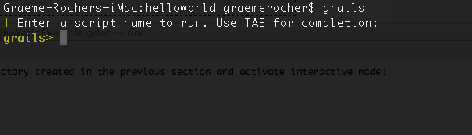
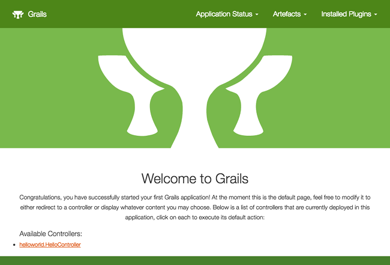
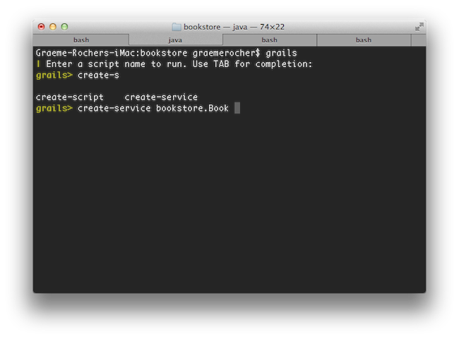
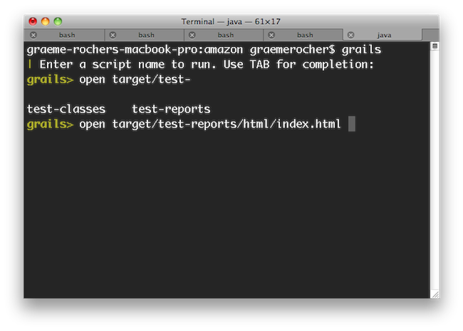
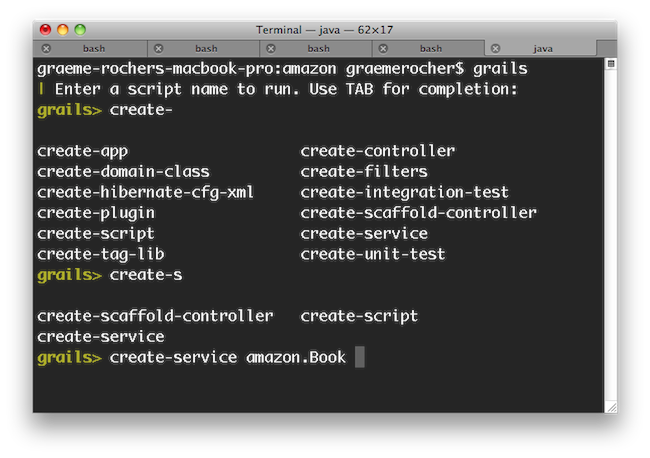
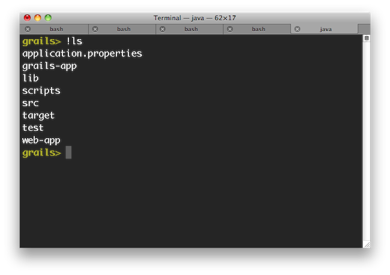

def show() {
String author = params.author
Book.get(params.id)
.map { Book book ->
rx.render view:"book", model:[book:book, author:author]
}
}The Grails Framework
Authors: Graeme Rocher, Peter Ledbrook, Marc Palmer, Jeff Brown, Luke Daley, Burt Beckwith, Lari Hotari
Version: 3.2.11
Table of Contents
1 Introduction
Java web development as it stands today is dramatically more complicated than it needs to be. Most modern web frameworks in the Java space are over complicated and don’t embrace the Don’t Repeat Yourself (DRY) principles.
Dynamic frameworks like Rails, Django and TurboGears helped pave the way to a more modern way of thinking about web applications. Grails builds on these concepts and dramatically reduces the complexity of building web applications on the Java platform. What makes it different, however, is that it does so by building on already established Java technologies like Spring and Hibernate.
Grails is a full stack framework and attempts to solve as many pieces of the web development puzzle through the core technology and its associated plugins. Included out the box are things like:
-
An easy to use Object Relational Mapping (ORM) layer built on Hibernate
-
An expressive view technology called Groovy Server Pages (GSP)
-
A controller layer built on Spring MVC
-
An interactive command line environment and build system based on Gradle
-
An embedded Tomcat container which is configured for on the fly reloading
-
Dependency injection with the inbuilt Spring container
-
Support for internationalization (i18n) built on Spring’s core MessageSource concept
-
A transactional service layer built on Spring’s transaction abstraction
All of these are made easy to use through the power of the Groovy language and the extensive use of Domain Specific Languages (DSLs)
This documentation will take you through getting started with Grails and building web applications with the Grails framework.
1.1 What's new in Grails 3.2?
This section covers all the new features introduced in Grails 3.2.
1.1.1 GORM 6 Suite
Grails 3.2 comes with GORM 6.0, the biggest release of GORM ever! GORM 6 includes the following new features:
-
GORM for Neo4j 3.0 / Bolt Driver support
-
GORM for MongoDB 3.2
-
RxGORM - GORM for RxJava
-
RxGORM for REST built on RxNetty
-
RxGORM for MongoDB Rx Driver
-
Universal Multiple Data Sources Support
-
Multi Tenancy Support
-
Spring Container Free Bootstrapping
-
Improved Unit Testing
-
Unified Configuration API
-
New Standalone Documentation
There are so many new features and novelties in GORM that we had to write its own independent What’s New Guide!
1.1.2 RxJava Support
In addition to RxGORM, support for RxJava has been added to the Grails framework via an RxJava plugin.
Reactive controllers with RxJava
The RxJava plugin allows you to return Observable responses from controllers and integrates seamlessly with RxGORM to make it possible handle requests reactively, in a non-blocking manner. For example:
Server Sent Events with RxJava
It is now possible to easily issue responses that return Server Sent Events with Grails and RxJava:
def index() {
rx.stream { Subscriber subscriber ->
for(i in (0..5)) {
if(i % 2 == 0) {
subscriber.onNext(
rx.render("Tick")
)
}
else {
subscriber.onNext(
rx.render("Tock")
)
}
sleep 1000
}
subscriber.onCompleted()
}
}| See the sample application for a demonstration of Server Sent Events in action |
1.1.3 Angular Support
AngularJS Scaffolding
The angularjs profile has been refined and now also includes a new AngularJS Scaffolding plugin.
The AngularJS scaffolding plugin adds an ng-generate-all command which will generate the necessary AngularJS 1.x client code to perform CRUD operations in conjunction with a Grails 3 backend.
Not only does this serve as a useful tool to get up and running quickly, but (like previous versions of scaffolding) it is a great way for developers to learn how to integrate AngularJS and Grails 3.
Angular Profile (3.2.1+)
Starting with Grails 3.2.1, the Angular profile is available for use to create applications with Angular 2+. To create a fresh application:
grails create-app test-ng -profile angularA multi-project build will be created with a separate project for the client and server applications. To make things easier, the tasks test, integrationTest, and bootRun have been created in the client application to make executing those tasks easier across the whole application.
Since Gradle executes tasks synchronously, and the bootRun task will never finish, it is important to execute it in parallel. At the root of the project:
./gradlew bootRun --parallelThis will start both the client and server side applications simultaneously.
For more information on how the new profile works, see the section in the user guide.
Profile and Scaffolding Renamed (3.2.9+)
Previously in Grails 3.2.8, the angular profile created applications with Angular 1.x and the angular2 profile created applications with Angular 2.x.
Because of the naming guidelines coming from the Angular team, the angular profile was renamed to angularjs. The angular2 profile was renamed to just angular. The scaffolding plugins were also changed in the same manner.
1.1.4 JSON Views 1.1
Version 1.1 of the JSON Views plugin is included with Grails 3.2’s "rest-api" profile and includes a number of new features. Below are some of the highlights:
Template Inheritance
It is now possible for a child JSON template to specify a parent template, thus allowing better template composition. For example given the following parent:
grails-app/views/_parent.gson
model {
Object object
}
json {
hal.links(object)
version "1.0"
}A child template can be specified as follows:
inherits template:"parent"
model {
Person person
}
json {
name person.name
}Global and Default Templates
Global templates can now be created for any GORM custom types. This allows adding support for external libraries such as JodaTime or custom types provided by datastores such as MongoDB (example GeoJSON).
A global template is simply another JSON template that is named after the class name. See for example the GeoJSON templates.
In addition it is now possible to provide a fallback template named /object/_object.gson that is used if no other template is found.
Better HAL Support
The HAL support has been expanded and now includes greater control over _embedded and _links, for example:
model {
Book book
}
json {
hal.links(self: book )
hal.embedded(authors: book.authors)
hal.inline(book) {
pages 300
}
}The HAL support has also been improved with support for HAL pagination.
1.1.5 CORS Support
Starting with Grails 3.2.1, we have added support to configure the CORS support provided in Spring Boot.
This feature is disabled by default. Once enabled, the default setting is "wide open". To enable CORS configuration:
application.yml
grails:
cors:
enabled: trueTo get more information on how to tighten down these settings to match your needs, visit the section on configuring CORS.
1.1.6 Grails Wrapper
The Grails wrapper is back starting with Grails 3.2.3!
You can use it the same way you use any Grails command inside a project.
./grailsw create-controller foo1.1.7 Updated Dependencies
Grails 3.2 ships with the following dependency upgrades:
-
Hibernate 5.1.1 (now the default version of Hibernate for new applications)
-
Spring Framework 4.3.1
-
Spring Boot 1.4.0
-
Gradle 3.0
1.1.8 Other Novelties
New Asciidoc Reference Documentation
The Grails user guide has been converted to use Asciidoctor for publishing, making it easier for users to contribute improvements to the documentation (Just click the "Improve this doc" link on the right!).
New default date data binding format
Dates formatted like "1970-01-01T00:00:00.000Z" will now be successfully parsed by default. The format is used by common JavaScript libraries.
The run-script command from Grails 2 is back
The run-script command makes a return! It is now possible to run Groovy scripts that are wrapped in a Grails context using Grails 3:
$ grails run-script my-groovy-script.groovyRefer to the run-script documentation for more information.
Commands, a feature previously only available in plugins, are now available to be created in applications
$ grails create-command MyCommandNote that commands defined in applications are not executed the same way as commands defined in plugins. See the updated documentation on create-command for details.
REST Profile Refinements
The REST profile has been further refined including more sensible UrlMappings and mime type configuration designed specifically for REST applications.
Ability to skip the Bootstrap process with a system property
When the Grails runtime is started, it will now execute *Bootstrap.groovy classes conditionally. If the system property grails.bootstrap.skip is set to true, the classes will not be executed for that run.
Changes to data binding with the body of a request
To be more inline with the HTTP/1.1 specification, request bodies in GET and DELETE requests will be ignored for data binding. The request body will also be ignored if the specified content length is 0.
Profile improvements
It is now possible to specify credentials for repositories used for profile resolution in your settings.groovy file. In addition, there are other new features useful for creating profiles. See the section on Profiles for the documentation.
Java 8 Date Support
Support for Java 8 date types has been added via a plugin. The tags formatDate and datePicker have been altered to support the new types. Support has been added to databinding to be able to successfully parse Java 8 dates. To take advantage of this functionality, add the new grails-java8 plugin to your application:
compile "org.grails.plugins:grails-java8"If you are using hibernate and wish to persist the new date types, you should also add a dependency to hibernate-java8 as well:
compile "org.hibernate:hibernate-java8:<your hibernate version here>"1.2 What's new in Grails 3.1?
Grails 3.1 includes the following new features.
Spring Boot 1.3 and Spring 4.2
Grails 3.1 has been upgraded to Spring Boot 1.3 and Spring 4.2.
1.2.1 Improvements to Grails 3 Profiles
Profile Publishing and Repositories
The following improvements are available in Grails profiles:
-
Profiles are now published as regular JAR files to any Maven compatible repository (Artifactory, Nexus etc.).
-
Additional profiles can be created easily with the new create-profile command.
-
Profiles can now contribute to the generation of the build
-
Profiles can now have one or many features
For more information see the new section on Profiles in the user guide.
1.2.2 REST API and AngularJS Profiles
REST Profile
A new profile is available designed for the creation of pure REST applications without a UI.
To create a REST application use the rest-api profile as an argument to create-app:
$ grails create-app myapp --profile=rest-api
In earlier milestones this profile was named web-api. The profile has been renamed rest-api which more appropriately describes its purpose.
|
Then start interactive mode to see the available commands for the profile:
$ cd myapp
$ grailsIf you hit TAB you will notice code generation commands specific to the profile including:
-
create-domain-resource- Creates a domain class annotated with the Resource annotation) -
create-restful-controller- Creates a controller that extends RestfulController.
JSON and Markup Views
The REST profile includes the ability to define JSON and Markup views and the build.gradle features the ability to compile these views for production use.
The REST profile also creates JSON views to render the index action and common commands such as generate-views have been overridden to generate JSON views.
AngularJS Profile
An initial version of the AngularJS profile is now available, making it easier to create and integrate AngularJS with Grails 3 applications.
To create a Grails 3 AngularJS application use the angularjs profile as an argument to create-app:
$ grails create-app myapp --profile=angularjsThen start interactive mode to see the available commands for the profile:
$ cd myapp
$ grailsYou will notice new commands such as create-ng-component, create-ng-controller etc. that help you get going creating an AngularJS application.
The build.gradle is also pre-configured with the necessary Gradle plugins to integrate AngularJS with Asset Pipeline. The created Angular application can be found in grails-app/assets/javascripts.
For more detail on what the Angular profile provides, see the AngularJS Profile section in the documentation
1.2.3 GORM 5 Suite
Grails 3.1 ships with GORM 5 which is a brand new release of GORM supporting the following technologies:
-
Hibernate 3, 4 and 5 - for SQL databases GORM for Hibernate now supports the latest Hibernate 5.x release
-
MongoDB 3.x - GORM for MongoDB has been upgraded to the MongoDB 3.x Java driver and supports codec based persistence
-
Neo4j 2.3.x - GORM for Neo4j has been significantly improved and support the latest release of Neo4j
-
Cassandra - GORM for Cassandra supports the latest 2.0.x drivers
For more information refer to the new GORM 5 website.
1.2.4 Grails Wrapper
The Grails wrapper is back starting with Grails 3.1.14!
You can use it the same way you use any Grails command inside a project.
./grailsw create-controller foo1.2.5 Plugin Publishing Plugins
New Gradle plugins are available to simplify publishing of plugins and profiles.
To utilize the plugin apply the org.grails.grails-plugin-publish plugin (after any existing Grails plugins for Gradle):
apply plugin: "org.grails.grails-plugin"
apply plugin: "org.grails.grails-plugin-publish"For a profile the grails-profile-publish plugin can be used instead:
apply plugin: "org.grails.grails-profile"
apply plugin: "org.grails.grails-profile-publish"Then configure the plugin. For example:
grailsPublish {
user = 'user'
key = 'key'
githubSlug = 'foo/bar'
license {
name = 'Apache-2.0'
}
title = "My Plugin Title"
desc = "My Plugin Description"
developers = [johndoe:"John Doe"]
}The user and key are your Bintray credentials. With this done you can continue to use bintrayUpload to publish your plugin. In addition, if you wish to update the Grails plugin portal, you simply need to configure your grails.org credentials:
grailsPublish {
...
portalUser = "..."
portalPassword = "..."
}Then call notifyPluginPortal to update the Grails.org Plugins website:
gradle notifyPluginPortal2 Getting Started
2.1 Installation Requirements
Before installing Grails 3.0 you will need as a minimum a Java Development Kit (JDK) installed version 1.7 or above. Download the appropriate JDK for your operating system, run the installer, and then set up an environment variable called JAVA_HOME pointing to the location of this installation.
To automate the installation of Grails we recommend SDKMAN which greatly simplifies installing and managing multiple Grails versions.
On some platforms (for example OS X) the Java installation is automatically detected. However in many cases you will want to manually configure the location of Java. For example, if you’re using bash or another variant of the Bourne Shell:
export JAVA_HOME=/Library/Java/Home
export PATH="$PATH:$JAVA_HOME/bin"
On Windows you would have to configure these environment variables in My Computer/Advanced/Environment Variables
|
2.2 Downloading and Installing
The first step to getting up and running with Grails is to install the distribution.
The best way to install Grails on *nix systems is with SDKMAN which greatly simplifies installing and managing multiple Grails versions.
Install with SDKMAN
To install the latest version of Grails using SDKMAN, run this on your terminal:
sdk install grailsYou can also specify a version
sdk install grails 3.2.3You can find more information about SDKMAN usage on the SDKMAN Docs
Manual installation
For manual installation follow these steps:
-
Download a binary distribution of Grails and extract the resulting zip file to a location of your choice
-
Set the GRAILS_HOME environment variable to the location where you extracted the zip
-
On Unix/Linux based systems this is typically a matter of adding something like the following
export GRAILS_HOME=/path/to/grailsto your profile -
On Windows this is typically a matter of setting an environment variable under
My Computer/Advanced/Environment Variables
-
-
Then add the
bindirectory to yourPATHvariable:-
On Unix/Linux based systems this can be done by adding
export PATH="$PATH:$GRAILS_HOME/bin"to your profile -
On Windows this is done by modifying the
Pathenvironment variable underMy Computer/Advanced/Environment Variables
-
If Grails is working correctly you should now be able to type grails -version in the terminal window and see output similar to this:
Grails version: 3.2.112.3 Creating an Application
To create a Grails application you first need to familiarize yourself with the usage of the grails command which is used in the following manner:
grails <<command name>>Run create-app to create an application:
grails create-app helloworldThis will create a new directory inside the current one that contains the project. Navigate to this directory in your console:
cd helloworld2.4 A Hello World Example
Let’s now take the new project and turn it into the classic "Hello world!" example. First, change into the "helloworld" directory you just created and start the Grails interactive console:
$ cd helloworld
$ grailsYou should see a prompt that looks like this:

What we want is a simple page that just prints the message "Hello World!" to the browser. In Grails, whenever you want a new page you just create a new controller action for it. Since we don’t yet have a controller, let’s create one now with the create-controller command:
grails> create-controller helloDon’t forget that in the interactive console, we have auto-completion on command names. So you can type "cre" and then press <tab> to get a list of all create-* commands. Type a few more letters of the command name and then <tab> again to finish.
The above command will create a new controller in the grails-app/controllers/helloworld directory called HelloController.groovy. Why the extra helloworld directory? Because in Java land, it’s strongly recommended that all classes are placed into packages, so Grails defaults to the application name if you don’t provide one. The reference page for create-controller provides more detail on this.
We now have a controller so let’s add an action to generate the "Hello World!" page. In any text editor, edit the new controller — the HelloController.groovy file — by adding a render line. The edited file’s code should look like this:
package helloworld
class HelloController {
def index() {
render "Hello World!"
}
}The action is simply a method. In this particular case, it calls a special method provided by Grails to render the page.
Job done. To see your application in action, you just need to start up a server with another command called run-app:
grails> run-appThis will start an embedded server on port 8080 that hosts your application. You should now be able to access your application at the URL http://localhost:8080/ - try it!
Note that in previous versions of Grails the context path was by default the name of the application. If you wish to restore this behavior you can configure a context path in grails-app/conf/application.yml:
server:
contextPath: /helloworldWith the above configuration in place the server will instead startup at the URL http://localhost:8080/helloworld/.
If you see the error "Server failed to start for port 8080: Address already in use", then it means another server is running on that port. You can easily work around this by running your server on a different port using run-app -port=9090. '9090' is just an example: you can pretty much choose anything within the range 1024 to 49151.
|
The result will look something like this:

This is the Grails intro page which is rendered by the grails-app/view/index.gsp file. It detects the presence of your controllers and provides links to them. You can click on the "HelloController" link to see our custom page containing the text "Hello World!". Voila! You have your first working Grails application.
One final thing: a controller can contain many actions, each of which corresponds to a different page (ignoring AJAX at this point). Each page is accessible via a unique URL that is composed from the controller name and the action name: /<appname>/<controller>/<action>. This means you can access the Hello World page via /helloworld/hello/index, where 'hello' is the controller name (remove the 'Controller' suffix from the class name and lower-case the first letter) and 'index' is the action name. But you can also access the page via the same URL without the action name: this is because 'index' is the default action. See the end of the controllers and actions section of the user guide to find out more on default actions.
2.5 Using Interactive Mode
Grails 3.0 features an interactive mode which makes command execution faster since the JVM doesn’t have to be restarted for each command. To use interactive mode simple type 'grails' from the root of any projects and use TAB completion to get a list of available commands. See the screenshot below for an example:

For more information on the capabilities of interactive mode refer to the section on Interactive Mode in the user guide.
2.6 Getting Set Up in an IDE
IntelliJ IDEA
IntelliJ IDEA is an excellent IDE for Grails 3.0 development. It comes in 2 editions, the free community edition and the paid-for ultimate edition.
The community edition can be used for most things, although GSP syntax higlighting is only part of the ultimate edition
| You can always open GSP files in the HTML editor if you just want highlighting in the community edition. |
To get started with Intellij IDEA and Grails 3.0 simply go to File / Import Project and point IDEA at your build.gradle file to import and configure the project.
TextMate, Sublime, VIM etc.
There are several excellent text editors that work nicely with Groovy and Grails. See below for references:
-
A TextMate bundle exists Groovy / Grails support in Textmate
-
A Sublime Text plugin can be installed via Sublime Package Control for the Sublime Text Editor.
-
See this post for some helpful tips on how to setup VIM as your Grails editor of choice.
-
An Atom Package is available for use with the Atom editor.
2.7 Convention over Configuration
Grails uses "convention over configuration" to configure itself. This typically means that the name and location of files is used instead of explicit configuration, hence you need to familiarize yourself with the directory structure provided by Grails.
Here is a breakdown and links to the relevant sections:
-
grails-app- top level directory for Groovy sources-
conf- Configuration sources -
controllers- Web controllers - The C in MVC. -
domain- The application domain. -
i18n- Support for internationalization (i18n). -
services- The service layer. -
taglib- Tag libraries. -
utils- Grails specific utilities. -
views- Groovy Server Pages or JSON Views - The V in MVC.
-
-
scripts- Code generation scripts. -
src/main/groovy- Supporting sources -
src/test/groovy- Unit and integration tests.
2.8 Running and Debugging an Application
Grails applications can be run with the built in Tomcat server using the run-app command which will load a server on port 8080 by default:
grails run-appYou can specify a different port by using the -port argument:
grails run-app -port=8090Note that it is better to start up the application in interactive mode since a container restart is much quicker:
$ grails
grails> run-app
| Grails application running at http://localhost:8080 in environment: development
grails> stop-app
| Shutting down application...
| Application shutdown.
grails> run-app
| Grails application running at http://localhost:8080 in environment: developmentYou can debug a grails app by simply right-clicking on the Application.groovy class in your IDE and choosing the appropriate action (since Grails 3).
Alternatively, you can run your app with the following command and then attach a remote debugger to it.
grails run-app --debug-jvmMore information on the run-app command can be found in the reference guide.
2.9 Testing an Application
The create-* commands in Grails automatically create unit or integration tests for you within the src/test/groovy directory. It is of course up to you to populate these tests with valid test logic, information on which can be found in the section on Unit and integration tests.
To execute tests you run the test-app command as follows:
grails test-app2.10 Deploying an Application
Grails applications can be deployed in a number of different ways.
If you are deploying to a traditional container (Tomcat, Jetty etc.) you can create a Web Application Archive (WAR file), and Grails includes the war command for performing this task:
grails warThis will produce a WAR file under the build/libs directory which can then be deployed as per your container’s instructions.
Note that by default Grails will include an embeddable version of Tomcat inside the WAR file, this can cause problems if you deploy to a different version of Tomcat. If you don’t intend to use the embedded container then you should change the scope of the Tomcat dependencies to provided prior to deploying to your production container in build.gradle:
provided "org.springframework.boot:spring-boot-starter-tomcat"If you are building a WAR file to deploy on Tomcat 7 then in addition you will need to change the target Tomcat version in the build. Grails is built against Tomcat 8 APIs by default.
To target a Tomcat 7 container, insert a line to build.gradle above the dependencies { } section:
ext['tomcat.version'] = '7.0.59'Unlike most scripts which default to the development environment unless overridden, the war command runs in the production environment by default. You can override this like any script by specifying the environment name, for example:
grails dev warIf you prefer not to operate a separate Servlet container then you can simply run the Grails WAR file as a regular Java application. Example:
grails war
java -Dgrails.env=prod -jar build/libs/mywar-0.1.warWhen deploying Grails you should always run your containers JVM with the -server option and with sufficient memory allocation. A good set of VM flags would be:
-server -Xmx768M2.11 Supported Java EE Containers
Grails runs on any container that supports Servlet 3.0 and above and is known to work on the following specific container products:
-
Tomcat 7
-
GlassFish 3 or above
-
Resin 4 or above
-
JBoss 6 or above
-
Jetty 8 or above
-
Oracle Weblogic 12c or above
-
IBM WebSphere 8.0 or above
| It’s required to set "-Xverify:none" in "Application servers > server > Process Definition > Java Virtual Machine > Generic JVM arguments" for older versions of WebSphere. This is no longer needed for WebSphere version 8 or newer. |
Some containers have bugs however, which in most cases can be worked around. A list of known deployment issues can be found on the Grails wiki.
2.12 Creating Artefacts
Grails ships with a few convenience targets such as create-controller, create-domain-class and so on that will create controllers and different artefact types for you. NOTE: These are just for your convenience and you can just as easily use an IDE or your favourite text editor. For example to create the basis of an application you typically need a domain model:
grails create-app helloworld
cd helloworld
grails create-domain-class bookThis will result in the creation of a domain class at grails-app/domain/helloworld/Book.groovy such as:
package helloworld
class Book {
}There are many such create-* commands that can be explored in the command line reference guide.
| To decrease the amount of time it takes to run Grails scripts, use the interactive mode. |
2.13 Generating an Application
To get started quickly with Grails it is often useful to use a feature called scaffolding to generate the skeleton of an application. To do this use one of the generate-* commands such as generate-all, which will generate a controller (and its unit test) and the associated views:
grails generate-all helloworld.Book3 Upgrading
Grails 3.0 is a complete ground up rewrite of Grails and introduces new concepts and components for many parts of the framework.
When upgrading an application or plugin from Grails 3.0 there are many areas to consider including:
-
Removal of dynamic scaffolding from Grails 3.0.0 till 3.0.4 when it was re-introduced
-
Removal of before and after interceptors
-
Project structure differences
-
File location differences
-
Configuration differences
-
Package name differences
-
Legacy Gant Scripts
-
Gradle Build System
-
Changes to Plugins
-
Source vs Binary Plugins
The best approach to take when upgrading a plugin or application (and if your application is using several plugins the plugins will need upgrading first) is to create a new Grails 3.0 application of the same name and copy the source files into the correct locations in the new application.
Removal of before and after interceptors
Before and after interceptors were removed. So all beforeInterceptor and afterInterceptor need to be replaced by Stand alone interceptors.
File Location Differences
The location of certain files have changed or been replaced with other files in Grails 3.0. The following table lists old default locations and their respective new locations:
| Old Location | New Location | Description |
|---|---|---|
|
|
Build time configuration is now defined in a Gradle build file |
|
|
Renamed for consistency with Spring Boot |
|
|
Moved since grails-app/conf is not a source directory anymore |
|
|
Moved since grails-app/conf is not a source directory anymore |
|
|
Moved for consistency with Gradle |
|
|
Moved for consistency with Gradle |
|
|
Moved for consistency with Gradle |
|
|
Moved for consistency with Gradle |
|
|
Moved for consistency with Gradle |
|
|
Moved for consistency with Gradle |
|
|
The plugin descriptor moved to a source directory |
src/main/resources/public is recommended as src/main/webapp only gets included in WAR packaging but not in JAR packaging.
It is recommended to merge Java source files from src/java into src/main/groovy. You can create a src/main/java directory if you want to and it will be used but it is generally better to combine the folders. (The Groovy and Java sources compile together.)
For plugins the plugin descriptor (a Groovy file ending with "GrailsPlugin") which was previously located in the root of the plugin directory should be moved to the src/main/groovy directory under an appropriate package.
New Files Not Present in Grails 2.x
The reason it is best to create a new application and copy your original sources to it is because there are a number of new files that are not present in Grails 2.x by default. These include:
| File | Description |
|---|---|
|
The Gradle build descriptor located in the root of the project |
|
Properties file defining the Grails and Gradle versions |
|
Logging previously defined in |
|
Configuration can now also be defined using YAML |
|
The |
Files Not Present in Grails 3.x
Some files that were previously created by Grails 2.x are no longer created. These have either been removed or an appropriate replacement added. The following table lists files no longer in use:
| File | Description |
|---|---|
|
The application version is now defined in |
|
Merged together into |
|
Dependency resolution should be used to resolve JAR files |
|
Removed. Beans can be defined in |
|
Grails 3.0 no longer requires web.xml. Customizations can be done via Spring |
|
Removed. Sitemesh filter no longer present. |
|
Removed. Can be restored in |
3.1 Upgrading from Grails 3.2
If you are upgrading from Grails 3.2 there are a few items to take into consideration.
Legacy Converters API Separated From Core
Since the addition of json views, the previous way to convert objects to JSON has been considered legacy. In Grails 3.3 the code to support the legacy converters has been moved out of core and into a separate plugin. That means that by default, code that uses grails.converters.JSON or grails.converters.XML will no longer work by default.
Common usages of this feature are render(book as JSON).
If your codebase uses the legacy converters it is encouraged to convert the functionality to use JSON views, however you can add a dependency in your code to allow current usages of the converters to work again.
build.gradle
compile "org.grails.plugins:grails-plugin-converters"
| The support to build JSON directly from the render method no longer supports the old API and any code that used it will need to be converted to use the groovy.json.StreamingJsonBuilder syntax. |
The support for rendering with the previous API was disabled by default in 3.1 and was able be re-enabled with the grails.json.legacy.builder: true setting. That setting has been removed in Grails 3.3.
3.2 Upgrading from Grails 3.1
If you are upgrading from Grails 3.1 there are a few items to take into consideration.
Use WebPromises instead of Promises in Controllers
In versions of Grails prior to 3.2, grails.async.Promises used to allow the use of render and other controller methods, however this was unsafe as the request thread may have finished prior to the task executing leading to unexpected errors.
You should now instead use grails.async.web.WebPromises within a controller.
Deprecated Classes and Methods Removed
Classes and methods deprecated in Grails 3.0.x have been removed in Grails 3.2. This includes all classes in the org.codehaus.groovy.grails package. If your application or plugin uses deprecated classes they should be updated to use non-deprecated replacements.
Slf4j Now Default
The log property injected at compile time into all classes is now an Slf4j Logger instance and not an instance of the Commons Logging Log class.
This should be a simple upgrade for most use cases, however this change does have some implications, for example it is no longer possible to pass non-string types to the log method. Example:
log.info "this works"
Double notAString = 9.2
log.info notAStringThe latter call to the info method will throw an exception as it is not a String.
Instead you should use Slf4j’s formatting anchors to log. The advantage is the toString() method is not called unless the message will be logged.
log.info "{}", 9.2D
log.debug "Key: {}, Value: {}", key, value
log.error "{}", exception.message, exceptionSee the Slf4j FAQ for more information.
Spring 4.3
Grails 3.2 comes with Spring 4.3 which no longer supports Hibernate 3 and hence Grails 3.2 no longer supports Hibernate 3 either and you will need to upgrade to Hibernate 4 or above.
Spring Boot 1.4
Spring Boot 1.4, through its dependency management mechanism, enforces the upgrade for many dependencies. You should review your dependencies following the upgrade to ensure the new versions are compatible with your application.
Spring Boot 1.4 also deprecates many testing annotations (such as WebIntegrationTest).
See the Spring Boot 1.4 release notes for more information on the changes required at the Boot level.
Hibernate 4 Usage
Related to Spring Boot 1.4, one important change is that Hibernate 5 is now the default version, so if you have declared a dependency on the hibernate4 plugin in Grails such as:
compile "org.grails.plugins:hibernate4"This will not be enough to ensure that Hibernate 4 is used. You must instead also directly declare the Hibernate 4 dependencies:
dependencies {
compile "org.grails.plugins:hibernate4"
compile "org.hibernate:hibernate-core:4.3.10.Final"
compile "org.hibernate:hibernate-ehcache:4.3.10.Final"
}GORM 6 Configuration Model
In preparation for Hibernate 5.2 support the previous "SessionFactoryBean" notion has been removed. Now if you wish to customize SessionFactory creation you should instead register a custom org.grails.orm.hibernate.connections.HibernateConnectionSourceFactory in Spring.
HibernateTestMixin Dependency Changes
The grails-datastore-test-support dependency has been removed and the HibernateTestMixin class integrated directly into the plugin, so if you receive a resolve error remove the following dependency from your build.gradle:
dependencies {
testImplementation "org.grails:grails-datastore-test-support"
}application.groovy Changes
An improvement was added to make groovy configuration behave like yml configuration when it comes to the CLI. Previously, configuration values in application.groovy were not available to commands like grails create-controller. A side effect of this change causes an exception when those commands are executed if the configuration relies on classes in the runtime.
Error occurred running Grails CLI: startup failed:
script14738267015581837265078.groovy: 13: unable to resolve class com.foo.BarThe solution is to create a separate file called runtime.groovy in grails-app/conf. That file will not be parsed by the CLI and will only be included at runtime.
Stop using the default namespace
Using the default package in places like UrlMappings.groovy, BootStrap.groovy or in a taglib can cause that code to fail or not execute at all when packaged in a JAR or WAR file. Make sure all Groovy/Java files start with the package statement and move any affected files to the respective folder. For example, change:
class UrlMappings {
static mappings = {
...to:
package myapp
class UrlMappings {
static mappings = {
...and move the file from grails-app/controllers/UrlMappings.groovy into .grails-app/controllers/myapp/UrlMappings.groovy
3.3 Upgrading from Grails 3.0
Generally to upgrade an application from Grails 3.0 you can simply modify the version of Grails in gradle.properties.
There are however some differences to Grails 3.0.x that are documented below.
GORM 5 Upgrade
Grails 3.1 ships with GORM 5, which is a near complete rewrite of GORM ontop of Groovy traits and is not binary compatible with the previous version of GORM.
If you receive an error such as:
Caused by: java.lang.ClassNotFoundException: org.grails.datastore.gorm.GormEntity$Trait$FieldHelper
... 8 moreYou are using a plugin or class that was compiled with a previous version of GORM and these will need to be recompiled to be Grails 3.1 and GORM 5 compatible.
Hibernate Plugin
For the GORM 5 release the hibernate plugin has been renamed to hibernate4 (and there are hibernate3 and hibernate5 versions too). You should change your build.gradle to reflect that:
compile 'org.grails.plugins:hibernate4'Static Resources Path
The default path for static resources resolved from src/main/resources/public has been changed to be nested under the static/* pattern instead of directly under the root of the application. For example a link in GSP pages such as:
${g.resource(dir:'files', file:'mydoc.pdf')}Will produce a URI such as /static/files/mydoc.pdf instead of /files/mydoc.pdf. If you wish to revert to the previous behavior you can configure this in application.yml:
grails:
resources:
pattern: '/**'Filters Plugin Removed
The Filters plugin was replaced by Interceptors in Grails 3.0.x, although the plugin was still present. In Grails 3.1.x the Filters plugin has been removed. If you still wish to use the filters plugin you can add a dependency on the previous version provided by Grails 3.0.x. For example:
compile 'org.grails:grails-plugin-filters:3.0.12'You would also need to move the filters to any other source directory (e.g. grails-app/controllers) as grails-app/conf is not considered a source directory anymore.
Spring Transactional Proxies
Because the grails.transactional.Transactional transform already provides the ability to create transactional services without the need for proxies, traditional support for transactional proxies has been disabled by default for new applications.
This means that if you have any services that use the transactional property and not the Transactional annotation they should be altered. For example the following service:
class FooService {
static transactional = true
}Becomes:
import grails.transaction.Transactional
@Transactional
class FooService {
}In addition because in previous versions of a Grails transactional defaulted to true any services that do not declare transactional should be altered too.
If you wish to adopt the new behavior then transctional proxies can be disabled with the following configuration:
grails:
spring:
transactionManagement:
proxies: falseJSON Converter changes
The default JSON converter no longer includes the class property by default. This can be re-enable with the following configuration:
grails:
converters:
domain:
include:
class: trueIn addition the default JSON converter will no longer render the id property if it is null.
JSON Builder Groovy Alignment
The class grails.web.JSONBuilder has been deprecated and replaced with groovy.json.StreamingJsonBuilder, the default JSON builder within Groovy. This avoids confusion with the differences between JSON builders and better aligns with Groovy’s core libraries.
This also means that any render blocks that rendered JSON will need to be updated to use the groovy.json.StreamingJsonBuilder syntax. For example the following code:
render(contentType:"application/json") {
title = "The Stand"
}Should instead be written as:
render(contentType:"application/json") {
title "The Stand"
}If you are upgrading and prefer to continue to use the previous implementation then you can re-enable the deprecated JSONBuilder with the following configuration:
grails:
json:
legacy:
builder: trueJSON Views Replace JSON Converters
With the addition of JSON views the previous API for using JSON converters is largely discouraged in favour of views. The converters plugin will in the future be separated into an external plugin and JSON views phased in to replace it. The JSON converter API is not deprecated, however JSON views provide a more fully featured, elegant API that is superior to writing JSON converters and/or marshallers.
Spring Boot 1.3 and Spring 4.2
Grails 3.1 ships with upgraded third party libraries that may require changes. See the Spring Boot upgrade notes for information.
Unlike Spring Boot 1.2, Spring Boot 1.3 no longer uses the Gradle Application Plugin so if you relied on any behavior the application plugin then the plugin will need to be re-applied to your build.gradle.
Spring Boot 1.3 also uses Spring Security 4.x by default, so if you project depends on Spring Security 3.x you have to force a downgrade. For example:
compile 'org.springframework.security:spring-security-core:3.2.9.RELEASE'
compile 'org.springframework.security:spring-security-web:3.2.9.RELEASE'Gradle run task no longer available by default
Because the Gradle run task for application startup was provided by the Gradle Application Plugin (see above), it is no longer available by default. If you use Gradle to start up your application, use the bootRun task instead, or re-apply the Application plugin in your build.gradle.
Note: If you don’t have need of the Gradle Application plugin’s features, but have custom Gradle tasks or IDE configurations that depend on run, you can supply your own run task that depends on bootRun in your build.gradle:
task run(dependsOn: ['bootRun'])Resource annotation defaults to JSON instead of XML
The Resource annotation applied to domain classes defaults to XML in Grails 3.0.x, but in Grails 3.1.x and above it defaults to JSON.
If you use this annotation with the expecation of produces XML responses as the default you can modify the definition as follows:
import grails.rest.*
@Resource(formats=['xml', 'json'])
class MyDomainClass {}This will restore the Grails 3.0.x behavior.
Geb and HTMLUnit 2.18
If you use Geb with HTMLUnit (something that is not recommended, as a more native driver such as PhantomJS is recommended) you will need to upgrade your dependencies in build.grade:
testRuntimeOnly 'org.seleniumhq.selenium:selenium-htmlunit-driver:2.47.1'
testRuntimeOnly 'net.sourceforge.htmlunit:htmlunit:2.18'Note that there are also some changes in behavior in HTMLUnit 2.18 that may cause issues in existing tests including:
-
Expressions that evaluate the title (Example
$('title')) now return blank and should be replaced with justtitle -
If you return plain text in a response without surrounding HTML tags, these are no longer regarded as valid responses and should be wrapped in the required tags.
application.groovy Changes (3.1.11+)
An improvement was added to make groovy configuration behave like yml configuration when it comes to the CLI. Previously, configuration values in application.groovy were not available to commands like grails create-controller. A side effect of this change causes an exception when those commands are executed if the configuration relies on classes in the runtime.
Error occurred running Grails CLI: startup failed:
script14738267015581837265078.groovy: 13: unable to resolve class com.foo.BarThe solution is to create a separate file called runtime.groovy in grails-app/conf. That file will not be parsed by the CLI and will only be included at runtime.
3.4 Upgrading from Grails 2.x
This guide takes you through the fundamentals of upgrading a Grails 2.x application or plugins to Grails 3.x.
3.4.1 Upgrading Plugins
To upgrade a Grails 2.x plugin to Grails 3.x you need to make a number of different changes. This documentation will outline the steps that were taken to upgrade the Quartz plugin to Grails 3, each individual plugin may differ.
Step 1 - Create a new Grails 3 plugin
The first step is to create a new Grails 3 plugin using the command line:
$ grails create-plugin quartzThis will create a Grails 3 plugin in the quartz directory.
Step 2 - Copy sources from the original Grails 2 plugin
The next step is to copy the sources from the original Grails 2 plugin to the Grails 3 plugin:
# first the sources
cp -rf ../quartz-2.x/src/groovy/ src/main/groovy
cp -rf ../quartz-2.x/src/java/ src/main/groovy
cp -rf ../quartz-2.x/grails-app/ grails-app
cp -rf ../quartz-2.x/QuartzGrailsPlugin.groovy src/main/groovy/grails/plugins/quartz
# then the tests
cp -rf ../quartz-2.x/test/unit/* src/test/groovy
mkdir -p src/integration-test/groovy
cp -rf ../quartz-2.x/test/integration/* src/integration-test/groovy
# then templates / other resources
cp -rf ../quartz-2.x/src/templates/ src/main/templatesStep 3 - Alter the plugin descriptor
You will need to add a package declaration to the plugin descriptor. In this case QuartzGrailsPlugin is modified as follows:
// add package declaration
package grails.plugins.quartz
...
class QuartzGrailsPlugin extends Plugin {
...
}In addition you should remove the version property from the descriptor as this is now defined in build.gradle.
Step 4 - Update the Gradle build with required dependencies
The repositories and dependencies defined in grails-app/conf/BuildConfig.groovy of the original Grails 2.x plugin will need to be defined in build.gradle of the new Grails 3.x plugin:
compile("org.quartz-scheduler:quartz:2.2.1") {
exclude group: 'slf4j-api', module: 'c3p0'
}It is recommended to use the latest stable, Grails 3+ compatible version of plugins. (Grails 2.x plugin versions will not work.)
Step 5 - Modify Package Imports
In Grails 3.x all internal APIs can be found in the org.grails package and public facing APIs in the grails package. The org.codehaus.groovy.grails package no longer exists.
All package declaration in sources should be modified for the new location of the respective classes. Example org.codehaus.groovy.grails.commons.GrailsApplication is now grails.core.GrailsApplication.
Step 5 - Migrate Plugin Specific Config to application.yml
Some plugins define a default configuration file. For example the Quartz plugin defines a file called grails-app/conf/DefaultQuartzConfig.groovy. In Grails 3.x this default configuration can be migrated to grails-app/conf/application.yml and it will automatically be loaded by Grails without requiring manual configuration merging.
Step 6 - Update plugin exclusions
Old plugins may have a pluginExcludes property defined that lists the patterns for any files that should not be included in the plugin package. This is normally used to exclude artifacts such as domain classes that are used in the plugin’s integration tests. You generally don’t want these polluting the target application.
This property is no longer sufficient in Grails 3, and nor can you use source paths. Instead, you must specify patterns that match the paths of the compiled classes. For example, imagine you have some test domain classes in the grails-app/domain/plugin/tests directory. You should first change the pluginExcludes value to
def pluginExcludes = ["plugin/test/**"]and then add this block to the build file:
jar {
exclude "plugin/test/**"
}The easiest way to ensure these patterns work effectively is to put all your non-packaged class into a distinct Java package so that there is a clean separation between the main plugin classes and the rest.
Step 7 - Register ArtefactHandler Definitions
In Grails 3.x ArtefactHandler definitions written in Java need to be declared in a file called src/main/resources/META-INF/grails.factories since these need to be known at compile time.
If the ArtefactHandler is written in Groovy this step can be skipped as Grails will automatically create the grails.factories file during compilation.
|
The Quartz plugin requires the following definition to register the ArtrefactHandler:
grails.core.ArtefactHandler=grails.plugins.quartz.JobArtefactHandlerStep 8 - Migrate Code Generation Scripts
Many plugins previously defined command line scripts in Gant. In Grails 3.x command line scripts have been replaced by two new features: Code generation scripts and Gradle tasks.
If your script is doing simple code generation then for many cases a code generation script can replace an old Gant script.
The create-job script provided by the Quartz plugin in Grails 2.x was defined in scripts/CreateJob.groovy as:
includeTargets << grailsScript("_GrailsCreateArtifacts")
target(createJob: "Creates a new Quartz scheduled job") {
depends(checkVersion, parseArguments)
def type = "Job"
promptForName(type: type)
for (name in argsMap.params) {
name = purgeRedundantArtifactSuffix(name, type)
createArtifact(name: name, suffix: type, type: type, path: "grails-app/jobs")
createUnitTest(name: name, suffix: type)
}
}
setDefaultTarget 'createJob'A replacement Grails 3.x compatible script can be created using the create-script command:
$ grails create-script create-jobWhich creates a new script called src/main/scripts/create-job.groovy. Using the new code generation API it is simple to implement:
description("Creates a new Quartz scheduled job") {
usage "grails create-job <<JOB NAME>>"
argument name:'Job Name', description:"The name of the job"
}
model = model( args[0] )
render template:"Job.groovy",
destination: file( "grails-app/jobs/$model.packagePath/${model.simpleName}Job.groovy"),
model: modelPlease refer to the documentation on Creating Custom Scripts for more information.
Migrating More Complex Scripts Using Gradle Tasks
Using the old Grails 2.x build system it was relatively common to spin up Grails inside the command line. In Grails 3.x it is not possible to load a Grails application within a code generation script created by the create-script command.
Instead a new mechanism specific to plugins exists via the create-command command. The create-command command will create a new ApplicationCommand, for example the following command will execute a query:
import grails.dev.commands.*
import javax.sql.*
import groovy.sql.*
import org.springframework.beans.factory.annotation.*
class RunQueryCommand implements ApplicationCommand {
@Autowired
DataSource dataSource
boolean handle(ExecutionContext ctx) {
def sql = new Sql(dataSource)
println sql.executeQuery("select * from foo")
return true
}
}With this command in place once the plugin is installed into your local Maven cache you can add the plugin to both the build classpath and the runtime classpath of the application’s build.gradle file:
buildscript {
...
dependencies {
classpath "org.grails.plugins:myplugin:0.1-SNAPSHOT"
}
}
...
dependencies {
runtime "org.grails.plugins:myplugin:0.1-SNAPSHOT"
}Grails will automatically create a Gradle task called runQuery and a command named run-query so both the following examples will execute the command:
$ grails run-query
$ gradle runQueryStep 8 - Delete Files that were migrated or no longer used
You should now delete and cleanup the project of any files no longer required by Grails 3.x (BuildConfig.groovy, Config.groovy, DataSource.groovy etc.)
3.4.2 Upgrading Applications
Upgrading applications to Grails 3.x will require that you upgrade all plugins the application uses first, hence you should follow the steps in the previous section to first upgrade your plugins.
Step 1 - Create a New Application
Once the plugins are Grails 3.x compatible you can upgrade the application. To upgrade an application it is again best to create a new Grails 3 application using the "web" profile:
$ grails create-app myapp
$ cd myappStep 2 - Migrate Sources
The next step is to copy the sources from the original Grails 2 application to the Grails 3 application:
# first the sources
cp -rf ../old_app/src/groovy/ src/main/groovy
cp -rf ../old_app/src/java/ src/main/groovy
cp -rf ../old_app/grails-app/ grails-app
# then the tests
cp -rf ../old_app/test/unit/ src/test/groovy
mkdir -p src/integration-test/groovy
cp -rf ../old_app/test/integration/ src/integration-test/groovyStep 3 - Update the Gradle build with required dependencies
The repositories and dependencies defined in grails-app/conf/BuildConfig.groovy of the original Grails 2.x application will need to be defined in build.gradle of the new Grails 3.x application.
Step 4 - Modify Package Imports
In Grails 3.x all internal APIs can be found in the org.grails package and public facing APIs in the grails package. The org.codehaus.groovy.grails package no longer exists.
All package declaration in sources should be modified for the new location of the respective classes. Example org.codehaus.groovy.grails.commons.GrailsApplication is now grails.core.GrailsApplication.
Step 5 - Migrate Configuration
The configuration of the application will need to be migrated, this can normally be done by simply renaming grails-app/conf/Config.groovy to grails-app/conf/application.groovy and merging the content of grails-app/conf/DataSource.groovy into grails-app/conf/application.groovy.
Note however that Log4j has been replaced by grails-app/conf/logback.groovy for logging, so any logging configuration in grails-app/conf/Config.groovy should be migrated to logback format.
Step 6 - Migrate web.xml Modifications to Spring
If you have a modified web.xml template then you will need to migrate this to Spring as Grails 3.x does not use a web.xml (although it is still possible to have on in src/main/webapp/WEB-INF/web.xml).
New servlets and filters can be registered as Spring beans or with ServletRegistrationBean and FilterRegistrationBean respectively.
Step 7 - Migrate Static Assets not handled by Asset Pipeline
If you have static assets in your web-app directory of your Grails 2.x application such as HTML files, TLDs etc. these need to be moved. For public assets such as static HTML pages and so on these should go in src/main/resources/public.
TLD descriptors and non public assets should go in src/main/resources/WEB-INF.
As noted earlier, src/main/webapp folder can also be used for this purpose but it is not recommended.
Step 8 - Migrate Tests
Once the package names are corrected unit tests will continue to run, however any tests that extend the deprecated and removed JUnit 3 hierarchy will need to be migrated to Spock or JUnit 4.
Integration tests will need to be annotated with the Integration annotation and should not extend GroovyTestCase or any JUnit 3 super class.
3.4.3 General Changes to be aware of when migrating apps
There are other miscellaneous changes between Grails 2.x and Grails 3.x that it may help to be aware of when migrating your applications and plugins. Minor changes may be required.
Domain classes
The Constraints section of a Domain Class (or other validateable object) looks like this:
static constraints = {
name nullable: true, blank: false
myField nullable: true
another unique: true
}In Grails 2.x, fields with no constraints could be declared in the Constraints block, as a method call with no arguments. Example (NB. the following syntax is no longer supported):
static constraints = {
name nullable: true, blank: false
mySimpleProperty() // <- A field that has no constraints. This syntax is not supported in Grails 3.
anotherProperty unique: true
}A different syntax has to be used in Grails 3. Either remove the field declaration from the constraints block (if there are no constraints to specify for it), or to keep the field placeholder, pass an empty map argument: \[:\] instead of ().
Replacement code for Grails 3.x:
static constraints = {
name nullable: true, blank: false
mySimpleProperty [:] // <- Empty map argument instead of ()
anotherProperty unique: true
}If such declarations have not yet been changed then a log message like this emits on startup:
ORM Mapping Invalid: Specified config option <<mySimpleProperty>> does not exist for class [example.MyDomainClass]Multi-project builds (Grails 2.x inline plugins)
If your project had inline plugins in Grails 2.x, contains ASTs, or if your project is composed of several modules or related applications then you may decide to restructure your project as a Gradle multi-project build.
Sample multi-project structure:
+ example
+ example-app <-- Main app
+ example-core <-- Shared code plugin
+ example-ast <-- AST transformations pluginHow to configure this is documented in the Plugins section under the heading 'Inline Plugins in Grails 3.0'.
Migrating from Grails 2.x to Grails 3.1+
During the progress of migrating code from Grails 2.4 to Grails 3.1+, your project (and the plugins that your project depends on) will be moving to GORM 5 (or higher) and other newer library versions. You might also wish to familiarise yourself with the differences mentioned in the section Upgrading from Grails 3.0.
AST Transformations
If your application contains AST transformations, please be aware that for these to be applied to your application code, they must now be contained within a plugin. (In Grails 2.x it was possible to pre-compile AST transformations then apply them to your application code by hooking into compile events in _Events.groovy. This is no longer possible. Move your AST Transformation classes and associated annotations into a plugin for this purpose.)
There are two AST patterns on which you can base migration of your AST transformer code:
-
Groovy way: Use Groovy AST transformation annotations.
-
Grails way: Use Grails AST transformer annotations.
Groovy AST transformations
-
Import
org.codehaus.groovy.transform.GroovyASTTransformation -
Annotate your transformation class with
GroovyASTTransformation(phase=CompilePhase.CANONICALIZATION) -
A useful example app can be found here: grails3ast
Grails AST transformations
-
Import
grails.compiler.ast.AstTransformer -
Annotate your transformation class with
AstTransformer -
Implement applicable interfaces, particularly if you are transforming Artefacts, e.g.
implements GrailsArtefactClassInjector, AnnotatedClassInjector -
Your Transformer class must reside in a package under org.grails.compiler, otherwise it will not be detected. Example: org.grails.compiler.myapp
-
Examples can be found in the Grails source code
-
Example reference: ControllerActionTransformer.java
Deployment to containers
Grails uses Spring Boot to embed a Tomcat or Jetty instance by default. To build a war file for deployment to a container you will need to make a simple change to build.gradle (so that a container is not embedded).
If you deploy to a Tomcat 7 container then there is an additional step. Grails 3 is built against Tomcat 8 APIs by default. You will need to change the target Tomcat version in the build to 7.
There are standalone deployment options available.
Refer to the Deployment guide for further details.
Multiple datasources
If your application uses multiple datasources, then be aware that the way these are declared in application.yml or application.groovy (previously DataSources.groovy) has changed.
If there is more than one DataSource in an application there is now a dataSources { … } configuration block to contain them all. Previously, multiple dataSource declarations were used, with an underscore and suffix on the additional datasources, e.g. dataSource_lookup { … }.
Please refer to the user guide section on Multiple Datasources for examples.
Improvements to dependency injection
In your Grails 2.x app you may have used Spring @Autowired in a few situations, such as dependency injection into certain base classes, and for typed field dependency injection. For example:
@Autowired
org.quartz.Scheduler quartzSchedulerGrails now has support for dependency injection into typed fields in addition to untyped def fields, following the usual Grails conventions of field name matching the bean property name. Example:
GrailsApplication grailsApplicationYou may find that @Autowired no longer works as it did previously in your code on artefacts or base classes, in certain scenarios, resulting in NULL for these fields. Changing these to a simple typed Grails dependency following the Grails naming convention and removing @Autowired should resolve this.
4 Configuration
It may seem odd that in a framework that embraces "convention-over-configuration" that we tackle this topic now. With Grails' default settings you can actually develop an application without doing any configuration whatsoever, as the quick start demonstrates, but it’s important to learn where and how to override the conventions when you need to. Later sections of the user guide will mention what configuration settings you can use, but not how to set them. The assumption is that you have at least read the first section of this chapter!
4.1 Basic Configuration
Configuration in Grails is generally split across 2 areas: build configuration and runtime configuration.
Build configuration is generally done via Gradle and the build.gradle file. Runtime configuration is by default specified in YAML in the grails-app/conf/application.yml file.
If you prefer to use Grails 2.0-style Groovy configuration then you can create an additional grails-app/conf/application.groovy file to specify configuration using Groovy’s ConfigSlurper syntax.
For Groovy configuration the following variables are available to the configuration script:
| Variable | Description |
|---|---|
userHome |
Location of the home directory for the account that is running the Grails application. |
grailsHome |
Location of the directory where you installed Grails. If the |
appName |
The application name as it appears in build.gradle. |
appVersion |
The application version as it appears in build.gradle. |
For example:
my.tmp.dir = "${userHome}/.grails/tmp"If you want to read runtime configuration settings, i.e. those defined in application.yml, use the grailsApplication object, which is available as a variable in controllers and tag libraries:
class MyController {
def hello() {
def recipient = grailsApplication.config.getProperty('foo.bar.hello')
render "Hello ${recipient}"
}
}The config property of the grailsApplication object is an instance of the Config interface and provides a number of useful methods to read the configuration of the application.
In particular, the getProperty method (seen above) is useful for efficiently retrieving configuration properties, while specifying the property type (the default type is String) and/or providing a default fallback value.
class MyController {
def hello(Recipient recipient) {
//Retrieve Integer property 'foo.bar.max.hellos', otherwise use value of 5
def max = grailsApplication.config.getProperty('foo.bar.max.hellos', Integer, 5)
//Retrieve property 'foo.bar.greeting' without specifying type (default is String), otherwise use value "Hello"
def greeting = grailsApplication.config.getProperty('foo.bar.greeting', "Hello")
def message = (recipient.receivedHelloCount >= max) ?
"Sorry, you've been greeted the max number of times" : "${greeting}, ${recipient}"
}
render message
}
}Notice that the Config instance is a merged configuration based on Spring’s PropertySource concept and reads configuration from the environment, system properties and the local application configuration merging them into a single object.
GrailsApplication can be easily injected into services and other Grails artifacts:
import grails.core.*
class MyService {
GrailsApplication grailsApplication
String greeting() {
def recipient = grailsApplication.config.getProperty('foo.bar.hello')
return "Hello ${recipient}"
}
}Finally, you can also use Spring’s Value annotation to inject configuration values:
import org.springframework.beans.factory.annotation.*
class MyController {
@Value('${foo.bar.hello}')
String recipient
def hello() {
render "Hello ${recipient}"
}
}
In Groovy code you must use single quotes around the string for the value of the Value annotation otherwise it is interpreted as a GString not a Spring expression.
|
As you can see, when accessing configuration settings you use the same dot notation as when you define them.
4.1.1 Options for the YML format Config
application.yml was introduced in Grails 3.0 for an alternative format for the configuration tasks.
Using system properties / command line arguments
Suppose you are using the JDBC_CONNECTION_STRING command line argument and you want to access the same in the yml file then it can be done in the following manner:
production:
dataSource:
url: '${JDBC_CONNECTION_STRING}'Similarly system arguments can be accessed.
You will need to have this in build.gradle to modify the bootRun target if grails run-app is used to start the application
bootRun {
systemProperties = System.properties
}For testing the following will need to change the test task as follows
test {
systemProperties = System.properties
}4.1.2 Built in options
Grails has a set of core settings that are worth knowing about. Their defaults are suitable for most projects, but it’s important to understand what they do because you may need one or more of them later.
Runtime settings
On the runtime front, i.e. grails-app/conf/application.yml, there are quite a few more core settings:
-
grails.enable.native2ascii- Set this to false if you do not require native2ascii conversion of Grails i18n properties files (default: true). -
grails.views.default.codec- Sets the default encoding regime for GSPs - can be one of 'none', 'html', or 'base64' (default: 'none'). To reduce risk of XSS attacks, set this to 'html'. -
grails.views.gsp.encoding- The file encoding used for GSP source files (default: 'utf-8'). -
grails.mime.file.extensions- Whether to use the file extension to dictate the mime type in Content Negotiation (default: true). -
grails.mime.types- A map of supported mime types used for Content Negotiation. -
grails.serverURL- A string specifying the server URL portion of absolute links, including server name e.g. grails.serverURL="http://my.yourportal.com". See createLink. Also used by redirects. -
grails.views.gsp.sitemesh.preprocess- Determines whether SiteMesh preprocessing happens. Disabling this slows down page rendering, but if you need SiteMesh to parse the generated HTML from a GSP view then disabling it is the right option. Don’t worry if you don’t understand this advanced property: leave it set to true. -
grails.reload.excludesandgrails.reload.includes- Configuring these directives determines the reload behavior for project specific source files. Each directive takes a list of strings that are the class names for project source files that should be excluded from reloading behavior or included accordingly when running the application in development with therun-appcommand. If thegrails.reload.includesdirective is configured, then only the classes in that list will be reloaded.
4.1.3 Logging
By default logging in Grails 3.0 is handled by the Logback logging framework and can be configured with the grails-app/conf/logback.groovy file.
If you prefer XML you can replace the logback.groovy file with a logback.xml file instead.
|
For more information on configuring logging refer to the Logback documentation on the subject.
4.1.4 GORM
Grails provides the following GORM configuration options:
-
grails.gorm.failOnError- If set totrue, causes thesave()method on domain classes to throw agrails.validation.ValidationExceptionif validation fails during a save. This option may also be assigned a list of Strings representing package names. If the value is a list of Strings then the failOnError behavior will only be applied to domain classes in those packages (including sub-packages). See the save method docs for more information.
For example, to enable failOnError for all domain classes:
grails:
gorm:
failOnError: trueand to enable failOnError for domain classes by package:
grails:
gorm:
failOnError:
- com.companyname.somepackage
- com.companyname.someotherpackage4.1.5 Configuring an HTTP proxy
To setup Grails to use an HTTP proxy there are two steps. Firstly you need to configure the grails CLI to be aware of the proxy if you wish to use it to create applications and so on. This can be done using the GRAILS_OPTS environment variable, for example on Unix systems:
export GRAILS_OPTS="-Dhttps.proxyHost=127.0.0.1 -Dhttps.proxyPort=3128 -Dhttp.proxyUser=test -Dhttp.proxyPassword=test"
The default profile repository is resolved over HTTPS so https.proxyPort and https.proxyUser are used, however the username and password are specified with http.proxyUser and http.proxyPassword
|
For Windows systems the environment variable can be configured under My Computer/Advanced/Environment Variables.
With this configuration in place the grails command can connect and authenticate via a proxy.
Secondly, since Grails uses Gradle as the build system, you need to configure Gradle to authenticate via the proxy. For instructions on how to do this see the Gradle user guide section on the topic.
4.2 The Application Class
Every new Grails application features an Application class within the grails-app/init directory.
The Application class subclasses the GrailsAutoConfiguration class and features a static void main method, meaning it can be run as a regular application.
4.2.1 Executing the Application Class
There are several ways to execute the Application class, if you are using an IDE then you can simply right click on the class and run it directly from your IDE which will start your Grails application.
This is also useful for debugging since you can debug directly from the IDE without having to connect a remote debugger when using the run-app --debug-jvm command from the command line.
You can also package your application into a runnable WAR file, for example:
$ grails package
$ java -jar build/libs/myapp-0.1.warThis is useful if you plan to deploy your application using a container-less approach.
4.2.2 Customizing the Application Class
There are several ways in which you can customize the Application class.
Customizing Scanning
By default Grails will scan all known source directories for controllers, domain class etc., however if there are packages in other JAR files you wish to scan you can do so by overriding the packageNames() method of the Application class:
class Application extends GrailsAutoConfiguration {
@Override
Collection<String> packageNames() {
super.packageNames() + ['my.additional.package']
}
...
}Registering Additional Beans
The Application class can also be used as a source for Spring bean definitions, simply define a method annotated with the Bean and the returned object will become a Spring bean. The name of the method is used as the bean name:
class Application extends GrailsAutoConfiguration {
@Bean
MyType myBean() {
return new MyType()
}
...
}4.2.3 The Application LifeCycle
The Application class also implements the GrailsApplicationLifeCycle interface which all plugins implement.
This means that the Application class can be used to perform the same functions as a plugin. You can override the regular plugins hooks such as doWithSpring, doWithApplicationContext and so on by overriding the appropriate method:
class Application extends GrailsAutoConfiguration {
@Override
Closure doWithSpring() {
{->
mySpringBean(MyType)
}
}
...
}4.3 Environments
Per Environment Configuration
Grails supports the concept of per environment configuration. The application.yml and application.groovy files in the grails-app/conf directory can use per-environment configuration using either YAML or the syntax provided by ConfigSlurper. As an example consider the following default application.yml definition provided by Grails:
environments:
development:
dataSource:
dbCreate: create-drop
url: jdbc:h2:mem:devDb;MVCC=TRUE;LOCK_TIMEOUT=10000;DB_CLOSE_ON_EXIT=FALSE
test:
dataSource:
dbCreate: update
url: jdbc:h2:mem:testDb;MVCC=TRUE;LOCK_TIMEOUT=10000;DB_CLOSE_ON_EXIT=FALSE
production:
dataSource:
dbCreate: update
url: jdbc:h2:prodDb;MVCC=TRUE;LOCK_TIMEOUT=10000;DB_CLOSE_ON_EXIT=FALSE
properties:
jmxEnabled: true
initialSize: 5
...The above can be expressed in Groovy syntax in application.groovy as follows:
dataSource {
pooled = false
driverClassName = "org.h2.Driver"
username = "sa"
password = ""
}
environments {
development {
dataSource {
dbCreate = "create-drop"
url = "jdbc:h2:mem:devDb"
}
}
test {
dataSource {
dbCreate = "update"
url = "jdbc:h2:mem:testDb"
}
}
production {
dataSource {
dbCreate = "update"
url = "jdbc:h2:prodDb"
}
}
}Notice how the common configuration is provided at the top level and then an environments block specifies per environment settings for the dbCreate and url properties of the DataSource.
Packaging and Running for Different Environments
Grails' command line has built in capabilities to execute any command within the context of a specific environment. The format is:
grails <<environment>> <<command name>>In addition, there are 3 preset environments known to Grails: dev, prod, and test for development, production and test. For example to create a WAR for the test environment you wound run:
grails test warTo target other environments you can pass a grails.env variable to any command:
grails -Dgrails.env=UAT run-appProgrammatic Environment Detection
Within your code, such as in a Gant script or a bootstrap class you can detect the environment using the Environment class:
import grails.util.Environment
...
switch (Environment.current) {
case Environment.DEVELOPMENT:
configureForDevelopment()
break
case Environment.PRODUCTION:
configureForProduction()
break
}Per Environment Bootstrapping
It’s often desirable to run code when your application starts up on a per-environment basis. To do so you can use the grails-app/init/BootStrap.groovy file’s support for per-environment execution:
def init = { ServletContext ctx ->
environments {
production {
ctx.setAttribute("env", "prod")
}
development {
ctx.setAttribute("env", "dev")
}
}
ctx.setAttribute("foo", "bar")
}Generic Per Environment Execution
The previous BootStrap example uses the grails.util.Environment class internally to execute. You can also use this class yourself to execute your own environment specific logic:
Environment.executeForCurrentEnvironment {
production {
// do something in production
}
development {
// do something only in development
}
}4.4 The DataSource
Since Grails is built on Java technology setting up a data source requires some knowledge of JDBC (the technology that stands for Java Database Connectivity).
If you use a database other than H2 you need a JDBC driver. For example for MySQL you would need Connector/J.
Drivers typically come in the form of a JAR archive. It’s best to use the dependency resolution to resolve the jar if it’s available in a Maven repository, for example you could add a dependency for the MySQL driver like this:
dependencies {
runtime 'mysql:mysql-connector-java:5.1.29'
}Once you have the JAR resolved you need to get familiar with how Grails manages its database configuration. The configuration can be maintained in either grails-app/conf/application.groovy or grails-app/conf/application.yml. These files contain the dataSource definition which includes the following settings:
-
driverClassName- The class name of the JDBC driver -
username- The username used to establish a JDBC connection -
password- The password used to establish a JDBC connection -
url- The JDBC URL of the database -
dbCreate- Whether to auto-generate the database from the domain model - one of 'create-drop', 'create', 'update' or 'validate' -
pooled- Whether to use a pool of connections (defaults to true) -
logSql- Enable SQL logging to stdout -
formatSql- Format logged SQL -
dialect- A String or Class that represents the Hibernate dialect used to communicate with the database. See the org.hibernate.dialect package for available dialects. -
readOnly- Iftruemakes the DataSource read-only, which results in the connection pool callingsetReadOnly(true)on eachConnection -
transactional- Iffalseleaves the DataSource’s transactionManager bean outside the chained BE1PC transaction manager implementation. This only applies to additional datasources. -
persistenceInterceptor- The default datasource is automatically wired up to the persistence interceptor, other datasources are not wired up automatically unless this is set totrue -
properties- Extra properties to set on the DataSource bean. See the Tomcat Pool documentation. There is also a Javadoc format documentation of the properties. -
jmxExport- Iffalse, will disable registration of JMX MBeans for all DataSources. By default JMX MBeans are added for DataSources withjmxEnabled = truein properties.
A typical configuration for MySQL in application.groovy may be something like:
dataSource {
pooled = true
dbCreate = "update"
url = "jdbc:mysql://localhost:3306/my_database"
driverClassName = "com.mysql.jdbc.Driver"
dialect = org.hibernate.dialect.MySQL5InnoDBDialect
username = "username"
password = "password"
properties {
jmxEnabled = true
initialSize = 5
maxActive = 50
minIdle = 5
maxIdle = 25
maxWait = 10000
maxAge = 10 * 60000
timeBetweenEvictionRunsMillis = 5000
minEvictableIdleTimeMillis = 60000
validationQuery = "SELECT 1"
validationQueryTimeout = 3
validationInterval = 15000
testOnBorrow = true
testWhileIdle = true
testOnReturn = false
jdbcInterceptors = "ConnectionState;StatementCache(max=200)"
defaultTransactionIsolation = java.sql.Connection.TRANSACTION_READ_COMMITTED
}
}| When configuring the DataSource do not include the type or the def keyword before any of the configuration settings as Groovy will treat these as local variable definitions and they will not be processed. For example the following is invalid: |
dataSource {
boolean pooled = true // type declaration results in ignored local variable
...
}Example of advanced configuration using extra properties:
dataSource {
pooled = true
dbCreate = "update"
url = "jdbc:mysql://localhost:3306/my_database"
driverClassName = "com.mysql.jdbc.Driver"
dialect = org.hibernate.dialect.MySQL5InnoDBDialect
username = "username"
password = "password"
properties {
// Documentation for Tomcat JDBC Pool
// http://tomcat.apache.org/tomcat-7.0-doc/jdbc-pool.html#Common_Attributes
// https://tomcat.apache.org/tomcat-7.0-doc/api/org/apache/tomcat/jdbc/pool/PoolConfiguration.html
jmxEnabled = true
initialSize = 5
maxActive = 50
minIdle = 5
maxIdle = 25
maxWait = 10000
maxAge = 10 * 60000
timeBetweenEvictionRunsMillis = 5000
minEvictableIdleTimeMillis = 60000
validationQuery = "SELECT 1"
validationQueryTimeout = 3
validationInterval = 15000
testOnBorrow = true
testWhileIdle = true
testOnReturn = false
ignoreExceptionOnPreLoad = true
// http://tomcat.apache.org/tomcat-7.0-doc/jdbc-pool.html#JDBC_interceptors
jdbcInterceptors = "ConnectionState;StatementCache(max=200)"
defaultTransactionIsolation = java.sql.Connection.TRANSACTION_READ_COMMITTED // safe default
// controls for leaked connections
abandonWhenPercentageFull = 100 // settings are active only when pool is full
removeAbandonedTimeout = 120
removeAbandoned = true
// use JMX console to change this setting at runtime
logAbandoned = false // causes stacktrace recording overhead, use only for debugging
// JDBC driver properties
// Mysql as example
dbProperties {
// Mysql specific driver properties
// http://dev.mysql.com/doc/connector-j/en/connector-j-reference-configuration-properties.html
// let Tomcat JDBC Pool handle reconnecting
autoReconnect=false
// truncation behaviour
jdbcCompliantTruncation=false
// mysql 0-date conversion
zeroDateTimeBehavior='convertToNull'
// Tomcat JDBC Pool's StatementCache is used instead, so disable mysql driver's cache
cachePrepStmts=false
cacheCallableStmts=false
// Tomcat JDBC Pool's StatementFinalizer keeps track
dontTrackOpenResources=true
// performance optimization: reduce number of SQLExceptions thrown in mysql driver code
holdResultsOpenOverStatementClose=true
// enable MySQL query cache - using server prep stmts will disable query caching
useServerPrepStmts=false
// metadata caching
cacheServerConfiguration=true
cacheResultSetMetadata=true
metadataCacheSize=100
// timeouts for TCP/IP
connectTimeout=15000
socketTimeout=120000
// timer tuning (disable)
maintainTimeStats=false
enableQueryTimeouts=false
// misc tuning
noDatetimeStringSync=true
}
}
}More on dbCreate
Hibernate can automatically create the database tables required for your domain model. You have some control over when and how it does this through the dbCreate property, which can take these values:
-
create - Drops the existing schema and creates the schema on startup, dropping existing tables, indexes, etc. first.
-
create-drop - Same as create, but also drops the tables when the application shuts down cleanly.
-
update - Creates missing tables and indexes, and updates the current schema without dropping any tables or data. Note that this can’t properly handle many schema changes like column renames (you’re left with the old column containing the existing data).
-
validate - Makes no changes to your database. Compares the configuration with the existing database schema and reports warnings.
-
any other value - does nothing
Setting the dbCreate setting to "none" is recommended once your schema is relatively stable and definitely when your application and database are deployed in production. Database changes are then managed through proper migrations, either with SQL scripts or a migration tool like Flyway or Liquibase. The Database Migration plugin uses Liquibase.
4.4.1 DataSources and Environments
The previous example configuration assumes you want the same config for all environments: production, test, development etc.
Grails' DataSource definition is "environment aware", however, so you can do:
dataSource {
pooled = true
driverClassName = "com.mysql.jdbc.Driver"
dialect = org.hibernate.dialect.MySQL5InnoDBDialect
// other common settings here
}
environments {
production {
dataSource {
url = "jdbc:mysql://liveip.com/liveDb"
// other environment-specific settings here
}
}
}4.4.2 Automatic Database Migration
The dbCreate property of the DataSource definition is important as it dictates what Grails should do at runtime with regards to automatically generating the database tables from GORM classes. The options are described in the DataSource section:
-
create -
create-drop -
update -
validate -
no value
In development mode dbCreate is by default set to "create-drop", but at some point in development (and certainly once you go to production) you’ll need to stop dropping and re-creating the database every time you start up your server.
It’s tempting to switch to update so you retain existing data and only update the schema when your code changes, but Hibernate’s update support is very conservative. It won’t make any changes that could result in data loss, and doesn’t detect renamed columns or tables, so you’ll be left with the old one and will also have the new one.
Grails supports migrations with Flyway or Liquibase via plugins.
4.4.3 Transaction-aware DataSource Proxy
The actual dataSource bean is wrapped in a transaction-aware proxy so you will be given the connection that’s being used by the current transaction or Hibernate Session if one is active.
If this were not the case, then retrieving a connection from the dataSource would be a new connection, and you wouldn’t be able to see changes that haven’t been committed yet (assuming you have a sensible transaction isolation setting, e.g. READ_COMMITTED or better).
The "real" unproxied dataSource is still available to you if you need access to it; its bean name is dataSourceUnproxied.
You can access this bean like any other Spring bean, i.e. using dependency injection:
class MyService {
def dataSourceUnproxied
...
}or by pulling it from the ApplicationContext:
def dataSourceUnproxied = ctx.dataSourceUnproxied4.4.4 Database Console
The H2 database console is a convenient feature of H2 that provides a web-based interface to any database that you have a JDBC driver for, and it’s very useful to view the database you’re developing against. It’s especially useful when running against an in-memory database.
You can access the console by navigating to http://localhost:8080/dbconsole in a browser. The URI can be configured using the grails.dbconsole.urlRoot attribute in application.groovy and defaults to '/dbconsole'.
The console is enabled by default in development mode and can be disabled or enabled in other environments by using the grails.dbconsole.enabled attribute in application.groovy. For example, you could enable the console in production like this:
environments {
production {
grails.serverURL = "http://www.changeme.com"
grails.dbconsole.enabled = true
grails.dbconsole.urlRoot = '/admin/dbconsole'
}
development {
grails.serverURL = "http://localhost:8080/${appName}"
}
test {
grails.serverURL = "http://localhost:8080/${appName}"
}
}| If you enable the console in production be sure to guard access to it using a trusted security framework. |
Configuration
By default the console is configured for an H2 database which will work with the default settings if you haven’t configured an external database - you just need to change the JDBC URL to jdbc:h2:mem:devDb. If you’ve configured an external database (e.g. MySQL, Oracle, etc.) then you can use the Saved Settings dropdown to choose a settings template and fill in the url and username/password information from your application.groovy.
4.4.5 Multiple Datasources
By default all domain classes share a single DataSource and a single database, but you have the option to partition your domain classes into two or more data sources.
Configuring Additional DataSources
The default DataSource configuration in grails-app/conf/application.yml looks something like this:
dataSource:
pooled: true
jmxExport: true
driverClassName: org.h2.Driver
username: sa
password:
environments:
development:
dataSource:
dbCreate: create-drop
url: jdbc:h2:mem:devDb;MVCC=TRUE;LOCK_TIMEOUT=10000;DB_CLOSE_ON_EXIT=FALSE
test:
dataSource:
dbCreate: update
url: jdbc:h2:mem:testDb;MVCC=TRUE;LOCK_TIMEOUT=10000;DB_CLOSE_ON_EXIT=FALSE
production:
dataSource:
dbCreate: update
url: jdbc:h2:prodDb;MVCC=TRUE;LOCK_TIMEOUT=10000;DB_CLOSE_ON_EXIT=FALSE
properties:
jmxEnabled: true
initialSize: 5This configures a single DataSource with the Spring bean named dataSource. To configure extra data sources, add a dataSources block (at the top level, in an environment block, or both, just like the standard DataSource definition) with a custom name. For example, this configuration adds a second DataSource, using MySQL in the development environment and Oracle in production:
dataSource:
pooled: true
jmxExport: true
driverClassName: org.h2.Driver
username: sa
password:
dataSources:
lookup:
dialect: org.hibernate.dialect.MySQLInnoDBDialect
driverClassName: com.mysql.jdbc.Driver
username: lookup
password: secret
url: jdbc:mysql://localhost/lookup
dbCreate: update
environments:
development:
dataSource:
dbCreate: create-drop
url: jdbc:h2:mem:devDb;MVCC=TRUE;LOCK_TIMEOUT=10000;DB_CLOSE_ON_EXIT=FALSE
test:
dataSource:
dbCreate: update
url: jdbc:h2:mem:testDb;MVCC=TRUE;LOCK_TIMEOUT=10000;DB_CLOSE_ON_EXIT=FALSE
production:
dataSource:
dbCreate: update
url: jdbc:h2:prodDb;MVCC=TRUE;LOCK_TIMEOUT=10000;DB_CLOSE_ON_EXIT=FALSE
properties:
jmxEnabled: true
initialSize: 5
...
dataSources:
lookup:
dialect: org.hibernate.dialect.Oracle10gDialect
driverClassName: oracle.jdbc.driver.OracleDriver
username: lookup
password: secret
url: jdbc:oracle:thin:@localhost:1521:lookup
dbCreate: updateYou can use the same or different databases as long as they’re supported by Hibernate.
If you need to inject the lookup datasource in a Grails artefact, you can do it like this:
DataSource dataSource_lookup| While defining multiple data sources, one of them must be named "dataSource". Grails uses that reserved name to determine which data source is the default. |
Configuring Domain Classes
If a domain class has no DataSource configuration, it defaults to the standard 'dataSource'. Set the datasource property in the mapping block to configure a non-default DataSource. For example, if you want to use the ZipCode domain to use the 'lookup' DataSource, configure it like this:
class ZipCode {
String code
static mapping = {
datasource 'lookup'
}
}A domain class can also use two or more data sources. Use the datasources property with a list of names to configure more than one, for example:
class ZipCode {
String code
static mapping = {
datasources(['lookup', 'auditing'])
}
}If a domain class uses the default DataSource and one or more others, use the special name 'DEFAULT' to indicate the default DataSource:
class ZipCode {
String code
static mapping = {
datasources(['lookup', 'DEFAULT'])
}
}If a domain class uses all configured data sources, use the special value 'ALL':
class ZipCode {
String code
static mapping = {
datasource 'ALL'
}
}Namespaces and GORM Methods
If a domain class uses more than one DataSource then you can use the namespace implied by each DataSource name to make GORM calls for a particular DataSource. For example, consider this class which uses two data sources:
class ZipCode {
String code
static mapping = {
datasources(['lookup', 'auditing'])
}
}The first DataSource specified is the default when not using an explicit namespace, so in this case we default to 'lookup'. But you can call GORM methods on the 'auditing' DataSource with the DataSource name, for example:
def zipCode = ZipCode.auditing.get(42)
...
zipCode.auditing.save()As you can see, you add the DataSource to the method call in both the static case and the instance case.
Hibernate Mapped Domain Classes
You can also partition annotated Java classes into separate datasources. Classes using the default datasource are registered in grails-app/conf/hibernate.cfg.xml. To specify that an annotated class uses a non-default datasource, create a hibernate.cfg.xml file for that datasource with the file name prefixed with the datasource name.
For example if the Book class is in the default datasource, you would register that in grails-app/conf/hibernate.cfg.xml:
<?xml version='1.0' encoding='UTF-8'?>
<!DOCTYPE hibernate-configuration PUBLIC
'-//Hibernate/Hibernate Configuration DTD 3.0//EN'
'http://hibernate.sourceforge.net/hibernate-configuration-3.0.dtd'>
<hibernate-configuration>
<session-factory>
<mapping class='org.example.Book'/>
</session-factory>
</hibernate-configuration>and if the Library class is in the "ds2" datasource, you would register that in grails-app/conf/ds2_hibernate.cfg.xml:
<?xml version='1.0' encoding='UTF-8'?>
<!DOCTYPE hibernate-configuration PUBLIC
'-//Hibernate/Hibernate Configuration DTD 3.0//EN'
'http://hibernate.sourceforge.net/hibernate-configuration-3.0.dtd'>
<hibernate-configuration>
<session-factory>
<mapping class='org.example.Library'/>
</session-factory>
</hibernate-configuration>The process is the same for classes mapped with hbm.xml files - just list them in the appropriate hibernate.cfg.xml file.
Services
Like Domain classes, by default Services use the default DataSource and PlatformTransactionManager. To configure a Service to use a different DataSource, use the static datasource property, for example:
class DataService {
static datasource = 'lookup'
void someMethod(...) {
...
}
}A transactional service can only use a single DataSource, so be sure to only make changes for domain classes whose DataSource is the same as the Service.
Note that the datasource specified in a service has no bearing on which datasources are used for domain classes; that’s determined by their declared datasources in the domain classes themselves. It’s used to declare which transaction manager to use.
If you have a Foo domain class in dataSource1 and a Bar domain class in dataSource2, if WahooService uses dataSource1, a service method that saves a new Foo and a new Bar will only be transactional for Foo since they share the same datasource. The transaction won’t affect the Bar instance. If you want both to be transactional you’d need to use two services and XA datasources for two-phase commit, e.g. with the Atomikos plugin.
Transactions across multiple data sources
Grails uses the Best Efforts 1PC pattern for handling transactions across multiple datasources.
The Best Efforts 1PC pattern is fairly general but can fail in some circumstances that the developer must be aware of. This is a non-XA pattern that involves a synchronized single-phase commit of a number of resources. Because the 2PC is not used, it can never be as safe as an XA transaction, but is often good enough if the participants are aware of the compromises.
The basic idea is to delay the commit of all resources as late as possible in a transaction so that the only thing that can go wrong is an infrastructure failure (not a business-processing error). Systems that rely on Best Efforts 1PC reason that infrastructure failures are rare enough that they can afford to take the risk in return for higher throughput. If business-processing services are also designed to be idempotent, then little can go wrong in practice.
The BE1PC implementation was added in Grails 2.3.6. . Before this change additional datasources didn’t take part in transactions initiated in Grails. The transactions in additional datasources were basically in auto commit mode. In some cases this might be the wanted behavior. One reason might be performance: on the start of each new transaction, the BE1PC transaction manager creates a new transaction to each datasource. It’s possible to leave an additional datasource out of the BE1PC transaction manager by setting transactional = false in the respective configuration block of the additional dataSource. Datasources with readOnly = true will also be left out of the chained transaction manager (since 2.3.7).
By default, the BE1PC implementation will add all beans implementing the Spring PlatformTransactionManager interface to the chained BE1PC transaction manager. For example, a possible JMSTransactionManager bean in the Grails application context would be added to the Grails BE1PC transaction manager’s chain of transaction managers.
You can exclude transaction manager beans from the BE1PC implementation with the this configuration option:
grails.transaction.chainedTransactionManagerPostProcessor.blacklistPattern = '.*'The exclude matching is done on the name of the transaction manager bean. The transaction managers of datasources with transactional = false or readOnly = true will be skipped and using this configuration option is not required in that case.
XA and Two-phase Commit
When the Best Efforts 1PC pattern isn’t suitable for handling transactions across multiple transactional resources (not only datasources), there are several options available for adding XA/2PC support to Grails applications.
The Spring transactions documentation contains information about integrating the JTA/XA transaction manager of different application servers. In this case, you can configure a bean with the name transactionManager manually in resources.groovy or resources.xml file.
4.5 Versioning
Detecting Versions at Runtime
You can detect the application version using Grails' support for application metadata using the GrailsApplication class. For example within controllers there is an implicit grailsApplication variable that can be used:
def version = grailsApplication.metadata.getApplicationVersion()You can retrieve the version of Grails that is running with:
def grailsVersion = grailsApplication.metadata.getGrailsVersion()or the GrailsUtil class:
import grails.util.GrailsUtil
...
def grailsVersion = GrailsUtil.grailsVersion4.6 Dependency Resolution
Dependency resolution is handled by the Gradle build tool, all dependencies are defined in the build.gradle file. Refer to the Gradle user guide for more information.
5 The Command Line
Grails 3.0’s command line system differs greatly from previous versions of Grails and features APIs for invoking Gradle for build related tasks, as well as performing code generation.
When you type:
grails <<command name>>Grails searches the profile repository based on the profile of the current application. If the profile is for a web application then commands are read from the web profile and the base profile which it inherits from.
Since command behavior is profile specific the web profile may provide different behavior for the run-app command then say a profile for running batch applications.
When you type the following command:
grails run-appIt will first search the application, and then the profile for commands:
To get a list of all commands and some help about the available commands type:
grails helpwhich outputs usage instructions and the list of commands Grails is aware of:
grails <<environment>>* <<target>> <<arguments>>*'
| Examples:
$ grails dev run-app
$ grails create-app books
| Available Commands (type grails help 'command-name' for more info):
| Command Name Command Description
----------------------------------------------------------------------------------------------------
clean Cleans a Grails application's compiled sources
compile Compiles a Grails application
...| Refer to the Command Line reference in the Quick Reference menu of the reference guide for more information about individual commands |
non-interactive mode
When you run a script manually and it prompts you for information, you can answer the questions and continue running the script. But when you run a script as part of an automated process, for example a continuous integration build server, there’s no way to "answer" the questions. So you can pass the \--non-interactive switch to the script command to tell Grails to accept the default answer for any questions, for example whether to install a missing plugin.
For example:
grails war --non-interactive5.1 Interactive Mode
Interactive mode is a feature of the Grails command line which keeps the JVM running and allows for quicker execution of commands. To activate interactive mode type 'grails' at the command line and then use TAB completion to get a list of commands:
If you need to open a file whilst within interactive mode you can use the open command which will TAB complete file paths:

Even better, the open command understands the logical aliases 'test-report' and 'dep-report', which will open the most recent test and dependency reports respectively. In other words, to open the test report in a browser simply execute open test-report. You can even open multiple files at once: open test-report test/unit/MyTests.groovy will open the HTML test report in your browser and the MyTests.groovy source file in your text editor.
TAB completion also works for class names after the create-* commands:

If you need to run an external process whilst interactive mode is running you can do so by starting the command with a !:

Note that with ! (bang) commands, you get file path auto completion - ideal for external commands that operate on the file system such as 'ls', 'cat', 'git', etc.
To exit interactive mode enter the exit command. Note that if the Grails application has been run with run-app normally it will terminate when the interactive mode console exits because the JVM will be terminated. An exception to this would be if the application were running in forked mode which means the application is running in a different JVM. In that case the application will be left running after the interactive mode console terminates. If you want to exit interactive mode and stop an application that is running in forked mode, use the quit command. The quit command will stop the running application and then close interactive mode.
5.2 Creating Custom Scripts
You can create your own Command scripts by running the create-script command from the root of your project. For example the following command will create a script called src/main/scripts/hello-world.groovy:
grails create-script hello-world| In general Grails scripts should be used for scripting the Gradle based build system and code generation. Scripts cannot load application classes and in fact should not since Gradle is required to construct the application classpath. |
See below for an example script that prints "Hello World":
description "Example description", "grails hello-world"
println "Hello World"The description method is used to define the output seen by grails help and to aid users of the script. The following is a more complete example of providing a description taken from the generate-all command:
description( "Generates a controller that performs CRUD operations and the associated views" ) {
usage "grails generate-all <<DOMAIN CLASS>>"
flag name:'force', description:"Whether to overwrite existing files"
argument name:'Domain Class', description:'The name of the domain class'
}As you can see this description profiles usage instructions, a flag and an argument. This allows the command to be used as follows:
grails generate-all MyClass --forceTemplate Generation
Plugins and applications that need to define template generation tasks can do so using scripts. A example of this is the Scaffolding plugin which defines the generate-all and generate-controllers commands.
Every Grails script implements the TemplateRenderer interface which makes it trivial to render templates to the users project workspace.
The following is an example of the create-script command written in Groovy:
description( "Creates a Grails script" ) {
usage "grails create-script <<SCRIPT NAME>>"
argument name:'Script Name', description:"The name of the script to create"
flag name:'force', description:"Whether to overwrite existing files"
}
def scriptName = args[0]
def model = model(scriptName)
def overwrite = flag('force') ? true : false
render template: template('artifacts/Script.groovy'),
destination: file("src/main/scripts/${model.lowerCaseName}.groovy"),
model: model,
overwrite: overwriteIf a script is defined in a plugin or profile, the template(String) method will search for the template in the application before using the template provided by your plugin or profile. This allows users of your plugin or profile to customize what gets generated.
It is common to provide an easy way to allow users to copy the templates from your plugin or profile. Here is one example on how the angular scaffolding copies templates.
templates("angular/**/*").each { Resource r ->
String path = r.URL.toString().replaceAll(/^.*?META-INF/, "src/main")
if (path.endsWith('/')) {
mkdir(path)
} else {
File to = new File(path)
SpringIOUtils.copy(r, to)
println("Copied ${r.filename} to location ${to.canonicalPath}")
}
}The "model"
Executing the model method with a Class/String/File/Resource will return an instance of Model. The model contains several properties that can help you generate code.
Example:
def domain = model(com.foo.Bar)
domain.className == "FooBar"
domain.fullName == "com.foo.FooBar"
domain.packageName == "com.foo"
domain.packagePath == "com/foo"
domain.propertyName == "fooBar"
domain.lowerCaseName == "foo-bar"In addition, an asMap method is available to turn all of the properties into a map to pass to the render method.
Working with files
All scripts have access to methods on the FileSystemInteraction class. It contains helpful methods to copy, delete, and create files.
5.3 Creating Custom Commands
You can create your own commands by running the create-command command from the root of your project. For example the following command will create a command called grails-app/commands/HelloWorldCommand:
grails create-command HelloWorld| Unlike scripts, commands cause the Grails environment to start and you have full access to the application context and the runtime. |
Since Grails 3.2.0, commands have similar abilities as scripts in regards to retrieving arguments, template generation, file access, and model building.
If you created a command in a previous version of grails, you can update your command to have those abilities by changing which trait you are implementing.
Commands created in Grails 3.1.x or lower implement the ApplicationCommand trait by default which requires your command to implement the following method:
boolean handle(ExecutionContext executionContext)The implementation of handle should return true if command execution was successful and false otherwise.
Commands created in Grails 3.2.0 or higher implement the GrailsApplicationCommand trait by default which requires your command to implement the following method:
boolean handle()| Commands defined this way still have access to the execution context via a variable called "executionContext". |
As before, the implementation of handle should return true if successful and false otherwise.
Custom commands can be executed using grails run-command:
grails run-command my-exampleCommands can also be executed using the runCommand gradle task. Note that the gradle task uses camelCase:
gradle runCommand -Pargs="my-example"If the grails server is a subproject (e.g., in a project created with the angular profile), the subproject command can still be invoked from the gradle wrapper in the parent project:
./gradlew server:runCommand -Pargs="my-example"5.4 Re-using Grails scripts
Grails ships with a lot of command line functionality out of the box that you may find useful in your own scripts (See the command line reference in the reference guide for info on all the commands).
Any script you create can invoke another Grails script simply by invoking a method:
testApp()The above will invoke the test-app command. You can also pass arguments using the method arguments:
testApp('--debug-jvm')Invoking Gradle
Instead of invoking another Grails CLI command you can invoke Gradle directory using the gradle property.
gradle.compileGroovy()Invoking Ant
You can also invoke Ant tasks from scripts which can help if you need to writing code generation and automation tasks:
ant.mkdir(dir:"path")5.5 Building with Gradle
Grails 3.1 uses the Gradle Build System for build related tasks such as compilation, runnings tests and producing binary distrubutions of your project. It is recommended to use Gradle 2.2 or above with Grails 3.1.
The build is defined by the build.gradle file which specifies the version of your project, the dependencies of the project and the repositories where to find those dependencies (amongst other things).
When you invoke the grails command the version of Gradle that ships with Grails 3.1 (currently 2.9) is invoked by the grails process via the Gradle Tooling API:
# Equivalent to 'gradle classes'
$ grails compileYou can invoke Gradle directly using the gradle command and use your own local version of Gradle, however you will need Gradle 2.2 or above to work with Grails 3.0:
$ gradle assemble5.5.1 Defining Dependencies with Gradle
Dependencies for your project are defined in the dependencies block. In general you can follow the Gradle documentation on dependency management to understand how to configure additional dependencies.
The default dependencies for the "web" profile can be seen below:
dependencies {
compile 'org.springframework.boot:spring-boot-starter-logging'
compile('org.springframework.boot:spring-boot-starter-actuator')
compile 'org.springframework.boot:spring-boot-autoconfigure'
compile 'org.springframework.boot:spring-boot-starter-tomcat'
compile 'org.grails:grails-dependencies'
compile 'org.grails:grails-web-boot'
compile 'org.grails.plugins:hibernate'
compile 'org.grails.plugins:cache'
compile 'org.hibernate:hibernate-ehcache'
runtime 'org.grails.plugins:asset-pipeline'
runtime 'org.grails.plugins:scaffolding'
testImplementation 'org.grails:grails-plugin-testing'
testImplementation 'org.grails.plugins:geb'
// Note: It is recommended to update to a more robust driver (Chrome, Firefox etc.)
testRuntimeOnly 'org.seleniumhq.selenium:selenium-htmlunit-driver:2.44.0'
console 'org.grails:grails-console'
}Note that version numbers are not present in the majority of the dependencies. This is thanks to the dependency management plugin which configures a Maven BOM that defines the default dependency versions for certain commonly used dependencies and plugins:
dependencyManagement {
imports {
mavenBom 'org.grails:grails-bom:' + grailsVersion
}
applyMavenExclusions false
}5.5.2 Working with Gradle Tasks
As mentioned previously the grails command uses an embedded version of Gradle and certain Grails commands that existed in previous versions of Grails map onto their Gradle equivalents. The following table shows which Grails command invoke which Gradle task:
| Grails Command | Gradle Task |
|---|---|
clean |
clean |
compile |
classes |
package |
assemble |
run-app |
bootRun |
test-app |
test |
test-app --integration |
integrationTest |
war |
assemble |
You can invoke any of these Grails commands using their Gradle equivalents if you prefer:
$ gradle testNote however that you will need to use a version of Gradle compatible with Grails 3.1 (Gradle 2.2 or above). If you wish to invoke a Gradle task using the version of Gradle used by Grails you can do so with the grails command:
$ grails gradle compileGroovyHowever, it is recommended you do this via interactive mode, as it greatly speeds up execution and provides TAB completion for the available Gradle tasks:
$ grails
| Enter a command name to run. Use TAB for completion:
grails> gradle compileGroovy
...To find out what Gradle tasks are available without using interactive mode TAB completion you can use the Gradle tasks task:
gradle tasks5.5.3 Grails plugins for Gradle
When you create a new project with the create-app command, a default build.gradle is created. The default build.gradle configures the build with a set of Gradle plugins that allow Gradle to build the Grails project:
apply plugin:"war"
apply plugin:"org.grails.grails-web"
apply plugin:"org.grails.grails-gsp"
apply plugin:"asset-pipeline"The default plugins are as follows:
-
war- The WAR plugin changes the packaging so that Gradle creates as WAR file from your application. You can comment out this plugin if you wish to create only a runnable JAR file for standalone deployment. -
asset-pipeline- The asset pipeline] plugin enables the compilation of static assets (JavaScript, CSS etc.)
Many of these are built in plugins provided by Gradle or third party plugins. The Gradle plugins that Grails provides are as follows:
-
org.grails.grails-core- The primary Grails plugin for Gradle, included by all other plugins and designed to operate with all profiles. -
org.grails.grails-gsp- The Grails GSP plugin adds precompilation of GSP files for production deployments. -
org.grails.grails-doc- A plugin for Gradle for using Grails 2.0’s documentation engine. -
org.grails.grails-plugin- A plugin for Gradle for building Grails plugins. -
org.grails.grails-plugin-publish- A plugin for publishing Grails plugins to the central repository. -
org.grails.grails-profile- A plugin for use when creating Grails Profiles. -
org.grails.grails-profile-publish- A plugin for publishing Grails profiles to the central repository. -
org.grails.grails-web- The Grails Web gradle plugin configures Gradle to understand the Grails conventions and directory structure.
6 Application Profiles
When you create a Grails application with the create-app command by default the "web" profile is used:
grails create-app myappYou can specify a different profile with the profile argument:
grails create-app myapp --profile=rest-apiProfiles encapsulate the project commands, templates and plugins that are designed to work for a given profile. The source for the profiles can be found on Github, whilst the profiles themselves are published as JAR files to the Grails central repository.
To find out what profiles are available use the list-profiles command:
$ grails list-profilesFor more information on a particular profile use the profile-info command:
$ grails profile-info rest-api
Commands such as profile-info or list-profiles are not available when you invoke the Grails CLI inside a grails project.
|
Profile Repositories
By default Grails will resolve profiles from the Grails central repository. However, you can override what repositories will be searched by specifying repositories in the USER_HOME/.grails/settings.groovy file.
If you want profiles to be resolved with a custom repository in addition to the Grails central repository, you must specify Grails central in the file as well:
grails {
profiles {
repositories {
myRepo {
url = "http://foo.com/repo"
snapshotsEnabled = true
}
grailsCentral {
url = "https://repo.grails.org/grails/core"
snapshotsEnabled = true
}
}
}
}
Grails uses Aether to resolve profiles, as a Gradle instance is not yet available when the create-app command is executed. This means that you can also define repositories and more advanced configuration (proxies, authentication etc.) in your USER_HOME/.m2/settings.xml file if you wish.
|
It is also possible to store simple credentials for profile repositories directly in the USER_HOME/.grails/settings.groovy file.
grails {
profiles {
repositories {
myRepo {
url = "http://foo.com/repo"
snapshotsEnabled = true
username = "user"
password = "pass"
}
...
}
}
}Profile Defaults
To create an application that uses a custom profile, you must specify the full artifact.
$ grails create-app myapp --profile=com.mycompany.grails.profiles:myprofile:1.0.0To make this process easier, you can define defaults for a given profile in the USER_HOME/.grails/settings.groovy file.
grails {
profiles {
myprofile {
groupId = "com.mycompany.grails.profiles"
version = "1.0.0"
}
repositories {
...
}
}
}With the default values specified, the command to create an application using that profile becomes:
$ grails create-app myapp --profile=myprofile6.1 Creating Profiles
The idea behind creating a new profile is that you can setup a default set of commands and plugins that are tailored to a particular technology or organisation.
To create a new profile you can use the create-profile command which will create a new empty profile that extends the base profile:
$ grails create-profile mycompanyThe above command will create a new profile in the "mycompany" directory where the command is executed. If you start interactive mode within the directory you will get a set of commands for creating profiles:
$ cd mycompany
$ grails
| Enter a command name to run. Use TAB for completion:
grails>
create-command create-creator-command create-feature create-generator-command create-gradle-command create-templateThe commands are as follows:
-
create-command- creates a new command that will be available from the Grails CLI when the profile is used -
create-creator-command- creates a command available to the CLI that renders a template (Example: create-controller) -
create-generator-command- creates a command available to the CLI that renders a template based on a domain class (Example: generate-controller) -
create-feature- creates a feature that can be used with this profile -
create-gradle-command- creates a CLI command that can invoke gradle -
create-template- creates a template that can be rendered by a command
To customize the dependencies for your profile you can specify additional dependencies in profile.yml.
Below is an example profile.yml file:
features:
defaults:
- hibernate
- asset-pipeline
build:
plugins:
- org.grails.grails-web
excludes:
- org.grails.grails-core
dependencies:
compile:
- "org.mycompany:myplugin:1.0.1"With the above configuration in place you can publish the profile to your local repository with gradle install:
$ gradle installYour profile is now usable with the create-app command:
$ grails create-app myapp --profile mycompanyWith the above command the application will be created with the "mycompany" profile which includes an additional dependency on the "myplugin" plugin and also includes the "hibernate" and "asset-pipeline" features (more on features later).
Note that if you customize the dependency coordinates of the profile (group, version etc.) then you may need to use the fully qualified coordinates to create an application:
$ grails create-app myapp --profile com.mycompany:mycompany:1.0.16.2 Profile Inheritance
One profile can extend one or many different parent profiles. To define profile inheritance you can modify the build.gradle of a profile and define the profile dependences. For example typically you want to extend the base profile:
dependencies {
runtime project(':base')
}By inheriting from a parent profile you get the following benefits:
-
When the create-app command is executed the parent profile’s skeleton is copied first
-
Dependencies and
build.gradleis merged from the parent(s) -
The
application.ymlfile is merged from the parent(s) -
CLI commands from the parent profile are inherited
-
Features from the parent profile are inherited
To define the order of inheritance ensure that your dependencies are declared in the correct order. For example:
dependencies {
runtime project(':plugin')
runtime project(':web')
}In the above snippet the skeleton from the "plugin" profile is copied first, followed by the "web" profile. In addition, the "web" profile overrides commands from the "plugin" profile, whilst if the dependency order was reversed the "plugin" profile would override the "web" profile.
6.3 Publishing Profiles
Publishing Profiles to the Grails Central Repository
Any profile created with the create-profile command already comes configured with a grails-profile-publish plugin defined in build.gradle:
apply plugin: "org.grails.grails-profile-publish"To publish a profile using this plugin to the Grails central repository first upload the source to Github (closed source profiles will not be accepted). Then register for an account on Bintray and configure your keys as follows in the profile’s build.gradle file:
grailsPublish {
user = 'YOUR USERNAME'
key = 'YOUR KEY'
githubSlug = 'your-repo/your-profile'
license = 'Apache-2.0'
}
The githubSlug argument should point to the path to your Github repository. For example if your repository is located at https://github.com/foo/bar then your githubSlug is foo/bar
|
With this in place you can run gradle publishProfile to publish your profile:
$ gradle publishProfileThe profile will be uploaded to Bintray. You can then go the Grails profiles repository and request to have your profile included by clicking "Include My Package" button on Bintray’s interface (you must be logged in to see this).
Publishing Profiles to an Internal Repository
The aforementioned grails-profile-publish plugin configures Gradle’s Maven Publish plugin. In order to publish to an internal repository all you need to do is define the repository in build.gradle. For example:
publishing {
repositories {
maven {
credentials {
username "foo"
password "bar"
}
url "http://foo.com/repo"
}
}
}Once configured you can publish your plugin with gradle publish:
$ gradle publish6.4 Understanding Profiles
A profile is a simple directory that contains a profile.yml file and directories containing the "commands", "skeleton" and "templates" defined by the profile. Example:
/web
commands/
create-controller.yml
run-app.groovy
...
features/
asset-pipeline/
skeleton
feature.yml
skeleton/
grails-app/
controllers/
...
build.gradle
templates/
artifacts/
Controller.groovy
profile.ymlThe above example is a snippet of structure of the 'web' profile. The profile.yml file is used to describe the profile and control how the build is configured.
Understanding the profile.yml descriptor
The profile.yml can contain the following child elements.
1) repositories
A list of Maven repositories to include in the generated build. Example:
repositories:
- "https://repo.grails.org/grails/core"2) build.repositories
A list of Maven repositories to include in the buildscript section of the generated build. Example:
build:
repositories:
- "https://repo.grails.org/grails/core"3) build.plugins
A list of Gradle plugins to configure in the generated build. Example:
build:
plugins:
- eclipse
- idea
- org.grails.grails-core4) build.excludes
A list of Gradle plugins to exclude from being inherited from the parent profile:
build:
excludes:
- org.grails.grails-core5) dependencies
A map of scopes and dependencies to configure. The excludes scope can be used to exclude from the parent profile. Example:
dependencies:
excludes:
- "org.grails:hibernate"
build:
- "org.grails:grails-gradle-plugin:$grailsVersion"
compile:
- "org.springframework.boot:spring-boot-starter-logging"
- "org.springframework.boot:spring-boot-autoconfigure"6) features.defaults
A default list of features to use if no explicit features are specified.
features:
defaults:
- hibernate
- asset-pipeline7) skeleton.excludes
A list of files to exclude from parent profile’s skeletons (supports wildcards).
skeleton:
excludes:
- gradlew
- gradlew.bat
- gradle/8) skeleton.parent.target
The target folder that parent profile’s skeleton should be copied into. This can be used to create multi-project builds.
skeleton:
parent:
target: app9) skeleton.binaryExtensions
Which file extensions should be copied from the profile as binary. Inherited and combined from parent profiles.
skeleton:
binaryExtensions: [exe, zip]10) skeleton.executable
File patterns that should be marked as executable in the resulting application. Inherited and combined from parent profiles. The patterns are parsed with Ant.
skeleton:
executable:
- "**/gradlew*"
- "**/grailsw*"11) instructions
Text to be displayed to the user after the application is created
instructions: Here are some instructionsWhat happens when a profile is used?
When the create-app command runs it takes the skeleton of the parent profiles and copies the skeletons into a new project structure.
The build.gradle file is generated is result of obtaining all of the dependency information defined in the profile.yml files and produces the required dependencies.
The command will also merge any build.gradle files defined within a profile and its parent profiles.
The grails-app/conf/application.yml file is also merged into a single YAML file taking into account the profile and all of the parent profiles.
6.5 Creating Profile Commands
A profile can define new commands that apply only to that profile using YAML or Groovy scripts. Below is an example of the create-controller command defined in YAML:
description:
- Creates a controller
- usage: 'create-controller <<controller name>>'
- completer: org.grails.cli.interactive.completers.DomainClassCompleter
- argument: "Controller Name"
description: "The name of the controller"
steps:
- command: render
template: templates/artifacts/Controller.groovy
destination: grails-app/controllers/`artifact.package.path`/`artifact.name`Controller.groovy
- command: render
template: templates/testing/Controller.groovy
destination: src/test/groovy/`artifact.package.path`/`artifact.name`ControllerSpec.groovy
- command: mkdir
location: grails-app/views/`artifact.propertyName`Commands defined in YAML must define one or many steps. Each step is a command in itself. The available step types are:
-
render- To render a template to a given destination (as seen in the previous example) -
mkdir- To make a directory specified by thelocationparameter -
execute- To execute a command specified by theclassparameter. Must be a class that implements the Command interface. -
gradle- To execute one or many Gradle tasks specified by thetasksparameter.
For example to invoke a Gradle task, you can define the following YAML:
description: Creates a WAR file for deployment to a container (like Tomcat)
minArguments: 0
usage: |
war
steps:
- command: gradle
tasks:
- warIf you need more flexiblity than what the declarative YAML approach provides you can create Groovy script commands. Each Command script is extends from the GroovyScriptCommmand class and hence has all of the methods of that class available to it.
The following is an example of the create-script command written in Groovy:
description( "Creates a Grails script" ) {
usage "grails create-script <<SCRIPT NAME>>"
argument name:'Script Name', description:"The name of the script to create"
flag name:'force', description:"Whether to overwrite existing files"
}
def scriptName = args[0]
def model = model(scriptName)
def overwrite = flag('force') ? true : false
render template: template('artifacts/Script.groovy'),
destination: file("src/main/scripts/${model.lowerCaseName}.groovy"),
model: model,
overwrite: overwriteFor more information on creating CLI commands see the section on creating custom scripts in the Command Line section of the user guide.
6.6 Creating Profile Features
A Profile feature is a shareable set of templates and dependencies that may span multiple profiles. Typically you create a base profile that has multiple features and child profiles that inherit from the parent and hence can use the features available from the parent.
To create a feature use the create-feature command from the root directory of your profile:
$ grails create-feature myfeatureThis will create a myfeature/feature.yml file that looks like the following:
description: Description of the feature
# customize versions here
# dependencies:
# compile:
# - "org.grails.plugins:myplugin2:1.0"
#As a more concrete example. The following is the feature.yml file from the "asset-pipeline" feature:
description: Adds Asset Pipeline to a Grails project
build:
plugins:
- asset-pipeline
dependencies:
build:
- 'com.bertramlabs.plugins:asset-pipeline-gradle:2.5.0'
runtime:
- "org.grails.plugins:asset-pipeline"The structure of a feature is as follows:
FEATURE_DIR
feature.yml
skeleton/
grails-app/
conf/
application.yml
build.gradleThe contents of the skeleton get copied into the application tree, whilst the application.yml and build.gradle get merged with their respective counterparts in the profile by used.
With the feature.yml you can define additional dependencies. This allows users to create applications with optional features. For example:
$ grails create-app myapp --profile myprofile --features myfeature,hibernateThe above example will create a new application using your new feature and the "hibernate" feature.
7 Object Relational Mapping (GORM)
Domain classes are core to any business application. They hold state about business processes and hopefully also implement behavior. They are linked together through relationships; one-to-one, one-to-many, or many-to-many.
GORM is Grails' object relational mapping (ORM) implementation. Under the hood it uses Hibernate (a very popular and flexible open source ORM solution) and thanks to the dynamic nature of Groovy with its static and dynamic typing, along with the convention of Grails, there is far less configuration involved in creating Grails domain classes.
You can also write Grails domain classes in Java. See the section on Hibernate Integration for how to write domain classes in Java but still use dynamic persistent methods. Below is a preview of GORM in action:
def book = Book.findByTitle("Groovy in Action")
book
.addToAuthors(name:"Dierk Koenig")
.addToAuthors(name:"Guillaume LaForge")
.save()7.1 Quick Start Guide
A domain class can be created with the create-domain-class command:
grails create-domain-class helloworld.Person| If no package is specified with the create-domain-class script, Grails automatically uses the application name as the package name. |
This will create a class at the location grails-app/domain/helloworld/Person.groovy such as the one below:
package helloworld
class Person {
}
If you have the dbCreate property set to "update", "create" or "create-drop" on your DataSource, Grails will automatically generate/modify the database tables for you.
|
You can customize the class by adding properties:
class Person {
String name
Integer age
Date lastVisit
}grails consoleThis loads an interactive GUI where you can run Groovy commands with access to the Spring ApplicationContext, GORM, etc.
7.1.1 Basic CRUD
Try performing some basic CRUD (Create/Read/Update/Delete) operations.
Create
To create a domain class use Map constructor to set its properties and call save:
def p = new Person(name: "Fred", age: 40, lastVisit: new Date())
p.save()The save method will persist your class to the database using the underlying Hibernate ORM layer.
Read
Grails transparently adds an implicit id property to your domain class which you can use for retrieval:
def p = Person.get(1)
assert 1 == p.idThis uses the get method that expects a database identifier to read the Person object back from the database.
You can also load an object in a read-only state by using the read method:
def p = Person.read(1)In this case the underlying Hibernate engine will not do any dirty checking and the object will not be persisted. Note that if you explicitly call the save method then the object is placed back into a read-write state.
In addition, you can also load a proxy for an instance by using the load method:
def p = Person.load(1)This incurs no database access until a method other than getId() is called. Hibernate then initializes the proxied instance, or throws an exception if no record is found for the specified id.
Update
To update an instance, change some properties and then call save again:
def p = Person.get(1)
p.name = "Bob"
p.save()7.2 Further Reading on GORM
For more information on using GORM see the dedicated documentation for the GORM project.
8 The Web Layer
8.1 Controllers
A controller handles requests and creates or prepares the response. A controller can generate the response directly or delegate to a view. To create a controller, simply create a class whose name ends with Controller in the grails-app/controllers directory (in a subdirectory if it’s in a package).
The default URL Mapping configuration ensures that the first part of your controller name is mapped to a URI and each action defined within your controller maps to URIs within the controller name URI.
8.1.1 Understanding Controllers and Actions
Creating a controller
Controllers can be created with the create-controller or generate-controller command. For example try running the following command from the root of a Grails project:
grails create-controller bookThe command will create a controller at the location grails-app/controllers/myapp/BookController.groovy:
package myapp
class BookController {
def index() { }
}where "myapp" will be the name of your application, the default package name if one isn’t specified.
BookController by default maps to the /book URI (relative to your application root).
The create-controller and generate-controller commands are just for convenience and you can just as easily create controllers using your favorite text editor or IDE
|
Creating Actions
A controller can have multiple public action methods; each one maps to a URI:
class BookController {
def list() {
// do controller logic
// create model
return model
}
}This example maps to the /book/list URI by default thanks to the property being named list.
The Default Action
A controller has the concept of a default URI that maps to the root URI of the controller, for example /book for BookController. The action that is called when the default URI is requested is dictated by the following rules:
-
If there is only one action, it’s the default
-
If you have an action named
index, it’s the default -
Alternatively you can set it explicitly with the
defaultActionproperty:
static defaultAction = "list"8.1.2 Controllers and Scopes
Available Scopes
Scopes are hash-like objects where you can store variables. The following scopes are available to controllers:
-
servletContext - Also known as application scope, this scope lets you share state across the entire web application. The servletContext is an instance of ServletContext
-
session - The session allows associating state with a given user and typically uses cookies to associate a session with a client. The session object is an instance of HttpSession
-
request - The request object allows the storage of objects for the current request only. The request object is an instance of HttpServletRequest
-
params - Mutable map of incoming request query string or POST parameters
-
flash - See below
Accessing Scopes
Scopes can be accessed using the variable names above in combination with Groovy’s array index operator, even on classes provided by the Servlet API such as the HttpServletRequest:
class BookController {
def find() {
def findBy = params["findBy"]
def appContext = request["foo"]
def loggedUser = session["logged_user"]
}
}You can also access values within scopes using the de-reference operator, making the syntax even more clear:
class BookController {
def find() {
def findBy = params.findBy
def appContext = request.foo
def loggedUser = session.logged_user
}
}This is one of the ways that Grails unifies access to the different scopes.
Using Flash Scope
Grails supports the concept of flash scope as a temporary store to make attributes available for this request and the next request only. Afterwards the attributes are cleared. This is useful for setting a message directly before redirecting, for example:
def delete() {
def b = Book.get(params.id)
if (!b) {
flash.message = "User not found for id ${params.id}"
redirect(action:list)
}
... // remaining code
}When the delete action is requested, the message value will be in scope and can be used to display an information message. It will be removed from the flash scope after this second request.
Note that the attribute name can be anything you want, and the values are often strings used to display messages, but can be any object type.
Scoped Controllers
Newly created applications have the grails.controllers.defaultScope property set to a value of "singleton" in application.yml. You may change this value to any
of the supported scopes listed below. If the property is not assigned a value at all, controllers will default to "prototype" scope.
Supported controller scopes are:
-
prototype(default) - A new controller will be created for each request (recommended for actions as Closure properties) -
session- One controller is created for the scope of a user session -
singleton- Only one instance of the controller ever exists (recommended for actions as methods)
To enable one of the scopes, add a static scope property to your class with one of the valid scope values listed above, for example
static scope = "singleton"You can define the default strategy in application.yml with the grails.controllers.defaultScope key, for example:
grails:
controllers:
defaultScope: singleton| Use scoped controllers wisely. For instance, we don’t recommend having any properties in a singleton-scoped controller since they will be shared for all requests. |
8.1.3 Models and Views
Returning the Model
A model is a Map that the view uses when rendering. The keys within that Map correspond to variable names accessible by the view. There are a couple of ways to return a model. First, you can explicitly return a Map instance:
def show() {
[book: Book.get(params.id)]
}| The above does not reflect what you should use with the scaffolding views - see the scaffolding section for more details. |
A more advanced approach is to return an instance of the Spring ModelAndView class:
import org.springframework.web.servlet.ModelAndView
def index() {
// get some books just for the index page, perhaps your favorites
def favoriteBooks = ...
// forward to the list view to show them
return new ModelAndView("/book/list", [ bookList : favoriteBooks ])
}One thing to bear in mind is that certain variable names can not be used in your model:
-
attributes -
application
Currently, no error will be reported if you do use them, but this will hopefully change in a future version of Grails.
Selecting the View
In both of the previous two examples there was no code that specified which view to render. So how does Grails know which one to pick? The answer lies in the conventions. Grails will look for a view at the location grails-app/views/book/show.gsp for this show action:
class BookController {
def show() {
[book: Book.get(params.id)]
}
}To render a different view, use the render method:
def show() {
def map = [book: Book.get(params.id)]
render(view: "display", model: map)
}In this case Grails will attempt to render a view at the location grails-app/views/book/display.gsp. Notice that Grails automatically qualifies the view location with the book directory of the grails-app/views directory. This is convenient, but to access shared views, you use an absolute path instead of a relative one:
def show() {
def map = [book: Book.get(params.id)]
render(view: "/shared/display", model: map)
}In this case Grails will attempt to render a view at the location grails-app/views/shared/display.gsp.
Grails also supports JSPs as views, so if a GSP isn’t found in the expected location but a JSP is, it will be used instead.
Selecting Views For Namespaced Controllers
If a controller defines a namespace for itself with the namespace property that will affect the root directory in which Grails will look for views which are specified with a relative path. The default root directory for views rendered by a namespaced controller is grails-app/views/<namespace name>/<controller name>/. If the view is not found in the namespaced directory then Grails will fallback to looking for the view in the non-namespaced directory.
See the example below.
class ReportingController {
static namespace = 'business'
def humanResources() {
// This will render grails-app/views/business/reporting/humanResources.gsp
// if it exists.
// If grails-app/views/business/reporting/humanResources.gsp does not
// exist the fallback will be grails-app/views/reporting/humanResources.gsp.
// The namespaced GSP will take precedence over the non-namespaced GSP.
[numberOfEmployees: 9]
}
def accountsReceivable() {
// This will render grails-app/views/business/reporting/numberCrunch.gsp
// if it exists.
// If grails-app/views/business/reporting/numberCrunch.gsp does not
// exist the fallback will be grails-app/views/reporting/numberCrunch.gsp.
// The namespaced GSP will take precedence over the non-namespaced GSP.
render view: 'numberCrunch', model: [numberOfEmployees: 13]
}
}Rendering a Response
Sometimes it’s easier (for example with Ajax applications) to render snippets of text or code to the response directly from the controller. For this, the highly flexible render method can be used:
render "Hello World!"The above code writes the text "Hello World!" to the response. Other examples include:
// write some markup
render {
for (b in books) {
div(id: b.id, b.title)
}
}// render a specific view
render(view: 'show')// render a template for each item in a collection
render(template: 'book_template', collection: Book.list())// render some text with encoding and content type
render(text: "<xml>some xml</xml>", contentType: "text/xml", encoding: "UTF-8")If you plan on using Groovy’s MarkupBuilder to generate HTML for use with the render method be careful of naming clashes between HTML elements and Grails tags, for example:
import groovy.xml.MarkupBuilder
...
def login() {
def writer = new StringWriter()
def builder = new MarkupBuilder(writer)
builder.html {
head {
title 'Log in'
}
body {
h1 'Hello'
form {
}
}
}
def html = writer.toString()
render html
}This will actually call the form tag (which will return some text that will be ignored by the MarkupBuilder). To correctly output a <form> element, use the following:
def login() {
// ...
body {
h1 'Hello'
builder.form {
}
}
// ...
}8.1.4 Redirects and Chaining
Redirects
Actions can be redirected using the redirect controller method:
class OverviewController {
def login() {}
def find() {
if (!session.user)
redirect(action: 'login')
return
}
...
}
}Internally the redirect method uses the HttpServletResponse object’s sendRedirect method.
The redirect method expects one of:
-
The name of an action (and controller name if the redirect isn’t to an action in the current controller):
// Also redirects to the index action in the home controller
redirect(controller: 'home', action: 'index')-
A URI for a resource relative the application context path:
// Redirect to an explicit URI
redirect(uri: "/login.html")-
Or a full URL:
// Redirect to a URL
redirect(url: "http://grails.org")-
A domain class instance:
// Redirect to the domain instance
Book book = ... // obtain a domain instance
redirect bookIn the above example Grails will construct a link using the domain class id (if present).
Parameters can optionally be passed from one action to the next using the params argument of the method:
redirect(action: 'myaction', params: [myparam: "myvalue"])These parameters are made available through the params dynamic property that accesses request parameters. If a parameter is specified with the same name as a request parameter, the request parameter is overridden and the controller parameter is used.
Since the params object is a Map, you can use it to pass the current request parameters from one action to the next:
redirect(action: "next", params: params)Finally, you can also include a fragment in the target URI:
redirect(controller: "test", action: "show", fragment: "profile")which will (depending on the URL mappings) redirect to something like "/myapp/test/show#profile".
Chaining
Actions can also be chained. Chaining allows the model to be retained from one action to the next. For example calling the first action in this action:
class ExampleChainController {
def first() {
chain(action: second, model: [one: 1])
}
def second () {
chain(action: third, model: [two: 2])
}
def third() {
[three: 3])
}
}results in the model:
[one: 1, two: 2, three: 3]The model can be accessed in subsequent controller actions in the chain using the chainModel map. This dynamic property only exists in actions following the call to the chain method:
class ChainController {
def nextInChain() {
def model = chainModel.myModel
...
}
}Like the redirect method you can also pass parameters to the chain method:
chain(action: "action1", model: [one: 1], params: [myparam: "param1"])| The chain method uses the HTTP session and hence should only be used if your application is stateful. |
8.1.5 Data Binding
Data binding is the act of "binding" incoming request parameters onto the properties of an object or an entire graph of objects. Data binding should deal with all necessary type conversion since request parameters, which are typically delivered by a form submission, are always strings whilst the properties of a Groovy or Java object may well not be.
Map Based Binding
The data binder is capable of converting and assigning values in a Map to properties of an object. The binder will associate entries in the Map to properties of the object using the keys in the Map that have values which correspond to property names on the object. The following code demonstrates the basics:
grails-app/domain/Person.groovy
class Person {
String firstName
String lastName
Integer age
}def bindingMap = [firstName: 'Peter', lastName: 'Gabriel', age: 63]
def person = new Person(bindingMap)
assert person.firstName == 'Peter'
assert person.lastName == 'Gabriel'
assert person.age == 63To update properties of a domain object you may assign a Map to the properties property of the domain class:
def bindingMap = [firstName: 'Peter', lastName: 'Gabriel', age: 63]
def person = Person.get(someId)
person.properties = bindingMap
assert person.firstName == 'Peter'
assert person.lastName == 'Gabriel'
assert person.age == 63The binder can populate a full graph of objects using Maps of Maps.
class Person {
String firstName
String lastName
Integer age
Address homeAddress
}
class Address {
String county
String country
}def bindingMap = [firstName: 'Peter', lastName: 'Gabriel', age: 63, homeAddress: [county: 'Surrey', country: 'England'] ]
def person = new Person(bindingMap)
assert person.firstName == 'Peter'
assert person.lastName == 'Gabriel'
assert person.age == 63
assert person.homeAddress.county == 'Surrey'
assert person.homeAddress.country == 'England'Binding To Collections And Maps
The data binder can populate and update Collections and Maps. The following code shows a simple example of populating a List of objects in a domain class:
class Band {
String name
static hasMany = [albums: Album]
List albums
}
class Album {
String title
Integer numberOfTracks
}def bindingMap = [name: 'Genesis',
'albums[0]': [title: 'Foxtrot', numberOfTracks: 6],
'albums[1]': [title: 'Nursery Cryme', numberOfTracks: 7]]
def band = new Band(bindingMap)
assert band.name == 'Genesis'
assert band.albums.size() == 2
assert band.albums[0].title == 'Foxtrot'
assert band.albums[0].numberOfTracks == 6
assert band.albums[1].title == 'Nursery Cryme'
assert band.albums[1].numberOfTracks == 7That code would work in the same way if albums were an array instead of a List.
Note that when binding to a Set the structure of the Map being bound to the Set is the same as that of a Map being bound to a List but since a Set is unordered, the indexes don’t necessarily correspond to the order of elements in the Set. In the code example above, if albums were a Set instead of a List, the bindingMap could look exactly the same but 'Foxtrot' might be the first album in the Set or it might be the second. When updating existing elements in a Set the Map being assigned to the Set must have id elements in it which represent the element in the Set being updated, as in the following example:
/*
* The value of the indexes 0 and 1 in albums[0] and albums[1] are arbitrary
* values that can be anything as long as they are unique within the Map.
* They do not correspond to the order of elements in albums because albums
* is a Set.
*/
def bindingMap = ['albums[0]': [id: 9, title: 'The Lamb Lies Down On Broadway']
'albums[1]': [id: 4, title: 'Selling England By The Pound']]
def band = Band.get(someBandId)
/*
* This will find the Album in albums that has an id of 9 and will set its title
* to 'The Lamb Lies Down On Broadway' and will find the Album in albums that has
* an id of 4 and set its title to 'Selling England By The Pound'. In both
* cases if the Album cannot be found in albums then the album will be retrieved
* from the database by id, the Album will be added to albums and will be updated
* with the values described above. If a Album with the specified id cannot be
* found in the database, then a binding error will be created and associated
* with the band object. More on binding errors later.
*/
band.properties = bindingMapWhen binding to a Map the structure of the binding Map is the same as the structure of a Map used for binding to a List or a Set and the index inside of square brackets corresponds to the key in the Map being bound to. See the following code:
class Album {
String title
static hasMany = [players: Player]
Map players
}
class Player {
String name
}def bindingMap = [title: 'The Lamb Lies Down On Broadway',
'players[guitar]': [name: 'Steve Hackett'],
'players[vocals]': [name: 'Peter Gabriel'],
'players[keyboards]': [name: 'Tony Banks']]
def album = new Album(bindingMap)
assert album.title == 'The Lamb Lies Down On Broadway'
assert album.players.size() == 3
assert album.players.guitar.name == 'Steve Hackett'
assert album.players.vocals.name == 'Peter Gabriel'
assert album.players.keyboards.name == 'Tony Banks'When updating an existing Map, if the key specified in the binding Map does not exist in the Map being bound to then a new value will be created and added to the Map with the specified key as in the following example:
def bindingMap = [title: 'The Lamb Lies Down On Broadway',
'players[guitar]': [name: 'Steve Hackett'],
'players[vocals]': [name: 'Peter Gabriel'],
'players[keyboards]': [name: 'Tony Banks']]
def album = new Album(bindingMap)
assert album.title == 'The Lamb Lies Down On Broadway'
assert album.players.size() == 3
assert album.players.guitar.name == 'Steve Hackett'
assert album.players.vocals.name == 'Peter Gabriel'
assert album.players.keyboards.name == 'Tony Banks'
def updatedBindingMap = ['players[drums]': [name: 'Phil Collins'],
'players[keyboards]': [name: 'Anthony George Banks']]
album.properties = updatedBindingMap
assert album.title == 'The Lamb Lies Down On Broadway'
assert album.players.size() == 4
assert album.players.guitar.name == 'Steve Hackett'
assert album.players.vocals.name == 'Peter Gabriel'
assert album.players.keyboards.name == 'Anthony George Banks'
assert album.players.drums.name == 'Phil Collins'Binding Request Data to the Model
The params object that is available in a controller has special behavior that helps convert dotted request parameter names into nested Maps that the data binder can work with. For example, if a request includes request parameters named person.homeAddress.country and person.homeAddress.city with values 'USA' and 'St. Louis' respectively, params would include entries like these:
[person: [homeAddress: [country: 'USA', city: 'St. Louis']]]There are two ways to bind request parameters onto the properties of a domain class. The first involves using a domain classes' Map constructor:
def save() {
def b = new Book(params)
b.save()
}The data binding happens within the code new Book(params). By passing the params object to the domain class constructor Grails automatically recognizes that you are trying to bind from request parameters. So if we had an incoming request like:
/book/save?title=The%20Stand&author=Stephen%20KingThen the title and author request parameters would automatically be set on the domain class. You can use the properties property to perform data binding onto an existing instance:
def save() {
def b = Book.get(params.id)
b.properties = params
b.save()
}This has the same effect as using the implicit constructor.
When binding an empty String (a String with no characters in it, not even spaces), the data binder will convert the empty String to null. This simplifies the most common case where the intent is to treat an empty form field as having the value null since there isn’t a way to actually submit a null as a request parameter. When this behavior is not desirable the application may assign the value directly.
The mass property binding mechanism will by default automatically trim all Strings at binding time. To disable this behavior set the grails.databinding.trimStrings property to false in grails-app/conf/application.groovy.
// the default value is true
grails.databinding.trimStrings = false
// ...The mass property binding mechanism will by default automatically convert all empty Strings to null at binding time. To disable this behavior set the grails.databinding.convertEmptyStringsToNull property to false in grails-app/conf/application.groovy.
// the default value is true
grails.databinding.convertEmptyStringsToNull = false
// ...The order of events is that the String trimming happens and then null conversion happens so if trimStrings is true and convertEmptyStringsToNull is true, not only will empty Strings be converted to null but also blank Strings. A blank String is any String such that the trim() method returns an empty String.
| These forms of data binding in Grails are very convenient, but also indiscriminate. In other words, they will bind all non-transient, typed instance properties of the target object, including ones that you may not want bound. Just because the form in your UI doesn’t submit all the properties, an attacker can still send malign data via a raw HTTP request. Fortunately, Grails also makes it easy to protect against such attacks - see the section titled "Data Binding and Security concerns" for more information. |
Data binding and Single-ended Associations
If you have a one-to-one or many-to-one association you can use Grails' data binding capability to update these relationships too. For example if you have an incoming request such as:
/book/save?author.id=20Grails will automatically detect the .id suffix on the request parameter and look up the Author instance for the given id when doing data binding such as:
def b = new Book(params)An association property can be set to null by passing the literal String "null". For example:
/book/save?author.id=nullData Binding and Many-ended Associations
If you have a one-to-many or many-to-many association there are different techniques for data binding depending of the association type.
If you have a Set based association (the default for a hasMany) then the simplest way to populate an association is to send a list of identifiers. For example consider the usage of <g:select> below:
<g:select name="books"
from="${Book.list()}"
size="5" multiple="yes" optionKey="id"
value="${author?.books}" />This produces a select box that lets you select multiple values. In this case if you submit the form Grails will automatically use the identifiers from the select box to populate the books association.
However, if you have a scenario where you want to update the properties of the associated objects the this technique won’t work. Instead you use the subscript operator:
<g:textField name="books[0].title" value="the Stand" />
<g:textField name="books[1].title" value="the Shining" />However, with Set based association it is critical that you render the mark-up in the same order that you plan to do the update in. This is because a Set has no concept of order, so although we’re referring to books[0] and books[1] it is not guaranteed that the order of the association will be correct on the server side unless you apply some explicit sorting yourself.
This is not a problem if you use List based associations, since a List has a defined order and an index you can refer to. This is also true of Map based associations.
Note also that if the association you are binding to has a size of two and you refer to an element that is outside the size of association:
<g:textField name="books[0].title" value="the Stand" />
<g:textField name="books[1].title" value="the Shining" />
<g:textField name="books[2].title" value="Red Madder" />Then Grails will automatically create a new instance for you at the defined position.
You can bind existing instances of the associated type to a List using the same .id syntax as you would use with a single-ended association. For example:
<g:select name="books[0].id" from="${bookList}"
value="${author?.books[0]?.id}" />
<g:select name="books[1].id" from="${bookList}"
value="${author?.books[1]?.id}" />
<g:select name="books[2].id" from="${bookList}"
value="${author?.books[2]?.id}" />Would allow individual entries in the books List to be selected separately.
Entries at particular indexes can be removed in the same way too. For example:
<g:select name="books[0].id"
from="${Book.list()}"
value="${author?.books[0]?.id}"
noSelection="['null': '']"/>Will render a select box that will remove the association at books[0] if the empty option is chosen.
Binding to a Map property works the same way except that the list index in the parameter name is replaced by the map key:
<g:select name="images[cover].id"
from="${Image.list()}"
value="${book?.images[cover]?.id}"
noSelection="['null': '']"/>This would bind the selected image into the Map property images under a key of "cover".
When binding to Maps, Arrays and Collections the data binder will automatically grow the size of the collections as necessary.
The default limit to how large the binder will grow a collection is 256. If the data binder encounters an entry that requires the collection be grown beyond that limit, the entry is ignored. The limit may be configured by assigning a value to the grails.databinding.autoGrowCollectionLimit property in application.groovy.
|
grails-app/conf/application.groovy
// the default value is 256
grails.databinding.autoGrowCollectionLimit = 128
// ...Data binding with Multiple domain classes
It is possible to bind data to multiple domain objects from the params object.
For example so you have an incoming request to:
/book/save?book.title=The%20Stand&author.name=Stephen%20KingYou’ll notice the difference with the above request is that each parameter has a prefix such as author. or book. which is used to isolate which parameters belong to which type. Grails' params object is like a multi-dimensional hash and you can index into it to isolate only a subset of the parameters to bind.
def b = new Book(params.book)Notice how we use the prefix before the first dot of the book.title parameter to isolate only parameters below this level to bind. We could do the same with an Author domain class:
def a = new Author(params.author)Data Binding and Action Arguments
Controller action arguments are subject to request parameter data binding. There are 2 categories of controller action arguments. The first category is command objects. Complex types are treated as command objects. See the Command Objects section of the user guide for details. The other category is basic object types. Supported types are the 8 primitives, their corresponding type wrappers and java.lang.String. The default behavior is to map request parameters to action arguments by name:
class AccountingController {
// accountNumber will be initialized with the value of params.accountNumber
// accountType will be initialized with params.accountType
def displayInvoice(String accountNumber, int accountType) {
// ...
}
}For primitive arguments and arguments which are instances of any of the primitive type wrapper classes a type conversion has to be carried out before the request parameter value can be bound to the action argument. The type conversion happens automatically. In a case like the example shown above, the params.accountType request parameter has to be converted to an int. If type conversion fails for any reason, the argument will have its default value per normal Java behavior (null for type wrapper references, false for booleans and zero for numbers) and a corresponding error will be added to the errors property of the defining controller.
/accounting/displayInvoice?accountNumber=B59786&accountType=bogusValueSince "bogusValue" cannot be converted to type int, the value of accountType will be zero, the controller’s errors.hasErrors() will be true, the controller’s errors.errorCount will be equal to 1 and the controller’s errors.getFieldError('accountType') will contain the corresponding error.
If the argument name does not match the name of the request parameter then the @grails.web.RequestParameter annotation may be applied to an argument to express the name of the request parameter which should be bound to that argument:
import grails.web.RequestParameter
class AccountingController {
// mainAccountNumber will be initialized with the value of params.accountNumber
// accountType will be initialized with params.accountType
def displayInvoice(@RequestParameter('accountNumber') String mainAccountNumber, int accountType) {
// ...
}
}Data binding and type conversion errors
Sometimes when performing data binding it is not possible to convert a particular String into a particular target type. This results in a type conversion error. Grails will retain type conversion errors inside the errors property of a Grails domain class. For example:
class Book {
...
URL publisherURL
}Here we have a domain class Book that uses the java.net.URL class to represent URLs. Given an incoming request such as:
/book/save?publisherURL=a-bad-urlit is not possible to bind the string a-bad-url to the publisherURL property as a type mismatch error occurs. You can check for these like this:
def b = new Book(params)
if (b.hasErrors()) {
println "The value ${b.errors.getFieldError('publisherURL').rejectedValue}" +
" is not a valid URL!"
}Although we have not yet covered error codes (for more information see the section on validation), for type conversion errors you would want a message from the grails-app/i18n/messages.properties file to use for the error. You can use a generic error message handler such as:
typeMismatch.java.net.URL=The field {0} is not a valid URLOr a more specific one:
typeMismatch.Book.publisherURL=The publisher URL you specified is not a valid URLThe BindUsing Annotation
The BindUsing annotation may be used to define a custom binding mechanism for a particular field in a class. Any time data binding is being applied to the field the closure value of the annotation will be invoked with 2 arguments. The first argument is the object that data binding is being applied to and the second argument is DataBindingSource which is the data source for the data binding. The value returned from the closure will be bound to the property. The following example would result in the upper case version of the name value in the source being applied to the name field during data binding.
import grails.databinding.BindUsing
class SomeClass {
@BindUsing({obj, source ->
//source is DataSourceBinding which is similar to a Map
//and defines getAt operation but source.name cannot be used here.
//In order to get name from source use getAt instead as shown below.
source['name']?.toUpperCase()
})
String name
}
Note that data binding is only possible when the name of the request parameter matches with the field name in the class.
Here, name from request parameters matches with name from SomeClass.
|
The BindUsing annotation may be used to define a custom binding mechanism for all of the fields on a particular class. When the annotation is applied to a class, the value assigned to the annotation should be a class which implements the BindingHelper interface. An instance of that class will be used any time a value is bound to a property in the class that this annotation has been applied to.
@BindUsing(SomeClassWhichImplementsBindingHelper)
class SomeClass {
String someProperty
Integer someOtherProperty
}Custom Data Converters
The binder will do a lot of type conversion automatically. Some applications may want to define their own mechanism for converting values and a simple way to do this is to write a class which implements ValueConverter and register an instance of that class as a bean in the Spring application context.
package com.myapp.converters
import grails.databinding.converters.ValueConverter
/**
* A custom converter which will convert String of the
* form 'city:state' into an Address object.
*/
class AddressValueConverter implements ValueConverter {
boolean canConvert(value) {
value instanceof String
}
def convert(value) {
def pieces = value.split(':')
new com.myapp.Address(city: pieces[0], state: pieces[1])
}
Class<?> getTargetType() {
com.myapp.Address
}
}An instance of that class needs to be registered as a bean in the Spring application context. The bean name is not important. All beans that implemented ValueConverter will be automatically plugged in to the data binding process.
grails-app/conf/spring/resources.groovy
beans = {
addressConverter com.myapp.converters.AddressValueConverter
// ...
}class Person {
String firstName
Address homeAddress
}
class Address {
String city
String state
}
def person = new Person()
person.properties = [firstName: 'Jeff', homeAddress: "O'Fallon:Missouri"]
assert person.firstName == 'Jeff'
assert person.homeAddress.city = "O'Fallon"
assert person.homeAddress.state = 'Missouri'Date Formats For Data Binding
A custom date format may be specified to be used when binding a String to a Date value by applying the BindingFormat annotation to a Date field.
import grails.databinding.BindingFormat
class Person {
@BindingFormat('MMddyyyy')
Date birthDate
}A global setting may be configured in application.groovy to define date formats which will be used application wide when binding to Date.
grails-app/conf/application.groovy
grails.databinding.dateFormats = ['MMddyyyy', 'yyyy-MM-dd HH:mm:ss.S', "yyyy-MM-dd'T'hh:mm:ss'Z'"]The formats specified in grails.databinding.dateFormats will be attempted in the order in which they are included in the List. If a property is marked with @BindingFormat, the @BindingFormat will take precedence over the values specified in grails.databinding.dateFormats.
The formats configured by default are:
-
yyyy-MM-dd HH:mm:ss.S -
yyyy-MM-dd’T’hh:mm:ss’Z' -
yyyy-MM-dd HH:mm:ss.S z -
yyyy-MM-dd’T’HH:mm:ss.SSSX
Custom Formatted Converters
You may supply your own handler for the BindingFormat annotation by writing a class which implements the FormattedValueConverter interface and registering an instance of that class as a bean in the Spring application context. Below is an example of a trivial custom String formatter that might convert the case of a String based on the value assigned to the BindingFormat annotation.
package com.myapp.converters
import grails.databinding.converters.FormattedValueConverter
class FormattedStringValueConverter implements FormattedValueConverter {
def convert(value, String format) {
if('UPPERCASE' == format) {
value = value.toUpperCase()
} else if('LOWERCASE' == format) {
value = value.toLowerCase()
}
value
}
Class getTargetType() {
// specifies the type to which this converter may be applied
String
}
}An instance of that class needs to be registered as a bean in the Spring application context. The bean name is not important. All beans that implemented FormattedValueConverter will be automatically plugged in to the data binding process.
grails-app/conf/spring/resources.groovy
beans = {
formattedStringConverter com.myapp.converters.FormattedStringValueConverter
// ...
}With that in place the BindingFormat annotation may be applied to String fields to inform the data binder to take advantage of the custom converter.
import grails.databinding.BindingFormat
class Person {
@BindingFormat('UPPERCASE')
String someUpperCaseString
@BindingFormat('LOWERCASE')
String someLowerCaseString
String someOtherString
}Localized Binding Formats
The BindingFormat annotation supports localized format strings by using the optional code attribute. If a value is assigned to the code attribute that value will be used as the message code to retrieve the binding format string from the messageSource bean in the Spring application context and that lookup will be localized.
import grails.databinding.BindingFormat
class Person {
@BindingFormat(code='date.formats.birthdays')
Date birthDate
}# grails-app/conf/i18n/messages.properties
date.formats.birthdays=MMddyyyy# grails-app/conf/i18n/messages_es.properties
date.formats.birthdays=ddMMyyyyStructured Data Binding Editors
A structured data binding editor is a helper class which can bind structured request parameters to a property. The common use case for structured binding is binding to a Date object which might be constructed from several smaller pieces of information contained in several request parameters with names like birthday_month, birthday_date and birthday_year. The structured editor would retrieve all of those individual pieces of information and use them to construct a Date.
The framework provides a structured editor for binding to Date objects. An application may register its own structured editors for whatever types are appropriate. Consider the following classes:
src/main/groovy/databinding/Gadget.groovy
package databinding
class Gadget {
Shape expandedShape
Shape compressedShape
}src/main/groovy/databinding/Shape.groovy
package databinding
class Shape {
int area
}A Gadget has 2 Shape fields. A Shape has an area property. It may be that the application wants to accept request parameters like width and height and use those to calculate the area of a Shape at binding time. A structured binding editor is well suited for that.
The way to register a structured editor with the data binding process is to add an instance of the grails.databinding.TypedStructuredBindingEditor interface to the Spring application context. The easiest way to implement the TypedStructuredBindingEditor interface is to extend the org.grails.databinding.converters.AbstractStructuredBindingEditor abstract class and override the getPropertyValue method as shown below:
src/main/groovy/databinding/converters/StructuredShapeEditor.groovy
package databinding.converters
import databinding.Shape
import org.grails.databinding.converters.AbstractStructuredBindingEditor
class StructuredShapeEditor extends AbstractStructuredBindingEditor<Shape> {
public Shape getPropertyValue(Map values) {
// retrieve the individual values from the Map
def width = values.width as int
def height = values.height as int
// use the values to calculate the area of the Shape
def area = width * height
// create and return a Shape with the appropriate area
new Shape(area: area)
}
}An instance of that class needs to be registered with the Spring application context:
grails-app/conf/spring/resources.groovy
beans = {
shapeEditor databinding.converters.StructuredShapeEditor
// ...
}When the data binder binds to an instance of the Gadget class it will check to see if there are request parameters with names compressedShape and expandedShape which have a value of "struct" and if they do exist, that will trigger the use of the StructuredShapeEditor. The individual components of the structure need to have parameter names of the form propertyName_structuredElementName. In the case of the Gadget class above that would mean that the compressedShape request parameter should have a value of "struct" and the compressedShape_width and compressedShape_height parameters should have values which represent the width and the height of the compressed Shape. Similarly, the expandedShape request parameter should have a value of "struct" and the expandedShape_width and expandedShape_height parameters should have values which represent the width and the height of the expanded Shape.
grails-app/controllers/demo/DemoController.groovy
class DemoController {
def createGadget(Gadget gadget) {
/*
/demo/createGadget?expandedShape=struct&expandedShape_width=80&expandedShape_height=30
&compressedShape=struct&compressedShape_width=10&compressedShape_height=3
*/
// with the request parameters shown above gadget.expandedShape.area would be 2400
// and gadget.compressedShape.area would be 30
// ...
}
}Typically the request parameters with "struct" as their value would be represented by hidden form fields.
Data Binding Event Listeners
The DataBindingListener interface provides a mechanism for listeners to be notified of data binding events. The interface looks like this:
package grails.databinding.events;
import grails.databinding.errors.BindingError;
/**
* A listener which will be notified of events generated during data binding.
*
* @author Jeff Brown
* @since 3.0
* @see DataBindingListenerAdapter
*/
public interface DataBindingListener {
/**
* @return true if the listener is interested in events for the specified type.
*/
boolean supports(Class<?> clazz);
/**
* Called when data binding is about to start.
*
* @param target The object data binding is being imposed upon
* @param errors the Spring Errors instance (a org.springframework.validation.BindingResult)
* @return true if data binding should continue
*/
Boolean beforeBinding(Object target, Object errors);
/**
* Called when data binding is about to imposed on a property
*
* @param target The object data binding is being imposed upon
* @param propertyName The name of the property being bound to
* @param value The value of the property being bound
* @param errors the Spring Errors instance (a org.springframework.validation.BindingResult)
* @return true if data binding should continue, otherwise return false
*/
Boolean beforeBinding(Object target, String propertyName, Object value, Object errors);
/**
* Called after data binding has been imposed on a property
*
* @param target The object data binding is being imposed upon
* @param propertyName The name of the property that was bound to
* @param errors the Spring Errors instance (a org.springframework.validation.BindingResult)
*/
void afterBinding(Object target, String propertyName, Object errors);
/**
* Called after data binding has finished.
*
* @param target The object data binding is being imposed upon
* @param errors the Spring Errors instance (a org.springframework.validation.BindingResult)
*/
void afterBinding(Object target, Object errors);
/**
* Called when an error occurs binding to a property
* @param error encapsulates information about the binding error
* @param errors the Spring Errors instance (a org.springframework.validation.BindingResult)
* @see BindingError
*/
void bindingError(BindingError error, Object errors);
}Any bean in the Spring application context which implements that interface will automatically be registered with the data binder. The DataBindingListenerAdapter class implements the DataBindingListener interface and provides default implementations for all of the methods in the interface so this class is well suited for subclassing so your listener class only needs to provide implementations for the methods your listener is interested in.
Using The Data Binder Directly
There are situations where an application may want to use the data binder directly. For example, to do binding in a Service on some arbitrary object which is not a domain class. The following will not work because the properties property is read only.
src/main/groovy/bindingdemo/Widget.groovy
package bindingdemo
class Widget {
String name
Integer size
}grails-app/services/bindingdemo/WidgetService.groovy
package bindingdemo
class WidgetService {
def updateWidget(Widget widget, Map data) {
// this will throw an exception because
// properties is read-only
widget.properties = data
}
}An instance of the data binder is in the Spring application context with a bean name of grailsWebDataBinder. That bean implements the DataBinder interface. The following code demonstrates using the data binder directly.
grails-app/services/bindingdmeo/WidgetService
package bindingdemo
import grails.databinding.SimpleMapDataBindingSource
class WidgetService {
// this bean will be autowired into the service
def grailsWebDataBinder
def updateWidget(Widget widget, Map data) {
grailsWebDataBinder.bind widget, data as SimpleMapDataBindingSource
}
}See the DataBinder documentation for more information about overloaded versions
of the bind method.
Data Binding and Security Concerns
When batch updating properties from request parameters you need to be careful not to allow clients to bind malicious data to domain classes and be persisted in the database. You can limit what properties are bound to a given domain class using the subscript operator:
def p = Person.get(1)
p.properties['firstName','lastName'] = paramsIn this case only the firstName and lastName properties will be bound.
Another way to do this is is to use Command Objects as the target of data binding instead of domain classes. Alternatively there is also the flexible bindData method.
The bindData method allows the same data binding capability, but to arbitrary objects:
def p = new Person()
bindData(p, params)The bindData method also lets you exclude certain parameters that you don’t want updated:
def p = new Person()
bindData(p, params, [exclude: 'dateOfBirth'])Or include only certain properties:
def p = new Person()
bindData(p, params, [include: ['firstName', 'lastName']])
If an empty List is provided as a value for the include parameter then all fields will be subject to binding if they are not explicitly excluded.
|
The bindable constraint can be used to globally prevent data binding for certain properties.
8.1.6 Responding with JSON
Using the respond method to output JSON
The respond method is the preferred way to return JSON and integrates with Content Negotiation and JSON Views.
The respond method provides content negotiation strategies to intelligently produce an appropriate response for the given client.
For example given the following controller and action:
grails-app/controllers/example/BookController.groovy
package example
class BookController {
def index() {
respond Book.list()
}
}The respond method will take the followings steps:
-
If the client
Acceptheader specifies a media type (for exampleapplication/json) use that -
If the file extension of the URI (for example
/books.json) includes a format defined in thegrails.mime.typesproperty ofgrails-app/conf/application.ymluse the media type defined in the configuration
The respond method will then look for an appriopriate Renderer for the object and the calculated media type from the RendererRegistry.
Grails includes a number of pre-configured Renderer implementations that will produce default representations of JSON responses for the argument passed to respond. For example going to the /book.json URI will produce JSON such as:
[
{id:1,"title":"The Stand"},
{id:2,"title":"Shining"}
]Controlling the Priority of Media Types
By default if you define a controller there is no priority in terms of which format is sent back to the client and Grails assumes you wish to serve HTML as a response type.
However if your application is primarily an API, then you can specify the priorty using the responseFormats property:
grails-app/controllers/example/BookController.groovy
package example
class BookController {
static responseFormats = ['json', 'html']
def index() {
respond Book.list()
}
}In the above example Grails will respond by default with json if the media type to respond with cannot be calculated from the Accept header or file extension.
Using Views to Output JSON Responses
If you define a view (either a GSP or a JSON View) then Grails will render the view when using the respond method by calculating a model from the argument passed to respond.
For example, in the previous listing, if you were to define grails-app/views/index.gson and grails-app/views/index.gsp views, these would be used if the client requested application/json or text/html media types respectively. Thus allowing you to define a single backend capible of serving responses to a web browser or representing your application’s API.
When rendering the view, Grails will calculate a model to pass to the view based on the type of the value passed to the respond method.
The following table summarizes this convention:
| Example | Argument Type | Calculated Model Variable |
|---|---|---|
|
|
|
|
|
|
|
|
|
|
|
|
|
|
|
|
|
|
Using this convention you can reference the argument passed to respond from within your view:
grails-app/views/book/index.gson
@Field List<Book> bookList = []
json bookList, { Book book ->
title book.title
}You will notice that if Book.list() returns an empty list then the model variable name is translated to emptyList. This is by design and you should provide a default value in the view if no model variable is specified, such as the List in the example above:
grails-app/views/book/index.gson
// defaults to an empty list
@Field List<Book> bookList = []
...There are cases where you may wish to be more explicit and control the name of the model variable. For example if you have a domain inheritance hierarchy where a call to list() my return different child classes relying on automatic calculation may not be reliable.
In this case you should pass the model directly using respond and a map argument:
respond bookList: Book.list()| When responding with any kind of mixed argument types in a collection, always use an explicit model name. |
If you simply wish to augment the calculated model then you can do so by passing a model argument:
respond Book.list(), [model: [bookCount: Book.count()]]The above example will produce a model like [bookList:books, bookCount:totalBooks], where the calculated model is combined with the model passed in the model argument.
Using the render method to output JSON
The render method can also be used to output JSON, but should only be used for simple cases that don’t warrant the creation of a JSON view:
def list() {
def results = Book.list()
render(contentType: "application/json") {
books(results) { Book b ->
title b.title
}
}
}In this case the result would be something along the lines of:
[
{"title":"The Stand"},
{"title":"Shining"}
]| This technique for rendering JSON may be ok for very simple responses, but in general you should favour the use of JSON Views and use the view layer rather than embedding logic in your application. |
The same dangers with naming conflicts described above for XML also apply to JSON building.
8.1.7 More on JSONBuilder
The previous section on XML and JSON responses covered simplistic examples of rendering XML and JSON responses. Whilst the XML builder used by Grails is the standard XmlSlurper found in Groovy.
For JSON, since Grails 3.1, Grails uses Groovy’s StreamingJsonBuilder by default and you can refer to the Groovy documentation and StreamingJsonBuilder API documentation on how to use it.
8.1.8 Responding with XML
8.1.9 Uploading Files
Programmatic File Uploads
Grails supports file uploads using Spring’s MultipartHttpServletRequest interface. The first step for file uploading is to create a multipart form like this:
Upload Form: <br />
<g:uploadForm action="upload">
<input type="file" name="myFile" />
<input type="submit" />
</g:uploadForm>The uploadForm tag conveniently adds the enctype="multipart/form-data" attribute to the standard <g:form> tag.
There are then a number of ways to handle the file upload. One is to work with the Spring MultipartFile instance directly:
def upload() {
def f = request.getFile('myFile')
if (f.empty) {
flash.message = 'file cannot be empty'
render(view: 'uploadForm')
return
}
f.transferTo(new File('/some/local/dir/myfile.txt'))
response.sendError(200, 'Done')
}This is convenient for doing transfers to other destinations and manipulating the file directly as you can obtain an InputStream and so on with the MultipartFile interface.
File Uploads through Data Binding
File uploads can also be performed using data binding. Consider this Image domain class:
class Image {
byte[] myFile
static constraints = {
// Limit upload file size to 2MB
myFile maxSize: 1024 * 1024 * 2
}
}If you create an image using the params object in the constructor as in the example below, Grails will automatically bind the file’s contents as a byte[] to the myFile property:
def img = new Image(params)It’s important that you set the size or maxSize constraints, otherwise your database may be created with a small column size that can’t handle reasonably sized files. For example, both H2 and MySQL default to a blob size of 255 bytes for byte[] properties.
It is also possible to set the contents of the file as a string by changing the type of the myFile property on the image to a String type:
class Image {
String myFile
}Increase Upload Max File Size
Grails default size for file uploads is 128000 (~128KB). When this limit is exceeded you’ll see the following exception:
org.springframework.web.multipart.MultipartException: Could not parse multipart servlet request; nested exception is java.lang.IllegalStateException: org.apache.tomcat.util.http.fileupload.FileUploadBase$SizeLimitExceededExceptionYou can configure the limit in your application.yml as follows:
grails-app/conf/application.yml
grails:
controllers:
upload:
maxFileSize: 2000000
maxRequestSize: 2000000maxFileSize = The maximum size allowed for uploaded files.
maxRequestSize = The maximum size allowed for multipart/form-data requests.
You should keep in mind OWASP recommendations - Unrestricted File Upload
| Limit the file size to a maximum value in order to prevent denial of service attacks. |
These limits exist to prevent DoS attacks and to enforce overall application performance
8.1.10 Command Objects
Grails controllers support the concept of command objects. A command object is a class that is used in conjunction with data binding, usually to allow validation of data that may not fit into an existing domain class.
| A class is only considered to be a command object when it is used as a parameter of an action. |
Declaring Command Objects
Command object classes are defined just like any other class.
class LoginCommand implements grails.validation.Validateable {
String username
String password
static constraints = {
username(blank: false, minSize: 6)
password(blank: false, minSize: 6)
}
}In this example, the command object class implements the Validateable trait. The Validateable trait allows the definition of Constraints just like in domain classes. If the command object is defined in the same source file as the controller that is using it, Grails will automatically make it Validateable. It is not required that command object classes be validateable.
By default, all Validateable object properties which are not instances of java.util.Collection or java.util.Map are nullable: false. Instances of java.util.Collection and java.util.Map default to nullable: true. If you want a Validateable that has nullable: true properties by default, you can specify this by defining a defaultNullable method in the class:
class AuthorSearchCommand implements grails.validation.Validateable {
String name
Integer age
static boolean defaultNullable() {
true
}
}In this example, both name and age will allow null values during validation.
Using Command Objects
To use command objects, controller actions may optionally specify any number of command object parameters. The parameter types must be supplied so that Grails knows what objects to create and initialize.
Before the controller action is executed Grails will automatically create an instance of the command object class and populate its properties by binding the request parameters. If the command object class is marked with Validateable then the command object will be validated. For example:
class LoginController {
def login(LoginCommand cmd) {
if (cmd.hasErrors()) {
redirect(action: 'loginForm')
return
}
// work with the command object data
}
}If the command object’s type is that of a domain class and there is an id request parameter then instead of invoking the domain class constructor to create a new instance a call will be made to the static get method on the domain class and the value of the id parameter will be passed as an argument.
Whatever is returned from that call to get is what will be passed into the controller action. This means that if there is an id request parameter and no corresponding record is found in the database then the value of the command object will be null. If an error occurs retrieving the instance from the database then null will be passed as an argument to the controller action and an error will be added the controller’s errors property.
If the command object’s type is a domain class and there is no id request parameter or there is an id request parameter and its value is empty then null will be passed into the controller action unless the HTTP request method is "POST", in which case a new instance of the domain class will be created by invoking the domain class constructor. For all of the cases where the domain class instance is non-null, data binding is only performed if the HTTP request method is "POST", "PUT" or "PATCH".
Command Objects And Request Parameter Names
Normally request parameter names will be mapped directly to property names in the command object. Nested parameter names may be used to bind down the object graph in an intuitive way.
In the example below a request parameter named name will be bound to the name property of the Person instance and a request parameter named address.city will be bound to the city property of the address property in the Person.
class StoreController {
def buy(Person buyer) {
// ...
}
}
class Person {
String name
Address address
}
class Address {
String city
}A problem may arise if a controller action accepts multiple command objects which happen to contain the same property name. Consider the following example.
class StoreController {
def buy(Person buyer, Product product) {
// ...
}
}
class Person {
String name
Address address
}
class Address {
String city
}
class Product {
String name
}If there is a request parameter named name it isn’t clear if that should represent the name of the Product or the name of the Person. Another version of the problem can come up if a controller action accepts 2 command objects of the same type as shown below.
class StoreController {
def buy(Person buyer, Person seller, Product product) {
// ...
}
}
class Person {
String name
Address address
}
class Address {
String city
}
class Product {
String name
}To help deal with this the framework imposes special rules for mapping parameter names to command object types. The command object data binding will treat all parameters that begin with the controller action parameter name as belonging to the corresponding command object.
For example, the product.name request parameter will be bound to the name property in the product argument, the buyer.name request parameter will be bound to the name property in the buyer argument the seller.address.city request parameter will be bound to the city property of the address property of the seller argument, etc…
Command Objects and Dependency Injection
Command objects can participate in dependency injection. This is useful if your command object has some custom validation logic which uses a Grails service:
class LoginCommand implements grails.validation.Validateable {
def loginService
String username
String password
static constraints = {
username validator: { val, obj ->
obj.loginService.canLogin(obj.username, obj.password)
}
}
}In this example the command object interacts with the loginService bean which is injected by name from the Spring ApplicationContext.
Binding The Request Body To Command Objects
When a request is made to a controller action which accepts a command object and the request contains a body, Grails will attempt to parse the body of the request based on the request content type and use the body to do data binding on the command object. See the following example.
grails-app/controllers/bindingdemo/DemoController.groovy
package bindingdemo
class DemoController {
def createWidget(Widget w) {
render "Name: ${w?.name}, Size: ${w?.size}"
}
}
class Widget {
String name
Integer size
}$ curl -H "Content-Type: application/json" -d '{"name":"Some Widget","42"}'[size] localhost:8080/demo/createWidget
Name: Some Widget, Size: 42
$ curl -H "Content-Type: application/xml" -d '<widget><name>Some Other Widget</name><size>2112</size></widget>' localhost:8080/bodybind/demo/createWidget
Name: Some Other Widget, Size: 2112|
The request body will not be parsed under the following conditions:
|
Note that the body of the request is being parsed to make that work. Any attempt to read the body of the request after that will fail since the corresponding input stream will be empty. The controller action can either use a command object or it can parse the body of the request on its own (either directly, or by referring to something like request.JSON), but cannot do both.
grails-app/controllers/bindingdemo/DemoController.groovy
package bindingdemo
class DemoController {
def createWidget(Widget w) {
// this will fail because it requires reading the body,
// which has already been read.
def json = request.JSON
// ...
}
}Working with Lists of Command Objects
A common use case for command objects is a Command Object that contains a collection of another:
class DemoController {
def createAuthor(AuthorCommand command) {
// ...
}
class AuthorCommand {
String fullName
List<BookCommand> books
}
class BookCommand {
String title
String isbn
}
}On this example, we want to create an Author with multiple Books.
In order to make this work from the UI layer, you can do the following in your GSP:
<g:form name="submit-author-books" controller="demo" action="createAuthor">
<g:fieldValue name="fullName" value=""/>
<ul>
<li>
<g:fieldValue name="books[0].title" value=""/>
<g:fieldValue name="books[0].isbn" value=""/>
</li>
<li>
<g:fieldValue name="books[1].title" value=""/>
<g:fieldValue name="books[1].isbn" value=""/>
</li>
</ul>
</g:form>There is also support for JSON, so you can submit the following with correct databinding
{
"fullName": "Graeme Rocher",
"books": [{
"title": "The Definitive Guide to Grails",
"isbn": "1111-343455-1111"
}, {
"title": "The Definitive Guide to Grails 2",
"isbn": "1111-343455-1112"
}],
}8.1.11 Handling Duplicate Form Submissions
Grails has built-in support for handling duplicate form submissions using the "Synchronizer Token Pattern". To get started you define a token on the form tag:
<g:form useToken="true" ...>Then in your controller code you can use the withForm method to handle valid and invalid requests:
withForm {
// good request
}.invalidToken {
// bad request
}If you only provide the withForm method and not the chained invalidToken method then by default Grails will store the invalid token in a flash.invalidToken variable and redirect the request back to the original page. This can then be checked in the view:
<g:if test="${flash.invalidToken}">
Don't click the button twice!
</g:if>| The withForm tag makes use of the session and hence requires session affinity or clustered sessions if used in a cluster. |
8.1.12 Simple Type Converters
Type Conversion Methods
If you prefer to avoid the overhead of data binding and simply want to convert incoming parameters (typically Strings) into another more appropriate type the params object has a number of convenience methods for each type:
def total = params.int('total')The above example uses the int method, and there are also methods for boolean, long, char, short and so on. Each of these methods is null-safe and safe from any parsing errors, so you don’t have to perform any additional checks on the parameters.
Each of the conversion methods allows a default value to be passed as an optional second argument. The default value will be returned if a corresponding entry cannot be found in the map or if an error occurs during the conversion. Example:
def total = params.int('total', 42)These same type conversion methods are also available on the attrs parameter of GSP tags.
Handling Multi Parameters
A common use case is dealing with multiple request parameters of the same name. For example you could get a query string such as ?name=Bob&name=Judy.
In this case dealing with one parameter and dealing with many has different semantics since Groovy’s iteration mechanics for String iterate over each character. To avoid this problem the params object provides a list method that always returns a list:
for (name in params.list('name')) {
println name
}8.1.13 Declarative Controller Exception Handling
Grails controllers support a simple mechanism for declarative exception handling. If a controller declares a method that accepts a single argument and the argument type is java.lang.Exception or some subclass of java.lang.Exception, that method will be invoked any time an action in that controller throws an exception of that type. See the following example.
grails-app/controllers/demo/DemoController.groovy
package demo
class DemoController {
def someAction() {
// do some work
}
def handleSQLException(SQLException e) {
render 'A SQLException Was Handled'
}
def handleBatchUpdateException(BatchUpdateException e) {
redirect controller: 'logging', action: 'batchProblem'
}
def handleNumberFormatException(NumberFormatException nfe) {
[problemDescription: 'A Number Was Invalid']
}
}That controller will behave as if it were written something like this…
grails-app/controllers/demo/DemoController.groovy
package demo
class DemoController {
def someAction() {
try {
// do some work
} catch (BatchUpdateException e) {
return handleBatchUpdateException(e)
} catch (SQLException e) {
return handleSQLException(e)
} catch (NumberFormatException e) {
return handleNumberFormatException(e)
}
}
def handleSQLException(SQLException e) {
render 'A SQLException Was Handled'
}
def handleBatchUpdateException(BatchUpdateException e) {
redirect controller: 'logging', action: 'batchProblem'
}
def handleNumberFormatException(NumberFormatException nfe) {
[problemDescription: 'A Number Was Invalid']
}
}The exception handler method names can be any valid method name. The name is not what makes the method an exception handler, the Exception argument type is the important part.
The exception handler methods can do anything that a controller action can do including invoking render, redirect, returning a model, etc.
One way to share exception handler methods across multiple controllers is to use inheritance. Exception handler methods are inherited into subclasses so an application could define the exception handlers in an abstract class that multiple controllers extend from. Another way to share exception handler methods across multiple controllers is to use a trait, as shown below…
src/main/groovy/com/demo/DatabaseExceptionHandler.groovy
package com.demo
trait DatabaseExceptionHandler {
def handleSQLException(SQLException e) {
// handle SQLException
}
def handleBatchUpdateException(BatchUpdateException e) {
// handle BatchUpdateException
}
}grails-app/controllers/com/demo/DemoController.groovy
package com.demo
class DemoController implements DatabaseExceptionHandler {
// all of the exception handler methods defined
// in DatabaseExceptionHandler will be added to
// this class at compile time
}Exception handler methods must be present at compile time. Specifically, exception handler methods which are runtime metaprogrammed onto a controller class are not supported.
8.2 Groovy Server Pages
Groovy Servers Pages (or GSP for short) is Grails' view technology. It is designed to be familiar for users of technologies such as ASP and JSP, but to be far more flexible and intuitive.
| Although GSP can render any format, not just HTML, it is more designed around rendering markup. If you are looking for a way to simplify JSON responses take a look at JSON Views. |
GSPs live in the grails-app/views directory and are typically rendered automatically (by convention) or with the render method such as:
render(view: "index")A GSP is typically a mix of mark-up and GSP tags which aid in view rendering.
| Although it is possible to have Groovy logic embedded in your GSP and doing this will be covered in this document, the practice is strongly discouraged. Mixing mark-up and code is a bad thing and most GSP pages contain no code and needn’t do so. |
A GSP typically has a "model" which is a set of variables that are used for view rendering. The model is passed to the GSP view from a controller. For example consider the following controller action:
def show() {
[book: Book.get(params.id)]
}This action will look up a Book instance and create a model that contains a key called book. This key can then be referenced within the GSP view using the name book:
${book.title}| Embedding data received from user input has the risk of making your application vulnerable to an Cross Site Scripting (XSS) attack. Please read the documentation on XSS prevention for information on how to prevent XSS attacks. |
8.2.1 GSP Basics
In the next view sections we’ll go through the basics of GSP and what is available to you. First off let’s cover some basic syntax that users of JSP and ASP should be familiar with.
GSP supports the usage of <% %> scriptlet blocks to embed Groovy code (again this is discouraged):
<html>
<body>
<% out << "Hello GSP!" %>
</body>
</html>You can also use the <%= %> syntax to output values:
<html>
<body>
<%="Hello GSP!" %>
</body>
</html>GSP also supports JSP-style server-side comments (which are not rendered in the HTML response) as the following example demonstrates:
<html>
<body>
<%-- This is my comment --%>
<%="Hello GSP!" %>
</body>
</html>| Embedding data received from user input has the risk of making your application vulnerable to an Cross Site Scripting (XSS) attack. Please read the documentation on XSS prevention for information on how to prevent XSS attacks. |
8.2.1.1 Variables and Scopes
Within the <% %> brackets you can declare variables:
<% now = new Date() %>and then access those variables later in the page:
<%=now%>Within the scope of a GSP there are a number of pre-defined variables, including:
-
application- The ServletContext instance -
applicationContextThe Spring ApplicationContext instance -
flash- The flash object -
grailsApplication- The GrailsApplication instance -
out- The response writer for writing to the output stream -
params- The params object for retrieving request parameters -
request- The HttpServletRequest instance -
response- The HttpServletResponse instance -
session- HttpSession instance -
webRequest- The GrailsWebRequest instance
8.2.1.2 Logic and Iteration
Using the <% %> syntax you can embed loops and so on using this syntax:
<html>
<body>
<% [1,2,3,4].each { num -> %>
<p><%="Hello ${num}!" %></p>
<%}%>
</body>
</html>As well as logical branching:
<html>
<body>
<% if (params.hello == 'true')%>
<%="Hello!"%>
<% else %>
<%="Goodbye!"%>
</body>
</html>8.2.1.3 Page Directives
GSP also supports a few JSP-style page directives.
The import directive lets you import classes into the page. However, it is rarely needed due to Groovy’s default imports and GSP Tags:
<%@ page import="java.awt.*" %>GSP also supports the contentType directive:
<%@ page contentType="application/json" %>The contentType directive allows using GSP to render other formats.
8.2.1.4 Expressions
In GSP the <%= %> syntax introduced earlier is rarely used due to the support for GSP expressions. A GSP expression is similar to a JSP EL expression or a Groovy GString and takes the form ${expr}:
<html>
<body>
Hello ${params.name}
</body>
</html>However, unlike JSP EL you can have any Groovy expression within the ${..} block.
| Embedding data received from user input has the risk of making your application vulnerable to an Cross Site Scripting (XSS) attack. Please read the documentation on XSS prevention for information on how to prevent XSS attacks. |
8.2.2 GSP Tags
Now that the less attractive JSP heritage has been set aside, the following sections cover GSP’s built-in tags, which are the preferred way to define GSP pages.
| The section on Tag Libraries covers how to add your own custom tag libraries. |
All built-in GSP tags start with the prefix g:. Unlike JSP, you don’t specify any tag library imports. If a tag starts with g: it is automatically assumed to be a GSP tag. An example GSP tag would look like:
<g:example />GSP tags can also have a body such as:
<g:example>
Hello world
</g:example>Expressions can be passed into GSP tag attributes, if an expression is not used it will be assumed to be a String value:
<g:example attr="${new Date()}">
Hello world
</g:example>Maps can also be passed into GSP tag attributes, which are often used for a named parameter style syntax:
<g:example attr="${new Date()}" attr2="[one:1, two:2, three:3]">
Hello world
</g:example>Note that within the values of attributes you must use single quotes for Strings:
<g:example attr="${new Date()}" attr2="[one:'one', two:'two']">
Hello world
</g:example>With the basic syntax out the way, the next sections look at the tags that are built into Grails by default.
8.2.2.1 Variables and Scopes
Variables can be defined within a GSP using the set tag:
<g:set var="now" value="${new Date()}" />Here we assign a variable called now to the result of a GSP expression (which simply constructs a new java.util.Date instance). You can also use the body of the <g:set> tag to define a variable:
<g:set var="myHTML">
Some re-usable code on: ${new Date()}
</g:set>The assigned value can also be a bean from the applicationContext:
<g:set var="bookService" bean="bookService" />Variables can also be placed in one of the following scopes:
-
page- Scoped to the current page (default) -
request- Scoped to the current request -
flash- Placed within flash scope and hence available for the next request -
session- Scoped for the user session -
application- Application-wide scope.
To specify the scope, use the scope attribute:
<g:set var="now" value="${new Date()}" scope="request" />8.2.2.2 Logic and Iteration
GSP also supports logical and iterative tags out of the box. For logic there are if, else and elseif tags for use with branching:
<g:if test="${session.role == 'admin'}">
<%-- show administrative functions --%>
</g:if>
<g:else>
<%-- show basic functions --%>
</g:else><g:each in="${[1,2,3]}" var="num">
<p>Number ${num}</p>
</g:each>
<g:set var="num" value="${1}" />
<g:while test="${num < 5 }">
<p>Number ${num++}</p>
</g:while>8.2.2.3 Search and Filtering
If you have collections of objects you often need to sort and filter them. Use the findAll and grep tags for these tasks:
Stephen King's Books:
<g:findAll in="${books}" expr="it.author == 'Stephen King'">
<p>Title: ${it.title}</p>
</g:findAll>The expr attribute contains a Groovy expression that can be used as a filter. The grep tag does a similar job, for example filtering by class:
<g:grep in="${books}" filter="NonFictionBooks.class">
<p>Title: ${it.title}</p>
</g:grep>Or using a regular expression:
<g:grep in="${books.title}" filter="~/.*?Groovy.*?/">
<p>Title: ${it}</p>
</g:grep>The above example is also interesting due to its usage of GPath. GPath is an XPath-like language in Groovy. The books variable is a collection of Book instances. Since each Book has a title, you can obtain a list of Book titles using the expression books.title. Groovy will auto-magically iterate the collection, obtain each title, and return a new list!
8.2.2.4 Links and Resources
GSP also features tags to help you manage linking to controllers and actions. The link tag lets you specify controller and action name pairing and it will automatically work out the link based on the URL Mappings, even if you change them! For example:
<g:link action="show" id="1">Book 1</g:link>
<g:link action="show" id="${currentBook.id}">${currentBook.name}</g:link>
<g:link controller="book">Book Home</g:link>
<g:link controller="book" action="list">Book List</g:link>
<g:link url="[action: 'list', controller: 'book']">Book List</g:link>
<g:link params="[sort: 'title', order: 'asc', author: currentBook.author]"
action="list">Book List</g:link>8.2.2.5 Forms and Fields
Form Basics
GSP supports many different tags for working with HTML forms and fields, the most basic of which is the form tag. This is a controller/action aware version of the regular HTML form tag. The url attribute lets you specify which controller and action to map to:
<g:form name="myForm" url="[controller:'book',action:'list']">...</g:form>In this case we create a form called myForm that submits to the BookController’s `list action. Beyond that all of the usual HTML attributes apply.
Form Fields
In addition to easy construction of forms, GSP supports custom tags for dealing with different types of fields, including:
-
textField - For input fields of type 'text'
-
passwordField - For input fields of type 'password'
-
checkBox - For input fields of type 'checkbox'
-
radio - For input fields of type 'radio'
-
hiddenField - For input fields of type 'hidden'
-
select - For dealing with HTML select boxes
Each of these allows GSP expressions for the value:
<g:textField name="myField" value="${myValue}" />GSP also contains extended helper versions of the above tags such as radioGroup (for creating groups of radio tags), localeSelect, currencySelect and timeZoneSelect (for selecting locales, currencies and time zones respectively).
Multiple Submit Buttons
The age old problem of dealing with multiple submit buttons is also handled elegantly with Grails using the actionSubmit tag. It is just like a regular submit, but lets you specify an alternative action to submit to:
<g:actionSubmit value="Some update label" action="update" />8.2.2.6 Tags as Method Calls
One major difference between GSP tags and other tagging technologies is that GSP tags can be called as either regular tags or as method calls from controllers, tag libraries or GSP views.
Tags as method calls from GSPs
Tags return their results as a String-like object (a StreamCharBuffer which has all of the same methods as String) instead of writing directly to the response when called as methods. For example:
Static Resource: ${createLinkTo(dir: "images", file: "logo.jpg")}This is particularly useful for using a tag within an attribute:
<img src="${createLinkTo(dir: 'images', file: 'logo.jpg')}" />In view technologies that don’t support this feature you have to nest tags within tags, which becomes messy quickly and often has an adverse effect of WYSIWYG tools such as Dreamweaver that attempt to render the mark-up as it is not well-formed:
<img src="<g:createLinkTo dir="images" file="logo.jpg" />" />Tags as method calls from Controllers and Tag Libraries
You can also invoke tags from controllers and tag libraries. Tags within the default g: namespace can be invoked without the prefix and a StreamCharBuffer result is returned:
def imageLocation = createLinkTo(dir:"images", file:"logo.jpg").toString()Prefix the namespace to avoid naming conflicts:
def imageLocation = g.createLinkTo(dir:"images", file:"logo.jpg").toString()For tags that use a custom namespace, use that prefix for the method call. For example (from the FCK Editor plugin):
def editor = fckeditor.editor(name: "text", width: "100%", height: "400")8.2.3 Views and Templates
Grails also has the concept of templates. These are useful for partitioning your views into maintainable chunks, and combined with Layouts provide a highly re-usable mechanism for structured views.
Template Basics
Grails uses the convention of placing an underscore before the name of a view to identify it as a template. For example, you might have a template that renders Books located at grails-app/views/book/_bookTemplate.gsp:
<div class="book" id="${book?.id}">
<div>Title: ${book?.title}</div>
<div>Author: ${book?.author?.name}</div>
</div>Use the render tag to render this template from one of the views in grails-app/views/book:
<g:render template="bookTemplate" model="[book: myBook]" />Notice how we pass into a model to use using the model attribute of the render tag. If you have multiple Book instances you can also render the template for each Book using the render tag with a collection attribute:
<g:render template="bookTemplate" var="book" collection="${bookList}" />Shared Templates
In the previous example we had a template that was specific to the BookController and its views at grails-app/views/book. However, you may want to share templates across your application.
In this case you can place them in the root views directory at grails-app/views or any subdirectory below that location, and then with the template attribute use an absolute location starting with / instead of a relative location. For example if you had a template called grails-app/views/shared/_mySharedTemplate.gsp, you would reference it as:
<g:render template="/shared/mySharedTemplate" />You can also use this technique to reference templates in any directory from any view or controller:
<g:render template="/book/bookTemplate" model="[book: myBook]" />The Template Namespace
Since templates are used so frequently there is template namespace, called tmpl, available that makes using templates easier. Consider for example the following usage pattern:
<g:render template="bookTemplate" model="[book:myBook]" />This can be expressed with the tmpl namespace as follows:
<tmpl:bookTemplate book="${myBook}" />Templates in Controllers and Tag Libraries
You can also render templates from controllers using the render controller method. This is useful for JavaScript heavy applications where you generate small HTML or data responses to partially update the current page instead of performing new request:
def bookData() {
def b = Book.get(params.id)
render(template:"bookTemplate", model:[book:b])
}The render controller method writes directly to the response, which is the most common behaviour. To instead obtain the result of template as a String you can use the render tag:
def bookData() {
def b = Book.get(params.id)
String content = g.render(template:"bookTemplate", model:[book:b])
render content
}Notice the usage of the g namespace which tells Grails we want to use the tag as method call instead of the render method.
8.2.4 Layouts with Sitemesh
Creating Layouts
Grails leverages Sitemesh, a decorator engine, to support view layouts. Layouts are located in the grails-app/views/layouts directory. A typical layout can be seen below:
<html>
<head>
<title><g:layoutTitle default="An example decorator" /></title>
<g:layoutHead />
</head>
<body onload="${pageProperty(name:'body.onload')}">
<div class="menu"><!--my common menu goes here--></div>
<div class="body">
<g:layoutBody />
</div>
</body>
</html>The key elements are the layoutHead, layoutTitle and layoutBody tag invocations:
-
layoutTitle- outputs the target page’s title -
layoutHead- outputs the target page’s head tag contents -
layoutBody- outputs the target page’s body tag contents
The previous example also demonstrates the pageProperty tag which can be used to inspect and return aspects of the target page.
Triggering Layouts
There are a few ways to trigger a layout. The simplest is to add a meta tag to the view:
<html>
<head>
<title>An Example Page</title>
<meta name="layout" content="main" />
</head>
<body>This is my content!</body>
</html>In this case a layout called grails-app/views/layouts/main.gsp will be used to layout the page. If we were to use the layout from the previous section the output would resemble this:
<html>
<head>
<title>An Example Page</title>
</head>
<body onload="">
<div class="menu"><!--my common menu goes here--></div>
<div class="body">
This is my content!
</div>
</body>
</html>Specifying A Layout In A Controller
Another way to specify a layout is to specify the name of the layout by assigning a value to the "layout" property in a controller. For example, if you have a controller such as:
class BookController {
static layout = 'customer'
def list() { ... }
}You can create a layout called grails-app/views/layouts/customer.gsp which will be applied to all views that the BookController delegates to. The value of the "layout" property may contain a directory structure relative to the grails-app/views/layouts/ directory. For example:
class BookController {
static layout = 'custom/customer'
def list() { ... }
}Views rendered from that controller would be decorated with the grails-app/views/layouts/custom/customer.gsp template.
Layout by Convention
Another way to associate layouts is to use "layout by convention". For example, if you have this controller:
class BookController {
def list() { ... }
}You can create a layout called grails-app/views/layouts/book.gsp, which will be applied to all views that the BookController delegates to.
Alternatively, you can create a layout called grails-app/views/layouts/book/list.gsp which will only be applied to the list action within the BookController.
If you have both the above mentioned layouts in place the layout specific to the action will take precedence when the list action is executed.
If a layout may not be located using any of those conventions, the convention of last resort is to look for the application default layout which
is grails-app/views/layouts/application.gsp. The name of the application default layout may be changed by defining a property
in grails-app/conf/application.groovy as follows:
grails.sitemesh.default.layout = 'myLayoutName'With that property in place, the application default layout will be grails-app/views/layouts/myLayoutName.gsp.
Inline Layouts
Grails' also supports Sitemesh’s concept of inline layouts with the applyLayout tag. This can be used to apply a layout to a template, URL or arbitrary section of content. This lets you even further modularize your view structure by "decorating" your template includes.
Some examples of usage can be seen below:
<g:applyLayout name="myLayout" template="bookTemplate" collection="${books}" />
<g:applyLayout name="myLayout" url="http://www.google.com" />
<g:applyLayout name="myLayout">
The content to apply a layout to
</g:applyLayout>Server-Side Includes
While the applyLayout tag is useful for applying layouts to external content, if you simply want to include external content in the current page you use the include tag:
<g:include controller="book" action="list" />You can even combine the include tag and the applyLayout tag for added flexibility:
<g:applyLayout name="myLayout">
<g:include controller="book" action="list" />
</g:applyLayout>Finally, you can also call the include tag from a controller or tag library as a method:
def content = include(controller:"book", action:"list")The resulting content will be provided via the return value of the include tag.
8.2.5 Static Resources
Grails 3 integrates with the Asset Pipeline plugin to provide sophisticated static asset management. This plugin is installed by default in new Grails applications.
The basic way to include a link to a static asset in your application is to use the resource tag. This simple approach creates a URI pointing to the file.
However modern applications with dependencies on multiple JavaScript and CSS libraries and frameworks (as well as dependencies on multiple Grails plugins) require something more powerful.
The issues that the Asset-Pipeline plugin tackles are:
-
Reduced Dependence - The plugin has compression, minification, and cache-digests built in.
-
Easy Debugging - Makes for easy debugging by keeping files separate in development mode.
-
Asset Bundling using require directives.
-
Web application performance tuning is difficult.
-
The need for a standard way to expose static assets in plugins and applications.
-
The need for extensible processing to make languages like LESS or Coffee first class citizens.
The asset-pipeline allows you to define your javascript or css requirements right at the top of the file and they get compiled on War creation.
Take a look at the documentation for the asset-pipeline to get started.
If you do not want to use the Asset-Pipeline plugin, you can serve the static assets from directories src/main/resources/public or src/main/webapp, but the latter one only gets included in WAR packaging but not in JAR packaging.
Static resources located in src/main/resources/public or src/main/webapp are resolved under the /static/** URI by default. You can change the URI pattern with the following configuration:
|
grails-app/conf/application.yml
grails.resources.pattern: /**8.2.6 Sitemesh Content Blocks
Although it is useful to decorate an entire page sometimes you may find the need to decorate independent sections of your site. To do this you can use content blocks. To get started, partition the page to be decorated using the <content> tag:
<content tag="navbar">
... draw the navbar here...
</content>
<content tag="header">
... draw the header here...
</content>
<content tag="footer">
... draw the footer here...
</content>
<content tag="body">
... draw the body here...
</content>Then within the layout you can reference these components and apply individual layouts to each:
<html>
<body>
<div id="header">
<g:applyLayout name="headerLayout">
<g:pageProperty name="page.header" />
</g:applyLayout>
</div>
<div id="nav">
<g:applyLayout name="navLayout">
<g:pageProperty name="page.navbar" />
</g:applyLayout>
</div>
<div id="body">
<g:applyLayout name="bodyLayout">
<g:pageProperty name="page.body" />
</g:applyLayout>
</div>
<div id="footer">
<g:applyLayout name="footerLayout">
<g:pageProperty name="page.footer" />
</g:applyLayout>
</div>
</body>
</html>8.2.7 Making Changes to a Deployed Application
One of the main issues with deploying a Grails application (or typically any servlet-based one) is that any change to the views requires that you redeploy your whole application. If all you want to do is fix a typo on a page, or change an image link, it can seem like a lot of unnecessary work. For such simple requirements, Grails does have a solution: the grails.gsp.view.dir configuration setting.
How does this work? The first step is to decide where the GSP files should go. Let’s say we want to keep them unpacked in a /var/www/grails/my-app directory. We add these two lines to grails-app/conf/application.groovy :
grails.gsp.enable.reload = true
grails.gsp.view.dir = "/var/www/grails/my-app/"The first line tells Grails that modified GSP files should be reloaded at runtime. If you don’t have this setting, you can make as many changes as you like but they won’t be reflected in the running application until you restart. The second line tells Grails where to load the views and layouts from.
The trailing slash on the grails.gsp.view.dir value is important! Without it, Grails will look for views in the parent directory.
|
Setting "grails.gsp.view.dir" is optional. If it’s not specified, you can update files directly to the application server’s deployed war directory. Depending on the application server, these files might get overwritten when the server is restarted. Most application servers support "exploded war deployment" which is recommended in this case.
With those settings in place, all you need to do is copy the views from your web application to the external directory. On a Unix-like system, this would look something like this:
mkdir -p /var/www/grails/my-app/grails-app/views
cp -R grails-app/views/* /var/www/grails/my-app/grails-app/viewsThe key point here is that you must retain the view directory structure, including the grails-app/views bit. So you end up with the path /var/www/grails/my-app/grails-app/views/… .
One thing to bear in mind with this technique is that every time you modify a GSP, it uses up permgen space. So at some point you will eventually hit "out of permgen space" errors unless you restart the server. So this technique is not recommended for frequent or large changes to the views.
There are also some System properties to control GSP reloading:
| Name | Description | Default |
|---|---|---|
grails.gsp.enable.reload |
alternative system property for enabling the GSP reload mode without changing |
grails.gsp.reload.interval |
interval between checking the lastmodified time of the gsp source file |
unit is milliseconds |
5000 |
grails.gsp.reload.granularity |
the number of milliseconds leeway to give before deciding a file is out of date. this is needed because different roundings usually cause a 1000ms difference in lastmodified times |
1000 |
GSP reloading is supported for precompiled GSPs since Grails 1.3.5 .
8.2.8 GSP Debugging
Viewing the generated source code
-
Adding "?showSource=true" or "&showSource=true" to the url shows the generated Groovy source code for the view instead of rendering it. It won’t show the source code of included templates. This only works in development mode
-
The saving of all generated source code can be activated by setting the property "grails.views.gsp.keepgenerateddir" (in
application.groovy) . It must point to a directory that exists and is writable. -
During "grails war" gsp pre-compilation, the generated source code is stored in grails.project.work.dir/gspcompile (usually in ~/.grails/(grails_version)/projects/(project name)/gspcompile).
Debugging GSP code with a debugger
Viewing information about templates used to render a single url
GSP templates are reused in large web applications by using the g:render taglib. Several small templates can be used to render a single page.
It might be hard to find out what GSP template actually renders the html seen in the result.
The debug templates -feature adds html comments to the output. The comments contain debug information about gsp templates used to render the page.
Usage is simple: append "?debugTemplates" or "&debugTemplates" to the url and view the source of the result in your browser. "debugTemplates" is restricted to development mode. It won’t work in production.
Here is an example of comments added by debugTemplates :
<!-- GSP #2 START template: /home/.../views/_carousel.gsp
precompiled: false lastmodified: ... -->
.
.
.
<!-- GSP #2 END template: /home/.../views/_carousel.gsp
rendering time: 115 ms -->Each comment block has a unique id so that you can find the start & end of each template call.
8.3 Tag Libraries
Like Java Server Pages (JSP), GSP supports the concept of custom tag libraries. Unlike JSP, Grails' tag library mechanism is simple, elegant and completely reloadable at runtime.
Quite simply, to create a tag library create a Groovy class that ends with the convention TagLib and place it within the grails-app/taglib directory:
class SimpleTagLib {
}Now to create a tag create a Closure property that takes two arguments: the tag attributes and the body content:
class SimpleTagLib {
def simple = { attrs, body ->
}
}The attrs argument is a Map of the attributes of the tag, whilst the body argument is a Closure that returns the body content when invoked:
class SimpleTagLib {
def emoticon = { attrs, body ->
out << body() << (attrs.happy == 'true' ? " :-)" : " :-(")
}
}As demonstrated above there is an implicit out variable that refers to the output Writer which you can use to append content to the response. Then you can reference the tag inside your GSP; no imports are necessary:
<g:emoticon happy="true">Hi John</g:emoticon>
To help IDEs autocomplete tag attributes, you should add Javadoc comments to your tag closures with @attr descriptions. Since taglibs use Groovy code it can be difficult to reliably detect all usable attributes.
|
For example:
class SimpleTagLib {
/**
* Renders the body with an emoticon.
*
* @attr happy whether to show a happy emoticon ('true') or
* a sad emoticon ('false')
*/
def emoticon = { attrs, body ->
out << body() << (attrs.happy == 'true' ? " :-)" : " :-(")
}
}and any mandatory attributes should include the REQUIRED keyword, e.g.
class SimpleTagLib {
/**
* Creates a new password field.
*
* @attr name REQUIRED the field name
* @attr value the field value
*/
def passwordField = { attrs ->
attrs.type = "password"
attrs.tagName = "passwordField"
fieldImpl(out, attrs)
}
}8.3.1 Variables and Scopes
Within the scope of a tag library there are a number of pre-defined variables including:
-
actionName- The currently executing action name -
controllerName- The currently executing controller name -
flash- The flash object -
grailsApplication- The GrailsApplication instance -
out- The response writer for writing to the output stream -
pageScope- A reference to the pageScope object used for GSP rendering (i.e. the binding) -
params- The params object for retrieving request parameters -
pluginContextPath- The context path to the plugin that contains the tag library -
request- The HttpServletRequest instance -
response- The HttpServletResponse instance -
servletContext- The ServletContext instance -
session- The HttpSession instance
8.3.2 Simple Tags
As demonstrated in the previous example it is easy to write simple tags that have no body and just output content. Another example is a dateFormat style tag:
def dateFormat = { attrs, body ->
out << new java.text.SimpleDateFormat(attrs.format).format(attrs.date)
}The above uses Java’s SimpleDateFormat class to format a date and then write it to the response. The tag can then be used within a GSP as follows:
<g:dateFormat format="dd-MM-yyyy" date="${new Date()}" />With simple tags sometimes you need to write HTML mark-up to the response. One approach would be to embed the content directly:
def formatBook = { attrs, body ->
out << "<div id=\"${attrs.book.id}\">"
out << "Title : ${attrs.book.title}"
out << "</div>"
}Although this approach may be tempting it is not very clean. A better approach would be to reuse the render tag:
def formatBook = { attrs, body ->
out << render(template: "bookTemplate", model: [book: attrs.book])
}And then have a separate GSP template that does the actual rendering.
8.3.3 Logical Tags
You can also create logical tags where the body of the tag is only output once a set of conditions have been met. An example of this may be a set of security tags:
def isAdmin = { attrs, body ->
def user = attrs.user
if (user && checkUserPrivs(user)) {
out << body()
}
}The tag above checks if the user is an administrator and only outputs the body content if he/she has the correct set of access privileges:
<g:isAdmin user="${myUser}">
// some restricted content
</g:isAdmin>8.3.4 Iterative Tags
Iterative tags are easy too, since you can invoke the body multiple times:
def repeat = { attrs, body ->
attrs.times?.toInteger()?.times { num ->
out << body(num)
}
}In this example we check for a times attribute and if it exists convert it to a number, then use Groovy’s times method to iterate the specified number of times:
<g:repeat times="3">
<p>Repeat this 3 times! Current repeat = ${it}</p>
</g:repeat>Notice how in this example we use the implicit it variable to refer to the current number. This works because when we invoked the body we passed in the current value inside the iteration:
out << body(num)That value is then passed as the default variable it to the tag. However, if you have nested tags this can lead to conflicts, so you should instead name the variables that the body uses:
def repeat = { attrs, body ->
def var = attrs.var ?: "num"
attrs.times?.toInteger()?.times { num ->
out << body((var):num)
}
}Here we check if there is a var attribute and if there is use that as the name to pass into the body invocation on this line:
out << body((var):num)| Take notice to the usage of the parenthesis around the variable name. If you omit these Groovy assumes you are using a String key and not referring to the variable itself. |
Now we can change the usage of the tag as follows:
<g:repeat times="3" var="j">
<p>Repeat this 3 times! Current repeat = ${j}</p>
</g:repeat>Notice how we use the var attribute to define the name of the variable j and then we are able to reference that variable within the body of the tag.
8.3.5 Tag Namespaces
By default, tags are added to the default Grails namespace and are used with the g: prefix in GSP pages. However, you can specify a different namespace by adding a static property to your TagLib class:
class SimpleTagLib {
static namespace = "my"
def example = { attrs ->
...
}
}Here we have specified a namespace of my and hence the tags in this tag lib must then be referenced from GSP pages like this:
<my:example name="..." />where the prefix is the same as the value of the static namespace property. Namespaces are particularly useful for plugins.
Tags within namespaces can be invoked as methods using the namespace as a prefix to the method call:
out << my.example(name:"foo")This works from GSP, controllers or tag libraries
8.3.6 Using JSP Tag Libraries
In addition to the simplified tag library mechanism provided by GSP, you can also use JSP tags from GSP. To do so simply declare the JSP to use with the taglib directive:
<%@ taglib prefix="fmt" uri="http://java.sun.com/jsp/jstl/fmt" %>Besides this you have to configure Grails to scan for the JSP tld files.
This is configured with the grails.gsp.tldScanPattern setting. It accepts a comma separated String value. Spring’s PathMatchingResourcePatternResolver is used to resolve the patterns.
For example you could scan for all available tld files by adding this to application.groovy:
grails.gsp.tldScanPattern='classpath*:/META-INF/*.tld,/WEB-INF/tld/*.tld'JSTL standard library is no more added as a dependency by default. In case you are using JSTL, you should also add these dependencies to build.gradle:
runtime 'javax.servlet:jstl:1.1.2'
runtime 'taglibs:standard:1.1.2'Then you can use JSP tags like any other tag:
<fmt:formatNumber value="${10}" pattern=".00"/>With the added bonus that you can invoke JSP tags like methods:
${fmt.formatNumber(value:10, pattern:".00")}8.3.7 Tag return value
A taglib can be used in a GSP as an ordinary tag or it might be used as a function in other taglibs or GSP expressions.
Internally Grails intercepts calls to taglib closures.
The "out" that is available in a taglib is mapped to a java.io.Writer implementation that writes to a buffer
that "captures" the output of the taglib call. This buffer is the return value of a tag library call when it’s
used as a function.
If the tag is listed in the library’s static returnObjectForTags array, then its return value will written to
the output when it’s used as a normal tag. The return value of the tag lib closure will be returned as-is
if it’s used as a function in GSP expressions or other taglibs.
If the tag is not included in the returnObjectForTags array, then its return value will be discarded. Using "out" to write output in returnObjectForTags is not supported.
Example:
class ObjectReturningTagLib {
static namespace = "cms"
static returnObjectForTags = ['content']
def content = { attrs, body ->
CmsContent.findByCode(attrs.code)?.content
}
}Given this example cms.content(code:'something') call in another taglib or GSP expression would return the value "CmsContent.content" directly to the caller without wrapping the return value in a buffer. It might be worth doing so also because of performance optimization reasons. There is no need to wrap the tag return value in an output buffer in such cases.
8.4 URL Mappings
Throughout the documentation so far the convention used for URLs has been the default of /controller/action/id. However, this convention is not hard wired into Grails and is in fact controlled by a URL Mappings class located at grails-app/controllers/mypackage/UrlMappings.groovy.
The UrlMappings class contains a single property called mappings that has been assigned a block of code:
package mypackage
class UrlMappings {
static mappings = {
}
}8.4.1 Mapping to Controllers and Actions
To create a simple mapping simply use a relative URL as the method name and specify named parameters for the controller and action to map to:
"/product"(controller: "product", action: "list")In this case we’ve mapped the URL /product to the list action of the ProductController. Omit the action definition to map to the default action of the controller:
"/product"(controller: "product")An alternative syntax is to assign the controller and action to use within a block passed to the method:
"/product" {
controller = "product"
action = "list"
}Which syntax you use is largely dependent on personal preference.
If you have mappings that all fall under a particular path you can group mappings with the group method:
group "/product", {
"/apple"(controller:"product", id:"apple")
"/htc"(controller:"product", id:"htc")
}You can also create nested group url mappings:
group "/store", {
group "/product", {
"/$id"(controller:"product")
}
}To rewrite one URI onto another explicit URI (rather than a controller/action pair) do something like this:
"/hello"(uri: "/hello.dispatch")Rewriting specific URIs is often useful when integrating with other frameworks.
8.4.2 Mapping to REST resources
Since Grails 2.3, it possible to create RESTful URL mappings that map onto controllers by convention. The syntax to do so is as follows:
"/books"(resources:'book')You define a base URI and the name of the controller to map to using the resources parameter. The above mapping will result in the following URLs:
| HTTP Method | URI | Grails Action |
|---|---|---|
GET |
/books |
index |
GET |
/books/create |
create |
POST |
/books |
save |
GET |
/books/${id} |
show |
GET |
/books/${id}/edit |
edit |
PUT |
/books/${id} |
update |
DELETE |
/books/${id} |
delete |
If you are not sure which mapping will be generated for your case just run the command url-mappings-report in your grails console. It will give you a really neat report for all the url mappings.
If you wish to include or exclude any of the generated URL mappings you can do so with the includes or excludes parameter, which accepts the name of the Grails action to include or exclude:
"/books"(resources:'book', excludes:['delete', 'update'])
or
"/books"(resources:'book', includes:['index', 'show'])Explicit REST Mappings
As of Grails 3.1, if you prefer not to rely on a resources mapping to define your mappings then you can prefix any URL mapping with the HTTP method name (in lower case) to indicate the HTTP method it applies to. The following URL mapping:
"/books"(resources:'book')Is equivalent to:
get "/books"(controller:"book", action:"index")
get "/books/create"(controller:"book", action:"create")
post "/books"(controller:"book", action:"save")
get "/books/$id"(controller:"book", action:"show")
get "/books/$id/edit"(controller:"book", action:"edit")
put "/books/$id"(controller:"book", action:"update")
delete "/books/$id"(controller:"book", action:"delete")Notice how the HTTP method name is prefixed prior to each URL mapping definition.
Single resources
A single resource is a resource for which there is only one (possibly per user) in the system. You can create a single resource using the resource parameter (as opposed to resources):
"/book"(resource:'book')This results in the following URL mappings:
| HTTP Method | URI | Grails Action |
|---|---|---|
GET |
/book/create |
create |
POST |
/book |
save |
GET |
/book |
show |
GET |
/book/edit |
edit |
PUT |
/book |
update |
DELETE |
/book |
delete |
The main difference is that the id is not included in the URL mapping.
Nested Resources
You can nest resource mappings to generate child resources. For example:
"/books"(resources:'book') {
"/authors"(resources:"author")
}The above will result in the following URL mappings:
| HTTP Method | URL | Grails Action |
|---|---|---|
GET |
/books/${bookId}/authors |
index |
GET |
/books/${bookId}/authors/create |
create |
POST |
/books/${bookId}/authors |
save |
GET |
/books/${bookId}/authors/${id} |
show |
GET |
/books/${bookId}/authors/edit/${id} |
edit |
PUT |
/books/${bookId}/authors/${id} |
update |
DELETE |
/books/${bookId}/authors/${id} |
delete |
You can also nest regular URL mappings within a resource mapping:
"/books"(resources: "book") {
"/publisher"(controller:"publisher")
}This will result in the following URL being available:
| HTTP Method | URL | Grails Action |
|---|---|---|
GET |
/books/${bookId}/publisher |
index |
To map a URI directly below a resource then use a collection block:
"/books"(resources: "book") {
collection {
"/publisher"(controller:"publisher")
}
}This will result in the following URL being available (without the ID):
| HTTP Method | URL | Grails Action |
|---|---|---|
GET |
/books/publisher |
index |
Linking to RESTful Mappings
You can link to any URL mapping created with the g:link tag provided by Grails simply by referencing the controller and action to link to:
<g:link controller="book" action="index">My Link</g:link>As a convenience you can also pass a domain instance to the resource attribute of the link tag:
<g:link resource="${book}">My Link</g:link>This will automatically produce the correct link (in this case "/books/1" for an id of "1").
The case of nested resources is a little different as they typically required two identifiers (the id of the resource and the one it is nested within). For example given the nested resources:
"/books"(resources:'book') {
"/authors"(resources:"author")
}If you wished to link to the show action of the author controller, you would write:
// Results in /books/1/authors/2
<g:link controller="author" action="show" method="GET" params="[bookId:1]" id="2">The Author</g:link>However, to make this more concise there is a resource attribute to the link tag which can be used instead:
// Results in /books/1/authors/2
<g:link resource="book/author" action="show" bookId="1" id="2">My Link</g:link>The resource attribute accepts a path to the resource separated by a slash (in this case "book/author"). The attributes of the tag can be used to specify the necessary bookId parameter.
8.4.3 Redirects In URL Mappings
Since Grails 2.3, it is possible to define URL mappings which specify a redirect. When a URL mapping specifies a redirect, any time that mapping matches an incoming request, a redirect is initiated with information provided by the mapping.
When a URL mapping specifies a redirect the mapping must either supply a String
representing a URI to redirect to or must provide a Map representing the target
of the redirect. That Map is structured just like the Map that may be passed
as an argument to the redirect method in a controller.
"/viewBooks"(redirect: '/books/list')
"/viewAuthors"(redirect: [controller: 'author', action: 'list'])
"/viewPublishers"(redirect: [controller: 'publisher', action: 'list', permanent: true])Request parameters that were part of the original request will be included in the redirect.
8.4.4 Embedded Variables
Simple Variables
The previous section demonstrated how to map simple URLs with concrete "tokens". In URL mapping speak tokens are the sequence of characters between each slash, '/'. A concrete token is one which is well defined such as as /product. However, in many circumstances you don’t know what the value of a particular token will be until runtime. In this case you can use variable placeholders within the URL for example:
static mappings = {
"/product/$id"(controller: "product")
}In this case by embedding a $id variable as the second token Grails will automatically map the second token into a parameter (available via the params object) called id. For example given the URL /product/MacBook, the following code will render "MacBook" to the response:
class ProductController {
def index() { render params.id }
}You can of course construct more complex examples of mappings. For example the traditional blog URL format could be mapped as follows:
static mappings = {
"/$blog/$year/$month/$day/$id"(controller: "blog", action: "show")
}The above mapping would let you do things like:
/graemerocher/2007/01/10/my_funky_blog_entryThe individual tokens in the URL would again be mapped into the params object with values available for year, month, day, id and so on.
Dynamic Controller and Action Names
Variables can also be used to dynamically construct the controller and action name. In fact the default Grails URL mappings use this technique:
static mappings = {
"/$controller/$action?/$id?"()
}Here the name of the controller, action and id are implicitly obtained from the variables controller, action and id embedded within the URL.
You can also resolve the controller name and action name to execute dynamically using a closure:
static mappings = {
"/$controller" {
action = { params.goHere }
}
}Optional Variables
Another characteristic of the default mapping is the ability to append a ? at the end of a variable to make it an optional token. In a further example this technique could be applied to the blog URL mapping to have more flexible linking:
static mappings = {
"/$blog/$year?/$month?/$day?/$id?"(controller:"blog", action:"show")
}With this mapping all of these URLs would match with only the relevant parameters being populated in the params object:
/graemerocher/2007/01/10/my_funky_blog_entry /graemerocher/2007/01/10 /graemerocher/2007/01 /graemerocher/2007 /graemerocher
Optional File Extensions
If you wish to capture the extension of a particular path, then a special case mapping exists:
"/$controller/$action?/$id?(.$format)?"()By adding the (.$format)? mapping you can access the file extension using the response.format property in a controller:
def index() {
render "extension is ${response.format}"
}Arbitrary Variables
You can also pass arbitrary parameters from the URL mapping into the controller by just setting them in the block passed to the mapping:
"/holiday/win" {
id = "Marrakech"
year = 2007
}This variables will be available within the params object passed to the controller.
Dynamically Resolved Variables
The hard coded arbitrary variables are useful, but sometimes you need to calculate the name of the variable based on runtime factors. This is also possible by assigning a block to the variable name:
"/holiday/win" {
id = { params.id }
isEligible = { session.user != null } // must be logged in
}In the above case the code within the blocks is resolved when the URL is actually matched and hence can be used in combination with all sorts of logic.
8.4.5 Mapping to Views
You can resolve a URL to a view without a controller or action involved. For example to map the root URL / to a GSP at the location grails-app/views/index.gsp you could use:
static mappings = {
"/"(view: "/index") // map the root URL
}Alternatively if you need a view that is specific to a given controller you could use:
static mappings = {
"/help"(controller: "site", view: "help") // to a view for a controller
}8.4.6 Mapping to Response Codes
Grails also lets you map HTTP response codes to controllers, actions or views. Just use a method name that matches the response code you are interested in:
static mappings = {
"403"(controller: "errors", action: "forbidden")
"404"(controller: "errors", action: "notFound")
"500"(controller: "errors", action: "serverError")
}Or you can specify custom error pages:
static mappings = {
"403"(view: "/errors/forbidden")
"404"(view: "/errors/notFound")
"500"(view: "/errors/serverError")
}Declarative Error Handling
In addition you can configure handlers for individual exceptions:
static mappings = {
"403"(view: "/errors/forbidden")
"404"(view: "/errors/notFound")
"500"(controller: "errors", action: "illegalArgument",
exception: IllegalArgumentException)
"500"(controller: "errors", action: "nullPointer",
exception: NullPointerException)
"500"(controller: "errors", action: "customException",
exception: MyException)
"500"(view: "/errors/serverError")
}With this configuration, an IllegalArgumentException will be handled by the illegalArgument action in ErrorsController, a NullPointerException will be handled by the nullPointer action, and a MyException will be handled by the customException action. Other exceptions will be handled by the catch-all rule and use the /errors/serverError view.
You can access the exception from your custom error handing view or controller action using the request’s exception attribute like so:
class ErrorController {
def handleError() {
def exception = request.exception
// perform desired processing to handle the exception
}
}
If your error-handling controller action throws an exception as well, you’ll end up with a StackOverflowException.
|
8.4.7 Mapping to HTTP methods
URL mappings can also be configured to map based on the HTTP method (GET, POST, PUT or DELETE). This is very useful for RESTful APIs and for restricting mappings based on HTTP method.
As an example the following mappings provide a RESTful API URL mappings for the ProductController:
static mappings = {
"/product/$id"(controller:"product", action: "update", method: "PUT")
}Note that if you specify a HTTP method other than GET in your URL mapping, you also have to specify it when creating the corresponding link by passing the method argument to g:link or g:createLink to get a link of the desired format.
8.4.8 Mapping Wildcards
Grails' URL mappings mechanism also supports wildcard mappings. For example consider the following mapping:
static mappings = {
"/images/*.jpg"(controller: "image")
}This mapping will match all paths to images such as /image/logo.jpg. Of course you can achieve the same effect with a variable:
static mappings = {
"/images/$name.jpg"(controller: "image")
}However, you can also use double wildcards to match more than one level below:
static mappings = {
"/images/**.jpg"(controller: "image")
}In this cases the mapping will match /image/logo.jpg as well as /image/other/logo.jpg. Even better you can use a double wildcard variable:
static mappings = {
// will match /image/logo.jpg and /image/other/logo.jpg
"/images/$name**.jpg"(controller: "image")
}In this case it will store the path matched by the wildcard inside a name parameter obtainable from the params object:
def name = params.name
println name // prints "logo" or "other/logo"If you use wildcard URL mappings then you may want to exclude certain URIs from Grails' URL mapping process. To do this you can provide an excludes setting inside the UrlMappings.groovy class:
class UrlMappings {
static excludes = ["/images/*", "/css/*"]
static mappings = {
...
}
}In this case Grails won’t attempt to match any URIs that start with /images or /css.
8.4.9 Automatic Link Re-Writing
Another great feature of URL mappings is that they automatically customize the behaviour of the link tag so that changing the mappings don’t require you to go and change all of your links.
This is done through a URL re-writing technique that reverse engineers the links from the URL mappings. So given a mapping such as the blog one from an earlier section:
static mappings = {
"/$blog/$year?/$month?/$day?/$id?"(controller:"blog", action:"show")
}If you use the link tag as follows:
<g:link controller="blog" action="show"
params="[blog:'fred', year:2007]">
My Blog
</g:link>
<g:link controller="blog" action="show"
params="[blog:'fred', year:2007, month:10]">
My Blog - October 2007 Posts
</g:link>Grails will automatically re-write the URL in the correct format:
<a href="/fred/2007">My Blog</a>
<a href="/fred/2007/10">My Blog - October 2007 Posts</a>8.4.10 Applying Constraints
URL Mappings also support Grails' unified validation constraints mechanism, which lets you further "constrain" how a URL is matched. For example, if we revisit the blog sample code from earlier, the mapping currently looks like this:
static mappings = {
"/$blog/$year?/$month?/$day?/$id?"(controller:"blog", action:"show")
}This allows URLs such as:
/graemerocher/2007/01/10/my_funky_blog_entryHowever, it would also allow:
/graemerocher/not_a_year/not_a_month/not_a_day/my_funky_blog_entryThis is problematic as it forces you to do some clever parsing in the controller code. Luckily, URL Mappings can be constrained to further validate the URL tokens:
"/$blog/$year?/$month?/$day?/$id?" {
controller = "blog"
action = "show"
constraints {
year(matches:/\\\d{4}/)
month(matches:/\\\d{2}/)
day(matches:/\\\d{2}/)
}
}In this case the constraints ensure that the year, month and day parameters match a particular valid pattern thus relieving you of that burden later on.
8.4.11 Named URL Mappings
URL Mappings also support named mappings, that is mappings which have a name associated with them. The name may be used to refer to a specific mapping when links are generated.
The syntax for defining a named mapping is as follows:
static mappings = {
name <mapping name>: <url pattern> {
// ...
}
}For example:
static mappings = {
name personList: "/showPeople" {
controller = 'person'
action = 'list'
}
name accountDetails: "/details/$acctNumber" {
controller = 'product'
action = 'accountDetails'
}
}The mapping may be referenced in a link tag in a GSP.
<g:link mapping="personList">List People</g:link>That would result in:
<a href="/showPeople">List People</a>Parameters may be specified using the params attribute.
<g:link mapping="accountDetails" params="[acctNumber:'8675309']">
Show Account
</g:link>That would result in:
<a href="/details/8675309">Show Account</a>Alternatively you may reference a named mapping using the link namespace.
<link:personList>List People</link:personList>That would result in:
<a href="/showPeople">List People</a>The link namespace approach allows parameters to be specified as attributes.
<link:accountDetails acctNumber="8675309">Show Account</link:accountDetails>That would result in:
<a href="/details/8675309">Show Account</a>To specify attributes that should be applied to the generated href, specify a Map value to the attrs attribute. These attributes will be applied directly to the href, not passed through to be used as request parameters.
<link:accountDetails attrs="[class: 'fancy']" acctNumber="8675309">
Show Account
</link:accountDetails>That would result in:
<a href="/details/8675309" class="fancy">Show Account</a>8.4.12 Customizing URL Formats
The default URL Mapping mechanism supports camel case names in the URLs. The default URL for accessing an action named addNumbers in a controller named MathHelperController would be something like /mathHelper/addNumbers. Grails allows for the customization of this pattern and provides an implementation which replaces the camel case convention with a hyphenated convention that would support URLs like /math-helper/add-numbers. To enable hyphenated URLs assign a value of "hyphenated" to the grails.web.url.converter property in grails-app/conf/application.groovy.
grails-app/conf/application.groovy
grails.web.url.converter = 'hyphenated'Arbitrary strategies may be plugged in by providing a class which implements the UrlConverter interface and adding an instance of that class to the Spring application context with the bean name of grails.web.UrlConverter.BEAN_NAME. If Grails finds a bean in the context with that name, it will be used as the default converter and there is no need to assign a value to the grails.web.url.converter config property.
src/main/groovy/com/myapplication/MyUrlConverterImpl.groovy
package com.myapplication
class MyUrlConverterImpl implements grails.web.UrlConverter {
String toUrlElement(String propertyOrClassName) {
// return some representation of a property or class name that should be used in URLs...
}
}grails-app/conf/spring/resources.groovy
beans = {
"${grails.web.UrlConverter.BEAN_NAME}"(com.myapplication.MyUrlConverterImpl)
}8.4.13 Namespaced Controllers
If an application defines multiple controllers with the same name
in different packages, the controllers must be defined in a
namespace. The way to define a namespace for a controller is to
define a static property named namespace in the controller and
assign a String to the property that represents the namespace.
grails-app/controllers/com/app/reporting/AdminController.groovy
package com.app.reporting
class AdminController {
static namespace = 'reports'
// ...
}grails-app/controllers/com/app/security/AdminController.groovy
package com.app.security
class AdminController {
static namespace = 'users'
// ...
}When defining url mappings which should be associated with a namespaced
controller, the namespace variable needs to be part of the URL mapping.
grails-app/controllers/UrlMappings.groovy
class UrlMappings {
static mappings = {
'/userAdmin' {
controller = 'admin'
namespace = 'users'
}
'/reportAdmin' {
controller = 'admin'
namespace = 'reports'
}
"/$namespace/$controller/$action?"()
}
}Reverse URL mappings also require that the namespace be specified.
<g:link controller="admin" namespace="reports">Click For Report Admin</g:link>
<g:link controller="admin" namespace="users">Click For User Admin</g:link>When resolving a URL mapping (forward or reverse) to a namespaced controller,
a mapping will only match if the namespace has been provided. If
the application provides several controllers with the same name in different
packages, at most 1 of them may be defined without a namespace property. If
there are multiple controllers with the same name that do not define a
namespace property, the framework will not know how to distinguish between
them for forward or reverse mapping resolutions.
It is allowed for an application to use a plugin which provides a controller
with the same name as a controller provided by the application and for neither
of the controllers to define a namespace property as long as the
controllers are in separate packages. For example, an application
may include a controller named com.accounting.ReportingController
and the application may use a plugin which provides a controller
named com.humanresources.ReportingController. The only issue
with that is the URL mapping for the controller provided by the
plugin needs to be explicit in specifying that the mapping applies
to the ReportingController which is provided by the plugin.
See the following example.
static mappings = {
"/accountingReports" {
controller = "reporting"
}
"/humanResourceReports" {
controller = "reporting"
plugin = "humanResources"
}
}With that mapping in place, a request to /accountingReports will
be handled by the ReportingController which is defined in the
application. A request to /humanResourceReports will be handled
by the ReportingController which is provided by the humanResources
plugin.
There could be any number of ReportingController controllers provided
by any number of plugins but no plugin may provide more than one
ReportingController even if they are defined in separate packages.
Assigning a value to the plugin variable in the mapping is only
required if there are multiple controllers with the same name
available at runtime provided by the application and/or plugins.
If the humanResources plugin provides a ReportingController and
there is no other ReportingController available at runtime, the
following mapping would work.
static mappings = {
"/humanResourceReports" {
controller = "reporting"
}
}It is best practice to be explicit about the fact that the controller is being provided by a plugin.
8.5 CORS
Spring Boot provides CORS support out of the box, but it is difficult to configure in a Grails application due to the way UrlMappings are used instead of annotations that define URLs. Starting with Grails 3.2.1, we have added a way to configure CORS that makes sense in a Grails application.
Once enabled, the default setting is "wide open".
application.yml
grails:
cors:
enabled: trueThat will produce a mapping to all urls /** with:
allowedOrigins |
|
allowedMethods |
|
allowedHeaders |
|
exposedHeaders |
|
maxAge |
|
allowCredentials |
true |
Some of these settings come directly from Spring Boot and can change in future versions. See https://docs.spring.io/spring/docs/current/javadoc-api//org/springframework/web/cors/CorsConfiguration.html#applyPermitDefaultValues--
All of those settings can be easily overridden.
application.yml
grails:
cors:
enabled: true
allowedOrigins:
- http://localhost:5000In the example above, the allowedOrigins setting will replace [*].
You can also configure different URLs.
application.yml
grails:
cors:
enabled: true
allowedHeaders:
- Content-Type
mappings:
/api/**:
allowedOrigins:
- http://localhost:5000
# Other configurations not specified default to the global config
Specifying at least one mapping will disable the creation of the global mapping (/**). If you wish to keep that setting, you should specify it along with your other mappings.
|
The settings above will produce a single mapping of /api/** with the following settings:
allowedOrigins |
|
allowedMethods |
|
allowedHeaders |
|
exposedHeaders |
|
maxAge |
|
allowCredentials |
true |
If you don’t wish to override any of the default settings, but only want to specify URLs, you can do so like this example:
application.yml
grails:
cors:
enabled: true
mappings:
/api/**: inherit8.6 Interceptors
Grails provides standalone Interceptors using the create-interceptor command:
$ grails create-interceptor MyInterceptorThe above command will create an Interceptor in the grails-app/controllers directory with the following default contents:
class MyInterceptor {
boolean before() { true }
boolean after() { true }
void afterView() {
// no-op
}
}Interceptors vs Filters
In versions of Grails prior to Grails 3.0, Grails supported the notion of filters. These are still supported for backwards compatibility but are considered deprecated.
The new interceptors concept in Grails 3.0 is superior in a number of ways, most significantly interceptors can use Groovy’s CompileStatic annotation to optimize performance (something which is often critical as interceptors can be executed for every request.)
8.6.1 Defining Interceptors
By default interceptors will match the controllers with the same name. For example if you have an interceptor called BookInterceptor then all requests to the actions of the BookController will trigger the interceptor.
An Interceptor implements the Interceptor trait and provides 3 methods that can be used to intercept requests:
/**
* Executed before a matched action
*
* @return Whether the action should continue and execute
*/
boolean before() { true }
/**
* Executed after the action executes but prior to view rendering
*
* @return True if view rendering should continue, false otherwise
*/
boolean after() { true }
/**
* Executed after view rendering completes
*/
void afterView() {}As described above the before method is executed prior to an action and can cancel the execution of the action by returning false.
The after method is executed after an action executes and can halt view rendering if it returns false. The after method can also modify the view or model using the view and model properties respectively:
boolean after() {
model.foo = "bar" // add a new model attribute called 'foo'
view = 'alternate' // render a different view called 'alternate'
true
}The afterView method is executed after view rendering completes. If an exception occurs, the exception is available using the throwable property of the Interceptor trait.
8.6.2 Matching Requests with Inteceptors
As mention in the previous section, by default an interceptor will match only requests to the associated controller by convention. However you can configure the interceptor to match any request using the match or matchAll methods defined in the Interceptor API.
The matching methods return a Matcher instance which can be used to configure how the interceptor matches the request.
For example the following interceptor will match all requests except those to the login controller:
class AuthInterceptor {
AuthInterceptor() {
matchAll()
.excludes(controller:"login")
}
boolean before() {
// perform authentication
}
}You can also perform matching using named argument:
class LoggingInterceptor {
LoggingInterceptor() {
match(controller:"book", action:"show") // using strings
match(controller: ~/(author|publisher)/) // using regex
}
boolean before() {
...
}
}You can use any number of matchers defined in your interceptor. They will be executed in the order in which they have been defined. For example the above interceptor will match for all of the following:
-
when the
showaction ofBookControlleris called -
when
AuthorControllerorPublisherControlleris called
All named arguments except for uri accept either a String or a Regex expression. The uri argument supports a String path that is compatible with Spring’s AntPathMatcher. The possible named arguments are:
-
namespace- The namespace of the controller -
controller- The name of the controller -
action- The name of the action -
method- The HTTP method -
uri- The URI of the request. If this argument is used then all other arguments will be ignored and only this will be used.
8.6.3 Ordering Interceptor Execution
Interceptors can be ordered by defining an order property that defines a priority.
For example:
class AuthInterceptor {
int order = HIGHEST_PRECEDENCE
...
}The default value of the order property is 0. Interceptor execution order is determined by sorting the order property in an ascending direction and executing the lowest numerically ordered interceptor first.
The values HIGHEST_PRECEDENCE and LOWEST_PRECEDENCE can be used to define filters that should should run first or last respectively.
Note that if you write an interceptor that is to be used by others it is better increment or decrement the HIGHEST_PRECEDENCE and LOWEST_PRECEDENCE to allow other interceptors to be inserted before or after the interceptor you are authoring:
int order = HIGHEST_PRECEDENCE + 50
// or
int order = LOWEST_PRECEDENCE - 50To find out the computed order of interceptors you can add a debug logger to logback.groovy as follows:
logger 'grails.artefact.Interceptor', DEBUG, ['STDOUT'], falseYou can override any interceptors default order by using bean override configuration in grails-app/conf/application.yml:
beans:
authInterceptor:
order: 50Or in grails-app/conf/application.groovy:
beans {
authInterceptor {
order = 50
}
}Thus giving you complete control over interceptor execution order.
8.7 Content Negotiation
Grails has built in support for Content negotiation using either the HTTP Accept header, an explicit format request parameter or the extension of a mapped URI.
Configuring Mime Types
Before you can start dealing with content negotiation you need to tell Grails what content types you wish to support. By default Grails comes configured with a number of different content types within grails-app/conf/application.yml using the grails.mime.types setting:
grails:
mime:
types:
all: '*/*'
atom: application/atom+xml
css: text/css
csv: text/csv
form: application/x-www-form-urlencoded
html:
- text/html
- application/xhtml+xml
js: text/javascript
json:
- application/json
- text/json
multipartForm: multipart/form-data
rss: application/rss+xml
text: text/plain
hal:
- application/hal+json
- application/hal+xml
xml:
- text/xml
- application/xmlThe setting can also be done in grails-app/conf/application.groovy as shown below:
grails.mime.types = [ // the first one is the default format
all: '*/*', // 'all' maps to '*' or the first available format in withFormat
atom: 'application/atom+xml',
css: 'text/css',
csv: 'text/csv',
form: 'application/x-www-form-urlencoded',
html: ['text/html','application/xhtml+xml'],
js: 'text/javascript',
json: ['application/json', 'text/json'],
multipartForm: 'multipart/form-data',
rss: 'application/rss+xml',
text: 'text/plain',
hal: ['application/hal+json','application/hal+xml'],
xml: ['text/xml', 'application/xml']
]The above bit of configuration allows Grails to detect to format of a request containing either the 'text/xml' or 'application/xml' media types as simply 'xml'. You can add your own types by simply adding new entries into the map. The first one is the default format.
Content Negotiation using the format Request Parameter
Let’s say a controller action can return a resource in a variety of formats: HTML, XML, and JSON. What format will the client get? The easiest and most reliable way for the client to control this is through a format URL parameter.
So if you, as a browser or some other client, want a resource as XML, you can use a URL like this:
http://my.domain.org/books?format=xmlThe result of this on the server side is a format property on the response object with the value xml .
You can also define this parameter in the URL Mappings definition:
"/book/list"(controller:"book", action:"list") {
format = "xml"
}You could code your controller action to return XML based on this property, but you can also make use of the controller-specific withFormat() method:
This example requires the addition of the org.grails.plugins:grails-plugin-converters plugin
|
import grails.converters.JSON
import grails.converters.XML
class BookController {
def list() {
def books = Book.list()
withFormat {
html bookList: books
json { render books as JSON }
xml { render books as XML }
'*' { render books as JSON }
}
}
}In this example, Grails will only execute the block inside withFormat() that matches the requested content type. So if the preferred format is html then Grails will execute the html() call only. Each 'block' can either be a map model for the corresponding view (as we are doing for 'html' in the above example) or a closure. The closure can contain any standard action code, for example it can return a model or render content directly.
When no format matches explicitly, a * (wildcard) block can be used to handle all other formats.
There is a special format, "all", that is handled differently from the explicit formats. If "all" is specified (normally this happens through the Accept header - see below), then the first block of withFormat() is executed when there isn’t a * (wildcard) block available.
You should not add an explicit "all" block. In this example, a format of "all" will trigger the html handler (html is the first block and there is no * block).
withFormat {
html bookList: books
json { render books as JSON }
xml { render books as XML }
}
When using withFormat make sure it is the last call in your controller action as the return value of the withFormat method is used by the action to dictate what happens next.
|
Using the Accept header
Every incoming HTTP request has a special Accept header that defines what media types (or mime types) a client can "accept". In older browsers this is typically:
*/*which simply means anything. However, newer browsers send more interesting values such as this one sent by Firefox:
text/xml, application/xml, application/xhtml+xml, text/html;q=0.9, \
text/plain;q=0.8, image/png, */*;q=0.5This particular accept header is unhelpful because it indicates that XML is the preferred response format whereas the user is really expecting HTML. That’s why Grails ignores the accept header by default for browsers. However, non-browser clients are typically more specific in their requirements and can send accept headers such as
application/jsonAs mentioned the default configuration in Grails is to ignore the accept header for browsers. This is done by the configuration setting grails.mime.disable.accept.header.userAgents, which is configured to detect the major rendering engines and ignore their ACCEPT headers. This allows Grails' content negotiation to continue to work for non-browser clients:
grails.mime.disable.accept.header.userAgents = ['Gecko', 'WebKit', 'Presto', 'Trident']For example, if it sees the accept header above ('application/json') it will set format to json as you’d expect. And of course this works with the withFormat() method in just the same way as when the format URL parameter is set (although the URL parameter takes precedence).
An accept header of '*/\*' results in a value of all for the format property.
| If the accept header is used but contains no registered content types, Grails will assume a broken browser is making the request and will set the HTML format - note that this is different from how the other content negotiation modes work as those would activate the "all" format! |
Request format vs. Response format
As of Grails 2.0, there is a separate notion of the request format and the response format. The request format is dictated by the CONTENT_TYPE header and is typically used to detect if the incoming request can be parsed into XML or JSON, whilst the response format uses the file extension, format parameter or ACCEPT header to attempt to deliver an appropriate response to the client.
The withFormat available on controllers deals specifically with the response format. If you wish to add logic that deals with the request format then you can do so using a separate withFormat method available on the request:
request.withFormat {
xml {
// read XML
}
json {
// read JSON
}
}Content Negotiation with URI Extensions
Grails also supports content negotiation using URI extensions. For example given the following URI:
/book/list.xmlThis works as a result of the default URL Mapping definition which is:
"/$controller/$action?/$id?(.$format)?"{Note the inclusion of the format variable in the path. If you do not wish to use content negotiation via the file extension then simply remove this part of the URL mapping:
"/$controller/$action?/$id?"{Testing Content Negotiation
To test content negotiation in a unit or integration test (see the section on Testing) you can either manipulate the incoming request headers:
void testJavascriptOutput() {
def controller = new TestController()
controller.request.addHeader "Accept",
"text/javascript, text/html, application/xml, text/xml, */*"
controller.testAction()
assertEquals "alert('hello')", controller.response.contentAsString
}Or you can set the format parameter to achieve a similar effect:
void testJavascriptOutput() {
def controller = new TestController()
controller.params.format = 'js'
controller.testAction()
assertEquals "alert('hello')", controller.response.contentAsString
}9 Traits
Overview
Grails provides a number of traits which provide access to properties and behavior that may be accessed from various Grails artefacts as well as arbitrary Groovy classes which are part of a Grails project. Many of these traits are automatically added to Grails artefact classes (like controllers and taglibs, for example) and are easy to add to other classes.
9.1 Traits Provided by Grails
Grails artefacts are automatically augmented with certain traits at compile time.
Domain Class Traits
-
org.grails.datastore.gorm.GormEntity
-
org.grails.datastore.gorm.GormValidateable
Controller Traits
Interceptor Trait
Tag Library Trait
Service Trait
Below is a list of other traits provided by the framework. The javadocs provide more detail about methods and properties related to each trait.
| Trait | Brief Description |
|---|---|
Common Web Attributes |
|
Servlet API Attributes |
|
Data Binding API |
|
Request Forwarding API |
|
Response Redirecting API |
|
Response Rendering API |
|
Validation API |
9.1.1 WebAttributes Trait Example
WebAttributes is one of the traits provided by the framework. Any Groovy class may implement this trait to inherit all of the properties and behaviors provided by the trait.
src/main/groovy/demo/Helper.groovy
package demo
import grails.web.api.WebAttributes
class Helper implements WebAttributes {
List<String> getControllerNames() {
// There is no need to pass grailsApplication as an argument
// or otherwise inject the grailsApplication property. The
// WebAttributes trait provides access to grailsApplication.
grailsApplication.getArtefacts('Controller')*.name
}
}The traits are compatible with static compilation…
src/main/groovy/demo/Helper.groovy
package demo
import grails.web.api.WebAttributes
import groovy.transform.CompileStatic
@CompileStatic
class Helper implements WebAttributes {
List<String> getControllerNames() {
// There is no need to pass grailsApplication as an argument
// or otherwise inject the grailsApplication property. The
// WebAttributes trait provides access to grailsApplication.
grailsApplication.getArtefacts('Controller')*.name
}
}10 Web Services
Web Services are all about providing a web API onto your web application and are typically implemented in either REST or SOAP.
10.1 REST
REST is not really a technology in itself, but more an architectural pattern. REST is very simple and just involves using plain XML or JSON as a communication medium, combined with URL patterns that are "representational" of the underlying system, and HTTP methods such as GET, PUT, POST and DELETE.
Each HTTP method maps to an action type. For example GET for retrieving data, POST for creating data, PUT for updating and so on.
Grails includes flexible features that make it easy to create RESTful APIs. Creating a RESTful resource can be as simple as one line of code, as demonstrated in the next section.
10.1.1 Domain classes as REST resources
The easiest way to create a RESTful API in Grails is to expose a domain class as a REST resource. This can be done by adding the grails.rest.Resource transformation to any domain class:
import grails.rest.*
@Resource(uri='/books')
class Book {
String title
static constraints = {
title blank:false
}
}Simply by adding the Resource transformation and specifying a URI, your domain class will automatically be available as a REST resource in either XML or JSON formats. The transformation will automatically register the necessary RESTful URL mapping and create a controller called BookController.
You can try it out by adding some test data to BootStrap.groovy:
def init = { servletContext ->
new Book(title:"The Stand").save()
new Book(title:"The Shining").save()
}And then hitting the URL http://localhost:8080/books/1, which will render the response like:
<?xml version="1.0" encoding="UTF-8"?>
<book id="1">
<title>The Stand</title>
</book>If you change the URL to http://localhost:8080/books/1.json you will get a JSON response such as:
{"id":1,"title":"The Stand"}If you wish to change the default to return JSON instead of XML, you can do this by setting the formats attribute of the Resource transformation:
import grails.rest.*
@Resource(uri='/books', formats=['json', 'xml'])
class Book {
...
}With the above example JSON will be prioritized. The list that is passed should contain the names of the formats that the resource should expose. The names of formats are defined in the grails.mime.types setting of application.groovy:
grails.mime.types = [
...
json: ['application/json', 'text/json'],
...
xml: ['text/xml', 'application/xml']
]See the section on Configuring Mime Types in the user guide for more information.
Instead of using the file extension in the URI, you can also obtain a JSON response using the ACCEPT header. Here’s an example using the Unix curl tool:
$ curl -i -H "Accept: application/json" localhost:8080/books/1
{"id":1,"title":"The Stand"}This works thanks to Grails' Content Negotiation features.
You can create a new resource by issuing a POST request:
$ curl -i -X POST -H "Content-Type: application/json" -d '{"title":"Along Came A Spider"}' localhost:8080/books
HTTP/1.1 201 Created
Server: Apache-Coyote/1.1
...Updating can be done with a PUT request:
$ curl -i -X PUT -H "Content-Type: application/json" -d '{"title":"Along Came A Spider"}' localhost:8080/books/1
HTTP/1.1 200 OK
Server: Apache-Coyote/1.1
...Finally a resource can be deleted with DELETE request:
$ curl -i -X DELETE localhost:8080/books/1
HTTP/1.1 204 No Content
Server: Apache-Coyote/1.1
...As you can see, the Resource transformation enables all of the HTTP method verbs on the resource. You can enable only read-only capabilities by setting the readOnly attribute to true:
import grails.rest.*
@Resource(uri='/books', readOnly=true)
class Book {
...
}In this case POST, PUT and DELETE requests will be forbidden.
10.1.2 Mapping to REST resources
If you prefer to keep the declaration of the URL mapping in your UrlMappings.groovy file then simply removing the uri attribute of the Resource transformation and adding the following line to UrlMappings.groovy will suffice:
"/books"(resources:"book")Extending your API to include more end points then becomes trivial:
"/books"(resources:"book") {
"/publisher"(controller:"publisher", method:"GET")
}The above example will expose the URI /books/1/publisher.
A more detailed explanation on creating RESTful URL mappings can be found in the URL Mappings section of the user guide.
10.1.3 Linking to REST resources from GSP pages
The link tag offers an easy way to link to any domain class resource:
<g:link resource="${book}">My Link</g:link>However, currently you cannot use g:link to link to the DELETE action and most browsers do not support sending the DELETE method directly.
The best way to accomplish this is to use a form submit:
<form action="/book/2" method="post">
<input type="hidden" name="_method" value="DELETE"/>
</form>Grails supports overriding the request method via the hidden _method parameter. This is for browser compatibility purposes. This is useful when using restful resource mappings to create powerful web interfaces.
To make a link fire this type of event, perhaps capture all click events for links with a data-method attribute and issue a form submit via JavaScript.
10.1.4 Versioning REST resources
A common requirement with a REST API is to expose different versions at the same time. There are a few ways this can be achieved in Grails.
Versioning using the URI
A common approach is to use the URI to version APIs (although this approach is discouraged in favour of Hypermedia). For example, you can define the following URL mappings:
"/books/v1"(resources:"book", namespace:'v1')
"/books/v2"(resources:"book", namespace:'v2')That will match the following controllers:
package myapp.v1
class BookController {
static namespace = 'v1'
}
package myapp.v2
class BookController {
static namespace = 'v2'
}This approach has the disadvantage of requiring two different URI namespaces for your API.
Versioning with the Accept-Version header
As an alternative Grails supports the passing of an Accept-Version header from clients. For example you can define the following URL mappings:
"/books"(version:'1.0', resources:"book", namespace:'v1')
"/books"(version:'2.0', resources:"book", namespace:'v2')Then in the client simply pass which version you need using the Accept-Version header:
$ curl -i -H "Accept-Version: 1.0" -X GET http://localhost:8080/booksVersioning using Hypermedia / Mime Types
Another approach to versioning is to use Mime Type definitions to declare the version of your custom media types (see the section on "Hypermedia as the Engine of Application State" for more information about Hypermedia concepts). For example, in application.groovy you can declare a custom Mime Type for your resource that includes a version parameter (the 'v' parameter):
grails.mime.types = [
all: '*/*',
book: "application/vnd.books.org.book+json;v=1.0",
bookv2: "application/vnd.books.org.book+json;v=2.0",
...
}| It is critical that place your new mime types after the 'all' Mime Type because if the Content Type of the request cannot be established then the first entry in the map is used for the response. If you have your new Mime Type at the top then Grails will always try and send back your new Mime Type if the requested Mime Type cannot be established. |
Then override the renderer (see the section on "Customizing Response Rendering" for more information on custom renderers) to send back the custom Mime Type in grails-app/conf/spring/resourses.groovy:
import grails.rest.render.json.*
import grails.web.mime.*
beans = {
bookRendererV1(JsonRenderer, myapp.v1.Book, new MimeType("application/vnd.books.org.book+json", [v:"1.0"]))
bookRendererV2(JsonRenderer, myapp.v2.Book, new MimeType("application/vnd.books.org.book+json", [v:"2.0"]))
}Then update the list of acceptable response formats in your controller:
class BookController extends RestfulController {
static responseFormats = ['json', 'xml', 'book', 'bookv2']
// ...
}Then using the Accept header you can specify which version you need using the Mime Type:
$ curl -i -H "Accept: application/vnd.books.org.book+json;v=1.0" -X GET http://localhost:8080/books10.1.5 Implementing REST controllers
The Resource transformation is a quick way to get started, but typically you’ll want to customize the controller logic, the rendering of the response or extend the API to include additional actions.
10.1.5.1 Extending the RestfulController super class
The easiest way to get started doing so is to create a new controller for your resource that extends the grails.rest.RestfulController super class. For example:
class BookController extends RestfulController<Book> {
static responseFormats = ['json', 'xml']
BookController() {
super(Book)
}
}To customize any logic you can just override the appropriate action. The following table provides the names of the action names and the URIs they map to:
| HTTP Method | URI | Controller Action |
|---|---|---|
GET |
/books |
index |
GET |
/books/create |
create |
POST |
/books |
save |
GET |
/books/${id} |
show |
GET |
/books/${id}/edit |
edit |
PUT |
/books/${id} |
update |
DELETE |
/books/${id} |
delete |
The create and edit actions are only needed if the controller exposes an HTML interface.
|
As an example, if you have a nested resource then you would typically want to query both the parent and the child identifiers. For example, given the following URL mapping:
"/authors"(resources:'author') {
"/books"(resources:'book')
}You could implement the nested controller as follows:
class BookController extends RestfulController {
static responseFormats = ['json', 'xml']
BookController() {
super(Book)
}
@Override
protected Book queryForResource(Serializable id) {
Book.where {
id == id && author.id == params.authorId
}.find()
}
}The example above subclasses RestfulController and overrides the protected queryForResource method to customize the query for the resource to take into account the parent resource.
Customizing Data Binding In A RestfulController Subclass
The RestfulController class contains code which does data binding for actions like save and update. The class defines a getObjectToBind() method which returns a value which will be used as the source for data binding. For example, the update action does something like this…
class RestfulController<T> {
def update() {
T instance = // retrieve instance from the database...
instance.properties = getObjectToBind()
// ...
}
// ...
}By default the getObjectToBind() method returns the request object. When the request object is used as the binding source, if the request has a body then the body will be parsed and its contents will be used to do the data binding, otherwise the request parameters will be used to do the data binding. Subclasses of RestfulController may override the getObjectToBind() method and return anything that is a valid binding source, including a Map or a DataBindingSource. For most use cases binding the request is appropriate but the getObjectToBind() method allows for changing that behavior where desired.
Using custom subclass of RestfulController with Resource annotation
You can also customize the behaviour of the controller that backs the Resource annotation.
The class must provide a constructor that takes a domain class as it’s argument. The second constructor is required for supporting Resource annotation with readOnly=true.
This is a template that can be used for subclassed RestfulController classes used in Resource annotations:
class SubclassRestfulController<T> extends RestfulController<T> {
SubclassRestfulController(Class<T> domainClass) {
this(domainClass, false)
}
SubclassRestfulController(Class<T> domainClass, boolean readOnly) {
super(domainClass, readOnly)
}
}You can specify the super class of the controller that backs the Resource annotation with the superClass attribute.
import grails.rest.*
@Resource(uri='/books', superClass=SubclassRestfulController)
class Book {
String title
static constraints = {
title blank:false
}
}10.1.5.2 Implementing REST Controllers Step by Step
If you don’t want to take advantage of the features provided by the RestfulController super class, then you can implement each HTTP verb yourself manually. The first step is to create a controller:
$ grails create-controller bookThen add some useful imports and enable readOnly by default:
import grails.transaction.*
import static org.springframework.http.HttpStatus.*
import static org.springframework.http.HttpMethod.*
@Transactional(readOnly = true)
class BookController {
...
}Recall that each HTTP verb matches a particular Grails action according to the following conventions:
| HTTP Method | URI | Controller Action |
|---|---|---|
GET |
/books |
index |
GET |
/books/${id} |
show |
GET |
/books/create |
create |
GET |
/books/${id}/edit |
edit |
POST |
/books |
save |
PUT |
/books/${id} |
update |
DELETE |
/books/${id} |
delete |
The create and edit actions are already required if you plan to implement an HTML interface for the REST resource. They are there in order to render appropriate HTML forms to create and edit a resource. They can be discarded if that is not a requirement.
|
The key to implementing REST actions is the respond method introduced in Grails 2.3. The respond method tries to produce the most appropriate response for the requested content type (JSON, XML, HTML etc.)
Implementing the 'index' action
For example, to implement the index action, simply call the respond method passing the list of objects to respond with:
def index(Integer max) {
params.max = Math.min(max ?: 10, 100)
respond Book.list(params), model:[bookCount: Book.count()]
}Note that in the above example we also use the model argument of the respond method to supply the total count. This is only required if you plan to support pagination via some user interface.
The respond method will, using Content Negotiation, attempt to reply with the most appropriate response given the content type requested by the client (via the ACCEPT header or file extension).
If the content type is established to be HTML then a model will be produced such that the action above would be the equivalent of writing:
def index(Integer max) {
params.max = Math.min(max ?: 10, 100)
[bookList: Book.list(params), bookCount: Book.count()]
}By providing an index.gsp file you can render an appropriate view for the given model. If the content type is something other than HTML then the respond method will attempt to lookup an appropriate grails.rest.render.Renderer instance that is capable of rendering the passed object. This is done by inspecting the grails.rest.render.RendererRegistry.
By default there are already renderers configured for JSON and XML, to find out how to register a custom renderer see the section on "Customizing Response Rendering".
Implementing the 'show' action
The show action, which is used to display and individual resource by id, can be implemented in one line of Groovy code (excluding the method signature):
def show(Book book) {
respond book
}By specifying the domain instance as a parameter to the action Grails will automatically attempt to lookup the domain instance using the id parameter of the request. If the domain instance doesn’t exist, then null will be passed into the action. The respond method will return a 404 error if null is passed otherwise once again it will attempt to render an appropriate response. If the format is HTML then an appropriate model will produced. The following action is functionally equivalent to the above action:
def show(Book book) {
if(book == null) {
render status:404
}
else {
return [book: book]
}
}Implementing the 'save' action
The save action creates new resource representations. To start off, simply define an action that accepts a resource as the first argument and mark it as Transactional with the grails.transaction.Transactional transform:
@Transactional
def save(Book book) {
...
}Then the first thing to do is check whether the resource has any validation errors and if so respond with the errors:
if(book.hasErrors()) {
respond book.errors, view:'create'
}
else {
...
}In the case of HTML the 'create' view will be rendered again so the user can correct the invalid input. In the case of other formats (JSON, XML etc.), the errors object itself will be rendered in the appropriate format and a status code of 422 (UNPROCESSABLE_ENTITY) returned.
If there are no errors then the resource can be saved and an appropriate response sent:
book.save flush:true
withFormat {
html {
flash.message = message(code: 'default.created.message', args: [message(code: 'book.label', default: 'Book'), book.id])
redirect book
}
'*' { render status: CREATED }
}In the case of HTML a redirect is issued to the originating resource and for other formats a status code of 201 (CREATED) is returned.
Implementing the 'update' action
The update action updates an existing resource representation and is largely similar to the save action. First define the method signature:
@Transactional
def update(Book book) {
...
}If the resource exists then Grails will load the resource, otherwise null is passed. In the case of null, you should return a 404:
if(book == null) {
render status: NOT_FOUND
}
else {
...
}Then once again check for errors validation errors and if so respond with the errors:
if(book.hasErrors()) {
respond book.errors, view:'edit'
}
else {
...
}In the case of HTML the 'edit' view will be rendered again so the user can correct the invalid input. In the case of other formats (JSON, XML etc.) the errors object itself will be rendered in the appropriate format and a status code of 422 (UNPROCESSABLE_ENTITY) returned.
If there are no errors then the resource can be saved and an appropriate response sent:
book.save flush:true
withFormat {
html {
flash.message = message(code: 'default.updated.message', args: [message(code: 'book.label', default: 'Book'), book.id])
redirect book
}
'*' { render status: OK }
}In the case of HTML a redirect is issued to the originating resource and for other formats a status code of 200 (OK) is returned.
Implementing the 'delete' action
The delete action deletes an existing resource. The implementation is largely similar to the update action, except the delete() method is called instead:
book.delete flush:true
withFormat {
html {
flash.message = message(code: 'default.deleted.message', args: [message(code: 'Book.label', default: 'Book'), book.id])
redirect action:"index", method:"GET"
}
'*'{ render status: NO_CONTENT }
}Notice that for an HTML response a redirect is issued back to the index action, whilst for other content types a response code 204 (NO_CONTENT) is returned.
10.1.5.3 Generating a REST controller using scaffolding
To see some of these concepts in action and help you get going, the Scaffolding plugin, version 2.0 and above, can generate a REST ready controller for you, simply run the command:
$ grails generate-controller <<Domain Class Name>>10.1.6 The REST Profile
Since Grails 3.1, Grails supports a tailored profile for creating REST applications that provides a more focused set of dependencies and commands.
To get started with the REST profile, create an application specifying rest-api as the name of the profile:
$ grails create-app my-api --profile rest-apiThis will create a new REST application that provides the following features:
-
Default set of commands for creating and generating REST endpoints
-
Defaults to using JSON views for rendering responses (see the next section)
-
Few plugins than the default Grails plugin (no GSP, no Asset Pipeline, nothing HTML related)
You will notice for example in the grails-app/views directory that there are *.gson files for rendering the default index page and as well as any 404 and 500 errors.
If you issue the following set of commands:
$ grails create-domain-class my.api.Book
$ grails generate-all my.api.BookInstead of CRUD HTML interface a REST endpoint is generated that produces JSON responses. In addition, the generated functional and unit tests by default test the REST endpoint.
10.1.7 The AngularJS Profile
Since Grails 3.1, Grails supports a profile for creating applications with AngularJS that provides a more focused set of dependencies and commands. The angular profile inherits from the REST profile and therefore has all of the commands and properties that the REST profile has.
To get started with the AngularJS profile, create an application specifying angularjs as the name of the profile:
$ grails create-app my-api --profile angularjsThis will create a new Grails application that provides the following features:
-
Default set of commands for creating AngularJS artefacts
-
Gradle plugin to manage client side dependencies
-
Gradle plugin to execute client side unit tests
-
Asset Pipeline plugins to ease development
By default the AngularJS profile includes GSP support in order to render the index page. This is necessary because the profile is designed around asset pipeline.
The new commands are:
-
create-ng-component -
create-ng-controller -
create-ng-directive -
create-ng-domain -
create-ng-module -
create-ng-service
Project structure
The AngularJS profile is designed around a specific project structure. The create-ng commands will automatically create modules where they do not exist.
Example:
$ grails create-ng-controller fooThis will produce a fooController.js file in grails-app/assets/javascripts/${default package name}/controllers.
By default the angularjs profile will create files in the javascripts directory. You can change that behavior in your configuration with the key grails.codegen.angular.assetDir.
|
$ grails create-ng-domain foo.barThis will produce a Bar.js file in grails-app/assets/javascripts/foo/domains. It will also create the "foo" module if it does not already exist.
$ grails create-ng-module foo.barThis will produce a foo.bar.js file in grails-app/assets/javascripts/foo/bar. Note the naming convention for modules is different than other artefacts.
$ grails create-ng-service foo.bar --type constantThis will produce a bar.js file in grails-app/assets/javascripts/foo/services. It will also create the "foo" module if it does not already exist. The create-ng-service command accepts a flag -type. The types that can be used are:
-
service
-
factory default
-
value
-
provider
-
constant
Along with the artefacts themselves, the profile will also produce a skeleton unit test file under src/test/javascripts for each create command.
Client side dependencies
The Gradle Bower Plugin is used to manage dependencies with bower. Visit the plugin documentation to learn how to use the plugin.
Unit Testing
The Gradle Karma Plugin is used to execute client side unit tests. All generated tests are written with Jasmine. Visit the plugin documentation to learn how to use the plugin.
Asset Pipeline
The AngularJS profile includes several asset pipeline plugins to make development easier.
-
JS Closure Wrap Asset Pipeline will wrap your Angular code in immediately invoked function expressions.
-
Annotate Asset Pipeline will annotate your dependencies to be safe for minification.
-
Template Asset Pipeline will put your templates into the
$templateCacheto prevent http requests to retrieve the templates.
10.1.8 The Angular Profile
Since Grails 3.2.1, Grails supports a profile for creating applications with Angular that provides a more future facing setup.
The biggest change in this profile is that the profile creates a multi project gradle build. This is the first profile to have done so. The Angular profile relies on the Angular CLI to manage the client side application. The server side application is the same as an application created with the rest-api profile.
To get started with the Angular profile, create an application specifying angular as the name of the profile:
$ grails create-app my-app --profile angularThis will create a my-app directory with the following contents:
client/
gradle/
gradlew
gradlew.bat
server/
settings.gradleThe entire client application lives in the client folder and the entire server application lives in the server folder.
Prerequisites
To use this profile, you should have Node, NPM, and the Angular CLI installed. Node should be at least version 5 and NPM should be at least version 3.
Project Structure
The Angular profile is designed to be used with the Angular CLI. The CLI was used to create the client application side of the profile to start with. The CLI provides commands to do most of the things you would want to do with the client application, including creating components or services. Because of that, the profile itself provides no commands to do those same things.
Running The App
To execute the server side application only, you can execute the bootRun task in the server project:
./gradlew server:bootRunThe same can be done for the client application:
./gradlew client:bootRunTo execute both, you must do so in parallel:
./gradlew bootRun --parallel
It is necessary to do so in parallel because by default Gradle executes tasks synchronously, and neither of the bootRun tasks will "finish".
|
Testing
The default client application that comes with the profile provides some tests that can be executed. To execute tests in the application:
./gradlew testThe test task will execute unit tests with Karma and Jasmine.
./gradlew integrationTestThe integrationTest task will execute e2e tests with Protractor.
You can execute the test and integrationTest tasks on each of the sub-projects the same as you would bootRun.
|
CORS
Because the client side and server side will be running on separate ports, CORS configuration is required. By default the profile will configure the server side to allow CORS from all hosts via the following config:
server/grails-app/conf/application.yml
grails:
cors:
enabled: trueSee the section on CORS in the user guide for information on configuring this feature for your needs.
10.1.9 JSON Views
As mentioned in the previous section the REST profile by default uses JSON views to render JSON responses. These play a similar role to GSP, but instead are optimized for outputing JSON responses instead of HTML.
You can continue to separate your application in terms of MVC, with the logic of your application residing in controllers and services, whilst view related matters are handled by JSON views.
JSON views also provide the flexibility to easily customize the JSON presented to clients without having to resort to relatively complex marshalling libraries like Jackson or Grails' marshaller API.
| Since Grails 3.1, JSON views are considered by the Grails team the best way to present JSON output for the client, the section on writing custom marshallers has been removed from the user guide. If you are looking for information on that topic, see the Grails 3.0.x guide. |
10.1.9.1 Getting Started
If you are using the REST or AngularJS profiles then the JSON views plugin will already be included and you can skip the remainder of this section. Otherwise you will need to modify your build.gradle to include the necessary plugin to activate JSON views:
compile 'org.grails.plugins:views-json:1.0.0' // or whatever is the latest version| The source code repository for JSON views can be found on Github if you are looking for more documentation and contributions |
In order to compile JSON views for production deployment you should also activate the Gradle plugin by first modifying the buildscript block:
buildscript {
...
dependencies {
...
classpath "org.grails.plugins:views-gradle:1.0.0"
}
}Then apply the org.grails.plugins.views-json Gradle plugin after any Grails core gradle plugins:
...
apply plugin: "org.grails.grails-web"
apply plugin: "org.grails.plugins.views-json"This will add a compileGsonViews task to Gradle, which is invoked prior to creating the production JAR or WAR file.
10.1.9.2 Creating JSON Views
JSON views go into the grails-app/views directory and end with the .gson suffix. They are regular Groovy scripts and can be opened in any Groovy editor.
Example JSON view:
json.person {
name "bob"
}| To open them in the Groovy editor in Intellij IDEA, double click on the file and when asked which file to associate it with, choose "Groovy" |
The above JSON view produces:
{"person":{"name":"bob"}}There is an implicit json variable which is an instance of StreamingJsonBuilder.
Example usages:
json(1,2,3) == "[1,2,3]"
json { name "Bob" } == '{"name":"Bob"}'
json([1,2,3]) { n it } == '[{"n":1},{"n":2},{"n":3}]'Refer to the API documentation on StreamingJsonBuilder for more information about what is possible.
10.1.9.3 JSON View Templates
You can define templates starting with underscore _. For example given the following template called _person.gson:
model {
Person person
}
json {
name person.name
age person.age
}You can render it with a view as follows:
model {
Family family
}
json {
name family.father.name
age family.father.age
oldestChild g.render(template:"person", model:[person: family.children.max { Person p -> p.age } ])
children g.render(template:"person", collection: family.children, var:'person')
}Alternatively for a more concise way to invoke templates, using the tmpl variable:
model {
Family family
}
json {
name family.father.name
age family.father.age
oldestChild tmpl.person( family.children.max { Person p -> p.age } ] )
children tmpl.person( family.children )
}10.1.9.4 Rendering Domain Classes with JSON Views
Typically your model may involve one or many domain instances. JSON views provide a render method for rendering these.
For example given the following domain class:
class Book {
String title
}And the following template:
model {
Book book
}
json g.render(book)The resulting output is:
{id:1, title:"The Stand"}You can customize the rendering by including or excluding properties:
json g.render(book, [includes:['title']])Or by providing a closure to add additional JSON output:
json g.render(book) {
pages 1000
}10.1.9.5 JSON Views by Convention
There are a few useful conventions you can follow when creating JSON views. For example if you have a domain class called Book, then creating a template located at grails-app/views/book/_book.gson and using the respond method will result in rendering the template:
def show(Long id) {
respond Book.get(id)
}In addition if an error occurs during validation by default Grails will try to render a template called grails-app/views/book/_errors.gson, otherwise it will try to render grails-app/views/errors/_errors.gson if the former doesn’t exist.
This is useful because when persisting objects you can respond with validation errors to render these aforementioned templates:
@Transactional
def save(Book book) {
if (book.hasErrors()) {
transactionStatus.setRollbackOnly()
respond book.errors
}
else {
// valid object
}
}If a validation error occurs in the above example the grails-app/views/book/_errors.gson template will be rendered.
For more information on JSON views (and Markup views), see the JSON Views user guide.
10.1.10 Customizing Response Rendering
If you are looking for a more low-level API and JSON or Markup views don’t suite your needs then you may want to consider implementing a custom renderer.
10.1.10.1 Customizing the Default Renderers
The default renderers for XML and JSON can be found in the grails.rest.render.xml and grails.rest.render.json packages respectively. These use the Grails converters (grails.converters.XML and grails.converters.JSON) by default for response rendering.
You can easily customize response rendering using these default renderers. A common change you may want to make is to include or exclude certain properties from rendering.
Including or Excluding Properties from Rendering
As mentioned previously, Grails maintains a registry of grails.rest.render.Renderer instances. There are some default configured renderers and the ability to register or override renderers for a given domain class or even for a collection of domain classes. To include a particular property from rendering you need to register a custom renderer by defining a bean in grails-app/conf/spring/resources.groovy:
import grails.rest.render.xml.*
beans = {
bookRenderer(XmlRenderer, Book) {
includes = ['title']
}
}| The bean name is not important (Grails will scan the application context for all registered renderer beans), but for organizational and readability purposes it is recommended you name it something meaningful. |
To exclude a property, the excludes property of the XmlRenderer class can be used:
import grails.rest.render.xml.*
beans = {
bookRenderer(XmlRenderer, Book) {
excludes = ['isbn']
}
}Customizing the Converters
As mentioned previously, the default renders use the grails.converters package under the covers. In other words, under the covers they essentially do the following:
import grails.converters.*
...
render book as XML
// or render book as JSONWhy the separation between converters and renderers? Well a renderer has more flexibility to use whatever rendering technology you chose. When implementing a custom renderer you could use Jackson, Gson or any Java library to implement the renderer. Converters on the other hand are very much tied to Grails' own marshalling implementation.
10.1.10.2 Implementing a Custom Renderer
If you want even more control of the rendering or prefer to use your own marshalling techniques then you can implement your own Renderer instance. For example below is a simple implementation that customizes the rendering of the Book class:
package myapp
import grails.rest.render.*
import grails.web.mime.MimeType
class BookXmlRenderer extends AbstractRenderer<Book> {
BookXmlRenderer() {
super(Book, [MimeType.XML,MimeType.TEXT_XML] as MimeType[])
}
void render(Book object, RenderContext context) {
context.contentType = MimeType.XML.name
def xml = new groovy.xml.MarkupBuilder(context.writer)
xml.book(id: object.id, title:object.title)
}
}The AbstractRenderer super class has a constructor that takes the class that it renders and the MimeType(s) that are accepted (via the ACCEPT header or file extension) for the renderer.
To configure this renderer, simply add it is a bean to grails-app/conf/spring/resources.groovy:
beans = {
bookRenderer(myapp.BookXmlRenderer)
}The result will be that all Book instances will be rendered in the following format:
<book id="1" title="The Stand"/>| If you change the rendering to a completely different format like the above, then you also need to change the binding if you plan to support POST and PUT requests. Grails will not automatically know how to bind data from a custom XML format to a domain class otherwise. See the section on "Customizing Binding of Resources" for further information. |
Container Renderers
A grails.rest.render.ContainerRenderer is a renderer that renders responses for containers of objects (lists, maps, collections etc.). The interface is largely the same as the Renderer interface except for the addition of the getComponentType() method, which should return the "contained" type. For example:
class BookListRenderer implements ContainerRenderer<List, Book> {
Class<List> getTargetType() { List }
Class<Book> getComponentType() { Book }
MimeType[] getMimeTypes() { [ MimeType.XML] as MimeType[] }
void render(List object, RenderContext context) {
....
}
}10.1.10.3 Using GSP to Customize Rendering
You can also customize rendering on a per action basis using Groovy Server Pages (GSP). For example given the show action mentioned previously:
def show(Book book) {
respond book
}You could supply a show.xml.gsp file to customize the rendering of the XML:
<%@page contentType="application/xml"%>
<book id="${book.id}" title="${book.title}"/>10.1.11 Hypermedia as the Engine of Application State
HATEOAS, an abbreviation for Hypermedia as the Engine of Application State, is a common pattern applied to REST architectures that uses hypermedia and linking to define the REST API.
Hypermedia (also called Mime or Media Types) are used to describe the state of a REST resource, and links tell clients how to transition to the next state. The format of the response is typically JSON or XML, although standard formats such as Atom and/or HAL are frequently used.
10.1.11.1 HAL Support
HAL is a standard exchange format commonly used when developing REST APIs that follow HATEOAS principals. An example HAL document representing a list of orders can be seen below:
{
"_links": {
"self": { "href": "/orders" },
"next": { "href": "/orders?page=2" },
"find": {
"href": "/orders{?id}",
"templated": true
},
"admin": [{
"href": "/admins/2",
"title": "Fred"
}, {
"href": "/admins/5",
"title": "Kate"
}]
},
"currentlyProcessing": 14,
"shippedToday": 20,
"_embedded": {
"order": [{
"_links": {
"self": { "href": "/orders/123" },
"basket": { "href": "/baskets/98712" },
"customer": { "href": "/customers/7809" }
},
"total": 30.00,
"currency": "USD",
"status": "shipped"
}, {
"_links": {
"self": { "href": "/orders/124" },
"basket": { "href": "/baskets/97213" },
"customer": { "href": "/customers/12369" }
},
"total": 20.00,
"currency": "USD",
"status": "processing"
}]
}
}Exposing Resources Using HAL
To return HAL instead of regular JSON for a resource you can simply override the renderer in grails-app/conf/spring/resources.groovy with an instance of grails.rest.render.hal.HalJsonRenderer (or HalXmlRenderer for the XML variation):
import grails.rest.render.hal.*
beans = {
halBookRenderer(HalJsonRenderer, rest.test.Book)
}You will also need to update the acceptable response formats for the resource so that the HAL format is included. Not doing so will result in a 406 - Not Acceptable response being returned from the server.
This can be done by setting the formats attribute of the Resource transformation:
import grails.rest.*
@Resource(uri='/books', formats=['json', 'xml', 'hal'])
class Book {
...
}Or by updating the responseFormats in the controller:
class BookController extends RestfulController {
static responseFormats = ['json', 'xml', 'hal']
// ...
}With the bean in place requesting the HAL content type will return HAL:
$ curl -i -H "Accept: application/hal+json" http://localhost:8080/books/1
HTTP/1.1 200 OK
Server: Apache-Coyote/1.1
Content-Type: application/hal+json;charset=ISO-8859-1
{
"_links": {
"self": {
"href": "http://localhost:8080/books/1",
"hreflang": "en",
"type": "application/hal+json"
}
},
"title": "\"The Stand\""
}To use HAL XML format simply change the renderer:
import grails.rest.render.hal.*
beans = {
halBookRenderer(HalXmlRenderer, rest.test.Book)
}Rendering Collections Using HAL
To return HAL instead of regular JSON for a list of resources you can simply override the renderer in grails-app/conf/spring/resources.groovy with an instance of grails.rest.render.hal.HalJsonCollectionRenderer:
import grails.rest.render.hal.*
beans = {
halBookCollectionRenderer(HalJsonCollectionRenderer, rest.test.Book)
}With the bean in place requesting the HAL content type will return HAL:
$ curl -i -H "Accept: application/hal+json" http://localhost:8080/books
HTTP/1.1 200 OK
Server: Apache-Coyote/1.1
Content-Type: application/hal+json;charset=UTF-8
Transfer-Encoding: chunked
Date: Thu, 17 Oct 2013 02:34:14 GMT
{
"_links": {
"self": {
"href": "http://localhost:8080/books",
"hreflang": "en",
"type": "application/hal+json"
}
},
"_embedded": {
"book": [
{
"_links": {
"self": {
"href": "http://localhost:8080/books/1",
"hreflang": "en",
"type": "application/hal+json"
}
},
"title": "The Stand"
},
{
"_links": {
"self": {
"href": "http://localhost:8080/books/2",
"hreflang": "en",
"type": "application/hal+json"
}
},
"title": "Infinite Jest"
},
{
"_links": {
"self": {
"href": "http://localhost:8080/books/3",
"hreflang": "en",
"type": "application/hal+json"
}
},
"title": "Walden"
}
]
}
}Notice that the key associated with the list of Book objects in the rendered JSON is book which is derived from the type of objects in the collection, namely Book. In order to customize the value of this key assign a value to the collectionName property on the HalJsonCollectionRenderer bean as shown below:
import grails.rest.render.hal.*
beans = {
halBookCollectionRenderer(HalCollectionJsonRenderer, rest.test.Book) {
collectionName = 'publications'
}
}With that in place the rendered HAL will look like the following:
$ curl -i -H "Accept: application/hal+json" http://localhost:8080/books
HTTP/1.1 200 OK
Server: Apache-Coyote/1.1
Content-Type: application/hal+json;charset=UTF-8
Transfer-Encoding: chunked
Date: Thu, 17 Oct 2013 02:34:14 GMT
{
"_links": {
"self": {
"href": "http://localhost:8080/books",
"hreflang": "en",
"type": "application/hal+json"
}
},
"_embedded": {
"publications": [
{
"_links": {
"self": {
"href": "http://localhost:8080/books/1",
"hreflang": "en",
"type": "application/hal+json"
}
},
"title": "The Stand"
},
{
"_links": {
"self": {
"href": "http://localhost:8080/books/2",
"hreflang": "en",
"type": "application/hal+json"
}
},
"title": "Infinite Jest"
},
{
"_links": {
"self": {
"href": "http://localhost:8080/books/3",
"hreflang": "en",
"type": "application/hal+json"
}
},
"title": "Walden"
}
]
}
}Using Custom Media / Mime Types
If you wish to use a custom Mime Type then you first need to declare the Mime Types in grails-app/conf/application.groovy:
grails.mime.types = [
all: "*/*",
book: "application/vnd.books.org.book+json",
bookList: "application/vnd.books.org.booklist+json",
...
]| It is critical that place your new mime types after the 'all' Mime Type because if the Content Type of the request cannot be established then the first entry in the map is used for the response. If you have your new Mime Type at the top then Grails will always try and send back your new Mime Type if the requested Mime Type cannot be established. |
Then override the renderer to return HAL using the custom Mime Types:
import grails.rest.render.hal.*
import grails.web.mime.*
beans = {
halBookRenderer(HalJsonRenderer, rest.test.Book, new MimeType("application/vnd.books.org.book+json", [v:"1.0"]))
halBookListRenderer(HalJsonCollectionRenderer, rest.test.Book, new MimeType("application/vnd.books.org.booklist+json", [v:"1.0"]))
}In the above example the first bean defines a HAL renderer for a single book instance that returns a Mime Type of application/vnd.books.org.book+json. The second bean defines the Mime Type used to render a collection of books (in this case application/vnd.books.org.booklist+json).
application/vnd.books.org.booklist+json is an example of a media-range (http://www.w3.org/Protocols/rfc2616/rfc2616.html - Header Field Definitions). This example uses entity (book) and operation (list) to form the media-range values but in reality, it may not be necessary to create a separate Mime type for each operation. Further, it may not be necessary to create Mime types at the entity level. See the section on "Versioning REST resources" for further information about how to define your own Mime types.
|
With this in place issuing a request for the new Mime Type returns the necessary HAL:
$ curl -i -H "Accept: application/vnd.books.org.book+json" http://localhost:8080/books/1
HTTP/1.1 200 OK
Server: Apache-Coyote/1.1
Content-Type: application/vnd.books.org.book+json;charset=ISO-8859-1
{
"_links": {
"self": {
"href": "http://localhost:8080/books/1",
"hreflang": "en",
"type": "application/vnd.books.org.book+json"
}
},
"title": "\"The Stand\""
}Customizing Link Rendering
An important aspect of HATEOAS is the usage of links that describe the transitions the client can use to interact with the REST API. By default the HalJsonRenderer will automatically create links for you for associations and to the resource itself (using the "self" relationship).
However you can customize link rendering using the link method that is added to all domain classes annotated with grails.rest.Resource or any class annotated with grails.rest.Linkable. For example, the show action can be modified as follows to provide a new link in the resulting output:
def show(Book book) {
book.link rel:'publisher', href: g.createLink(absolute: true, resource:"publisher", params:[bookId: book.id])
respond book
}Which will result in output such as:
{
"_links": {
"self": {
"href": "http://localhost:8080/books/1",
"hreflang": "en",
"type": "application/vnd.books.org.book+json"
}
"publisher": {
"href": "http://localhost:8080/books/1/publisher",
"hreflang": "en"
}
},
"title": "\"The Stand\""
}The link method can be passed named arguments that match the properties of the grails.rest.Link class.
10.1.11.2 Atom Support
Atom is another standard interchange format used to implement REST APIs. An example of Atom output can be seen below:
<?xml version="1.0" encoding="utf-8"?>
<feed xmlns="http://www.w3.org/2005/Atom">
<title>Example Feed</title>
<link href="http://example.org/"/>
<updated>2003-12-13T18:30:02Z</updated>
<author>
<name>John Doe</name>
</author>
<id>urn:uuid:60a76c80-d399-11d9-b93C-0003939e0af6</id>
<entry>
<title>Atom-Powered Robots Run Amok</title>
<link href="http://example.org/2003/12/13/atom03"/>
<id>urn:uuid:1225c695-cfb8-4ebb-aaaa-80da344efa6a</id>
<updated>2003-12-13T18:30:02Z</updated>
<summary>Some text.</summary>
</entry>
</feed>To use Atom rendering again simply define a custom renderer:
import grails.rest.render.atom.*
beans = {
halBookRenderer(AtomRenderer, rest.test.Book)
halBookListRenderer(AtomCollectionRenderer, rest.test.Book)
}10.1.11.3 Vnd.Error Support
Vnd.Error is a standardised way of expressing an error response.
By default when a validation error occurs when attempting to POST new resources then the errors object will be sent back allow with a 422 respond code:
$ curl -i -H "Accept: application/json" -H "Content-Type: application/json" -X POST -d "" http://localhost:8080/books
HTTP/1.1 422 Unprocessable Entity
Server: Apache-Coyote/1.1
Content-Type: application/json;charset=ISO-8859-1
{
"errors": [
{
"object": "rest.test.Book",
"field": "title",
"rejected-value": null,
"message": "Property [title] of class [class rest.test.Book] cannot be null"
}
]
}If you wish to change the format to Vnd.Error then simply register grails.rest.render.errors.VndErrorJsonRenderer bean in grails-app/conf/spring/resources.groovy:
beans = {
vndJsonErrorRenderer(grails.rest.render.errors.VndErrorJsonRenderer)
// for Vnd.Error XML format
vndXmlErrorRenderer(grails.rest.render.errors.VndErrorXmlRenderer)
}Then if you alter the client request to accept Vnd.Error you get an appropriate response:
$ curl -i -H "Accept: application/vnd.error+json,application/json" -H "Content-Type: application/json" -X POST -d "" http://localhost:8080/books
HTTP/1.1 200 OK
Server: Apache-Coyote/1.1
Content-Type: application/vnd.error+json;charset=ISO-8859-1
[
{
"logref": "book.nullable,
"message": "Property [title] of class [class rest.test.Book] cannot be null",
"_links": {
"resource": {
"href": "http://localhost:8080/rest-test/books"
}
}
}
]10.1.12 Customizing Binding of Resources
The framework provides a sophisticated but simple mechanism for binding REST requests to domain objects and command objects. One way to take advantage of this is to bind the request property in a controller the properties of a domain class. Given the following XML as the body of the request, the createBook action will create a new Book and assign "The Stand" to the title property and "Stephen King" to the authorName property.
<?xml version="1.0" encoding="UTF-8"?>
<book>
<title>The Stand</title>
<authorName>Stephen King</authorName>
</book>class BookController {
def createBook() {
def book = new Book()
book.properties = request
// ...
}
}Command objects will automatically be bound with the body of the request:
class BookController {
def createBook(BookCommand book) {
// ...
}
}
class BookCommand {
String title
String authorName
}If the command object type is a domain class and the root element of the XML document contains an id attribute, the id value will be used to retrieve the corresponding persistent instance from the database and then the rest of the document will be bound to the instance. If no corresponding record is found in the database, the command object reference will be null.
<?xml version="1.0" encoding="UTF-8"?>
<book id="42">
<title>Walden</title>
<authorName>Henry David Thoreau</authorName>
</book>class BookController {
def updateBook(Book book) {
// The book will have been retrieved from the database and updated
// by doing something like this:
//
// book == Book.get('42')
// if(book != null) {
// book.properties = request
// }
//
// the code above represents what the framework will
// have done. There is no need to write that code.
// ...
}
}The data binding depends on an instance of the DataBindingSource interface created by an instance of the DataBindingSourceCreator interface. The specific implementation of DataBindingSourceCreator will be selected based on the contentType of the request. Several implementations are provided to handle common content types. The default implementations will be fine for most use cases. The following table lists the content types which are supported by the core framework and which DataBindingSourceCreator implementations are used for each. All of the implementation classes are in the org.grails.databinding.bindingsource package.
| Content Type(s) | Bean Name | DataBindingSourceCreator Impl. |
|---|---|---|
application/xml, text/xml |
xmlDataBindingSourceCreator |
XmlDataBindingSourceCreator |
application/json, text/json |
jsonDataBindingSourceCreator |
JsonDataBindingSourceCreator |
application/hal+json |
halJsonDataBindingSourceCreator |
HalJsonDataBindingSourceCreator |
application/hal+xml |
halXmlDataBindingSourceCreator |
HalXmlDataBindingSourceCreator |
In order to provide your own DataBindingSourceCreator for any of those content types, write a class which implements
DataBindingSourceCreator and register an instance of that class in the Spring application context. If you
are replacing one of the existing helpers, use the corresponding bean name from above. If you are providing a
helper for a content type other than those accounted for by the core framework, the bean name may be anything that
you like but you should take care not to conflict with one of the bean names above.
The DataBindingSourceCreator interface defines just 2 methods:
package org.grails.databinding.bindingsource
import grails.web.mime.MimeType
import grails.databinding.DataBindingSource
/**
* A factory for DataBindingSource instances
*
* @since 2.3
* @see DataBindingSourceRegistry
* @see DataBindingSource
*
*/
interface DataBindingSourceCreator {
/**
* `return All of the {`link MimeType} supported by this helper
*/
MimeType[] getMimeTypes()
/**
* Creates a DataBindingSource suitable for binding bindingSource to bindingTarget
*
* @param mimeType a mime type
* @param bindingTarget the target of the data binding
* @param bindingSource the value being bound
* @return a DataBindingSource
*/
DataBindingSource createDataBindingSource(MimeType mimeType, Object bindingTarget, Object bindingSource)
}AbstractRequestBodyDataBindingSourceCreator
is an abstract class designed to be extended to simplify writing custom DataBindingSourceCreator classes. Classes which
extend AbstractRequestbodyDatabindingSourceCreator need to implement a method named createBindingSource
which accepts an InputStream as an argument and returns a DataBindingSource as well as implementing the getMimeTypes
method described in the DataBindingSourceCreator interface above. The InputStream argument to createBindingSource
provides access to the body of the request.
The code below shows a simple implementation.
src/main/groovy/com/demo/myapp/databinding/MyCustomDataBindingSourceCreator.groovy
package com.demo.myapp.databinding
import grails.web.mime.MimeType
import grails.databinding.DataBindingSource
import org...databinding.SimpleMapDataBindingSource
import org...databinding.bindingsource.AbstractRequestBodyDataBindingSourceCreator
/**
* A custom DataBindingSourceCreator capable of parsing key value pairs out of
* a request body containing a comma separated list of key:value pairs like:
*
* name:Herman,age:99,town:STL
*
*/
class MyCustomDataBindingSourceCreator extends AbstractRequestBodyDataBindingSourceCreator {
@Override
public MimeType[] getMimeTypes() {
[new MimeType('text/custom+demo+csv')] as MimeType[]
}
@Override
protected DataBindingSource createBindingSource(InputStream inputStream) {
def map = [:]
def reader = new InputStreamReader(inputStream)
// this is an obviously naive parser and is intended
// for demonstration purposes only.
reader.eachLine { line ->
def keyValuePairs = line.split(',')
keyValuePairs.each { keyValuePair ->
if(keyValuePair?.trim()) {
def keyValuePieces = keyValuePair.split(':')
def key = keyValuePieces[0].trim()
def value = keyValuePieces[1].trim()
map<<key>> = value
}
}
}
// create and return a DataBindingSource which contains the parsed data
new SimpleMapDataBindingSource(map)
}
}An instance of MyCustomDataSourceCreator needs to be registered in the spring application context.
grails-app/conf/spring/resources.groovy
beans = {
myCustomCreator com.demo.myapp.databinding.MyCustomDataBindingSourceCreator
// ...
}With that in place the framework will use the myCustomCreator bean any time a DataBindingSourceCreator is needed
to deal with a request which has a contentType of "text/custom+demo+csv".
10.2 RSS and Atom
No direct support is provided for RSS or Atom within Grails. You could construct RSS or ATOM feeds with the render method’s XML capability.
11 Asynchronous Programming
With modern hardware featuring multiple cores, many programming languages have been adding asynchronous, parallel programming APIs, Groovy being no exception.
The excellent GPars project features a whole range of different APIs for asynchronous programming techniques including actors, promises, STM and data flow concurrency.
Added in Grails 2.3, the Async features of Grails aim to simplify concurrent programming within the framework and include the concept of Promises and a unified event model.
11.1 Promises
A Promise is a concept being embraced by many concurrency frameworks. They are similar to java.util.concurrent.Future instances, but include a more user friendly exception handling model, useful features like chaining and the ability to attach listeners.
Promise Basics
In Grails the grails.async.Promises class provides the entry point to the Promise API:
import static grails.async.Promises.*To create promises you can use the task method, which returns an instance of the grails.async.Promise interface:
def p1 = task { 2 * 2 }
def p2 = task { 4 * 4 }
def p3 = task { 8 * 8 }
assert [4,16,64] == waitAll(p1, p2, p3)The waitAll method waits synchronously, blocking the current thread, for all of the concurrent tasks to complete and returns the results.
If you prefer not to block the current thread you can use the onComplete method:
onComplete([p1,p2,p3]) { List results ->
assert [4,16,64] == results
}The waitAll method will throw an exception if an error occurs executing one of the promises. The originating exception will be thrown. The onComplete method, however, will simply not execute the passed closure if an exception occurs. You can register an onError listener if you wish to handle exceptions without blocking:
onError([p1,p2,p3]) { Throwable t ->
println "An error occured ${t.message}"
}If you have just a single long running promise then the grails.async.Promise interface provides a similar API on the promise itself. For example:
import static java.util.concurrent.TimeUnit.*
import static grails.async.Promises.*
Promise p = task {
// Long running task
}
p.onError { Throwable err ->
println "An error occured ${err.message}"
}
p.onComplete { result ->
println "Promise returned $result"
}
// block until result is called
def result = p.get()
// block for the specified time
def result = p.get(1,MINUTES)Promise Chaining
It is possible to chain several promises and wait for the chain to complete using the then method:
final polish = { ... }
final transform = { ... }
final save = { ... }
final notify = { ... }
Promise promise = task {
// long running task
}
promise.then polish then transform then save then {
// notify end result
}If an exception occurs at any point in the chain it will be propagated back to the caller and the next step in the chain will not be called.
Promise Lists and Maps
Grails' async API also features the concept of a promise lists and maps. These are represented by the grails.async.PromiseList and grails.async.PromiseMap classes respectively.
The easiest way to create a promise list or map is via the tasks method of the Promises class:
import static grails.async.Promises.*
def promiseList = tasks([{ 2 * 2 }, { 4 * 4}, { 8 * 8 }])
assert [4,16,64] == promiseList.get()The tasks method, when passed a list of closures, returns a PromiseList. You can also construct a PromiseList manually:
import grails.async.*
def list = new PromiseList()
list << { 2 * 2 }
list << { 4 * 4 }
list << { 8 * 8 }
list.onComplete { List results ->
assert [4,16,64] == results
}
The PromiseList class does not implement the java.util.List interface, but instead returns a java.util.List from the get() method
|
Working with PromiseMap instances is largely similar. Again you can either use the tasks method:
import static grails.async.Promises.*
def promiseList = tasks one:{ 2 * 2 },
two:{ 4 * 4},
three:{ 8 * 8 }
assert [one:4,two:16,three:64] == promiseList.get()Or construct a PromiseMap manually:
import grails.async.*
def map = new PromiseMap()
map['one'] = { 2 * 2 }
map['two'] = { 4 * 4 }
map['three'] = { 8 * 8 }
map.onComplete { Map results ->
assert [one:4,two:16,three:64] == results
}Promises vs. WebPromises
Since Grails 3.2.7, there are two factory classes for Promise instances. They are:
-
grails.async.Promises- general purpose and not web specified -
grails.async.web.WebPromises- designed for creating asynchronous responses.
Typically you use WebPromises within a controller, and its behaviour differs because Grails will automatically turn the request into an Servlet 3.x async request to execute the tasks created by WebPromises.
The Promises factory class on the other hand is not web specific and will not create async requests.
This also means that within the body of the task for WebPromises you can use controller methods such as render etc. For example the following works with WebPromises:
import static grails.async.web.WebPromises.*
class HelloController {
def sayHello(String message) {
task {
render "Hello $message"
}
}
}However, the above will fail with the regular Promises class.
In versions of Grails prior to 3.2.7, Promises used to allow the use of render and other controller methods, however this was unsafe as the request thread may have finished prior to the task executing leading to unexpected errors.
|
Promise Factories
The Promises class uses a grails.async.PromiseFactory instance to create Promise instances.
The default implementation uses Project Reactor and is called org.grails.async.factory.reactor.ReactorPromiseFactory, however it is possible to swap implementations by setting the Promises.promiseFactory variable.
One common use case for this is unit testing, typically you do not want promises to execute asynchronously during unit tests, as this makes tests harder to write. For this purpose Grails ships with a org.grails.async.factory.SynchronousPromiseFactory instance that makes it easier to test promises:
import org.grails.async.factory.*
import grails.async.*
Promises.promiseFactory = new SynchronousPromiseFactory()Using the PromiseFactory mechanism it is theoretically possible to plug in other concurrency libraries into the Grails framework. For this you need to override the two interfaces grails.async.Promise and grails.async.PromiseFactory.
DelegateAsync Transformation
It is quite common to require both synchronous and asynchronous versions of the same API. Developing both can result in a maintenance problem as typically the asynchronous API would simply delegate to the synchronous version.
The DelegateAsync transformation is designed to mitigate this problem by transforming any synchronous API into an asynchronous one.
For example, consider the following service:
class BookService {
List<Book> findBooks(String title) {
// implementation
}
}The findBooks method executes synchronously in the same thread as the caller. To make an asynchronous version of this API you can define another class as follows:
import grails.async.*
class AsyncBookService {
@DelegateAsync BookService bookService
}The DelegateAsync transformation will automatically add a new method that looks like the following to the AsyncBookService class:
Promise<List<Book>> findBooks(String title) {
Promises.task {
bookService.findBooks(title)
}
}As you see the transform adds equivalent methods that return a Promise and execute asynchronously.
The AsyncBookService can then be injected into other controllers and services and used as follows:
AsyncBookService asyncBookService
def findBooks(String title) {
asyncBookService.findBooks(title)
.onComplete { List results ->
println "Books = ${results}"
}
}11.2 Reactive Programming with RxJava
Since Grails 3.2, you can use RxJava to write reactive logic in your Grails controllers that leverages the underlying containers asynchronous processing capabilities.
To get started simply declare a dependency on the plugin in build.gradle:
build.gradle
dependencies {
...
compile 'org.grails.plugins:rxjava'
}You can then return rx.Observable as a return value from any controller and Grails will automatically apply the following steps:
-
Create a new asynchronous request
-
Spawn a new thread that subscribes to the observable
-
When the observable omits a result process the result using the respond method.
For more detailed instructions on how to use the RxJava plugin see the user guide documentation for the plugin.
11.2.1 Server Sent Events
Server-sent events (SSE) is a technology where a browser receives automatic updates from a server via HTTP connection. The Server-Sent Events EventSource API is standardized as part of HTML5 by the W3C.
The RxJava plugin adds support for SSE to Grails making it simple to write controllers that maintain continuous non-blocking communication with a JavaScript client.
For example:
def index() {
rx.stream { Subscriber subscriber -> (1)
for(i in (0..5)) {
if(i % 2 == 0) {
subscriber.onNext(
rx.render("Tick") (2)
)
}
else {
subscriber.onNext(
rx.render("Tock")
)
}
sleep 1000 (3)
}
subscriber.onCompleted() (4)
}
}| 1 | Call the stream method passing a closure that accepts an rx.Subscriber to start sending events |
| 2 | Emit a one or many items using onNext |
| 3 | Call sleep to simulate a slow request |
| 4 | Call onCompleted to complete the request |
For more detailed instructions on how to use SSE and the RxJava plugin see the user guide documentation for the plugin.
11.2.2 RxGORM
RxGORM is new implementation of GORM that has the following goals:
-
Reactive
-
Non-blocking
-
Stateless
-
Simple
RxGORM, unlike the Asynchronous GORM implementation, aims to be truly non-blocking, down to the driver level.
The following is an example of RxGORM in action:
Book.get(id)
.subscribe { Book it ->
println "Title = ${it.title}"
}You can combine RxGORM with the RxJava plugin to implement reactive responses from Grails controllers. For example:
def show() {
// returns an rx.Observable
Book.get(params.id?.toString())
}For more information on how to use RxGORM, see the RxGORM user guide.
11.3 Events
Grails 3.0 introduces a new Events API based on Reactor.
All services and controllers in Grails 3.0 implement the Events trait.
The Events trait allows the ability to consume and publish events that are handled by Reactor.
The default Reactor configuration utilises a thread pool backed event bus. You can however configure Reactor within application.yml, for example:
reactor:
dispatchers:
default: myExecutor
myExecutor:
type: threadPoolExecutor
size: 5
backlog: 204811.3.1 Consuming Events
There are several ways to consume an event. As mentioned previously services and controllers implement the Events trait.
The Events trait provides several methods to register event consumers. For example:
on("myEvent") {
println "Event fired!"
}Note that if you wish a class (other than a controller or service) to be an event consumer you simply have to implement the Events trait and ensure the class is registered as a Spring bean.
For example given the following class:
import grails.events.*
import jakarta.annotation.*
class MyClass implements Events {
@PostConstruct
void init() {
on("myEvent") {
println "Event fired!"
}
}
}You can override doWithSpring in your Application class to register it as a Spring bean (or annotate it with Component):
Closure doWithSpring() {
{->
myClass(MyClass)
}
}11.3.2 Event Notification
The Events trait also provides methods for notifying of events. For example:
notify "myEvent", "myData"
sendAndReceive "myEvent", "myData", {
println "Got response!"
}11.3.3 Reactor Spring Annotations
Reactor provides a few useful annotations that can be used for declaratively consuming events in a Grails service.
To declare an event consumer use the Consumer annotation:
import reactor.spring.context.annotation.*
@Consumer
class MyService {
}Then to register to listen for an event use the Selector annotation:
import reactor.spring.context.annotation.*
@Consumer
class MyService {
@Selector('myEvent')
void myEventListener(Object data) {
println "GOT EVENT $data"
}
}11.3.4 Events from GORM
GORM defines a number of useful events that you can listen for.
Each event is translated into a key that starts with gorm:. For example:
import org.grails.datastore.mapping.engine.event.*
...
on("gorm:preInsert") { PreInsertEvent event ->
println "GOT EVENT $event"
}| These events are triggered asynchronously, and so cannot cancel or manipulate the persistence operations. If you want to do that see the section on Events & Auto Timestamping in the GORM docs |
11.3.5 Events from Spring
Spring also fires a number of useful events. All events in the org.springframework package are prefixed with spring:.
For example:
import org.springframework.web.context.support.*
import org.springframework.boot.context.event.*
...
on("spring:applicationStarted") { ApplicationStartedEvent event ->
// fired when the application starts
}
on("spring:servletRequestHandled") { RequestHandledEvent event ->
// fired each time a request is handled
}11.4 Asynchronous GORM
Since Grails 2.3, GORM features an asynchronous programming model that works across all supported datastores (Hibernate, MongoDB etc.).
| Although GORM executes persistence operations asynchronously, these operations still block as the underlying database drivers are not asynchronous. Asynchornous GORM is designed to allow you to isolate these blocking operations onto a separate thread you can scale and control allowing your controller layer to remain non-blocking. |
Async Namespace
The Asynchronous GORM API is available on every domain class via the async namespace.
For example, the following code listing reads 3 objects from the database asynchronously:
import static grails.async.Promises.*
def p1 = Person.async.get(1L)
def p2 = Person.async.get(2L)
def p3 = Person.async.get(3L)
def results = waitAll(p1, p2, p3)Using the async namespace, all the regular GORM methods are available (even dynamic finders), but instead of executing synchronously, the query is run in the background and a Promise instance is returned.
The following code listing shows a few common examples of GORM queries executed asynchronously:
import static grails.async.Promises.*
Person.async.list().onComplete { List results ->
println "Got people = ${results}"
}
def p = Person.async.getAll(1L, 2L, 3L)
List results = p.get()
def p1 = Person.async.findByFirstName("Homer")
def p2 = Person.async.findByFirstName("Bart")
def p3 = Person.async.findByFirstName("Barney")
results = waitAll(p1, p2, p3)Async and the Session
When using GORM async each promise is executed in a different thread. Since the Hibernate session is not concurrency safe, a new session is bound per thread.
This is an important consideration when using GORM async (particularly with Hibernate as the persistence engine). The objects returned from asynchronous queries will be detached entities.
This means you cannot save objects returned from asynchronous queries without first merging them back into session. For example the following will not work:
def promise = Person.async.findByFirstName("Homer")
def person = promise.get()
person.firstName = "Bart"
person.save()Instead you need to merge the object with the session bound to the calling thread. The above code needs to be written as:
def promise = Person.async.findByFirstName("Homer")
def person = promise.get()
person = person.merge()
person.firstName = "Bart"Note that merge() is called first because it may refresh the object from the cache or database, which would result in the change being lost. In general it is not recommended to read and write objects in different threads and you should avoid this technique unless absolutely necessary.
Finally, another issue with detached objects is that association lazy loading will not work and you will encounter LazyInitializationException errors if you do so. If you plan to access the associated objects of those returned from asynchronous queries you should use eager queries (which is recommended anyway to avoid N+1 problems).
Multiple Asynchronous GORM calls
As discussed in the previous section you should avoid reading and writing objects in different threads as merging tends to be inefficient.
However, if you wish to do more complex GORM work asynchronously then the GORM async namespace provides a task method that makes this possible. For example:
def promise = Person.async.task {
withTransaction {
def person = findByFirstName("Homer")
person.firstName = "Bart"
person.save(flush:true)
}
}
Person updatedPerson = promise.get()Note that the GORM task method differs from the static Promises.task method in that it deals with binding a new session to the asynchronous thread for you. If you do not use the GORM version and do asynchronous work with GORM then you need to do this manually. Example:
import static grails.async.Promises.*
def promise = task {
Person.withNewSession {
// your logic here
}
}Async DetachedCriteria
The DetachedCriteria class also supports the async namespace. For example you can do the following:
DetachedCriteria query = Person.where {
lastName == "Simpson"
}
def promise = query.async.list()11.5 Asynchronous Request Handling
If you are deploying to a Servlet 3.0 container such as Tomcat 7 and above then it is possible to deal with responses asynchronously.
In general for controller actions that execute quickly there is little benefit in handling requests asynchronously. However, for long running controller actions it is extremely beneficial.
The reason being that with an asynchronous / non-blocking response, the one thread == one request == one response relationship is broken. The container can keep a client response open and active, and at the same time return the thread back to the container to deal with another request, improving scalability.
For example, if you have 70 available container threads and an action takes a minute to complete, if the actions are not executed in a non-blocking fashion the likelihood of all 70 threads being occupied and the container not being able to respond is quite high and you should consider asynchronous request processing.
Since Grails 2.3, Grails features a simplified API for creating asynchronous responses built on the Promise mechanism discussed previously.
Async Models
A typical activity in a Grails controller is to produce a model (a map of key/value pairs) that can be rendered by a view.
If the model takes a while to produce then the server could arrive at a blocking state, impacting scalability. You tell Grails to build the model asynchronously by returning a grails.async.PromiseMap via the Promises.tasks method:
import static grails.async.Promises.*
...
def index() {
tasks books: Book.async.list(),
totalBooks: Book.async.count(),
otherValue: {
// do hard work
}
}Grails will handle the response asynchronously, waiting for the promises to complete before rendering the view. The equivalent synchronous action of the above is:
def index() {
def otherValue = ...
[ books: Book.list() ,
totalBooks: Book.count(),
otherValue: otherValue ]
}You can even render different view by passing the PromiseMap to the model attribute of the render method:
import static grails.async.Promises.*
...
def index() {
render view:"myView", model: tasks( one:{ 2 * 2 },
two:{ 3 * 3 } )
}Async Response Rendering
You can also write to the response asynchronously using promises in Grails 2.3 and above and the WebPromises class:
import static grails.async.web.WebPromises.*
class StockController {
def stock(String ticker) {
task {
ticker = ticker ?: 'GOOG'
def url = new URL("http://download.finance.yahoo.com/d/quotes.csv?s=${ticker}&f=nsl1op&e=.csv")
Double price = url.text.split(',')[-1] as Double
render "ticker: $ticker, price: \$price"
}
}
}The above example using Yahoo Finance to query stock prices, executing asynchronously and only rendering the response once the result has been obtained. This is done by returning a Promise instance from the controller action.
If the Yahoo URL is unresponsive the original request thread will not be blocked and the container will not become unresponsive.
11.6 Servlet 3.0 Async
In addition to the higher level async features discussed earlier in the section, you can access the raw Servlet 3.0 asynchronous API from a Grails application.
Servlet 3.0 Asynchronous Rendering
You can render content (templates, binary data etc.) in an asynchronous manner by calling the startAsync method which returns an instance of the Servlet 3.0 AsyncContext. Once you have a reference to the AsyncContext you can use Grails' regular render method to render content:
def index() {
def ctx = startAsync()
ctx.start {
new Book(title:"The Stand").save()
render template:"books", model:[books:Book.list()]
ctx.complete()
}
}Note that you must call the complete() method to terminate the connection.
Resuming an Async Request
You resume processing of an async request (for example to delegate to view rendering) by using the dispatch method of the AsyncContext class:
def index() {
def ctx = startAsync()
ctx.start {
// do working
...
// render view
ctx.dispatch()
}
}12 Validation
Grails validation capability is built on Spring’s Validator API and data binding capabilities. However Grails takes this further and provides a unified way to define validation "constraints" with its constraints mechanism.
Constraints in Grails are a way to declaratively specify validation rules. Most commonly they are applied to domain classes, however URL Mappings and Command Objects also support constraints.
12.1 Declaring Constraints
Within a domain class constraints are defined with the constraints property that is assigned a code block:
class User {
String login
String password
String email
Integer age
static constraints = {
...
}
}You then use method calls that match the property name for which the constraint applies in combination with named parameters to specify constraints:
class User {
...
static constraints = {
login size: 5..15, blank: false, unique: true
password size: 5..15, blank: false
email email: true, blank: false
age min: 18
}
}In this example we’ve declared that the login property must be between 5 and 15 characters long, it cannot be blank and must be unique. We’ve also applied other constraints to the password, email and age properties.
By default, all domain class properties are not nullable (i.e. they have an implicit nullable: false constraint).
|
A complete reference for the available constraints can be found in the Quick Reference section under the Constraints heading.
Note that constraints are only evaluated once which may be relevant for a constraint that relies on a value like an instance of java.util.Date.
class User {
...
static constraints = {
// this Date object is created when the constraints are evaluated, not
// each time an instance of the User class is validated.
birthDate max: new Date()
}
}A word of warning - referencing domain class properties from constraints
It’s very easy to attempt to reference instance variables from the static constraints block, but this isn’t legal in Groovy (or Java). If you do so, you will get a MissingPropertyException for your trouble. For example, you may try
class Response {
Survey survey
Answer answer
static constraints = {
survey blank: false
answer blank: false, inList: survey.answers
}
}See how the inList constraint references the instance property survey? That won’t work. Instead, use a custom validator:
class Response {
...
static constraints = {
survey blank: false
answer blank: false, validator: { val, obj -> val in obj.survey.answers }
}
}In this example, the obj argument to the custom validator is the domain instance that is being validated, so we can access its survey property and return a boolean to indicate whether the new value for the answer property, val, is valid.
12.2 Validating Constraints
Validation Basics
Call the validate method to validate a domain class instance:
def user = new User(params)
if (user.validate()) {
// do something with user
}
else {
user.errors.allErrors.each {
println it
}
}The errors property on domain classes is an instance of the Spring Errors interface. The Errors interface provides methods to navigate the validation errors and also retrieve the original values.
Validation Phases
Within Grails there are two phases of validation, the first one being data binding which occurs when you bind request parameters onto an instance such as:
def user = new User(params)At this point you may already have errors in the errors property due to type conversion (such as converting Strings to Dates). You can check these and obtain the original input value using the Errors API:
if (user.hasErrors()) {
if (user.errors.hasFieldErrors("login")) {
println user.errors.getFieldError("login").rejectedValue
}
}The second phase of validation happens when you call validate or save. This is when Grails will validate the bound values against the constraints you defined. For example, by default the save method calls validate before executing, allowing you to write code like:
if (user.save()) {
return user
}
else {
user.errors.allErrors.each {
println it
}
}12.3 Sharing Constraints Between Classes
A common pattern in Grails is to use Command Objects for validating user-submitted data and then copy the properties of the command object to the relevant domain classes. This often means that your command objects and domain classes share properties and their constraints. You could manually copy and paste the constraints between the two, but that’s a very error-prone approach. Instead, make use of Grails' global constraints and import mechanism.
Global Constraints
In addition to defining constraints in domain classes, command objects and other validateable classes, you can also define them in grails-app/conf/application.groovy:
grails.gorm.default.constraints = {
'*'(nullable: true, size: 1..20)
myShared(nullable: false, blank: false)
}These constraints are not attached to any particular classes, but they can be easily referenced from any validateable class:
class User {
...
static constraints = {
login shared: "myShared"
}
}Note the use of the shared argument, whose value is the name of one of the constraints defined in grails.gorm.default.constraints. Despite the name of the configuration setting, you can reference these shared constraints from any validateable class, such as command objects.
The '*' constraint is a special case: it means that the associated constraints ('nullable' and 'size' in the above example) will be applied to all properties in all validateable classes. These defaults can be overridden by the constraints declared in a validateable class.
Importing Constraints
Grails 2 introduced an alternative approach to sharing constraints that allows you to import a set of constraints from one class into another.
Let’s say you have a domain class like so:
class User {
String firstName
String lastName
String passwordHash
static constraints = {
firstName blank: false, nullable: false
lastName blank: false, nullable: false
passwordHash blank: false, nullable: false
}
}You then want to create a command object, UserCommand, that shares some of the properties of the domain class and the corresponding constraints. You do this with the importFrom() method:
class UserCommand {
String firstName
String lastName
String password
String confirmPassword
static constraints = {
importFrom User
password blank: false, nullable: false
confirmPassword blank: false, nullable: false
}
}This will import all the constraints from the User domain class and apply them to UserCommand. The import will ignore any constraints in the source class (User) that don’t have corresponding properties in the importing class (UserCommand). In the above example, only the 'firstName' and 'lastName' constraints will be imported into UserCommand because those are the only properties shared by the two classes.
If you want more control over which constraints are imported, use the include and exclude arguments. Both of these accept a list of simple or regular expression strings that are matched against the property names in the source constraints. So for example, if you only wanted to import the 'lastName' constraint you would use:
...
static constraints = {
importFrom User, include: ["lastName"]
...
}or if you wanted all constraints that ended with 'Name':
...
static constraints = {
importFrom User, include: [/.*Name/]
...
}Of course, exclude does the reverse, specifying which constraints should not be imported.
12.4 Validation on the Client
Displaying Errors
Typically if you get a validation error you redirect back to the view for rendering. Once there you need some way of displaying errors. Grails supports a rich set of tags for dealing with errors. To render the errors as a list you can use renderErrors:
<g:renderErrors bean="${user}" /><g:hasErrors bean="${user}">
<ul>
<g:eachError var="err" bean="${user}">
<li>${err}</li>
</g:eachError>
</ul>
</g:hasErrors>Highlighting Errors
It is often useful to highlight using a red box or some indicator when a field has been incorrectly input. This can also be done with the hasErrors by invoking it as a method. For example:
<div class='value ${hasErrors(bean:user,field:'login','errors')}'>
<input type="text" name="login" value="${fieldValue(bean:user,field:'login')}"/>
</div>This code checks if the login field of the user bean has any errors and if so it adds an errors CSS class to the div, allowing you to use CSS rules to highlight the div.
Retrieving Input Values
Each error is actually an instance of the FieldError class in Spring, which retains the original input value within it. This is useful as you can use the error object to restore the value input by the user using the fieldValue tag:
<input type="text" name="login" value="${fieldValue(bean:user,field:'login')}"/>This code will check for an existing FieldError in the User bean and if there is obtain the originally input value for the login field.
12.5 Validation and Internationalization
Another important thing to note about errors in Grails is that error messages are not hard coded anywhere. The FieldError class in Spring resolves messages from message bundles using Grails' i18n support.
Constraints and Message Codes
The codes themselves are dictated by a convention. For example consider the constraints we looked at earlier:
package com.mycompany.myapp
class User {
...
static constraints = {
login size: 5..15, blank: false, unique: true
password size: 5..15, blank: false
email email: true, blank: false
age min: 18
}
}If a constraint is violated, Grails looks by convention for a message code:
| Constraint | Error Code |
|---|---|
|
|
|
|
|
|
|
|
|
|
|
|
|
|
|
|
|
|
|
|
|
|
|
|
|
|
|
|
|
|
|
In the case of the blank constraint this would be user.login.blank so you would need a message such as the following in your grails-app/i18n/messages.properties file:
user.login.blank=Your login name must be specified!The class name is looked for both with and without a package, with the packaged version taking precedence. So for example, com.mycompany.myapp.User.login.blank will be used before user.login.blank. This allows for cases where your domain class message codes clash with a plugin’s.
For a reference on what codes are for which constraints refer to the reference guide for each constraint (e.g. blank).
Displaying Messages
The renderErrors tag will automatically look up messages for you using the message tag. If you need more control of rendering you can handle this yourself:
<g:hasErrors bean="${user}">
<ul>
<g:eachError var="err" bean="${user}">
<li><g:message error="${err}" /></li>
</g:eachError>
</ul>
</g:hasErrors>12.6 Applying Validation to Other Classes
Domain classes and Command Objects support validation by default. Other classes may be made validateable by defining the static constraints property in the class (as described above) and then telling the framework about them. It is important that the application register the validateable classes with the framework. Simply defining the constraints property is not sufficient.
The Validateable Trait
Classes which define the static constraints property and implement the Validateable trait will be validateable. Consider this example:
src/main/groovy/com/mycompany/myapp/User.groovy
package com.mycompany.myapp
import grails.validation.Validateable
class User implements Validateable {
...
static constraints = {
login size: 5..15, blank: false, unique: true
password size: 5..15, blank: false
email email: true, blank: false
age min: 18
}
}Programmatic access
Accessing the constraints on a validateable object is slightly different. You can access a command object’s constraints programmatically in another context by accessing the constraintsMap static property of the class. That property is an instance of Map<String, ConstrainedProperty>
In the example above, accessing User.constraintsMap.login.blank would yield false, while
User.constraintsMap.login.unique would yield true.
13 The Service Layer
Grails defines the notion of a service layer. The Grails team discourages the embedding of core application logic inside controllers, as it does not promote reuse and a clean separation of concerns.
Services in Grails are the place to put the majority of the logic in your application, leaving controllers responsible for handling request flow with redirects and so on.
Creating a Service
You can create a Grails service by running the create-service command from the root of your project in a terminal window:
grails create-service helloworld.simple
If no package is specified with the create-service script, Grails automatically uses the grails.defaultPackage defined in grails-app/conf/application.yml as the package name.
|
The above example will create a service at the location grails-app/services/helloworld/SimpleService.groovy. A service’s name ends with the convention Service, other than that a service is a plain Groovy class:
package helloworld
class SimpleService {
}13.1 Declarative Transactions
Declarative Transactions
Services are typically involved with coordinating logic between domain classes, and hence often involved with persistence that spans large operations. Given the nature of services, they frequently require transactional behaviour. You can use programmatic transactions with the withTransaction method, however this is repetitive and doesn’t fully leverage the power of Spring’s underlying transaction abstraction.
Services enable transaction demarcation, which is a declarative way of defining which methods are to be made transactional. To enable transactions on a service use the Transactional transform:
import grails.transaction.*
@Transactional
class CountryService {
}The result is that all methods are wrapped in a transaction and automatic rollback occurs if a method throws an exception (both Checked or Runtime exceptions) or an Error. The propagation level of the transaction is by default set to PROPAGATION_REQUIRED.
| Version Grails 3.2.0 was the first version to use GORM 6 by default. Checked exceptions did not roll back transactions before GORM 6. Only a method which threw a runtime exception (i.e. one that extends RuntimeException) rollbacked a transaction. |
Warning: dependency injection is the only way that declarative transactions work. You will not get a transactional service if you use the new operator such as new BookService()
|
The Transactional annotation vs the transactional property
In versions of Grails prior to Grails 3.1, Grails created Spring proxies and used the transactional property to enable and disable proxy creation. These proxies are disabled by default in applications created with Grails 3.1 and above in favor of the @Transactional transformation.
If you wish to renable this feature (not recommended) then you must set grails.spring.transactionManagement to true or remove the configuration in grails-app/conf/application.yml or grails-app/conf/application.groovy
In addition, prior to Grails 3.1 services were transactional by default, as of Grails 3.1 they are only transactional if the @Transactional transformation is applied.
|
Custom Transaction Configuration
Grails also provides @Transactional and @NotTransactional annotations for cases where you need more fine-grained control over transactions at a per-method level or need to specify an alternative propagation level. For example, the @NotTransactional annotation can be used to mark a particular method to be skipped when a class is annotated with @Transactional.
The grails.transaction.Transactional annotation was first introduced in Grails 2.3. Prior to 2.3, Spring’s @Transactional annotation was used.
|
Annotating a service method with Transactional disables the default Grails transactional behavior for that service (in the same way that adding transactional=false does) so if you use any annotations you must annotate all methods that require transactions.
|
In this example listBooks uses a read-only transaction, updateBook uses a default read-write transaction, and deleteBook is not transactional (probably not a good idea given its name).
import grails.transaction.Transactional
class BookService {
@Transactional(readOnly = true)
def listBooks() {
Book.list()
}
@Transactional
def updateBook() {
// ...
}
def deleteBook() {
// ...
}
}You can also annotate the class to define the default transaction behavior for the whole service, and then override that default per-method:
import grails.transaction.Transactional
@Transactional
class BookService {
def listBooks() {
Book.list()
}
def updateBook() {
// ...
}
def deleteBook() {
// ...
}
}This version defaults to all methods being read-write transactional (due to the class-level annotation), but the listBooks method overrides this to use a read-only transaction:
import grails.transaction.Transactional
@Transactional
class BookService {
@Transactional(readOnly = true)
def listBooks() {
Book.list()
}
def updateBook() {
// ...
}
def deleteBook() {
// ...
}
}Although updateBook and deleteBook aren’t annotated in this example, they inherit the configuration from the class-level annotation.
For more information refer to the section of the Spring user guide on Using @Transactional.
Unlike Spring you do not need any prior configuration to use Transactional; just specify the annotation as needed and Grails will detect them up automatically.
Transaction status
An instance of TransactionStatus is available by default in Grails transactional service methods.
Example:
import grails.transaction.Transactional
@Transactional
class BookService {
def deleteBook() {
transactionStatus.setRollbackOnly()
}
}13.1.1 Transactions Rollback and the Session
Understanding Transactions and the Hibernate Session
When using transactions there are important considerations you must take into account with regards to how the underlying persistence session is handled by Hibernate. When a transaction is rolled back the Hibernate session used by GORM is cleared. This means any objects within the session become detached and accessing uninitialized lazy-loaded collections will lead to a LazyInitializationException.
To understand why it is important that the Hibernate session is cleared. Consider the following example:
class Author {
String name
Integer age
static hasMany = [books: Book]
}If you were to save two authors using consecutive transactions as follows:
Author.withTransaction { status ->
new Author(name: "Stephen King", age: 40).save()
status.setRollbackOnly()
}
Author.withTransaction { status ->
new Author(name: "Stephen King", age: 40).save()
}Only the second author would be saved since the first transaction rolls back the author save() by clearing the Hibernate session. If the Hibernate session were not cleared then both author instances would be persisted and it would lead to very unexpected results.
It can, however, be frustrating to get a LazyInitializationException due to the session being cleared.
For example, consider the following example:
class AuthorService {
void updateAge(id, int age) {
def author = Author.get(id)
author.age = age
if (author.isTooOld()) {
throw new AuthorException("too old", author)
}
}
}class AuthorController {
def authorService
def updateAge() {
try {
authorService.updateAge(params.id, params.int("age"))
}
catch(e) {
render "Author books ${e.author.books}"
}
}
}In the above example the transaction will be rolled back if the age of the Author age exceeds the maximum value defined in the isTooOld() method by throwing an AuthorException. The AuthorException references the author but when the books association is accessed a LazyInitializationException will be thrown because the underlying Hibernate session has been cleared.
To solve this problem you have a number of options. One is to ensure you query eagerly to get the data you will need:
class AuthorService {
...
void updateAge(id, int age) {
def author = Author.findById(id, [fetch:[books:"eager"]])
...In this example the books association will be queried when retrieving the Author.
| This is the optimal solution as it requires fewer queries then the following suggested solutions. |
Another solution is to redirect the request after a transaction rollback:
class AuthorController {
AuthorService authorService
def updateAge() {
try {
authorService.updateAge(params.id, params.int("age"))
}
catch(e) {
flash.message = "Can't update age"
redirect action:"show", id:params.id
}
}
}In this case a new request will deal with retrieving the Author again. And, finally a third solution is to retrieve the data for the Author again to make sure the session remains in the correct state:
class AuthorController {
def authorService
def updateAge() {
try {
authorService.updateAge(params.id, params.int("age"))
}
catch(e) {
def author = Author.read(params.id)
render "Author books ${author.books}"
}
}
}Validation Errors and Rollback
A common use case is to rollback a transaction if there are validation errors. For example consider this service:
import grails.validation.ValidationException
class AuthorService {
void updateAge(id, int age) {
def author = Author.get(id)
author.age = age
if (!author.validate()) {
throw new ValidationException("Author is not valid", author.errors)
}
}
}To re-render the same view that a transaction was rolled back in you can re-associate the errors with a refreshed instance before rendering:
import grails.validation.ValidationException
class AuthorController {
def authorService
def updateAge() {
try {
authorService.updateAge(params.id, params.int("age"))
}
catch (ValidationException e) {
def author = Author.read(params.id)
author.errors = e.errors
render view: "edit", model: [author:author]
}
}
}13.2 Scoped Services
By default, access to service methods is not synchronised, so nothing prevents concurrent execution of those methods. In fact, because the service is a singleton and may be used concurrently, you should be very careful about storing state in a service. Or take the easy (and better) road and never store state in a service.
You can change this behaviour by placing a service in a particular scope. The supported scopes are:
-
prototype- A new service is created every time it is injected into another class -
request- A new service will be created per request -
flash- A new service will be created for the current and next request only -
flow- In web flows the service will exist for the scope of the flow -
conversation- In web flows the service will exist for the scope of the conversation. ie a root flow and its sub flows -
session- A service is created for the scope of a user session -
singleton(default) - Only one instance of the service ever exists
If your service is flash, flow or conversation scoped it must implement java.io.Serializable and can only be used in the context of a Web Flow.
|
To enable one of the scopes, add a static scope property to your class whose value is one of the above, for example
static scope = "flow"|
Upgrading
Starting with Grails 2.3, new applications are generated with configuration that defaults the scope of controllers to See Controllers and Scopes in the user guide for more information. |
13.3 Dependency Injection and Services
Dependency Injection Basics
A key aspect of Grails services is the ability to use Spring Framework's dependency injection features. Grails supports "dependency injection by convention". In other words, you can use the property name representation of the class name of a service to automatically inject them into controllers, tag libraries, and so on.
As an example, given a service called BookService, if you define a property called bookService in a controller as follows:
class BookController {
def bookService
...
}In this case, the Spring container will automatically inject an instance of that service based on its configured scope. All dependency injection is done by name. You can also specify the type as follows:
class AuthorService {
BookService bookService
}
NOTE: Normally the property name is generated by lower casing the first letter of the type. For example, an instance of the BookService class would map to a property named bookService.
|
To be consistent with standard JavaBean conventions, if the first 2 letters of the class name are upper case, the property name is the same as the class name. For example, the property name of the JDBCHelperService class would be JDBCHelperService, not jDBCHelperService or jdbcHelperService.
See section 8.8 of the JavaBean specification for more information on de-capitalization rules.
| Only the top level object is subjected to injection as traversing all nested objects to perform injection would be a performance issue. |
Be careful when injecting the non-default datasources. For example, using this config:
dataSources:
dataSource:
pooled: true
jmxExport: true
.....
secondary:
pooled: true
jmxExport: true
.....You can inject the primary dataSource like you would expect:
class BookSqlService {
def dataSource
}But to inject the secondary datasource, you have to use Spring’s Autowired injection or resources.groovy.
class BookSqlSecondaryService {
@Autowired
@Qualifier('dataSource_secondary')
def dataSource2
}Dependency Injection and Services
You can inject services in other services with the same technique. If you had an AuthorService that needed to use the BookService, declaring the AuthorService as follows would allow that:
class AuthorService {
def bookService
}Dependency Injection and Domain Classes / Tag Libraries
You can even inject services into domain classes and tag libraries, which can aid in the development of rich domain models and views:
class Book {
...
def bookService
def buyBook() {
bookService.buyBook(this)
}
}| Since Grails 3.2.8 this is not enabled by default. If you want to enable it again, take a look at Spring Autowiring of Domain Instance |
Service Bean Names
The default bean name which is associated with a service can be problematic if there are multiple services with the same name defined in different packages. For example consider the situation where an application defines a service class named com.demo.ReportingService and the application uses a plugin named ReportingUtilities and that plugin provides a service class named com.reporting.util.ReportingService.
The default bean name for each of those would be reportingService so they would conflict with each other. Grails manages this by changing the default bean name for services provided by plugins by prefixing the bean name with the plugin name.
In the scenario described above the reportingService bean would be an instance of the com.demo.ReportingService class defined in the application and the reportingUtilitiesReportingService bean would be an instance of the com.reporting.util.ReportingService class provided by the ReportingUtilities plugin.
For all service beans provided by plugins, if there are no other services with the same name within the application or other plugins in the application then a bean alias will be created which does not include the plugin name and that alias points to the bean referred to by the name that does include the plugin name prefix.
For example, if the ReportingUtilities plugin provides a service named com.reporting.util.AuthorService and there is no other AuthorService in the application or in any of the plugins that the application is using then there will be a bean named reportingUtilitiesAuthorService which is an instance of this com.reporting.util.AuthorService class and there will be a bean alias defined in the context named authorService which points to that same bean.
14 Static Type Checking And Compilation
Groovy is a dynamic language and by default Groovy uses a dynamic dispatch mechanism to carry out method calls and property access. This dynamic dispatch mechanism provides a lot of flexibility and power to the language. For example, it is possible to dynamically add methods to classes at runtime and it is possible to dynamically replace existing methods at runtime. Features like these are important and provide a lot of power to the language. However, there are times when you may want to disable this dynamic dispatch in favor of a more static dispatch mechanism and Groovy provides a way to do that. The way to tell the Groovy compiler that a particular class should compiled statically is to mark the class with the groovy.transform.CompileStatic annotation as shown below.
import groovy.transform.CompileStatic
@CompileStatic
class MyClass {
// this class will be statically compiled...
}See these notes on Groovy static compilation for more details on how CompileStatic works and why you might want to use it.
One limitation of using CompileStatic is that when you use it you give up access to the power and flexibility offered by dynamic dispatch. For example, in Grails you would not be able to invoke a GORM dynamic finder from a class that is marked with CompileStatic because the compiler cannot verify that the dynamic finder method exists, because it doesn’t exist at compile time. It may be that you want to take advantage of Groovy’s static compilation benefits without giving up access to dynamic dispatch for Grails specific things like dynamic finders and this is where grails.compiler.GrailsCompileStatic comes in. GrailsCompileStatic behaves just like CompileStatic but is aware of certain Grails features and allows access to those specific features to be accessed dynamically.
14.1 The GrailsCompileStatic Annotation
GrailsCompileStatic
The GrailsCompileStatic annotation may be applied to a class or methods within a class.
import grails.compiler.GrailsCompileStatic
@GrailsCompileStatic
class SomeClass {
// all of the code in this class will be statically compiled
def methodOne() {
// ...
}
def methodTwo() {
// ...
}
def methodThree() {
// ...
}
}import grails.compiler.GrailsCompileStatic
class SomeClass {
// methodOne and methodThree will be statically compiled
// methodTwo will be dynamically compiled
@GrailsCompileStatic
def methodOne() {
// ...
}
def methodTwo() {
// ...
}
@GrailsCompileStatic
def methodThree() {
// ...
}
}It is possible to mark a class with GrailsCompileStatic and exclude specific methods by marking them with GrailsCompileStatic and specifying that the type checking should be skipped for that particular method as shown below.
import grails.compiler.GrailsCompileStatic
import groovy.transform.TypeCheckingMode
@GrailsCompileStatic
class SomeClass {
// methodOne and methodThree will be statically compiled
// methodTwo will be dynamically compiled
def methodOne() {
// ...
}
@GrailsCompileStatic(TypeCheckingMode.SKIP)
def methodTwo() {
// ...
}
def methodThree() {
// ...
}
}Code that is marked with GrailsCompileStatic will all be statically compiled except for Grails specific interactions that cannot be statically compiled but that GrailsCompileStatic can identify as permissible for dynamic dispatch. These include things like invoking dynamic finders and DSL code in configuration blocks like constraints and mapping closures in domain classes.
Care must be taken when deciding to statically compile code. There are benefits associated with static compilation but in order to take advantage of those benefits you are giving up the power and flexibility of dynamic dispatch. For example if code is statically compiled it cannot take advantage of runtime metaprogramming enhancements which may be provided by plugins.
14.2 The GrailsTypeChecked Annotation
GrailsTypeChecked
The grails.compiler.GrailsTypeChecked annotation works a lot like the GrailsCompileStatic annotation except that it only enables static type checking, not static compilation. This affords compile time feedback for expressions which cannot be validated statically at compile time while still leaving dynamic dispatch in place for the class.
import grails.compiler.GrailsTypeChecked
@GrailsTypeChecked
class SomeClass {
// all of the code in this class will be statically type
// checked and will be dynamically dispatched at runtime
def methodOne() {
// ...
}
def methodTwo() {
// ...
}
def methodThree() {
// ...
}
}15 Testing
Automated testing is a key part of Grails. Hence, Grails provides many ways to making testing easier from low level unit testing to high level functional tests. This section details the different capabilities that Grails offers for testing.
The first thing to be aware of is that all of the create-* and generate-\* commands create unit or integration tests automatically. For example if you run the create-controller command as follows:
grails create-controller com.acme.app.simpleGrails will create a controller at grails-app/controllers/com/acme/app/SimpleController.groovy, and also a unit test at src/test/groovy/com/acme/app/SimpleControllerSpec.groovy. What Grails won’t do however is populate the logic inside the test! That is left up to you.
The default class name suffix is Tests but as of Grails 1.2.2, the suffix of Test is also supported.
|
Running Tests
Tests are run with the test-app command:
grails test-appThe command will produce output such as:
-------------------------------------------------------
Running Unit Tests...
Running test FooTests...FAILURE
Unit Tests Completed in 464ms ...
-------------------------------------------------------
Tests failed: 0 errors, 1 failureswhilst showing the reason for each test failure.
You can force a clean before running tests by passing -clean to the test-app command.
|
Grails writes both plain text and HTML test reports to the target/test-reports directory, along with the original XML files. The HTML reports are generally the best ones to look at.
Using Grails' interactive mode confers some distinct advantages when executing tests. First, the tests will execute significantly faster on the second and subsequent runs. Second, a shortcut is available to open the HTML reports in your browser:
open test-reportYou can also run your unit tests from within most IDEs.
Targeting Tests
You can selectively target the test(s) to be run in different ways. To run all tests for a controller named SimpleController you would run:
grails test-app SimpleControllerThis will run any tests for the class named SimpleController. Wildcards can be used…
grails test-app *ControllerThis will test all classes ending in Controller. Package names can optionally be specified…
grails test-app some.org.*Controlleror to run all tests in a package…
grails test-app some.org.*or to run all tests in a package including subpackages…
grails test-app some.org.**.*You can also target particular test methods…
grails test-app SimpleController.testLoginThis will run the testLogin test in the SimpleController tests. You can specify as many patterns in combination as you like…
grails test-app some.org.* SimpleController.testLogin BookController
In Grails 2.x, adding -rerun as an argument would only run those tests which failed in the previous test-app run. This argument is no longer supported.
|
In Grails 3.x, you might need to specify the package name before the class name, as well as append "Spec" to the end. For example, if you want to run the test for the ProductController, you should use grails test-app *.ProductControllerSpec. Note that the star can be used if you don’t want to type the whole package hierarchy.
|
Debugging
In order to debug your tests via a remote debugger, you can add --debug-jvm after grails in any commands, like so:
grails --debug-jvm test-appThis will open the default Java remote debugging port, 5005, for you to attach a remote debugger from your editor / IDE of choice.
This differs from Grails 2.3 and previous, where the grails-debug command existed.
|
Targeting Test Phases
In addition to targeting certain tests, you can also target test phases. By default Grails has two testing phases unit and integration.
Grails 2.x uses phase:type syntax. In Grails 3.0 it was removed, because it made no sense in Gradle context.
|
To execute unit tests you can run:
grails test-app -unitTo run integration tests you would run…
grails test-app -integrationTargeting Tests When Using Phases
Test and phase targeting can be applied at the same time:
grails test-app some.org.**.* -unitThis would run all tests in the unit phase that are in the package some.org or a subpackage.
15.1 Unit Testing
Unit testing are tests at the "unit" level. In other words you are testing individual methods or blocks of code without consideration for surrounding infrastructure. Unit tests are typically run without the presence of physical resources that involve I/O such databases, socket connections or files. This is to ensure they run as quick as possible since quick feedback is important.
The Test Mixins
Since Grails 2.0, a collection of unit testing mixins is provided by Grails that lets you enhance the behavior of a typical JUnit 3, JUnit 4 or Spock test. The following sections cover the usage of these mixins.
You won’t normally have to import any of the testing classes because Grails does that for you. But if you find that your IDE for example can’t find the classes, here they all are:
-
grails.test.mixin.TestFor -
grails.test.mixin.Mock -
grails.test.mixin.TestMixin -
grails.test.mixin.support.GrailsUnitTestMixin -
grails.test.mixin.domain.DomainClassUnitTestMixin -
grails.test.mixin.services.ServiceUnitTestMixin -
grails.test.mixin.web.ControllerUnitTestMixin -
grails.test.mixin.web.InterceptorUnitTestMixin -
grails.test.mixin.web.GroovyPageUnitTestMixin -
grails.test.mixin.web.UrlMappingsUnitTestMixin -
grails.test.mixin.hibernate.HibernateTestMixin
Note that you’re only ever likely to use the first two explicitly. The rest are there for reference.
Test Mixin Basics
Most testing can be achieved via the TestFor annotation in combination with the Mock annotation for mocking collaborators. For example, to test a controller and associated domains you would define the following:
@TestFor(BookController)
@Mock([Book, Author, BookService])The TestFor annotation defines the class under test and will automatically create a field for the type of class under test. For example in the above case a "controller" field will be present, however if TestFor was defined for a service a "service" field would be created and so on.
The Mock annotation creates mock version of any collaborators. There is an in-memory implementation of GORM that will simulate most interactions with the GORM API.
doWithSpring and doWithConfig callback methods, FreshRuntime annotation
The doWithSpring callback method can be used to add beans with the BeanBuilder DSL. There is the doWithConfig callback method for changing the grailsApplication.config values before the grailsApplication instance of the test runtime gets initialized.
import grails.test.mixin.support.GrailsUnitTestMixin
import org.junit.ClassRule
import org.junit.rules.TestRule
import spock.lang.Ignore;
import spock.lang.IgnoreRest
import spock.lang.Shared;
import spock.lang.Specification
@TestMixin(GrailsUnitTestMixin)
class StaticCallbacksSpec extends Specification {
static doWithSpring = {
myService(MyService)
}
static doWithConfig(c) {
c.myConfigValue = 'Hello'
}
def "grailsApplication is not null"() {
expect:
grailsApplication != null
}
def "doWithSpring callback is executed"() {
expect:
grailsApplication.mainContext.getBean('myService') != null
}
def "doWithConfig callback is executed"(){
expect:
config.myConfigValue == 'Hello'
}
}You can also use these callbacks without "static" together with the FreshRuntime annotation. In this case, a clean application context and grails application instance is initialized for each test method call.
import grails.test.mixin.support.GrailsUnitTestMixin
import grails.test.runtime.FreshRuntime;
import org.junit.ClassRule
import org.junit.rules.TestRule
import spock.lang.Ignore;
import spock.lang.IgnoreRest
import spock.lang.Shared;
import spock.lang.Specification
@FreshRuntime
@TestMixin(GrailsUnitTestMixin)
class TestInstanceCallbacksSpec extends Specification {
def doWithSpring = {
myService(MyService)
}
def doWithConfig(c) {
c.myConfigValue = 'Hello'
}
def "grailsApplication is not null"() {
expect:
grailsApplication != null
}
def "doWithSpring callback is executed"() {
expect:
grailsApplication.mainContext.getBean('myService') != null
}
def "doWithConfig callback is executed"(){
expect:
config.myConfigValue == 'Hello'
}
}You can use InstanceFactoryBean together with doWithSpring and the FreshRuntime annotation to mock beans in tests.
import grails.test.mixin.support.GrailsUnitTestMixin
import grails.test.runtime.FreshRuntime
import org.grails.spring.beans.factory.InstanceFactoryBean
import org.junit.ClassRule
import spock.lang.Shared
import spock.lang.Specification
@FreshRuntime
@TestMixin(GrailsUnitTestMixin)
class MockedBeanSpec extends Specification {
def myService=Mock(MyService)
def doWithSpring = {
myService(InstanceFactoryBean, myService, MyService)
}
def "doWithSpring callback is executed"() {
when:
def myServiceBean=grailsApplication.mainContext.getBean('myService')
myServiceBean.prova()
then:
1 * myService.prova() >> { true }
}
}The DirtiesRuntime annotation
Test methods may be marked with the DirtiesRuntime annotation to indicate that the test modifies the runtime in ways which might be problematic for other tests and as such the runtime should be refreshed after this test method runs.
import grails.test.mixin.TestFor
import spock.lang.Specification
import grails.test.runtime.DirtiesRuntime
@TestFor(PersonController)
class PersonControllerSpec extends Specification {
@DirtiesRuntime
void "a test method which modifies the runtime"() {
when:
Person.metaClass.someMethod = { ... }
// ...
then:
// ...
}
void "a test method which should not be affected by the previous test method"() {
// ...
}
}Sharing test runtime grailsApplication instance and beans for several test classes
It’s possible to share a single grailsApplication instance and beans for several test classes. This feature is activated by the SharedRuntime annotation. This annotation takes an optional class parameter implements SharedRuntimeConfigurer interface. All test classes referencing the same SharedRuntimeConfigurer implementation class will share the same runtime during a single test run. The value class for SharedRuntimeConfigurer annotation can also implement TestEventInterceptor . In this case the instance of the class will be registered as a test event interceptor for the test runtime.
Loading application beans in unit tests
Adding static loadExternalBeans = true field definition to a unit test class makes the Grails unit test runtime load all bean definitions from grails-app/conf/spring/resources.groovy and grails-app/conf/spring/resources.xml files.
import spock.lang.Issue
import spock.lang.Specification
import grails.test.mixin.support.GrailsUnitTestMixin
@TestMixin(GrailsUnitTestMixin)
class LoadExternalBeansSpec extends Specification {
static loadExternalBeans = true
void "should load external beans"(){
expect:
applicationContext.getBean('simpleBean') == 'Hello world!'
}
}15.1.1 Unit Testing Controllers
The Basics
You use the grails.test.mixin.TestFor annotation to unit test controllers. Using TestFor in this manner activates the grails.test.mixin.web.ControllerUnitTestMixin and its associated API. For example:
import grails.test.mixin.TestFor
import spock.lang.Specification
@TestFor(SimpleController)
class SimpleControllerSpec extends Specification {
void "test something"() {
}
}Adding the TestFor annotation to a controller causes a new controller field to be automatically created for the controller under test.
The TestFor annotation will also automatically annotate any public methods starting with "test" with JUnit 4’s @Test annotation. If any of your test method don’t start with "test" just add this manually
|
To test the simplest "Hello World"-style example you can do the following:
// Test class
class SimpleController {
def hello() {
render "hello"
}
}import grails.test.mixin.TestFor
import spock.lang.Specification
@TestFor(SimpleController)
class SimpleControllerSpec extends Specification {
void "test hello"() {
when:
controller.hello()
then:
response.text == 'hello'
}
}The response object is an instance of GrailsMockHttpServletResponse (from the package org.codehaus.groovy.grails.plugins.testing) which extends Spring’s MockHttpServletResponse class and has a number of useful methods for inspecting the state of the response.
For example to test a redirect you can use the redirectedUrl property:
class SimpleController {
def index() {
redirect action: 'hello'
}
...
}import grails.test.mixin.TestFor
import spock.lang.Specification
@TestFor(SimpleController)
class SimpleControllerSpec extends Specification {
void 'test index'() {
when:
controller.index()
then:
response.redirectedUrl == '/simple/hello'
}
}Many actions make use of the parameter data associated with the request. For example, the 'sort', 'max', and 'offset' parameters are quite common. Providing these in the test is as simple as adding appropriate values to a special params variable:
import grails.test.mixin.TestFor
import spock.lang.Specification
@TestFor(PersonController)
class PersonControllerSpec extends Specification {
void 'test list'() {
when:
params.sort = 'name'
params.max = 20
params.offset = 0
controller.list()
then:
// ...
}
}You can even control what type of request the controller action sees by setting the method property of the mock request:
import grails.test.mixin.TestFor
import spock.lang.Specification
@TestFor(PersonController)
class PersonControllerSpec extends Specification {
void 'test save'() {
when:
request.method = 'POST'
controller.save()
then:
// ...
}
}This is particularly important if your actions do different things depending on the type of the request. Finally, you can mark a request as AJAX like so:
import grails.test.mixin.TestFor
import spock.lang.Specification
@TestFor(PersonController)
class PersonControllerSpec extends Specification {
void 'test list'() {
when:
request.method = 'POST'
request.makeAjaxRequest()
controller.getPage()
then:
// ...
}
}You only need to do this though if the code under test uses the xhr property on the request.
Testing View Rendering
To test view rendering you can inspect the state of the controller’s modelAndView property (an instance of org.springframework.web.servlet.ModelAndView) or you can use the view and model properties provided by the mixin:
class SimpleController {
def home() {
render view: "homePage", model: [title: "Hello World"]
}
...
}import grails.test.mixin.TestFor
import spock.lang.Specification
@TestFor(SimpleController)
class SimpleControllerSpec extends Specification {
void 'test home'() {
when:
controller.home()
then:
view == '/simple/homePage'
model.title == 'Hello World'
}
}Note that the view string is the absolute view path, so it starts with a '/' and will include path elements, such as the directory named after the action’s controller.
Testing Template Rendering
Unlike view rendering, template rendering will actually attempt to write the template directly to the response rather than returning a ModelAndView hence it requires a different approach to testing.
Consider the following controller action:
class SimpleController {
def display() {
render template:"snippet"
}
}In this example the controller will look for a template in grails-app/views/simple/_snippet.gsp. You can test this as follows:
import grails.test.mixin.TestFor
import spock.lang.Specification
@TestFor(SimpleController)
class SimpleControllerSpec extends Specification {
void 'test display'() {
when:
controller.display()
then:
response.text == 'contents of the template'
}
}However, you may not want to render the real template, but just test that it was rendered. In this case you can provide mock Groovy Pages:
import grails.test.mixin.TestFor
import spock.lang.Specification
@TestFor(SimpleController)
class SimpleControllerSpec extends Specification {
void 'test display with mock template'() {
when:
views['/simple/_snippet.gsp'] = 'mock template contents'
controller.display()
then:
response.text == 'mock template contents'
}
}Testing Actions Which Return A Map
When a controller action returns a java.util.Map that Map may be inspected directly to assert that it contains the expected data:
class SimpleController {
def showBookDetails() {
[title: 'The Nature Of Necessity', author: 'Alvin Plantinga']
}
}import grails.test.mixin.TestFor
import spock.lang.Specification
@TestFor(SimpleController)
class SimpleControllerSpec extends Specification {
void 'test show book details'() {
when:
def model = controller.showBookDetails()
then:
model.author == 'Alvin Plantinga'
}
}Testing XML and JSON Responses
XML and JSON response are also written directly to the response. Grails' mocking capabilities provide some conveniences for testing XML and JSON response. For example consider the following action:
def renderXml() {
render(contentType:"text/xml") {
book(title:"Great")
}
}This can be tested using the xml property of the response:
import grails.test.mixin.TestFor
import spock.lang.Specification
@TestFor(SimpleController)
class SimpleControllerSpec extends Specification {
void 'test render xml'() {
when:
controller.renderXml()
then:
response.text == "<book title='Great'/>"
response.xml.@title.text() == 'Great'
}
}The xml property is a parsed result from Groovy’s XmlSlurper class which is very convenient for parsing XML.
Testing JSON responses is pretty similar, instead you use the json property:
// controller action
def renderJson() {
render(contentType:"application/json") {
book "Great"
}
}import grails.test.mixin.TestFor
import spock.lang.Specification
@TestFor(SimpleController)
class SimpleControllerSpec extends Specification {
void 'test render json'() {
when:
controller.renderJson()
then:
response.text == '{"book":"Great"}'
response.json.book == 'Great'
}
}The json property is an instance of org.codehaus.groovy.grails.web.json.JSONElement which is a map-like structure that is useful for parsing JSON responses.
Testing XML and JSON Requests
Grails provides various convenient ways to automatically parse incoming XML and JSON packets. For example you can bind incoming JSON or XML requests using Grails' data binding:
def consumeBook(Book b) {
render "The title is ${b.title}."
}To test this Grails provides an easy way to specify an XML or JSON packet via the xml or json properties. For example the above action can be tested by specifying a String containing the XML:
import grails.test.mixin.TestFor
import grails.test.mixin.Mock
import spock.lang.Specification
@TestFor(SimpleController)
@Mock([Book])
class SimpleControllerSpec extends Specification {
void 'test consume book xml'() {
when:
request.xml = '<book><title>Wool</title></book>'
controller.consumeBook()
then:
response.text == 'The title is Wool.'
}
}Or alternatively a domain instance can be specified and it will be auto-converted into the appropriate XML request:
import grails.test.mixin.TestFor
import grails.test.mixin.Mock
import spock.lang.Specification
@TestFor(SimpleController)
@Mock([Book])
class SimpleControllerSpec extends Specification {
void 'test consume book xml'() {
when:
request.xml = new Book(title: 'Shift')
controller.consumeBook()
then:
response.text == 'The title is Shift.'
}
}The same can be done for JSON requests:
import grails.test.mixin.TestFor
import grails.test.mixin.Mock
import spock.lang.Specification
@TestFor(SimpleController)
@Mock([Book])
class SimpleControllerSpec extends Specification {
void 'test consume book json'() {
when:
request.json = new Book(title: 'Shift')
controller.consumeBook()
then:
response.text == 'The title is Shift.'
}
}If you prefer not to use Grails' data binding but instead manually parse the incoming XML or JSON that can be tested too. For example consider the controller action below:
def consume() {
request.withFormat {
xml {
render "The XML Title Is ${request.XML.@title}."
}
json {
render "The JSON Title Is ${request.JSON.title}."
}
}
}To test the XML request you can specify the XML as a string:
import grails.test.mixin.TestFor
import spock.lang.Specification
@TestFor(SimpleController)
class SimpleControllerSpec extends Specification {
void 'test consume xml'() {
when:
request.xml = '<book title="The Stand"/>'
controller.consume()
then:
response.text == 'The XML Title Is The Stand.'
}
void 'test consume json'() {
when:
request.json = '{title:"The Stand"}'
controller.consume()
then:
response.text == 'The JSON Title Is The Stand.'
}
}Testing Mime Type Handling
You can test mime type handling and the withFormat method quite simply by setting the request’s contentType attribute:
// controller action
def sayHello() {
def data = [Hello:"World"]
request.withFormat {
xml { render data as grails.converters.XML }
json { render data as grails.converters.JSON }
html data
}
}import grails.test.mixin.TestFor
import spock.lang.Specification
@TestFor(SimpleController)
class SimpleControllerSpec extends Specification {
void 'test say hello xml'() {
when:
request.contentType = 'application/xml'
controller.sayHello()
then:
response.text == '<?xml version="1.0" encoding="UTF-8"?><map><entry key="Hello">World</entry></map>'
}
void 'test say hello json'() {
when:
request.contentType = 'application/json'
controller.sayHello()
then:
response.text == '{"World"}'[Hello] }
}There are constants provided by ControllerUnitTestMixin for all of the common common content types as shown below:
import grails.test.mixin.TestFor
import spock.lang.Specification
@TestFor(SimpleController)
class SimpleControllerSpec extends Specification {
void 'test say hello xml'() {
when:
request.contentType = XML_CONTENT_TYPE
controller.sayHello()
then:
response.text == '<?xml version="1.0" encoding="UTF-8"?><map><entry key="Hello">World</entry></map>'
}
void 'test say hello json'() {
when:
request.contentType = JSON_CONTENT_TYPE
controller.sayHello()
then:
response.text == '{"World"}'[Hello] }
}The defined constants are listed below:
| Constant | Value |
|---|---|
ALL_CONTENT_TYPE |
*/\* |
FORM_CONTENT_TYPE |
application/x-www-form-urlencoded |
MULTIPART_FORM_CONTENT_TYPE |
multipart/form-data |
HTML_CONTENT_TYPE |
text/html |
XHTML_CONTENT_TYPE |
application/xhtml+xml |
XML_CONTENT_TYPE |
application/xml |
JSON_CONTENT_TYPE |
application/json |
TEXT_XML_CONTENT_TYPE |
text/xml |
TEXT_JSON_CONTENT_TYPE |
text/json |
HAL_JSON_CONTENT_TYPE |
application/hal+json |
HAL_XML_CONTENT_TYPE |
application/hal+xml |
ATOM_XML_CONTENT_TYPE |
application/atom+xml |
Testing Duplicate Form Submissions
Testing duplicate form submissions is a little bit more involved. For example if you have an action that handles a form such as:
def handleForm() {
withForm {
render "Good"
}.invalidToken {
render "Bad"
}
}you want to verify the logic that is executed on a good form submission and the logic that is executed on a duplicate submission. Testing the bad submission is simple. Just invoke the controller:
import grails.test.mixin.TestFor
import spock.lang.Specification
@TestFor(SimpleController)
class SimpleControllerSpec extends Specification {
void 'test duplicate form submission'() {
when:
controller.handleForm()
then:
response.text == 'Bad'
}
}Testing the successful submission requires providing an appropriate SynchronizerToken:
import grails.test.mixin.TestFor
import spock.lang.Specification
import org.codehaus.groovy.grails.web.servlet.mvc.SynchronizerTokensHolder
@TestFor(SimpleController)
class SimpleControllerSpec extends Specification {
void 'test valid form submission'() {
when:
def tokenHolder = SynchronizerTokensHolder.store(session)
params[SynchronizerTokensHolder.TOKEN_URI] = '/controller/handleForm'
params[SynchronizerTokensHolder.TOKEN_KEY] = tokenHolder.generateToken(params[SynchronizerTokensHolder.TOKEN_URI])
controller.handleForm()
then:
response.text == 'Good'
}
}If you test both the valid and the invalid request in the same test be sure to reset the response between executions of the controller:
import grails.test.mixin.TestFor
import spock.lang.Specification
import org.codehaus.groovy.grails.web.servlet.mvc.SynchronizerTokensHolder
@TestFor(SimpleController)
class SimpleControllerSpec extends Specification {
void 'test form submission'() {
when:
controller.handleForm()
then:
response.text == 'Bad'
when:
response.reset()
def tokenHolder = SynchronizerTokensHolder.store(session)
params[SynchronizerTokensHolder.TOKEN_URI] = '/controller/handleForm'
params[SynchronizerTokensHolder.TOKEN_KEY] = tokenHolder.generateToken(params[SynchronizerTokensHolder.TOKEN_URI])
controller.handleForm()
then:
response.text == 'Good'
}
}Testing File Upload
You use the GrailsMockMultipartFile class to test file uploads. For example consider the following controller action:
def uploadFile() {
MultipartFile file = request.getFile("myFile")
file.transferTo(new File("/local/disk/myFile"))
}To test this action you can register a GrailsMockMultipartFile with the request:
import grails.test.mixin.TestFor
import spock.lang.Specification
import org.codehaus.groovy.grails.plugins.testing.GrailsMockMultipartFile
@TestFor(SimpleController)
class SimpleControllerSpec extends Specification {
void 'test file upload'() {
when:
def file = new GrailsMockMultipartFile('myFile', 'some file contents'.bytes)
request.addFile file
controller.uploadFile()
then:
file.targetFileLocation.path == '/local/disk/myFile'
}
}The GrailsMockMultipartFile constructor arguments are the name and contents of the file. It has a mock implementation of the transferTo method that simply records the targetFileLocation and doesn’t write to disk.
Testing Command Objects
Special support exists for testing command object handling with the mockCommandObject method. For example consider the following action:
class SimpleController {
def handleCommand(SimpleCommand simple) {
if(simple.hasErrors()) {
render 'Bad'
} else {
render 'Good'
}
}
}
class SimpleCommand {
String name
static constraints = {
name blank: false
}
}To test this you mock the command object, populate it and then validate it as follows:
import grails.test.mixin.TestFor
import spock.lang.Specification
@TestFor(SimpleController)
class SimpleControllerSpec extends Specification {
void 'test valid command object'() {
given:
def simpleCommand = new SimpleCommand(name: 'Hugh')
simpleCommand.validate()
when:
controller.handleCommand(simpleCommand)
then:
response.text == 'Good'
}
void 'test invalid command object'() {
given:
def simpleCommand = new SimpleCommand(name: '')
simpleCommand.validate()
when:
controller.handleCommand(simpleCommand)
then:
response.text == 'Bad'
}
}The testing framework also supports allowing Grails to create the command object instance automatically. To test this invoke the no-arg version of the controller action method. Grails will create an instance of the command object, perform data binding on it using the request parameters and validate the object just like it does when the application is running. See the test below.
import grails.test.mixin.TestFor
import spock.lang.Specification
@TestFor(SimpleController)
class SimpleControllerSpec extends Specification {
void 'test valid command object'() {
when:
params.name = 'Hugh'
controller.handleCommand()
then:
response.text == 'Good'
}
void 'test invalid command object'() {
when:
params.name = ''
controller.handleCommand()
then:
response.text == 'Bad'
}
}Testing allowedMethods
The unit testing environment respects the allowedMethods property in controllers. If a controller action is limited to be accessed with certain request methods, the unit test must be constructed to deal with that.
grails-app/controllers/com/demo/DemoController.groovy
package com.demo
class DemoController {
static allowedMethods = [save: 'POST', update: 'PUT', delete: 'DELETE']
def save() {
render 'Save was successful!'
}
// ...
}src/test/groovy/com/demo/DemoControllerSpec.groovy
package com.demo
import grails.test.mixin.TestFor
import spock.lang.Specification
import static javax.servlet.http.HttpServletResponse.*
@TestFor(DemoController)
class DemoControllerSpec extends Specification {
void "test a valid request method"() {
when:
request.method = 'POST'
controller.save()
then:
response.status == SC_OK
response.text == 'Save was successful!'
}
void "test an invalid request method"() {
when:
request.method = 'DELETE'
controller.save()
then:
response.status == SC_METHOD_NOT_ALLOWED
}
}Testing Calling Tag Libraries
You can test calling tag libraries using ControllerUnitTestMixin, although the mechanism for testing the tag called varies from tag to tag. For example to test a call to the message tag, add a message to the messageSource. Consider the following action:
def showMessage() {
render g.message(code: "foo.bar")
}This can be tested as follows:
import grails.test.mixin.TestFor
import spock.lang.Specification
@TestFor(SimpleController)
class SimpleControllerSpec extends Specification {
void 'test render message tag'() {
given:
messageSource.addMessage 'foo.bar', request.locale, 'Hello World'
when:
controller.showMessage()
then:
response.text == 'Hello World'
}
}See unit testing tag libraries for more information.
15.1.2 Unit Testing Tag Libraries
The Basics
Tag libraries and GSP pages can be tested with the grails.test.mixin.web.GroovyPageUnitTestMixin mixin. To use the mixin declare which tag library is under test with the TestFor annotation:
import grails.test.mixin.TestFor
import spock.lang.Specification
@TestFor(SimpleTagLib)
class SimpleTagLibSpec extends Specification {
void "test something"() {
}
}Adding the TestFor annotation to a TagLib class causes a new tagLib field to be automatically created for the TagLib class under test.
The tagLib field can be used to test calling tags as function calls. The return value of a function call is either a StreamCharBuffer instance or
the object returned from the tag closure when returnObjectForTags feature is used.
Note that if you are testing invocation of a custom tag from a controller you can combine the ControllerUnitTestMixin and the GroovyPageUnitTestMixin using the Mock annotation:
import grails.test.mixin.TestFor
import grails.test.mixin.Mock
import spock.lang.Specification
@TestFor(SimpleController)
@Mock(SimpleTagLib)
class SimpleControllerSpec extends Specification {
}Testing Custom Tags
The core Grails tags don’t need to be enabled during testing, however custom tag libraries do. The GroovyPageUnitTestMixin class provides a mockTagLib() method that you can use to mock a custom tag library. For example consider the following tag library:
class SimpleTagLib {
static namespace = 's'
def hello = { attrs, body ->
out << "Hello ${attrs.name ?: 'World'}"
}
def bye = { attrs, body ->
out << "Bye ${attrs.author.name ?: 'World'}"
}
}You can test this tag library by using TestFor and supplying the name of the tag library:
import grails.test.mixin.TestFor
import spock.lang.Specification
@TestFor(SimpleTagLib)
class SimpleTagLibSpec extends Specification {
void "test hello tag"() {
expect:
applyTemplate('<s:hello />') == 'Hello World'
applyTemplate('<s:hello name="Fred" />') == 'Hello Fred'
applyTemplate('<s:bye author="${author}" />', [author: new Author(name: 'Fred')]) == 'Bye Fred'
}
void "test tag calls"() {
expect:
tagLib.hello().toString() == 'Hello World'
tagLib.hello(name: 'Fred').toString() == 'Hello Fred'
tagLib.bye(author: new Author(name: 'Fred')).toString == 'Bye Fred'
}
}Alternatively, you can use the TestMixin annotation and mock multiple tag libraries using the mockTagLib() method:
import spock.lang.Specification
import grails.test.mixin.TestMixin
import grails.test.mixin.web.GroovyPageUnitTestMixin
@TestMixin(GroovyPageUnitTestMixin)
class MultipleTagLibSpec extends Specification {
void "test multiple tags"() {
given:
mockTagLib(SomeTagLib)
mockTagLib(SomeOtherTagLib)
expect:
// ...
}
}The GroovyPageUnitTestMixin provides convenience methods for asserting that the template output equals or matches an expected value.
import grails.test.mixin.TestFor
import spock.lang.Specification
@TestFor(SimpleTagLib)
class SimpleTagLibSpec extends Specification {
void "test hello tag"() {
expect:
assertOutputEquals ('Hello World', '<s:hello />')
assertOutputMatches (/.*Fred.*/, '<s:hello name="Fred" />')
}
}Testing View and Template Rendering
You can test rendering of views and templates in grails-app/views via the render(Map) method provided by GroovyPageUnitTestMixin :
import spock.lang.Specification
import grails.test.mixin.TestMixin
import grails.test.mixin.web.GroovyPageUnitTestMixin
@TestMixin(GroovyPageUnitTestMixin)
class RenderingSpec extends Specification {
void "test rendering template"() {
when:
def result = render(template: '/simple/hello')
then:
result == 'Hello World!'
}
}This will attempt to render a template found at the location grails-app/views/simple/_hello.gsp. Note that if the template depends on any custom tag libraries you need to call mockTagLib as described in the previous section.
Some core tags use the active controller and action as input. In GroovyPageUnitTestMixin tests, you can manually set the active controller and action name by setting controllerName and actionName properties on the webRequest object:
webRequest.controllerName = 'simple'
webRequest.actionName = 'hello'15.1.3 Unit Testing Domains
Overview
Domain class interaction can be tested without involving a real database connection using DomainClassUnitTestMixin.
The GORM implementation in DomainClassUnitTestMixin is using a simple in-memory ConcurrentHashMap implementation. Note that this has limitations compared to a real GORM implementation.
A large, commonly-used portion of the GORM API can be mocked using DomainClassUnitTestMixin including:
-
Simple persistence methods like
save(),delete()etc. -
Dynamic Finders
-
Named Queries
-
Query-by-example
-
GORM Events
If you wish to test GORM using a real database then it is recommended to use one of the following super classes:
-
grails.test.hibernate.HibernateSpec- Sets up Hibernate for the current test -
grails.test.mongodb.MongoSpec- Sets up MongoDB for the current test
All features of GORM for Hibernate can be tested within a HibernateSpec unit test including:
-
String-based HQL queries
-
composite identifiers
-
dirty checking methods
-
any direct interaction with Hibernate
The implementation behind HibernateSpec takes care of setting up the Hibernate with the in-memory H2 database.
DomainClassUnitTestMixin Basics
DomainClassUnitTestMixin is typically used in combination with testing either a controller, service or tag library where the domain is a mock collaborator defined by the Mock annotation:
import grails.test.mixin.TestFor
import grails.test.mixin.Mock
import spock.lang.Specification
@TestFor(BookController)
@Mock(Book)
class BookControllerSpec extends Specification {
// ...
}The example above tests the BookController class and mocks the behavior of the Book domain class as well. For example consider a typical scaffolded save controller action:
class BookController {
def save() {
def book = new Book(params)
if (book.save(flush: true)) {
flash.message = message(
code: 'default.created.message',
args: [message(code: 'book.label', default: 'Book'), book.id])
redirect(action: "show", id: book.id)
}
else {
render(view: "create", model: [bookInstance: book])
}
}
}Tests for this action can be written as follows:
import grails.test.mixin.TestFor
import grails.test.mixin.Mock
import spock.lang.Specification
@TestFor(BookController)
@Mock(Book)
class BookControllerSpec extends Specification {
void "test saving an invalid book"() {
when:
controller.save()
then:
model.bookInstance != null
view == '/book/create'
}
void "test saving a valid book"() {
when:
params.title = "The Stand"
params.pages = "500"
controller.save()
then:
response.redirectedUrl == '/book/show/1'
flash.message != null
Book.count() == 1
}
}Mock annotation also supports a list of mock collaborators if you have more than one domain to mock:
import grails.test.mixin.TestFor
import grails.test.mixin.Mock
import spock.lang.Specification
@TestFor(BookController)
@Mock([Book, Author])
class BookControllerSpec extends Specification {
// ...
}Alternatively you can also use the DomainClassUnitTestMixin directly with the TestMixin annotation and then call the mockDomain method to mock domains during your test:
import grails.test.mixin.TestFor
import grails.test.mixin.TestMixin
import spock.lang.Specification
import grails.test.mixin.domain.DomainClassUnitTestMixin
@TestFor(BookController)
@TestMixin(DomainClassUnitTestMixin)
class BookControllerSpec extends Specification {
void setupSpec() {
mockDomain(Book)
}
void "test saving an invalid book"() {
when:
controller.save()
then:
model.bookInstance != null
view == '/book/create'
}
void "test saving a valid book"() {
when:
params.title = "The Stand"
params.pages = "500"
controller.save()
then:
response.redirectedUrl == '/book/show/1'
flash.message != null
Book.count() == 1
}
}The mockDomain method also includes an additional parameter that lets you pass a List of Maps to configure a domain, which is useful for fixture-like data:
mockDomain(Book, [
[title: "The Stand", pages: 1000],
[title: "The Shining", pages: 400],
[title: "Along Came a Spider", pages: 300] ])Testing Constraints
There are 3 types of validateable classes:
-
Domain classes
-
Classes which implement the
Validateabletrait -
Command Objects which have been made validateable automatically
These are all easily testable in a unit test with no special configuration necessary as long as the test method is marked with TestFor or explicitly applies the GrailsUnitTestMixin using TestMixin. See the examples below.
src/main/groovy/com/demo/MyValidateable.groovy
package com.demo
class MyValidateable implements grails.validation.Validateable {
String name
Integer age
static constraints = {
name matches: /[A-Z].*/
age range: 1..99
}
}grails-app/domain/com/demo/Person.groovy
package com.demo
class Person {
String name
static constraints = {
name matches: /[A-Z].*/
}
}grails-app/controllers/com/demo/DemoController.groovy
package com.demo
class DemoController {
def addItems(MyCommandObject co) {
if(co.hasErrors()) {
render 'something went wrong'
} else {
render 'items have been added'
}
}
}
class MyCommandObject {
Integer numberOfItems
static constraints = {
numberOfItems range: 1..10
}
}test/unit/com/demo/PersonSpec.groovy
package com.demo
import grails.test.mixin.TestFor
import spock.lang.Specification
@TestFor(Person)
class PersonSpec extends Specification {
void "Test that name must begin with an upper case letter"() {
when: 'the name begins with a lower letter'
def p = new Person(name: 'jeff')
then: 'validation should fail'
!p.validate()
when: 'the name begins with an upper case letter'
p = new Person(name: 'Jeff')
then: 'validation should pass'
p.validate()
}
}test/unit/com/demo/DemoControllerSpec.groovy
package com.demo
import grails.test.mixin.TestFor
import spock.lang.Specification
@TestFor(DemoController)
class DemoControllerSpec extends Specification {
void 'Test an invalid number of items'() {
when:
params.numberOfItems = 42
controller.addItems()
then:
response.text == 'something went wrong'
}
void 'Test a valid number of items'() {
when:
params.numberOfItems = 8
controller.addItems()
then:
response.text == 'items have been added'
}
}test/unit/com/demo/MyValidateableSpec.groovy
package com.demo
import grails.test.mixin.TestMixin
import grails.test.mixin.support.GrailsUnitTestMixin
import spock.lang.Specification
@TestMixin(GrailsUnitTestMixin)
class MyValidateableSpec extends Specification {
void 'Test validate can be invoked in a unit test with no special configuration'() {
when: 'an object is valid'
def validateable = new MyValidateable(name: 'Kirk', age: 47)
then: 'validate() returns true and there are no errors'
validateable.validate()
!validateable.hasErrors()
validateable.errors.errorCount == 0
when: 'an object is invalid'
validateable.name = 'kirk'
then: 'validate() returns false and the appropriate error is created'
!validateable.validate()
validateable.hasErrors()
validateable.errors.errorCount == 1
validateable.errors['name'].code == 'matches.invalid'
when: 'the clearErrors() is called'
validateable.clearErrors()
then: 'the errors are gone'
!validateable.hasErrors()
validateable.errors.errorCount == 0
when: 'the object is put back in a valid state'
validateable.name = 'Kirk'
then: 'validate() returns true and there are no errors'
validateable.validate()
!validateable.hasErrors()
validateable.errors.errorCount == 0
}
}test/unit/com/demo/MyCommandObjectSpec.groovy
package com.demo
import grails.test.mixin.TestMixin
import grails.test.mixin.support.GrailsUnitTestMixin
import spock.lang.Specification
@TestMixin(GrailsUnitTestMixin)
class MyCommandObjectSpec extends Specification {
void 'Test that numberOfItems must be between 1 and 10'() {
when: 'numberOfItems is less than 1'
def co = new MyCommandObject()
co.numberOfItems = 0
then: 'validation fails'
!co.validate()
co.hasErrors()
co.errors['numberOfItems'].code == 'range.toosmall'
when: 'numberOfItems is greater than 10'
co.numberOfItems = 11
then: 'validation fails'
!co.validate()
co.hasErrors()
co.errors['numberOfItems'].code == 'range.toobig'
when: 'numberOfItems is greater than 1'
co.numberOfItems = 1
then: 'validation succeeds'
co.validate()
!co.hasErrors()
when: 'numberOfItems is greater than 10'
co.numberOfItems = 10
then: 'validation succeeds'
co.validate()
!co.hasErrors()
}
}That’s it for testing constraints. One final thing we would like to say is that testing the constraints in this way catches a common error: typos in the "constraints" property name which is a mistake that is easy to make and equally easy to overlook. A unit test for your constraints will highlight the problem straight away.
HibernateSpec and MongoSpec Basics
HibernateSpec allows Hibernate to be used in Grails unit tests. It uses a H2 in-memory database. The following documentation covers HibernateSpec, but the same concepts can be applied to MongoSpec.
package example
import grails.test.hibernate.HibernateSpec
import spock.lang.Specification
class PersonSpec extends HibernateSpec {
void "Test count people"() {
expect: "Test execute Hibernate count query"
Person.count() == 0
sessionFactory != null
transactionManager != null
hibernateSession != null
}
}By default HibernateSpec will scan for domain classes within the package specified by the grails.codegen.defaultPackage configuration option or if not specified the same package as the test.
Configuring domain classes for HibernateSpec tests
If you only wish to test a limited set of domain classes you can override the getDomainClasses method to specify exactly which ones you wish to test:
package example
import grails.test.hibernate.HibernateSpec
class PersonSpec extends HibernateSpec {
...
List<Class> getDomainClasses() { [ Person ] }
}Testing Controllers and Services with HibernateSpec
If you wish to test a controller or a service with HibernateSpec generally you can combine HibernateSpec with Grails' default test mixins:
package example
import grails.test.hibernate.HibernateSpec
@TestFor(BookController)
class BookControllerUnitSpec extends HibernateSpec {
...
}However, if the controller or service uses @Transactional you will need to assign the transaction manager within the unit test’s setup method:
def setup() {
controller.transactionManager = transactionManager
}15.1.4 Unit Testing Filters
Unit testing filters is typically a matter of testing a controller where a filter is a mock collaborator. For example consider the following filters class:
class CancellingFilters {
def filters = {
all(controller:"simple", action:"list") {
before = {
redirect(controller:"book")
return false
}
}
}
}This filter interceptors the list action of the simple controller and redirects to the book controller. To test this filter you start off with a test that targets the SimpleController class and add the CancellingFilters as a mock collaborator:
import grails.test.mixin.TestFor
import grails.test.mixin.Mock
import spock.lang.Specification
@TestFor(SimpleController)
@Mock(CancellingFilters)
class SimpleControllerSpec extends Specification {
// ...
}You can then implement a test that uses the withFilters method to wrap the call to an action in filter execution:
import grails.test.mixin.TestFor
import grails.test.mixin.Mock
import spock.lang.Specification
@TestFor(SimpleController)
@Mock(CancellingFilters)
class SimpleControllerSpec extends Specification {
void "test list action is filtered"() {
when:
withFilters(action:"list") {
controller.list()
}
then:
response.redirectedUrl == '/book'
}
}Note that the action parameter is required because it is unknown what the action to invoke is until the action is actually called. The controller parameter is optional and taken from the controller under test. If it is another controller you are testing then you can specify it:
withFilters(controller:"book",action:"list") {
controller.list()
}15.1.5 Unit Testing URL Mappings
The Basics
Testing URL mappings can be done with the TestFor annotation testing a particular URL mappings class. For example to test the default URL mappings you can do the following:
import com.demo.SimpleController
import grails.test.mixin.TestFor
import grails.test.mixin.Mock
import spock.lang.Specification
@TestFor(UrlMappings)
@Mock(SimpleController)
class UrlMappingsSpec extends Specification {
// ...
}As you can see, any controller that is the target of a URL mapping that you’re testing must be added to the @Mock annotation.
Note that since the default UrlMappings class is in the default package your test must also be in the default package
|
With that done there are a number of useful methods that are defined by the grails.test.mixin.web.UrlMappingsUnitTestMixin for testing URL mappings. These include:
-
assertForwardUrlMapping- Asserts a URL mapping is forwarded for the given controller class (note that controller will need to be defined as a mock collaborate for this to work) -
assertReverseUrlMapping- Asserts that the given URL is produced when reverse mapping a link to a given controller and action -
assertUrlMapping- Asserts a URL mapping is valid for the given URL. This combines theassertForwardUrlMappingandassertReverseUrlMappingassertions
Asserting Forward URL Mappings
You use assertForwardUrlMapping to assert that a given URL maps to a given controller. For example, consider the following URL mappings:
static mappings = {
"/actionOne"(controller: "simple", action: "action1")
"/actionTwo"(controller: "simple", action: "action2")
}The following test can be written to assert these URL mappings:
import com.demo.SimpleController
import grails.test.mixin.TestFor
import grails.test.mixin.Mock
import spock.lang.Specification
@TestFor(UrlMappings)
@Mock(SimpleController)
class UrlMappingsSpec extends Specification {
void "test forward mappings"() {
expect:
assertForwardUrlMapping("/actionOne", controller: 'simple', action: "action1")
assertForwardUrlMapping("/actionTwo", controller: 'simple', action: "action2")
}
}Assert Reverse URL Mappings
You use assertReverseUrlMapping to check that correct links are produced for your URL mapping when using the link tag in GSP views. An example test is largely identical to the previous listing except you use assertReverseUrlMapping instead of assertForwardUrlMapping. Note that you can combine these 2 assertions with assertUrlMapping.
15.1.6 Mocking Collaborators
The Spock Framework manual has a chapter on Interaction Based Testing which also explains mocking collaborators.
15.1.7 Mocking Codecs
The GrailsUnitTestMixin provides a mockCodec method for mocking custom codecs which may be invoked while a unit test is running.
mockCodec(MyCustomCodec)Failing to mock a codec which is invoked while a unit test is running may result in a MissingMethodException.
15.1.8 Unit Test Metaprogramming
If runtime metaprogramming needs to be done in a unit test it needs to be done early in the process before the unit testing environment is fully initialized. This should be done when the unit test class is being initialized. For a Spock based test this should be done in the setupSpec() method. For a JUnit test this should be done in a method marked with @BeforeClass.
package myapp
import grails.test.mixin.*
import spock.lang.Specification
@TestFor(SomeController)
class SomeControllerSpec extends Specification {
def setupSpec() {
SomeClass.metaClass.someMethod = { ->
// do something here
}
}
// ...
}package myapp
import grails.test.mixin.*
import org.junit.*
@TestFor(SomeController)
class SomeControllerTests {
@BeforeClass
static void metaProgramController() {
SomeClass.metaClass.someMethod = { ->
// do something here
}
}
// ...
}15.2 Integration Testing
Integration tests differ from unit tests in that you have full access to the Grails environment within the test. You can create an integration test using the create-integration-test command:
$ grails create-integration-test ExampleThe above command will create a new integration test at the location src/integration-test/groovy/<PACKAGE>/ExampleSpec.groovy.
Grails uses the test environment for integration tests and loads the application prior to the first test run. All tests use the same application state.
Transactions
Integration test methods run inside their own database transaction by default, which is rolled back at the end of each test method. This means that data saved during a test is not persisted to the database (which is shared across all tests). The default generated integration test template includes the Rollback annotation:
import grails.test.mixin.integration.Integration
import grails.transaction.*
import spock.lang.*
@Integration
@Rollback
class ExampleSpec extends Specification {
...
void "test something"() {
expect:"fix me"
true == false
}
}The Rollback annotation ensures that each test method runs in a transaction that is rolled back. Generally this is desirable because you do not want your tests depending on order or application state.
In Grails 3.0 tests rely on grails.transaction.Rollback annotation to bind the session in integration tests. Though each test method transaction is rolled back, the setup() method uses a separate transaction that is not rolled back.
Data will persist to the database and will need to be cleaned up manually if setup() sets up data and persists them as shown in the below sample:
import grails.test.mixin.integration.Integration
import grails.transaction.*
import spock.lang.*
@Integration
@Rollback
class BookSpec extends Specification {
void setup() {
// Below line would persist and not roll back
new Book(name: 'Grails in Action').save(flush: true)
}
void "test something"() {
expect:
Book.count() == 1
}
}To automatically roll back setup logic, any persistence operations need to be called from the test method itself so that they are run within the test method’s rolled back transaction. Similar to usage of the setupData() method shown below:
import grails.test.mixin.integration.Integration
import grails.transaction.*
import spock.lang.*
@Integration
@Rollback
class BookSpec extends Specification {
void setupData() {
// Below line would roll back
new Book(name: 'Grails in Action').save(flush: true)
}
void "test something"() {
given:
setupData()
expect:
Book.count() == 1
}
}Using Spring’s Rollback annotation
Another transactional approach could be to use Spring’s @Rollback instead.
import grails.test.mixin.integration.Integration
import org.springframework.test.annotation.Rollback
import spock.lang.*
@Integration
@Rollback
class BookSpec extends Specification {
void setup() {
new Book(name: 'Grails in Action').save(flush: true)
}
void "test something"() {
expect:
Book.count() == 1
}
}
It isn’t possible to make grails.transaction.Rollback behave the same way as Spring’s Rollback annotation because grails.transaction.Rollback transforms the byte code of the class, eliminating the need for a proxy (which Spring’s version requires).
This has the downside that you cannot implement it differently for different cases (as Spring does for testing).
|
DirtiesContext
If you do have a series of tests that will share state you can remove the Rollback and the last test in the suite should feature the DirtiesContext annotation which will shutdown the environment and restart it fresh (note that this will have an impact on test run times).
Autowiring
To obtain a reference to a bean you can use the Autowired annotation. For example:
...
import org.springframework.beans.factory.annotation.*
@Integration
@Rollback
class ExampleServiceSpec extends Specification {
@Autowired
ExampleService exampleService
...
void "Test example service"() {
expect:
exampleService.countExamples() == 0
}
}Testing Controllers
To integration test controllers it is recommended you use create-functional-test command to create a Geb functional test. See the following section on functional testing for more information.
15.3 Functional Testing
Functional tests involve making HTTP requests against the running application and verifying the resultant behaviour. This is useful for end-to-end testing scenarios, such as making REST calls against a JSON API.
Grails by default ships with support for writing functional tests using the Geb framework. To create a functional test you can use the create-functional-test command which will create a new functional test:
$ grails create-functional-test MyFunctionalThe above command will create a new Spock spec called MyFunctionalSpec.groovy in the src/integration-test/groovy directory. The test is annotated with the Integration annotation to indicate it is an integration test and extends the GebSpec super class:
@Integration
class HomeSpec extends GebSpec {
def setup() {
}
def cleanup() {
}
void "Test the home page renders correctly"() {
when:"The home page is visited"
go '/'
then:"The title is correct"
$('title').text() == "Welcome to Grails"
}
}When the test is run the application container will be loaded up in the background and you can send requests to the running application using the Geb API.
Note that the application is only loaded once for the entire test run, so functional tests share the state of the application across the whole suite.
In addition the application is loaded in the JVM as the test, this means that the test has full access to the application state and can interact directly with data services such as GORM to setup and cleanup test data.
The Integration annotation supports an optional applicationClass attribute which may be used to specify the application class to use for the functional test. The class must extend GrailsAutoConfiguration.
@Integration(applicationClass=com.demo.Application)
class HomeSpec extends GebSpec {
// ...
}If the applicationClass is not specified then the test runtime environment will attempt to locate the application class dynamically which can be problematic in multiproject builds where multiple application classes may be present.
When running the server port by default will be randomly assigned. The Integration annotation adds a property of serverPort to the test class that you can use if you want to know what port the application is running on this isn’t needed if you are extending the GebSpec as shown above but can be useful information.
16 Internationalization
Grails supports Internationalization (i18n) out of the box by leveraging the underlying Spring MVC internationalization support. With Grails you are able to customize the text that appears in a view based on the user’s Locale. To quote the javadoc for the Locale class:
A Locale object represents a specific geographical, political, or cultural region. An operation that requires a Locale to perform its task is called locale-sensitive and uses the Locale to tailor information for the user. For example, displaying a number is a locale-sensitive operation—the number should be formatted according to the customs/conventions of the user’s native country, region, or culture.
A Locale is made up of a language code and a country code. For example "en_US" is the code for US English, whilst "en_GB" is the code for British English.
16.1 Understanding Message Bundles
Now that you have an idea of locales, to use them in Grails you create message bundle file containing the different languages that you wish to render. Message bundles in Grails are located inside the grails-app/i18n directory and are simple Java properties files.
Each bundle starts with the name messages by convention and ends with the locale. Grails ships with several message bundles for a whole range of languages within the grails-app/i18n directory. For example:
-
messages.properties
-
messages_da.properties
-
messages_de.properties
-
messages_es.properties
-
messages_fr.properties
-
…
By default Grails looks in messages.properties for messages unless the user has specified a locale. You can create your own message bundle by simply creating a new properties file that ends with the locale you are interested in. For example messages_en_GB.properties for British English.
16.2 Changing Locales
By default the user locale is detected from the incoming Accept-Language header. However, you can provide users the capability to switch locales by simply passing a parameter called lang to Grails as a request parameter:
/book/list?lang=esGrails will automatically switch the user’s locale and store it in a cookie so subsequent requests will have the new header.
16.3 Reading Messages
Reading Messages in the View
The most common place that you need messages is inside the view. Use the message tag for this:
<g:message code="my.localized.content" />As long as you have a key in your messages.properties (with appropriate locale suffix) such as the one below then Grails will look up the message:
my.localized.content=Hola, me llamo John. Hoy es domingo.Messages can also include arguments, for example:
<g:message code="my.localized.content" args="${ ['Juan', 'lunes'] }" />The message declaration specifies positional parameters which are dynamically specified:
my.localized.content=Hola, me llamo {0}. Hoy es {1}.Reading Messages in Grails Artifacts with MessageSource
In a Grails artifact, you can inject messageSource and use the method getMessage with the arguments: message code, message arguments, default message and locale to retrieve a message.
import org.springframework.context.MessageSource
class MyappController {
MessageSource messageSource
def show() {
def msg = messageSource.getMessage('my.localized.content', ['Juan', 'lunes'] as Object[], 'Default Message', request.locale)
}Reading Messages in Controllers and Tag Libraries with the Message Tag
Additionally, you can read a message inside Controllers and Tag Libraries with the Message Tag. However, using the message tag relies on GSP support which a Grails application may not necessarily have; e.g. a rest application.
In a controller, you can invoke tags as methods.
def show() {
def msg = message(code: "my.localized.content", args: ['Juan', 'lunes'])
}The same technique can be used in tag libraries, but if your tag library uses a custom namespace then you must prefix the call with g.:
def myTag = { attrs, body ->
def msg = g.message(code: "my.localized.content", args: ['Juan', 'lunes'])
}16.4 Scaffolding and i18n
Grails scaffolding templates for controllers and views are fully i18n-aware. The GSPs use the message tag for labels, buttons etc. and controller flash messages use i18n to resolve locale-specific messages.
The scaffolding includes locale specific labels for domain classes and domain fields. For example, if you have a Book domain class with a title field:
class Book {
String title
}The scaffolding will use labels with the following keys:
book.label = Libro
book.title.label = Título del libroYou can use this property pattern if you’d like or come up with one of your own. There is nothing special about the use of the word label as part of the key other than it’s the convention used by the scaffolding.
17 Security
Grails is no more or less secure than Java Servlets. However, Java servlets (and hence Grails) are extremely secure and largely immune to common buffer overrun and malformed URL exploits due to the nature of the Java Virtual Machine underpinning the code.
Web security problems typically occur due to developer naivety or mistakes, and there is a little Grails can do to avoid common mistakes and make writing secure applications easier to write.
What Grails Automatically Does
Grails has a few built in safety mechanisms by default.
-
All standard database access via GORM domain objects is automatically SQL escaped to prevent SQL injection attacks
-
The default scaffolding templates HTML escape all data fields when displayed
-
Grails link creating tags (link, form, createLink, createLinkTo and others) all use appropriate escaping mechanisms to prevent code injection
-
Grails provides codecs to let you trivially escape data when rendered as HTML, JavaScript and URLs to prevent injection attacks here.
17.1 Securing Against Attacks
SQL injection
Hibernate, which is the technology underlying GORM domain classes, automatically escapes data when committing to database so this is not an issue. However it is still possible to write bad dynamic HQL code that uses unchecked request parameters. For example doing the following is vulnerable to HQL injection attacks:
def vulnerable() {
def books = Book.find("from Book as b where b.title ='" + params.title + "'")
}or the analogous call using a GString:
def vulnerable() {
def books = Book.find("from Book as b where b.title ='${params.title}'")
}Do not do this. Use named or positional parameters instead to pass in parameters:
def safe() {
def books = Book.find("from Book as b where b.title = ?",
[params.title])
}or
def safe() {
def books = Book.find("from Book as b where b.title = :title",
[title: params.title])
}Phishing
This really a public relations issue in terms of avoiding hijacking of your branding and a declared communication policy with your customers. Customers need to know how to identify valid emails.
XSS - cross-site scripting injection
It is important that your application verifies as much as possible that incoming requests were originated from your application and not from another site. It is also important to ensure that all data values rendered into views are escaped correctly. For example when rendering to HTML or XHTML you must ensure that people cannot maliciously inject JavaScript or other HTML into data or tags viewed by others.
Grails 2.3 and above include special support for automatically encoded data placed into GSP pages. See the documentation on Cross Site Scripting (XSS) prevention for further information.
You must also avoid the use of request parameters or data fields for determining the next URL to redirect the user to. If you use a successURL parameter for example to determine where to redirect a user to after a successful login, attackers can imitate your login procedure using your own site, and then redirect the user back to their own site once logged in, potentially allowing JavaScript code to then exploit the logged-in account on the site.
Cross-site request forgery
CSRF involves unauthorized commands being transmitted from a user that a website trusts. A typical example would be another website embedding a link to perform an action on your website if the user is still authenticated.
The best way to decrease risk against these types of attacks is to use the useToken attribute on your forms. See Handling Duplicate Form Submissions for more information on how to use it. An additional measure would be to not use remember-me cookies.
HTML/URL injection
This is where bad data is supplied such that when it is later used to create a link in a page, clicking it will not cause the expected behaviour, and may redirect to another site or alter request parameters.
HTML/URL injection is easily handled with the codecs supplied by Grails, and the tag libraries supplied by Grails all use encodeAsURL where appropriate. If you create your own tags that generate URLs you will need to be mindful of doing this too.
Denial of service
Load balancers and other appliances are more likely to be useful here, but there are also issues relating to excessive queries for example where a link is created by an attacker to set the maximum value of a result set so that a query could exceed the memory limits of the server or slow the system down. The solution here is to always sanitize request parameters before passing them to dynamic finders or other GORM query methods:
int limit = 100
def safeMax = Math.min(params.max?.toInteger() ?: limit, limit) // limit to 100 results
return Book.list(max:safeMax)Guessable IDs
Many applications use the last part of the URL as an "id" of some object to retrieve from GORM or elsewhere. Especially in the case of GORM these are easily guessable as they are typically sequential integers.
Therefore you must assert that the requesting user is allowed to view the object with the requested id before returning the response to the user.
Not doing this is "security through obscurity" which is inevitably breached, just like having a default password of "letmein" and so on.
You must assume that every unprotected URL is publicly accessible one way or another.
17.2 Cross Site Scripting (XSS) Prevention
Cross Site Scripting (XSS) attacks are a common attack vector for web applications. They typically involve submitting HTML or Javascript code in a form such that when that code is displayed, the browser does something nasty. It could be as simple as popping up an alert box, or it could be much worse like for example one could access other users session cookies.
The solution is to escape all untrusted user input when it is displayed in a page. For example,
<script>alert('Got ya!');</script>will become
<script>alert('Got ya!');</script>when rendered, nullifying the effects of the malicious input.
By default, Grails plays it safe and escapes all content in ${} expressions in GSPs. All the standard GSP tags are also safe by default, escaping any relevant attribute values.
So what happens when you want to stop Grails from escaping some content? There are valid use cases for putting HTML into the database and rendering it as-is, as long as that content is trusted. In such cases, you can tell Grails that the content is safe as should be rendered raw, i.e. without any escaping:
<section>${raw(page.content)}</section>The raw() method you see here is available from controllers, tag libraries and GSP pages.
XSS prevention is hard and requires a lot of developer attention
| Although Grails plays it safe by default, that is no guarantee that your application will be invulnerable to an XSS-style attack. Such an attack is less likely to succeed than would otherwise be the case, but developers should always be conscious of potential attack vectors and attempt to uncover vulnerabilities in the application during testing. It’s also easy to switch to an unsafe default, thereby increasing the risk of a vulnerability being introduced. |
There are more details about the XSS in OWASP - XSS prevention rules and OWASP - Types of Cross-Site Scripting. Types of XSS are: Stored XSS, Reflected XSS and DOM based XSS. DOM based XSS prevention is coming more important because of the popularity of Javascript client side templating and Single Page Apps.
Grails codecs are mainly for preventing stored and reflected XSS type of attacks. Grails 2.4 includes HTMLJS codec that assists in preventing some DOM based XSS attacks.
It’s difficult to make a solution that works for everyone, and so Grails provides a lot of flexibility with regard to fine-tuning how escaping works, allowing you to keep most of your application safe while switching off default escaping or changing the codec used for pages, tags, page fragments, and more.
Configuration
It is recommended that you review the configuration of a newly created Grails application to garner an understanding of XSS prevention works in Grails.
When you tag a cookie with the HttpOnly flag, it tells the browser that this particular cookie should only be accessed by the server. Any attempt to access the cookie from client script is strictly forbidden. This can be configured in the application.yml configuration file as seen below:
server:
session:
cookie:
domain: example.org
http-only: true
path: /
secure: trueGSP features the ability to automatically HTML encode GSP expressions, and as of Grails 2.3 this is the default configuration. The default configuration (found in application.yml) for a newly created Grails application can be seen below:
grails:
views:
gsp:
encoding: UTF-8
htmlcodec: xml # use xml escaping instead of HTML4 escaping
codecs:
expression: html # escapes values inside ${}
scriptlets: html # escapes output from scriptlets in GSPs
taglib: none # escapes output from taglibs
staticparts: none # escapes output from static template partsGSP features several codecs that it uses when writing the page to the response. The codecs are configured in the codecs block and are described below:
-
expression- The expression codec is used to encode any code found within ${..} expressions. The default for newly created application ishtmlencoding. -
scriptlet- Used for output from GSP scriplets (<% %>, <%= %> blocks). The default for newly created applications ishtmlencoding -
taglib- Used to encode output from GSP tag libraries. The default isnonefor new applications, as typically it is the responsibility of the tag author to define the encoding of a given tag and by specifyingnoneGrails remains backwards compatible with older tag libraries. -
staticparts- Used to encode the raw markup output by a GSP page. The default isnone.
Double Encoding Prevention
Versions of Grails prior to 2.3, included the ability to set the default codec to html, however enabling this setting sometimes proved problematic when using existing plugins due to encoding being applied twice (once by the html codec and then again if the plugin manually called encodeAsHTML).
Grails 2.3 includes double encoding prevention so that when an expression is evaluated, it will not encode if the data has already been encoded (Example ${foo.encodeAsHTML()}).
Raw Output
If you are 100% sure that the value you wish to present on the page has not been received from user input, and you do not wish the value to be encoded then you can use the raw method:
${raw(book.title)}The 'raw' method is available in tag libraries, controllers and GSP pages.
Per Plugin Encoding
Grails also features the ability to control the codecs used on a per plugin basis. For example if you have a plugin named foo installed, then placing the following configuration in your application.groovy will disable encoding for only the foo plugin
foo.grails.views.gsp.codecs.expression = "none"Per Page Encoding
You can also control the various codecs used to render a GSP page on a per page basis, using a page directive:
<%@page expressionCodec="none" %>Per Tag Library Encoding
Each tag library created has the opportunity to specify a default codec used to encode output from the tag library using the "defaultEncodeAs" property:
static defaultEncodeAs = 'html'Encoding can also be specified on a per tag basis using "encodeAsForTags":
static encodeAsForTags = [tagName: 'raw']Context Sensitive Encoding Switching
Certain tags require certain encodings and Grails features the ability to enable a codec only a certain part of a tag’s execution using the "withCodec" method. Consider for example the "<g:javascript>"" tag which allows you to embed JavaScript code in the page. This tag requires JavaScript encoding, not HTML coding for the execution of the body of the tag (but not for the markup that is output):
out.println '<script type="text/javascript">'
withCodec("JavaScript") {
out << body()
}
out.println()
out.println '</script>'Forced Encoding for Tags
If a tag specifies a default encoding that differs from your requirements you can force the encoding for any tag by passing the optional 'encodeAs' attribute:
<g:message code="foo.bar" encodeAs="JavaScript" />Default Encoding for All Output
The default configuration for new applications is fine for most use cases, and backwards compatible with existing plugins and tag libraries. However, you can also make your application even more secure by configuring Grails to always encode all output at the end of a response. This is done using the filteringCodecForContentType configuration in application.groovy:
grails.views.gsp.filteringCodecForContentType.'text/html' = 'html'Note that, if activated, the staticparts codec typically needs to be set to raw so that static markup is not encoded:
codecs {
expression = 'html' // escapes values inside ${}
scriptlet = 'html' // escapes output from scriptlets in GSPs
taglib = 'none' // escapes output from taglibs
staticparts = 'raw' // escapes output from static template parts
}17.3 Encoding and Decoding Objects
Grails supports the concept of dynamic encode/decode methods. A set of standard codecs are bundled with Grails. Grails also supports a simple mechanism for developers to contribute their own codecs that will be recognized at runtime.
Codec Classes
A Grails codec class is one that may contain an encode closure, a decode closure or both. When a Grails application starts up the Grails framework dynamically loads codecs from the grails-app/utils/ directory.
The framework looks under grails-app/utils/ for class names that end with the convention Codec. For example one of the standard codecs that ships with Grails is HTMLCodec.
If a codec contains an encode closure Grails will create a dynamic encode method and add that method to the Object class with a name representing the codec that defined the encode closure. For example, the HTMLCodec class defines an encode closure, so Grails attaches it with the name encodeAsHTML.
The HTMLCodec and URLCodec classes also define a decode closure, so Grails attaches those with the names decodeHTML and decodeURL respectively. Dynamic codec methods may be invoked from anywhere in a Grails application. For example, consider a case where a report contains a property called 'description' which may contain special characters that must be escaped to be presented in an HTML document. One way to deal with that in a GSP is to encode the description property using the dynamic encode method as shown below:
${report.description.encodeAsHTML()}Decoding is performed using value.decodeHTML() syntax.
Encoder and Decoder interfaces for staticly compiled code
A preferred way to use codecs is to use the codecLookup bean to get hold of Encoder and Decoder instances .
package org.grails.encoder;
public interface CodecLookup {
public Encoder lookupEncoder(String codecName);
public Decoder lookupDecoder(String codecName);
}example of using CodecLookup and Encoder interface
import org.grails.encoder.CodecLookup
class CustomTagLib {
CodecLookup codecLookup
def myTag = { Map attrs, body ->
out << codecLookup.lookupEncoder('HTML').encode(attrs.something)
}
}Standard Codecs
HTMLCodec
This codec performs HTML escaping and unescaping, so that values can be rendered safely in an HTML page without creating any HTML tags or damaging the page layout. For example, given a value "Don’t you know that 2 > 1?" you wouldn’t be able to show this safely within an HTML page because the > will look like it closes a tag, which is especially bad if you render this data within an attribute, such as the value attribute of an input field.
Example of usage:
<input name="comment.message" value="${comment.message.encodeAsHTML()}"/>| Note that the HTML encoding does not re-encode apostrophe/single quote so you must use double quotes on attribute values to avoid text with apostrophes affecting your page. |
HTMLCodec defaults to HTML4 style escaping (legacy HTMLCodec implementation in Grails versions before 2.3.0) which escapes non-ascii characters.
You can use plain XML escaping instead of HTML4 escaping by setting this config property in application.groovy:
grails.views.gsp.htmlcodec = 'xml'XMLCodec
This codec performs XML escaping and unescaping. It escapes & , < , > , " , ' , \\\\ , @ , ` , non breaking space (\\\\u00a0), line separator (\\\\u2028) and paragraph separator (\\\\u2029).
HTMLJSCodec
This codec performs HTML and JS encoding. It is used for preventing some DOM-XSS vulnerabilities. See OWASP - DOM based XSS Prevention Cheat Sheet for guidelines of preventing DOM based XSS attacks.
URLCodec
URL encoding is required when creating URLs in links or form actions, or any time data is used to create a URL. It prevents illegal characters from getting into the URL and changing its meaning, for example "Apple & Blackberry" is not going to work well as a parameter in a GET request as the ampersand will break parameter parsing.
Example of usage:
<a href="/mycontroller/find?searchKey=${lastSearch.encodeAsURL()}">
Repeat last search
</a>Base64Codec
Performs Base64 encode/decode functions. Example of usage:
Your registration code is: ${user.registrationCode.encodeAsBase64()}JavaScriptCodec
Escapes Strings so they can be used as valid JavaScript strings. For example:
Element.update('${elementId}',
'${render(template: "/common/message").encodeAsJavaScript()}')HexCodec
Encodes byte arrays or lists of integers to lowercase hexadecimal strings, and can decode hexadecimal strings into byte arrays. For example:
Selected colour: #${[255,127,255].encodeAsHex()}MD5Codec
Uses the MD5 algorithm to digest byte arrays or lists of integers, or the bytes of a string (in default system encoding), as a lowercase hexadecimal string. Example of usage:
Your API Key: ${user.uniqueID.encodeAsMD5()}MD5BytesCodec
Uses the MD5 algorithm to digest byte arrays or lists of integers, or the bytes of a string (in default system encoding), as a byte array. Example of usage:
byte[] passwordHash = params.password.encodeAsMD5Bytes()SHA1Codec
Uses the SHA1 algorithm to digest byte arrays or lists of integers, or the bytes of a string (in default system encoding), as a lowercase hexadecimal string. Example of usage:
Your API Key: ${user.uniqueID.encodeAsSHA1()}SHA1BytesCodec
Uses the SHA1 algorithm to digest byte arrays or lists of integers, or the bytes of a string (in default system encoding), as a byte array. Example of usage:
byte[] passwordHash = params.password.encodeAsSHA1Bytes()SHA256Codec
Uses the SHA256 algorithm to digest byte arrays or lists of integers, or the bytes of a string (in default system encoding), as a lowercase hexadecimal string. Example of usage:
Your API Key: ${user.uniqueID.encodeAsSHA256()}SHA256BytesCodec
Uses the SHA256 algorithm to digest byte arrays or lists of integers, or the bytes of a string (in default system encoding), as a byte array. Example of usage:
byte[] passwordHash = params.password.encodeAsSHA256Bytes()Custom Codecs
Applications may define their own codecs and Grails will load them along with the standard codecs. A custom codec class must be defined in the grails-app/utils/ directory and the class name must end with Codec. The codec may contain a static encode closure, a static decode closure or both. The closure must accept a single argument which will be the object that the dynamic method was invoked on. For Example:
class PigLatinCodec {
static encode = { str ->
// convert the string to pig latin and return the result
}
}With the above codec in place an application could do something like this:
${lastName.encodeAsPigLatin()}17.4 Authentication
Grails has no default mechanism for authentication as it is possible to implement authentication in many different ways. It is however, easy to implement a simple authentication mechanism using interceptors. This is sufficient for simple use cases but it’s highly preferable to use an established security framework, for example by using the Spring Security or the Shiro plugin.
Interceptors let you apply authentication across all controllers or across a URI space. For example you can create a new set of filters in a class called grails-app/controllers/SecurityInterceptor.groovy by running:
grails create-interceptor securityand implement your interception logic there:
class SecurityInterceptor {
SecurityInterceptor() {
matchAll()
.except(controller:'user', action:'login')
}
boolean before() {
if (!session.user && actionName != "login") {
redirect(controller: "user", action: "login")
return false
}
return true
}
}Here the interceptor intercepts execution before all actions except login are executed, and if there is no user in the session then redirect to the login action.
The login action itself is simple too:
def login() {
if (request.get) {
return // render the login view
}
def u = User.findByLogin(params.login)
if (u) {
if (u.password == params.password) {
session.user = u
redirect(action: "home")
}
else {
render(view: "login", model: [message: "Password incorrect"])
}
}
else {
render(view: "login", model: [message: "User not found"])
}
}17.5 Security Plugins
If you need more advanced functionality beyond simple authentication such as authorization, roles etc. then you should consider using the spring security core plugin.
17.5.1 Spring Security
The Spring Security plugins are built on the Spring Security project which provides a flexible, extensible framework for building all sorts of authentication and authorization schemes. The plugins are modular so you can install just the functionality that you need for your application. The Spring Security plugins are the official security plugins for Grails and are actively maintained and supported.
There is a Core plugin which supports form-based authentication, encrypted/salted passwords, HTTP Basic authentication, etc. and secondary dependent plugins provide alternate functionality such as ACL support, single sign-on with Jasig CAS, LDAP authentication, Kerberos authentication, and a plugin providing user interface extensions and security workflows.
See the Core plugin page for basic information and the user guide for detailed information.
18 Plugins
Grails is first and foremost a web application framework, but it is also a platform. By exposing a number of extension points that let you extend anything from the command line interface to the runtime configuration engine, Grails can be customised to suit almost any needs. To hook into this platform, all you need to do is create a plugin.
Extending the platform may sound complicated, but plugins can range from trivially simple to incredibly powerful. If you know how to build a Grails application, you’ll know how to create a plugin for sharing a data model or some static resources.
18.1 Creating and Installing Plugins
Creating Plugins
Creating a Grails plugin is a simple matter of running the command:
grails create-plugin <<PLUGIN NAME>>This will create a plugin project for the name you specify. For example running grails create-plugin example would create a new plugin project called example.
In Grails 3.0 you should consider whether the plugin you create requires a web environment or whether the plugin can be used with other profiles. If your plugin does not require a web environment then use the "plugin" profile instead of the "web-plugin" profile:
grails create-plugin <<PLUGIN NAME>> --profile=pluginMake sure the plugin name does not contain more than one capital letter in a row, or it won’t work. Camel case is fine, though.
Being a regular Grails project has a number of benefits in that you can immediately test your plugin by running (if the plugin targets the "web" profile):
grails run-app
Plugin projects don’t provide an index.gsp by default since most plugins don’t need it. So, if you try to view the plugin running in a browser right after creating it, you will receive a page not found error. You can easily create a grails-app/views/index.gsp for your plugin if you’d like.
|
The structure of a Grails plugin is very nearly the same as a Grails application project’s except that in the src/main/groovy directory under the plugin package structure you will find a plugin descriptor class (a class that ends in "GrailsPlugin"). For example:
import grails.plugins.*
class ExampleGrailsPlugin extends Plugin {
...
}All plugins must have this class under the src/main/groovy directory, otherwise they are not regarded as a plugin. The plugin class defines metadata about the plugin, and optionally various hooks into plugin extension points (covered shortly).
You can also provide additional information about your plugin using several special properties:
-
title- short one-sentence description of your plugin -
grailsVersion- The version range of Grails that the plugin supports. eg. "1.2 > *" (indicating 1.2 or higher) -
author- plugin author’s name -
authorEmail- plugin author’s contact e-mail -
developers- Any additional developers beyond the author specified above. -
description- full multi-line description of plugin’s features -
documentation- URL of the plugin’s documentation -
license- License of the plugin -
issueManagement- Issue Tracker of the plugin -
scm- Source code management location of the plugin
Here is a slimmed down example from the Quartz Grails plugin:
package quartz
@Slf4j
class QuartzGrailsPlugin extends Plugin {
// the version or versions of Grails the plugin is designed for
def grailsVersion = "3.0.0.BUILD-SNAPSHOT > *"
// resources that are excluded from plugin packaging
def pluginExcludes = [
"grails-app/views/error.gsp"
]
def title = "Quartz" // Headline display name of the plugin
def author = "Jeff Brown"
def authorEmail = "zzz@yyy.com"
def description = '''\
Adds Quartz job scheduling features
'''
def profiles = ['web']
List loadAfter = ['hibernate3', 'hibernate4', 'hibernate5', 'services']
def documentation = "http://grails.org/plugin/quartz"
def license = "APACHE"
def issueManagement = [ system: "Github Issues", url: "http://github.com/grails3-plugins/quartz/issues" ]
def developers = [
[ name: "Joe Dev", email: "joedev@gmail.com" ]
]
def scm = [ url: "https://github.com/grails3-plugins/quartz/" ]
Closure doWithSpring()......Installing Local Plugins
To make your plugin available for use in a Grails application run the install command:
grails installThis will install the plugin into your local Maven cache. Then to use the plugin within an application declare a dependency on the plugin in your build.gradle file:
compile "org.grails.plugins:quartz:0.1"| In Grails 2.x plugins were packaged as ZIP files, however in Grails 3.x plugins are simple JAR files that can be added to the classpath of the IDE. |
Plugins and Multi-Project Builds
If you wish to setup a plugin as part of a multi project build then follow these steps.
Step 1: Create the application and the plugin
Using the grails command create an application and a plugin:
$ grails create-app myapp
$ grails create-plugin mypluginStep 2: Create a settings.gradle file
In the same directory create a settings.gradle file with the following contents:
include "myapp", "myplugin"The directory structure should be as follows:
PROJECT_DIR
- settings.gradle
- myapp
- build.gradle
- myplugin
- build.gradleStep 3: Declare a project dependency on the plugin
Within the build.gradle of the application declare a dependency on the plugin within the plugins block:
grails {
plugins {
compile project(':myplugin')
}
}
You can also declare the dependency within the dependencies block, however you will not get subproject reloading if you do this!
|
Step 4: Run the application
Now run the application using the grails run-app command from the root of the application directory, you can use the verbose flag to see the Gradle output:
$ cd myapp
$ grails run-app -verboseYou will notice from the Gradle output that plugins sources are built and placed on the classpath of your application:
:myplugin:compileAstJava UP-TO-DATE
:myplugin:compileAstGroovy UP-TO-DATE
:myplugin:processAstResources UP-TO-DATE
:myplugin:astClasses UP-TO-DATE
:myplugin:compileJava UP-TO-DATE
:myplugin:configScript UP-TO-DATE
:myplugin:compileGroovy
:myplugin:copyAssets UP-TO-DATE
:myplugin:copyCommands UP-TO-DATE
:myplugin:copyTemplates UP-TO-DATE
:myplugin:processResources
:myapp:compileJava UP-TO-DATE
:myapp:compileGroovy
:myapp:processResources UP-TO-DATE
:myapp:classes
:myapp:findMainClass
:myapp:bootRun
Grails application running at http://localhost:8080 in environment: developmentNotes on excluded Artefacts
Although the create-plugin command creates certain files for you so that the plugin can be run as a Grails application, not all of these files are included when packaging a plugin. The following is a list of artefacts created, but not included by package-plugin:
-
grails-app/build.gradle(although it is used to generatedependencies.groovy) -
grails-app/conf/application.yml(renamed to plugin.yml) -
grails-app/conf/spring/resources.groovy -
grails-app/conf/logback.groovy -
Everything within
/src/test/*\* -
SCM management files within
*\*/.svn/*\*and*\*/CVS/*\*
Customizing the plugin contents
When developing a plugin you may create test classes and sources that are used during the development and testing of the plugin but should not be exported to the application.
To exclude test sources you need to modify the pluginExcludes property of the plugin descriptor AND exclude the resources inside your build.gradle file. For example say you have some classes under the com.demo package that are in your plugin source tree but should not be packaged in the application. In your plugin descriptor you should exclude these:
// resources that should be loaded by the plugin once installed in the application
def pluginExcludes = [
'**/com/demo/**'
]And in your build.gradle you should exclude the compiled classes from the JAR file:
jar {
exclude "com/demo/**/**"
}Inline Plugins in Grails 3.0
In Grails 2.x it was possible to specify inline plugins in BuildConfig, in Grails 3.x this functionality has been replaced by Gradle’s multi-project build feature.
To set up a multi project build create an appliation and a plugin in a parent directory:
$ grails create-app myapp
$ grails create-plugin mypluginThen create a settings.gradle file in the parent directory specifying the location of your application and plugin:
include 'myapp', 'myplugin'Finally add a dependency in your application’s build.gradle on the plugin:
compile project(':myplugin')Using this technique you have achieved the equivalent of inline plugins from Grails 2.x.
18.2 Plugin Repositories
Distributing Plugins in the Grails Central Plugin Repository
The preferred way to distribute plugin is to publish to the official Grails Central Plugin Repository. This will make your plugin visible to the list-plugins command:
grails list-pluginswhich lists all plugins that are in the central repository. Your plugin will also be available to the plugin-info command:
grails plugin-info [plugin-name]which prints extra information about it, such as its description, who wrote, etc.
| If you have created a Grails plugin and want it to be hosted in the central repository, you’ll find instructions for getting an account on the plugin portal website. |
18.3 Providing Basic Artefacts
Add Command Line Commands
A plugin can add new commands to the Grails 3.0 interactive shell in one of two ways. First, using the create-script you can create a code generation script which will become available to the application. The create-script command will create the script in the src/main/scripts directory:
+ src/main/scripts <-- additional scripts here
+ grails-app
+ controllers
+ services
+ etc.Code generation scripts can be used to create artefacts within the project tree and automate interactions with Gradle.
If you want to create a new shell command that interacts with a loaded Grails application instance then you should use the create-command command:
$ grails create-command MyExampleCommandThis will create a file called grails-app/commands/PACKAGE_PATH/MyExampleCommand.groovy that extends ApplicationCommand:
import grails.dev.commands.*
class MyExampleCommand implements ApplicationCommand {
boolean handle(ExecutionContext ctx) {
println "Hello World"
return true
}
}An ApplicationCommand has access to the GrailsApplication instance and is subject to autowiring like any other Spring bean.
You can also inform Grails to skip the execution of Bootstrap.groovy files with a simple property in your command:
class MyExampleCommand implements ApplicationCommand {
boolean skipBootstrap = true
boolean handle(ExecutionContext ctx) {
...
}
}For each ApplicationCommand present Grails will create a shell command and a Gradle task to invoke the ApplicationCommand. In the above example you can invoke the MyExampleCommand class using either:
$ grails my-exampleOr
$ gradle myExampleThe Grails version is all lower case hyphen separated and excludes the "Command" suffix.
The main difference between code generation scripts and ApplicationCommand instances is that the latter has full access to the Grails application state and hence can be used to perform tasks that interactive with the database, call into GORM etc.
In Grails 2.x Gant scripts could be used to perform both these tasks, in Grails 3.x code generation and interacting with runtime application state has been cleanly separated.
Adding a new grails-app artifact (Controller, Tag Library, Service, etc.)
A plugin can add new artifacts by creating the relevant file within the grails-app tree.
+ grails-app
+ controllers <-- additional controllers here
+ services <-- additional services here
+ etc. <-- additional XXX hereProviding Views, Templates and View resolution
When a plugin provides a controller it may also provide default views to be rendered. This is an excellent way to modularize your application through plugins. Grails' view resolution mechanism will first look for the view in the application it is installed into and if that fails will attempt to look for the view within the plugin. This means that you can override views provided by a plugin by creating corresponding GSPs in the application’s grails-app/views directory.
For example, consider a controller called BookController that’s provided by an 'amazon' plugin. If the action being executed is list, Grails will first look for a view called grails-app/views/book/list.gsp then if that fails it will look for the same view relative to the plugin.
However if the view uses templates that are also provided by the plugin then the following syntax may be necessary:
<g:render template="fooTemplate" plugin="amazon"/>Note the usage of the plugin attribute, which contains the name of the plugin where the template resides. If this is not specified then Grails will look for the template relative to the application.
Excluded Artefacts
By default Grails excludes the following files during the packaging process:
-
grails-app/conf/logback.groovy -
grails-app/conf/application.yml(renamed toplugin.yml) -
grails-app/conf/spring/resources.groovy -
Everything within
/src/test/*\* -
SCM management files within
*\*/.svn/*\*and*\*/CVS/*\*
In addition, the default UrlMappings.groovy file is excluded to avoid naming conflicts, however you are free to add a UrlMappings definition under a different name which will be included. For example a file called grails-app/controllers/BlogUrlMappings.groovy is fine.
The list of excludes is extensible with the pluginExcludes property:
// resources that are excluded from plugin packaging
def pluginExcludes = [
"grails-app/views/error.gsp"
]This is useful for example to include demo or test resources in the plugin repository, but not include them in the final distribution.
18.4 Evaluating Conventions
Before looking at providing runtime configuration based on conventions you first need to understand how to evaluate those conventions from a plugin. Every plugin has an implicit application variable which is an instance of the GrailsApplication interface.
The GrailsApplication interface provides methods to evaluate the conventions within the project and internally stores references to all artifact classes within your application.
Artifacts implement the GrailsClass interface, which represents a Grails resource such as a controller or a tag library. For example to get all GrailsClass instances you can do:
for (grailsClass in application.allClasses) {
println grailsClass.name
}GrailsApplication has a few "magic" properties to narrow the type of artefact you are interested in. For example to access controllers you can use:
for (controllerClass in application.controllerClasses) {
println controllerClass.name
}The dynamic method conventions are as follows:
-
*Classes- Retrieves all the classes for a particular artefact name. For exampleapplication.controllerClasses. -
get*Class- Retrieves a named class for a particular artefact. For exampleapplication.getControllerClass("PersonController") -
is*Class- Returnstrueif the given class is of the given artefact type. For exampleapplication.isControllerClass(PersonController)
The GrailsClass interface has a number of useful methods that let you further evaluate and work with the conventions. These include:
-
getPropertyValue- Gets the initial value of the given property on the class -
hasProperty- Returnstrueif the class has the specified property -
newInstance- Creates a new instance of this class. -
getName- Returns the logical name of the class in the application without the trailing convention part if applicable -
getShortName- Returns the short name of the class without package prefix -
getFullName- Returns the full name of the class in the application with the trailing convention part and with the package name -
getPropertyName- Returns the name of the class as a property name -
getLogicalPropertyName- Returns the logical property name of the class in the application without the trailing convention part if applicable -
getNaturalName- Returns the name of the property in natural terms (e.g. 'lastName' becomes 'Last Name') -
getPackageName- Returns the package name
For a full reference refer to the javadoc API.
18.5 Hooking into Runtime Configuration
Grails provides a number of hooks to leverage the different parts of the system and perform runtime configuration by convention.
Hooking into the Grails Spring configuration
First, you can hook in Grails runtime configuration overriding the doWithSpring method from the Plugin class and returning a closure that defines additional beans. For example the following snippet is from one of the core Grails plugins that provides i18n support:
import org.springframework.web.servlet.i18n.CookieLocaleResolver
import org.springframework.web.servlet.i18n.LocaleChangeInterceptor
import org.springframework.context.support.ReloadableResourceBundleMessageSource
import grails.plugins.*
class I18nGrailsPlugin extends Plugin {
def version = "0.1"
Closure doWithSpring() {{->
messageSource(ReloadableResourceBundleMessageSource) {
basename = "WEB-INF/grails-app/i18n/messages"
}
localeChangeInterceptor(LocaleChangeInterceptor) {
paramName = "lang"
}
localeResolver(CookieLocaleResolver)
}}
}This plugin configures the Grails messageSource bean and a couple of other beans to manage Locale resolution and switching. It using the Spring Bean Builder syntax to do so.
Customizing the Servlet Environment
In previous versions of Grails it was possible to dynamically modify the generated web.xml. In Grails 3.x there is no web.xml file and it is not possible to programmatically modify the web.xml file anymore.
However, it is possible to perform the most commons tasks of modifying the Servlet environment in Grails 3.x.
Adding New Servlets
If you want to add a new Servlet instance the simplest way is simply to define a new Spring bean in the doWithSpring method:
Closure doWithSpring() {{->
myServlet(MyServlet)
}}If you need to customize the servlet you can use Spring Boot’s ServletRegistrationBean:
Closure doWithSpring() {{->
myServlet(ServletRegistrationBean, new MyServlet(), "/myServlet/*") {
loadOnStartup = 2
}
}}Adding New Servlet Filters
Just like Servlets, the simplest way to configure a new filter is to simply define a Spring bean:
Closure doWithSpring() {{->
myFilter(MyFilter)
}}However, if you want to control the order of filter registrations you will need to use Spring Boot’s FilterRegistrationBean:
myFilter(FilterRegistrationBean) {
filter = bean(MyFilter)
urlPatterns = ['/*']
order = Ordered.HIGHEST_PRECEDENCE
}
Grails' internal registered filters (GrailsWebRequestFilter, HiddenHttpMethodFilter etc.) are defined by incrementing HIGHEST_PRECEDENCE by 10 thus allowing several filters to be inserted before or between Grails' filters.
|
Doing Post Initialisation Configuration
Sometimes it is useful to be able do some runtime configuration after the Spring ApplicationContext has been built. In this case you can define a doWithApplicationContext closure property.
class SimplePlugin extends Plugin{
def name = "simple"
def version = "1.1"
@Override
void doWithApplicationContext() {
def sessionFactory = applicationContext.sessionFactory
// do something here with session factory
}
}18.6 Adding Methods at Compile Time
Grails 3.0 makes it easy to add new traits to existing artefact types from a plugin. For example say you wanted to add methods for manipulating dates to controllers. This can be done by defining a trait in src/main/groovy:
package myplugin
@Enhances("Controller")
trait DateTrait {
Date currentDate() {
return new Date()
}
}The @Enhances annotation defines the types of artefacts that the trait should be applied to.
As an alternative to using the @Enhances annotation above, you can implement a TraitInjector to tell Grails which artefacts you want to inject the trait into at compile time:
package myplugin
@CompileStatic
class ControllerTraitInjector implements TraitInjector {
@Override
Class getTrait() {
SomeTrait
}
@Override
String[] getArtefactTypes() {
['Controller'] as String[]
}
}The above TraitInjector will add the SomeTrait to all controllers. The getArtefactTypes method defines the types of artefacts that the trait should be applied to.
Applying traits conditionally
A TraitInjector implementation can also implement the SupportsClassNode interface to apply traits to only those artefacts which satisfy a custom requirement.
For example, if a trait should only be applied if the target artefact class has a specific annotation, it can be done as below
package myplugin
@CompileStatic
class AnnotationBasedTraitInjector implements TraitInjector, SupportsClassNode {
@Override
Class getTrait() {
SomeTrait
}
@Override
String[] getArtefactTypes() {
['Controller'] as String[]
}
boolean supports(ClassNode classNode) {
return GrailsASTUtils.hasAnnotation(classNode, SomeAnnotation)
}
}Above TraitInjector will add the SomeTrait to only those controllers which has the SomeAnnotation declared.
The framework discovers trait injectors by way of a META-INF/grails.factories descriptor that is in the .jar file. This descriptor is automatically generated. The descriptor generated for the code shown above would look like this:
#Grails Factories File
grails.compiler.traits.TraitInjector=myplugin.ControllerTraitInjector,myplugin.DateTraitTraitInjectorThat file is generated automatically and added to the .jar file at build time. If for any reason the application defines its own grails.factories file at src/main/resources/META-INF/grails.factories, it is important that the trait injectors be explicitly defined in that file. The auto-generated metadata is only reliable if the application does not define its own src/main/resources/META-INF/grails.factores file.
18.7 Adding Dynamic Methods at Runtime
The Basics
Grails plugins let you register dynamic methods with any Grails-managed or other class at runtime. This work is done in a doWithDynamicMethods method.
Note that Grails 3.x features newer features such as traits that are usable from code compiled with CompileStatic. It is recommended that dynamic behavior is only added for cases that are not possible with traits.
|
class ExamplePlugin extends Plugin {
void doWithDynamicMethods() {
for (controllerClass in grailsApplication.controllerClasses) {
controllerClass.metaClass.myNewMethod = {-> println "hello world" }
}
}
}In this case we use the implicit application object to get a reference to all of the controller classes' MetaClass instances and add a new method called myNewMethod to each controller. If you know beforehand the class you wish the add a method to you can simply reference its metaClass property.
For example we can add a new method swapCase to java.lang.String:
class ExamplePlugin extends Plugin {
@Override
void doWithDynamicMethods() {
String.metaClass.swapCase = {->
def sb = new StringBuilder()
delegate.each {
sb << (Character.isUpperCase(it as char) ?
Character.toLowerCase(it as char) :
Character.toUpperCase(it as char))
}
sb.toString()
}
assert "UpAndDown" == "uPaNDdOWN".swapCase()
}
}Interacting with the ApplicationContext
The doWithDynamicMethods closure gets passed the Spring ApplicationContext instance. This is useful as it lets you interact with objects within it. For example if you were implementing a method to interact with Hibernate you could use the SessionFactory instance in combination with a HibernateTemplate:
import org.springframework.orm.hibernate3.HibernateTemplate
class ExampleHibernatePlugin extends Plugin{
void doWithDynamicMethods() {
for (domainClass in grailsApplication.domainClasses) {
domainClass.metaClass.static.load = { Long id->
def sf = applicationContext.sessionFactory
def template = new HibernateTemplate(sf)
template.load(delegate, id)
}
}
}
}Also because of the autowiring and dependency injection capability of the Spring container you can implement more powerful dynamic constructors that use the application context to wire dependencies into your object at runtime:
class MyConstructorPlugin {
void doWithDynamicMethods()
for (domainClass in grailsApplication.domainClasses) {
domainClass.metaClass.constructor = {->
return applicationContext.getBean(domainClass.name)
}
}
}
}Here we actually replace the default constructor with one that looks up prototyped Spring beans instead!
18.8 Participating in Auto Reload Events
Monitoring Resources for Changes
Often it is valuable to monitor resources for changes and perform some action when they occur. This is how Grails implements advanced reloading of application state at runtime. For example, consider this simplified snippet from the Grails ServicesPlugin:
class ServicesGrailsPlugin extends Plugin {
...
def watchedResources = "file:./grails-app/services/**/*Service.groovy"
...
void onChange( Map<String, Object> event) {
if (event.source) {
def serviceClass = grailsApplication.addServiceClass(event.source)
def serviceName = "${serviceClass.propertyName}"
beans {
"$serviceName"(serviceClass.getClazz()) { bean ->
bean.autowire = true
}
}
}
}
}First it defines watchedResources as either a String or a List of strings that contain either the references or patterns of the resources to watch. If the watched resources specify a Groovy file, when it is changed it will automatically be reloaded and passed into the onChange closure in the event object.
The event object defines a number of useful properties:
-
event.source- The source of the event, either the reloadedClassor a SpringResource -
event.ctx- The SpringApplicationContextinstance -
event.plugin- The plugin object that manages the resource (usuallythis) -
event.application- TheGrailsApplicationinstance -
event.manager- TheGrailsPluginManagerinstance
These objects are available to help you apply the appropriate changes based on what changed. In the "Services" example above, a new service bean is re-registered with the ApplicationContext when one of the service classes changes.
Influencing Other Plugins
In addition to reacting to changes, sometimes a plugin needs to "influence" another.
Take for example the Services and Controllers plugins. When a service is reloaded, unless you reload the controllers too, problems will occur when you try to auto-wire the reloaded service into an older controller Class.
To get around this, you can specify which plugins another plugin "influences". This means that when one plugin detects a change, it will reload itself and then reload its influenced plugins. For example consider this snippet from the ServicesGrailsPlugin:
def influences = ['controllers']Observing other plugins
If there is a particular plugin that you would like to observe for changes but not necessary watch the resources that it monitors you can use the "observe" property:
def observe = ["controllers"]In this case when a controller is changed you will also receive the event chained from the controllers plugin.
It is also possible for a plugin to observe all loaded plugins by using a wildcard:
def observe = ["*"]The Logging plugin does exactly this so that it can add the log property back to any artefact that changes while the application is running.
18.9 Understanding Plugin Load Order
Controlling Plugin Dependencies
Plugins often depend on the presence of other plugins and can adapt depending on the presence of others. This is implemented with two properties. The first is called dependsOn. For example, take a look at this snippet from the Hibernate plugin:
class HibernateGrailsPlugin {
def version = "1.0"
def dependsOn = [dataSource: "1.0",
domainClass: "1.0",
i18n: "1.0",
core: "1.0"]
}The Hibernate plugin is dependent on the presence of four plugins: the dataSource, domainClass, i18n and core plugins.
The dependencies will be loaded before the Hibernate plugin and if all dependencies do not load, then the plugin will not load.
The dependsOn property also supports a mini expression language for specifying version ranges. A few examples of the syntax can be seen below:
def dependsOn = [foo: "* > 1.0"]
def dependsOn = [foo: "1.0 > 1.1"]
def dependsOn = [foo: "1.0 > *"]When the wildcard * character is used it denotes "any" version. The expression syntax also excludes any suffixes such as -BETA, -ALPHA etc. so for example the expression "1.0 > 1.1" would match any of the following versions:
-
1.1
-
1.0
-
1.0.1
-
1.0.3-SNAPSHOT
-
1.1-BETA2
Controlling Load Order
Using dependsOn establishes a "hard" dependency in that if the dependency is not resolved, the plugin will give up and won’t load. It is possible though to have a weaker dependency using the loadAfter and loadBefore properties:
def loadAfter = ['controllers']Here the plugin will be loaded after the controllers plugin if it exists, otherwise it will just be loaded. The plugin can then adapt to the presence of the other plugin, for example the Hibernate plugin has this code in its doWithSpring closure:
if (manager?.hasGrailsPlugin("controllers")) {
openSessionInViewInterceptor(OpenSessionInViewInterceptor) {
flushMode = HibernateAccessor.FLUSH_MANUAL
sessionFactory = sessionFactory
}
grailsUrlHandlerMapping.interceptors << openSessionInViewInterceptor
}Here the Hibernate plugin will only register an OpenSessionInViewInterceptor if the controllers plugin has been loaded. The manager variable is an instance of the GrailsPluginManager interface and it provides methods to interact with other plugins.
You can also use the loadBefore property to specify one or more plugins that your plugin should load before:
def loadBefore = ['rabbitmq']Scopes and Environments
It’s not only plugin load order that you can control. You can also specify which environments your plugin should be loaded in and which scopes (stages of a build). Simply declare one or both of these properties in your plugin descriptor:
def environments = ['development', 'test', 'myCustomEnv']
def scopes = [excludes:'war']In this example, the plugin will only load in the 'development' and 'test' environments. Nor will it be packaged into the WAR file, because it’s excluded from the 'war' phase. This allows development-only plugins to not be packaged for production use.
The full list of available scopes are defined by the enum BuildScope, but here’s a summary:
-
test- when running tests -
functional-test- when running functional tests -
run- for run-app and run-war -
war- when packaging the application as a WAR file -
all- plugin applies to all scopes (default)
Both properties can be one of:
-
a string - a sole inclusion
-
a list - a list of environments or scopes to include
-
a map - for full control, with 'includes' and/or 'excludes' keys that can have string or list values
For example,
def environments = "test"will only include the plugin in the test environment, whereas
def environments = ["development", "test"]will include it in both the development and test environments. Finally,
def environments = [includes: ["development", "test"]]will do the same thing.
18.10 The Artefact API
You should by now understand that Grails has the concept of artefacts: special types of classes that it knows about and can treat differently from normal Groovy and Java classes, for example by enhancing them with extra properties and methods. Examples of artefacts include domain classes and controllers. What you may not be aware of is that Grails allows application and plugin developers access to the underlying infrastructure for artefacts, which means you can find out what artefacts are available and even enhance them yourself. You can even provide your own custom artefact types.
18.10.1 Asking About Available Artefacts
As a plugin developer, it can be important for you to find out about what domain classes, controllers, or other types of artefact are available in an application. For example, the Elasticsearch plugin needs to know what domain classes exist so it can check them for any searchable properties and index the appropriate ones. So how does it do it? The answer lies with the grailsApplication object, and instance of GrailsApplication that’s available automatically in controllers and GSPs and can be injected everywhere else.
The grailsApplication object has several important properties and methods for querying artefacts. Probably the most common is the one that gives you all the classes of a particular artefact type:
for (cls in grailsApplication.<artefactType>Classes) {
...
}In this case, artefactType is the property name form of the artefact type. With core Grails you have:
-
domain
-
controller
-
tagLib
-
service
-
codec
-
bootstrap
-
urlMappings
So for example, if you want to iterate over all the domain classes, you use:
for (cls in grailsApplication.domainClasses) {
...
}and for URL mappings:
for (cls in grailsApplication.urlMappingsClasses) {
...
}You need to be aware that the objects returned by these properties are not instances of Class. Instead, they are instances of GrailsClass that has some particularly useful properties and methods, including one for the underlying Class:
-
shortName- the class name of the artefact without the package (equivalent ofClass.simpleName). -
logicalPropertyName- the artefact name in property form without the 'type' suffix. SoMyGreatControllerbecomes 'myGreat'. -
isAbstract()- a boolean indicating whether the artefact class is abstract or not. -
getPropertyValue(name)- returns the value of the given property, whether it’s a static or an instance one. This works best if the property is initialised on declaration, e.g.static transactional = true.
The artefact API also allows you to fetch classes by name and check whether a class is an artefact:
-
get<type>Class(String name)
-
is<type>Class(Class clazz)
The first method will retrieve the GrailsClass instance for the given name, e.g. 'MyGreatController'. The second will check whether a class is a particular type of artefact. For example, you can use grailsApplication.isControllerClass(org.example.MyGreatController) to check whether MyGreatController is in fact a controller.
18.10.2 Adding Your Own Artefact Types
Plugins can easily provide their own artefacts so that they can easily find out what implementations are available and take part in reloading. All you need to do is create an ArtefactHandler implementation and register it in your main plugin class:
class MyGrailsPlugin {
def artefacts = [ org.somewhere.MyArtefactHandler ]
...
}The artefacts list can contain either handler classes (as above) or instances of handlers.
So, what does an artefact handler look like? Well, put simply it is an implementation of the ArtefactHandler interface. To make life a bit easier, there is a skeleton implementation that can readily be extended: ArtefactHandlerAdapter.
In addition to the handler itself, every new artefact needs a corresponding wrapper class that implements GrailsClass. Again, skeleton implementations are available such as AbstractInjectableGrailsClass, which is particularly useful as it turns your artefact into a Spring bean that is auto-wired, just like controllers and services.
The best way to understand how both the handler and wrapper classes work is to look at the Quartz plugin:
Another example is the Shiro plugin which adds a realm artefact.
19 Grails and Spring
This section is for advanced users and those who are interested in how Grails integrates with and builds on the Spring Framework. It is also useful for plugin developers considering doing runtime configuration Grails.
19.1 The Underpinnings of Grails
Grails is actually a Spring Boot application in disguise. Spring Boot is the Spring framework’s built-in MVC web application framework. Although Spring Boot suffers from some difficulties in terms of its ease of use, it is superbly designed and architected. For Grails, it was the perfect framework to build another framework on top of.
Grails leverages Spring Boot in the following areas:
-
Basic controller logic - Grails subclasses Spring’s DispatcherServlet and uses it to delegate to Grails controllers
-
Data Binding and Validation - Grails' validation and data binding capabilities are built on those provided by Spring
-
Runtime configuration - Grails' entire runtime convention based system is wired together by a Spring ApplicationContext
-
Transactions - Grails uses Spring’s transaction management in GORM
In other words Grails has Spring embedded running all the way through it.
The Grails ApplicationContext
Spring developers are often keen to understand how the Grails ApplicationContext instance is constructed. The basics of it are as follows.
-
GrailsAutoConfiguration registers GrailsApplicationPostProcessor bean. This bean configures the GrailsApplication instance and the GrailsPluginManager.
-
GrailsApplicationPostProcessor also implements
BeanDefinitionRegistryPostProcessor, duringpostProcessBeanDefinitionRegistryit executesgrails-app/conf/spring/resources.groovyfrom the current application and then invokes thedoWithSpringmethod for each plugin to ensure all the bean definitions are registered with application context.
Configured Spring Beans
Most of Grails' configuration happens at runtime. Each plugin may configure Spring beans that are registered in the ApplicationContext. For a reference as to which beans are configured, refer to the reference guide which describes each of the Grails plugins and which beans they configure.
19.2 Configuring Additional Beans
Using the Spring Bean DSL
You can easily register new (or override existing) beans by configuring them in grails-app/conf/spring/resources.groovy which uses the Grails Spring DSL. Beans are defined inside a beans property (a Closure):
beans = {
// beans here
}As a simple example you can configure a bean with the following syntax:
import my.company.MyBeanImpl
beans = {
myBean(MyBeanImpl) {
someProperty = 42
otherProperty = "blue"
}
}Once configured, the bean can be auto-wired into Grails artifacts and other classes that support dependency injection (for example BootStrap.groovy and integration tests) by declaring a public field whose name is your bean’s name (in this case myBean):
class ExampleController {
def myBean
...
}Using the DSL has the advantage that you can mix bean declarations and logic, for example based on the environment:
import grails.util.Environment
import my.company.mock.MockImpl
import my.company.MyBeanImpl
beans = {
switch(Environment.current) {
case Environment.PRODUCTION:
myBean(MyBeanImpl) {
someProperty = 42
otherProperty = "blue"
}
break
case Environment.DEVELOPMENT:
myBean(MockImpl) {
someProperty = 42
otherProperty = "blue"
}
break
}
}The GrailsApplication object can be accessed with the application variable and can be used to access the Grails configuration (amongst other things):
import grails.util.Environment
import my.company.mock.MockImpl
import my.company.MyBeanImpl
beans = {
if (application.config.my.company.mockService) {
myBean(MockImpl) {
someProperty = 42
otherProperty = "blue"
}
} else {
myBean(MyBeanImpl) {
someProperty = 42
otherProperty = "blue"
}
}
}
If you define a bean in resources.groovy with the same name as one previously registered by Grails or an installed plugin, your bean will replace the previous registration. This is a convenient way to customize behavior without resorting to editing plugin code or other approaches that would affect maintainability.
|
Using XML
Beans can also be configured using a grails-app/conf/spring/resources.xml. In earlier versions of Grails this file was automatically generated for you by the run-app script, but the DSL in resources.groovy is the preferred approach now so it isn’t automatically generated now. But it is still supported - you just need to create it yourself.
This file is typical Spring XML file and the Spring documentation has an excellent reference on how to configure Spring beans.
The myBean bean that we configured using the DSL would be configured with this syntax in the XML file:
<bean id="myBean" class="my.company.MyBeanImpl">
<property name="someProperty" value="42" />
<property name="otherProperty" value="blue" />
</bean>Like the other bean it can be auto-wired into any class that supports dependency injection:
class ExampleController {
def myBean
}Referencing Existing Beans
Beans declared in resources.groovy or resources.xml can reference other beans by convention. For example if you had a BookService class its Spring bean name would be bookService, so your bean would reference it like this in the DSL:
beans = {
myBean(MyBeanImpl) {
someProperty = 42
otherProperty = "blue"
bookService = ref("bookService")
}
}or like this in XML:
<bean id="myBean" class="my.company.MyBeanImpl">
<property name="someProperty" value="42" />
<property name="otherProperty" value="blue" />
<property name="bookService" ref="bookService" />
</bean>The bean needs a public setter for the bean reference (and also the two simple properties), which in Groovy would be defined like this:
package my.company
class MyBeanImpl {
Integer someProperty
String otherProperty
BookService bookService // or just "def bookService"
}or in Java like this:
package my.company;
class MyBeanImpl {
private BookService bookService;
private Integer someProperty;
private String otherProperty;
public void setBookService(BookService theBookService) {
this.bookService = theBookService;
}
public void setSomeProperty(Integer someProperty) {
this.someProperty = someProperty;
}
public void setOtherProperty(String otherProperty) {
this.otherProperty = otherProperty;
}
}Using ref (in XML or the DSL) is very powerful since it configures a runtime reference, so the referenced bean doesn’t have to exist yet. As long as it’s in place when the final application context configuration occurs, everything will be resolved correctly.
For a full reference of the available beans see the plugin reference in the reference guide.
19.3 Runtime Spring with the Beans DSL
This Bean builder in Grails aims to provide a simplified way of wiring together dependencies that uses Spring at its core.
In addition, Spring’s regular way of configuration (via XML and annotations) is static and difficult to modify and configure at runtime, other than programmatic XML creation which is both error prone and verbose. Grails' BeanBuilder changes all that by making it possible to programmatically wire together components at runtime, allowing you to adapt the logic based on system properties or environment variables.
This enables the code to adapt to its environment and avoids unnecessary duplication of code (having different Spring configs for test, development and production environments)
The BeanBuilder class
Grails provides a grails.spring.BeanBuilder class that uses dynamic Groovy to construct bean definitions. The basics are as follows:
import org.apache.commons.dbcp.BasicDataSource
import org.grails.orm.hibernate.ConfigurableLocalSessionFactoryBean
import org.springframework.context.ApplicationContext
import grails.spring.BeanBuilder
def bb = new BeanBuilder()
bb.beans {
dataSource(BasicDataSource) {
driverClassName = "org.h2.Driver"
url = "jdbc:h2:mem:grailsDB"
username = "sa"
password = ""
}
sessionFactory(ConfigurableLocalSessionFactoryBean) {
dataSource = ref('dataSource')
hibernateProperties = ["hibernate.hbm2ddl.auto": "create-drop",
"hibernate.show_sql": "true"]
}
}
ApplicationContext appContext = bb.createApplicationContext()
Within plugins and the grails-app/conf/spring/resources.groovy file you don’t need to create a new instance of BeanBuilder. Instead the DSL is implicitly available inside the doWithSpring and beans blocks respectively.
|
This example shows how you would configure Hibernate with a data source with the BeanBuilder class.
Each method call (in this case dataSource and sessionFactory calls) maps to the name of the bean in Spring. The first argument to the method is the bean’s class, whilst the last argument is a block. Within the body of the block you can set properties on the bean using standard Groovy syntax.
Bean references are resolved automatically using the name of the bean. This can be seen in the example above with the way the sessionFactory bean resolves the dataSource reference.
Certain special properties related to bean management can also be set by the builder, as seen in the following code:
sessionFactory(ConfigurableLocalSessionFactoryBean) { bean ->
// Autowiring behaviour. The other option is 'byType'. <<autowire>>
bean.autowire = 'byName'
// Sets the initialisation method to 'init'. [init-method]
bean.initMethod = 'init'
// Sets the destruction method to 'destroy'. [destroy-method]
bean.destroyMethod = 'destroy'
// Sets the scope of the bean. <<scope>>
bean.scope = 'request'
dataSource = ref('dataSource')
hibernateProperties = ["hibernate.hbm2ddl.auto": "create-drop",
"hibernate.show_sql": "true"]
}The strings in square brackets are the names of the equivalent bean attributes in Spring’s XML definition.
Using BeanBuilder with Spring MVC
Include the grails-spring-<version>.jar file in your classpath to use BeanBuilder in a regular Spring MVC application. Then add the following <context-param> values to your /WEB-INF/web.xml file:
<context-param>
<param-name>contextConfigLocation</param-name>
<param-value>/WEB-INF/applicationContext.groovy</param-value>
</context-param>
<context-param>
<param-name>contextClass</param-name>
<param-value>
grails.web.servlet.context.GrailsWebApplicationContext
</param-value>
</context-param>Then create a /WEB-INF/applicationContext.groovy file that does the rest:
import org.apache.commons.dbcp.BasicDataSource
beans {
dataSource(BasicDataSource) {
driverClassName = "org.h2.Driver"
url = "jdbc:h2:mem:grailsDB"
username = "sa"
password = ""
}
}Loading Bean Definitions from the File System
You can use the BeanBuilder class to load external Groovy scripts that define beans using the same path matching syntax defined here. For example:
def bb = new BeanBuilder()
bb.loadBeans("classpath:*SpringBeans.groovy")
def applicationContext = bb.createApplicationContext()Here the BeanBuilder loads all Groovy files on the classpath ending with SpringBeans.groovy and parses them into bean definitions. An example script can be seen below:
import org.apache.commons.dbcp.BasicDataSource
import org.grails.orm.hibernate.ConfigurableLocalSessionFactoryBean
beans {
dataSource(BasicDataSource) {
driverClassName = "org.h2.Driver"
url = "jdbc:h2:mem:grailsDB"
username = "sa"
password = ""
}
sessionFactory(ConfigurableLocalSessionFactoryBean) {
dataSource = dataSource
hibernateProperties = ["hibernate.hbm2ddl.auto": "create-drop",
"hibernate.show_sql": "true"]
}
}Adding Variables to the Binding (Context)
If you’re loading beans from a script you can set the binding to use by creating a Groovy Binding:
def binding = new Binding()
binding.maxSize = 10000
binding.productGroup = 'finance'
def bb = new BeanBuilder()
bb.binding = binding
bb.loadBeans("classpath:*SpringBeans.groovy")
def ctx = bb.createApplicationContext()Then you can access the maxSize and productGroup properties in your DSL files.
19.4 The BeanBuilder DSL Explained
Using Constructor Arguments
Constructor arguments can be defined using parameters to each bean-defining method. Put them after the first argument (the Class):
bb.beans {
exampleBean(MyExampleBean, "firstArgument", 2) {
someProperty = [1, 2, 3]
}
}This configuration corresponds to a MyExampleBean with a constructor that looks like this:
MyExampleBean(String foo, int bar) {
...
}Configuring the BeanDefinition (Using factory methods)
The first argument to the closure is a reference to the bean configuration instance, which you can use to configure factory methods and invoke any method on the AbstractBeanDefinition class:
bb.beans {
exampleBean(MyExampleBean) { bean ->
bean.factoryMethod = "getInstance"
bean.singleton = false
someProperty = [1, 2, 3]
}
}As an alternative you can also use the return value of the bean defining method to configure the bean:
bb.beans {
def example = exampleBean(MyExampleBean) {
someProperty = [1, 2, 3]
}
example.factoryMethod = "getInstance"
}Using Factory beans
Spring defines the concept of factory beans and often a bean is created not directly from a new instance of a Class, but from one of these factories. In this case the bean has no Class argument and instead you must pass the name of the factory bean to the bean defining method:
bb.beans {
myFactory(ExampleFactoryBean) {
someProperty = [1, 2, 3]
}
myBean(myFactory) {
name = "blah"
}
}Another common approach is provide the name of the factory method to call on the factory bean. This can be done using Groovy’s named parameter syntax:
bb.beans {
myFactory(ExampleFactoryBean) {
someProperty = [1, 2, 3]
}
myBean(myFactory: "getInstance") {
name = "blah"
}
}Here the getInstance method on the ExampleFactoryBean bean will be called to create the myBean bean.
Creating Bean References at Runtime
Sometimes you don’t know the name of the bean to be created until runtime. In this case you can use a string interpolation to invoke a bean defining method dynamically:
def beanName = "example"
bb.beans {
"${beanName}Bean"(MyExampleBean) {
someProperty = [1, 2, 3]
}
}In this case the beanName variable defined earlier is used when invoking a bean defining method. The example has a hard-coded value but would work just as well with a name that is generated programmatically based on configuration, system properties, etc.
Furthermore, because sometimes bean names are not known until runtime you may need to reference them by name when wiring together other beans, in this case using the ref method:
def beanName = "example"
bb.beans {
"${beanName}Bean"(MyExampleBean) {
someProperty = [1, 2, 3]
}
anotherBean(AnotherBean) {
example = ref("${beanName}Bean")
}
}Here the example property of AnotherBean is set using a runtime reference to the exampleBean. The ref method can also be used to refer to beans from a parent ApplicationContext that is provided in the constructor of the BeanBuilder:
ApplicationContext parent = ...//
def bb = new BeanBuilder(parent)
bb.beans {
anotherBean(AnotherBean) {
example = ref("${beanName}Bean", true)
}
}Here the second parameter true specifies that the reference will look for the bean in the parent context.
Using Anonymous (Inner) Beans
You can use anonymous inner beans by setting a property of the bean to a block that takes an argument that is the bean type:
bb.beans {
marge(Person) {
name = "Marge"
husband = { Person p ->
name = "Homer"
age = 45
props = [overweight: true, height: "1.8m"]
}
children = [ref('bart'), ref('lisa')]
}
bart(Person) {
name = "Bart"
age = 11
}
lisa(Person) {
name = "Lisa"
age = 9
}
}In the above example we set the marge bean’s husband property to a block that creates an inner bean reference. Alternatively if you have a factory bean you can omit the type and just use the specified bean definition instead to setup the factory:
bb.beans {
personFactory(PersonFactory)
marge(Person) {
name = "Marge"
husband = { bean ->
bean.factoryBean = "personFactory"
bean.factoryMethod = "newInstance"
name = "Homer"
age = 45
props = [overweight: true, height: "1.8m"]
}
children = [ref('bart'), ref('lisa')]
}
}Abstract Beans and Parent Bean Definitions
To create an abstract bean definition define a bean without a Class parameter:
class HolyGrailQuest {
def start() { println "lets begin" }
}class KnightOfTheRoundTable {
String name
String leader
HolyGrailQuest quest
KnightOfTheRoundTable(String name) {
this.name = name
}
def embarkOnQuest() {
quest.start()
}
}import grails.spring.BeanBuilder
def bb = new BeanBuilder()
bb.beans {
abstractBean {
leader = "Lancelot"
}
...
}Here we define an abstract bean that has a leader property with the value of "Lancelot". To use the abstract bean set it as the parent of the child bean:
bb.beans {
...
quest(HolyGrailQuest)
knights(KnightOfTheRoundTable, "Camelot") { bean ->
bean.parent = abstractBean
quest = ref('quest')
}
}| When using a parent bean you must set the parent property of the bean before setting any other properties on the bean! |
If you want an abstract bean that has a Class specified you can do it this way:
import grails.spring.BeanBuilder
def bb = new BeanBuilder()
bb.beans {
abstractBean(KnightOfTheRoundTable) { bean ->
bean.'abstract' = true
leader = "Lancelot"
}
quest(HolyGrailQuest)
knights("Camelot") { bean ->
bean.parent = abstractBean
quest = quest
}
}In this example we create an abstract bean of type KnightOfTheRoundTable and use the bean argument to set it to abstract. Later we define a knights bean that has no Class defined, but inherits the Class from the parent bean.
Using Spring Namespaces
Since Spring 2.0, users of Spring have had easier access to key features via XML namespaces. You can use a Spring namespace in BeanBuilder by declaring it with this syntax:
xmlns context:"http://www.springframework.org/schema/context"and then invoking a method that matches the names of the Spring namespace tag and its associated attributes:
context.'component-scan'('base-package': "my.company.domain")You can do some useful things with Spring namespaces, such as looking up a JNDI resource:
xmlns jee:"http://www.springframework.org/schema/jee"
jee.'jndi-lookup'(id: "dataSource", 'jndi-name': "java:comp/env/myDataSource")This example will create a Spring bean with the identifier dataSource by performing a JNDI lookup on the given JNDI name. With Spring namespaces you also get full access to all of the powerful AOP support in Spring from BeanBuilder. For example given these two classes:
class Person {
int age
String name
void birthday() {
++age;
}
}class BirthdayCardSender {
List peopleSentCards = []
void onBirthday(Person person) {
peopleSentCards << person
}
}You can define an aspect that uses a pointcut to detect whenever the birthday() method is called:
xmlns aop:"http://www.springframework.org/schema/aop"
fred(Person) {
name = "Fred"
age = 45
}
birthdayCardSenderAspect(BirthdayCardSender)
aop {
config("proxy-target-class": true) {
aspect(id: "sendBirthdayCard", ref: "birthdayCardSenderAspect") {
after method: "onBirthday",
pointcut: "execution(void ..Person.birthday()) and this(person)"
}
}
}19.5 Property Placeholder Configuration
Grails supports the notion of property placeholder configuration through an extended version of Spring’s PropertyPlaceholderConfigurer.
Settings defined in either ConfigSlurper scripts or Java properties files can be used as placeholder values for Spring configuration in grails-app/conf/spring/resources.xml and grails-app/conf/spring/resources.groovy. For example given the following entries in grails-app/conf/application.groovy (or an externalized config):
database.driver="com.mysql.jdbc.Driver"
database.dbname="mysql:mydb"You can then specify placeholders in resources.xml as follows using the familiar ${..} syntax:
<bean id="dataSource"
class="org.springframework.jdbc.datasource.DriverManagerDataSource">
<property name="driverClassName">
<value>${database.driver}</value>
</property>
<property name="url">
<value>jdbc:${database.dbname}</value>
</property>
</bean>To specify placeholders in resources.groovy you need to use single quotes:
dataSource(org.springframework.jdbc.datasource.DriverManagerDataSource) {
driverClassName = '${database.driver}'
url = 'jdbc:${database.dbname}'
}This sets the property value to a literal string which is later resolved against the config by Spring’s PropertyPlaceholderConfigurer.
A better option for resources.groovy is to access properties through the grailsApplication variable:
dataSource(org.springframework.jdbc.datasource.DriverManagerDataSource) {
driverClassName = grailsApplication.config.database.driver
url = "jdbc\:${grailsApplication.config.database.dbname}"
}Using this approach will keep the types as defined in your config.
19.6 Property Override Configuration
Grails supports setting of bean properties via configuration.
You define a beans block with the names of beans and their values:
beans {
bookService {
webServiceURL = "http://www.amazon.com"
}
}The general format is:
<<bean name>>.<<property name>> = <<value>>The same configuration in a Java properties file would be:
beans.bookService.webServiceURL=http://www.amazon.com19.7 Spring Boot Actuators
Spring Boot Actuator endpoints allow you to monitor and interact with your application. Spring Boot includes a number of built-in endpoints. For example the health endpoint provides basic application health information.
These endpoints are disabled by default since Grails 3.1.8.
You can enable actuator endpoints in your application.yml as follows:
grails-app/conf/application.yml
endpoints:
enabled: true20 Grails and Hibernate
If GORM (Grails Object Relational Mapping) is not flexible enough for your liking you can alternatively map your domain classes using Hibernate, either with XML mapping files or JPA annotations. You will be able to map Grails domain classes onto a wider range of legacy systems and have more flexibility in the creation of your database schema. Best of all, you will still be able to call all of the dynamic persistent and query methods provided by GORM!
20.1 Using Hibernate XML Mapping Files
Mapping your domain classes with XML is pretty straightforward. Simply create a hibernate.cfg.xml file in your project’s grails-app/conf directory, either manually or with the create-hibernate-cfg-xml command, that contains the following:
<?xml version='1.0' encoding='UTF-8'?>
<!DOCTYPE hibernate-configuration PUBLIC
"-//Hibernate/Hibernate Configuration DTD 3.0//EN"
"http://hibernate.sourceforge.net/hibernate-configuration-3.0.dtd">
<hibernate-configuration>
<session-factory>
<!-- Example mapping file inclusion -->
<mapping resource="org.example.Book.hbm.xml"/>
...
</session-factory>
</hibernate-configuration>The individual mapping files, like 'org.example.Book.hbm.xml' in the above example, also go into the grails-app/conf directory. To find out how to map domain classes with XML, check out the Hibernate manual.
If the default location of the hibernate.cfg.xml file doesn’t suit you, you can change it by specifying an alternative location in grails-app/conf/application.groovy:
hibernate {
config.location = "file:/path/to/my/hibernate.cfg.xml"
}or even a list of locations:
hibernate {
config.location = ["file:/path/to/one/hibernate.cfg.xml",
"file:/path/to/two/hibernate.cfg.xml"]
}Grails also lets you write your domain model in Java or reuse an existing one that already has Hibernate mapping files. Simply place the mapping files into grails-app/conf and either put the Java files in src/main/groovy/ or the classes in the project’s lib directory if the domain model is packaged as a JAR. You still need the hibernate.cfg.xml though!
20.2 Mapping with Hibernate Annotations
To map a domain class with annotations, create a new class in src/main/groovy/ and use the annotations defined as part of the EJB 3.0 spec (for more info on this see the Hibernate Annotations Docs):
package com.books;
import jakarta.persistence.Entity;
import jakarta.persistence.GeneratedValue;
import jakarta.persistence.Id;
@Entity
public class Book {
private Long id;
private String title;
private String description;
private Date date;
@Id
@GeneratedValue
public Long getId() {
return id;
}
public void setId(Long id) {
this.id = id;
}
public String getTitle() {
return title;
}
public void setTitle(String title) {
this.title = title;
}
public String getDescription() {
return description;
}
public void setDescription(String description) {
this.description = description;
}
}Then register the class with the Hibernate sessionFactory by adding relevant entries to the grails-app/conf/hibernate.cfg.xml file as follows:
<!DOCTYPE hibernate-configuration SYSTEM
"http://hibernate.sourceforge.net/hibernate-configuration-3.0.dtd">
<hibernate-configuration>
<session-factory>
<mapping package="com.books" />
<mapping class="com.books.Book" />
</session-factory>
</hibernate-configuration>See the previous section for more information on the hibernate.cfg.xml file.
When Grails loads it will register the necessary dynamic methods with the class. To see what else you can do with a Hibernate domain class see the section on scaffolding.
20.3 Adding Constraints
You can still use GORM validation even if you use a Java domain model. Grails lets you define constraints through separate scripts in the src/main/groovy/ directory. The script must be in a directory that matches the package of the corresponding domain class and its name must have a Constraints suffix. For example, if you had a domain class org.example.Book, then you would create the script src/main/groovy/org/example/BookConstraints.groovy\.
Add a standard GORM constraints block to the script:
constraints = {
title blank: false
author blank: false
}Once this is in place you can validate instances of your domain class!
21 Scaffolding
Scaffolding lets you generate some basic CRUD interfaces for a domain class, including:
-
The necessary views
-
Controller actions for create/read/update/delete (CRUD) operations
The way for an application to express a dependency on the scaffolding plugin is by including the following in build.gradle.
dependencies {
// ...
compile "org.grails.plugins:scaffolding"
// ...
}Dynamic Scaffolding
The simplest way to get started with scaffolding is to enable it by setting the scaffold property in the controller to a specific domain class:
class BookController {
static scaffold = Book // Or any other domain class such as "Author", "Publisher"
}With this configured, when you start your application the actions and views will be autogenerated at runtime. The following actions are dynamically implemented by default by the runtime scaffolding mechanism:
-
index
-
show
-
edit
-
delete
-
create
-
save
-
update
A CRUD interface will also be generated. To access this open http://localhost:8080/book in a browser.
Note: The old alternative of defining scaffold property:
class BookController {
static scaffold = true
}is no longer supported above Grails 3.0.
If you prefer to keep your domain model in Java and mapped with Hibernate you can still use scaffolding, simply import the domain class and set its name as the scaffold argument.
You can add new actions to a scaffolded controller, for example:
class BookController {
static scaffold = Book
def changeAuthor() {
def b = Book.get(params.id)
b.author = Author.get(params["author.id"])
b.save()
// redirect to a scaffolded action
redirect(action:show)
}
}You can also override the scaffolded actions:
class BookController {
static scaffold = Book
// overrides scaffolded action to return both authors and books
def index() {
[bookInstanceList: Book.list(),
bookInstanceTotal: Book.count(),
authorInstanceList: Author.list()]
}
def show() {
def book = Book.get(params.id)
log.error("{}", book)
[bookInstance : book]
}
}All of this is what is known as "dynamic scaffolding" where the CRUD interface is generated dynamically at runtime.
| By default, the size of text areas in scaffolded views is defined in the CSS, so adding 'rows' and 'cols' attributes will have no effect. |
Also, the standard scaffold views expect model variables of the form <propertyName>InstanceList for collections and <propertyName>Instance for single instances. It’s tempting to use properties like 'books' and 'book', but those won’t work.
Static Scaffolding
Grails lets you generate a controller and the views used to create the above interface from the command line. To generate a controller type:
grails generate-controller Bookor to generate the views:
grails generate-views Bookor to generate everything:
grails generate-all BookIf you have a domain class in a package or are generating from a Hibernate mapped class remember to include the fully qualified package name:
grails generate-all com.bookstore.BookCustomizing the Generated Views
The views adapt to Validation constraints. For example you can change the order that fields appear in the views simply by re-ordering the constraints in the builder:
def constraints = {
title()
releaseDate()
}You can also get the generator to generate lists instead of text inputs if you use the inList constraint:
def constraints = {
title()
category(inList: ["Fiction", "Non-fiction", "Biography"])
releaseDate()
}Or if you use the range constraint on a number:
def constraints = {
age(range:18..65)
}Restricting the size with a constraint also effects how many characters can be entered in the d view:
def constraints = {
name(size:0..30)
}The Fields Plugin
The Grails scaffolding templates make use of the The Fields Plugin. Once you’ve generated the scaffold views, you can customize the forms and tables using the Taglib provided by the plugin (see the Fields plugin docs for details).
<%-- Generate an HTML table from bookInstanceList, showing only 'title' and 'category' columns --%>
<f:table collection="bookInstanceList" properties="['title', 'category']"/>Customizing the Scaffolding templates
The templates used by Grails to generate the controller and views can be customized by installing the templates with the install-templates command.
22 Deployment
Grails applications can be deployed in a number of ways, each of which has its pros and cons.
22.1 Standalone
"grails run-app"
You should be very familiar with this approach by now, since it is the most common method of running an application during the development phase. An embedded Tomcat server is launched that loads the web application from the development sources, thus allowing it to pick up any changes to application files.
You can run the application in the production environment using:
grails prod run-appYou can run the app using the bootRun Gradle task. The next command uses the Gradle Wrapper.
./gradlew bootRun
You can specify an environment supplying grails.env system property.
./gradlew -Dgrails.env=prod bootRun
Runnable WAR or JAR file
Another way to deploy in Grails 3.0 or above is to use the new support for runnable JAR or WAR files. To create runnable archives, run grails package:
grails packageAlternatively, you could use the assemble Gradle task.
./gradlew assemble
You can then run either the WAR file or the JAR using your Java installation:
java -Dgrails.env=prod -jar build/libs/mywar-0.1.war (or .jar)A TAR/ZIP distribution
| Note: TAR/ZIP distribution assembly has been removed from Grails 3.1. |
22.2 Container Deployment (e.g. Tomcat)
Grails apps can be deployed to a Servlet Container or Application Server.
WAR file
A common approach to Grails application deployment in production is to deploy to an existing Servlet container via a WAR file. Containers allow multiple applications to be deployed on the same port with different paths.
Creating a WAR file is as simple as executing the war command:
grails warThis will produce a WAR file that can be deployed to a container, in the build/libs directory.
Note that by default Grails will include an embeddable version of Tomcat inside the WAR file so that it is runnable (see the previous section), this can cause problems if you deploy to a different version of Tomcat. If you don’t intend to use the embedded container then you should change the scope of the Tomcat dependencies to provided prior to deploying to your production container in build.gradle:
provided "org.springframework.boot:spring-boot-starter-tomcat"Application servers
Ideally you should be able to simply drop a WAR file created by Grails into any application server and it should work straight away. However, things are rarely ever this simple. The Grails website contains a list of application servers that Grails has been tested with, along with any additional steps required to get a Grails WAR file working.
22.3 Deployment Configuration Tasks
Setting up HTTPS and SSL certificates for standalone deployment
To configure an SSL certificate and to listen on an HTTPS port instead of HTTP, add properties like these to application.yml:
server:
port: 8443 # The port to listen on
ssl:
enabled: true # Activate HTTPS mode on the server port
key-store: <the-location-of-your-keystore> # e.g. /etc/tomcat7/keystore/tomcat.keystore
key-store-password: <your-key-store-password> # e.g. changeit
key-alias: <your-key-alias> # e.g. tomcat
key-password: <usually-the-same-as-your-key-store-password>These settings control the embedded Tomcat container for a production deployment. Alternatively, the properties can be specified on the command-line. Example: -Dserver.ssl.enabled=true -Dserver.ssl.key-store=/path/to/keystore.
| Configuration of both an HTTP and HTTPS connector via application properties is not supported. If you want to have both, then you’ll need to configure one of them programmatically. (More information on how to do this can be found in the how-to guide below.) |
There are other relevant settings. Further reference:
23 Contributing to Grails
Grails is an open source project with an active community and we rely heavily on that community to help make Grails better. As such, there are various ways in which people can contribute to Grails. One of these is by writing useful plugins and making them publicly available. In this chapter, we’ll look at some of the other options.
23.1 Report Issues in Github's issue tracker
Grails uses Github to track issues in the core framework. Similarly for its documentation there is a separate tracker. If you’ve found a bug or wish to see a particular feature added, these are the places to start. You’ll need to create a (free) github account in order to either submit an issue or comment on an existing one in either of these.
When submitting issues, please provide as much information as possible and in the case of bugs, make sure you explain which versions of Groovy, Grails and various plugins you are using. Other environment details - OS version, JDK, Gradle etc. should also be included. Also, an issue is much more likely to be dealt with if you upload a reproducible sample application on a github repository and provide a link in the issue.
Reviewing issues
There are quite a few old issues in github, some of which may no longer be valid. The core team can’t track down these alone, so a very simple contribution that you can make is to verify one or two issues occasionally.
Which issues need verification? Going to the issue tracker will display all issues that haven’t been resolved.
Once you’ve verified an issue, simply add a short comment explaining what you found. Be sure to metion your environment details and grails version.
23.2 Build From Source and Run Tests
If you’re interested in contributing fixes and features to any part of grails, you will have to learn how to get hold of the project’s source, build it and test it with your own applications. Before you start, make sure you have:
-
A JDK (7 or above)
-
A git client
Once you have all the pre-requisite packages installed, the next step is to download the Grails source code, which is hosted at GitHub in several repositories owned by the "grails" GitHub user. This is a simple case of cloning the repository you’re interested in. For example, to get the core framework run:
git clone http://github.com/grails/grails-core.gitThis will create a "grails-core" directory in your current working directory containing all the project source files. The next step is to get a Grails installation from the source.
Creating a Grails installation
If you look at the project structure, you’ll see that it doesn’t look much like a standard GRAILS_HOME installation. But, it’s very simple to turn it into one. Just run this from the root directory of the project:
./gradlew installThis will fetch all the standard dependencies required by Grails and then build a GRAILS_HOME installation. Note that this target skips the extensive collection of Grails test classes, which can take some time to complete.
Once the above command has finished, simply set the GRAILS_HOME environment variable to the checkout directory and add the "bin" directory to your path. When you next type grails command to run, you’ll be using the version you just built.
If you are using SDKMAN then that can also be used to work with this local installation via the following:
sdk install grails dev /path/to/grails-coreNow you will have a dev version in your local which you can use to test your features.
Running the test suite
All you have to do to run the full suite of tests is:
./gradlew testThese will take a while (15-30 mins), so consider running individual tests using the command line. For example, to run the test spec BinaryPluginSpec simply execute the following command:
./gradlew :grails-core:test --tests *.BinaryPluginSpecNote that you need to specify the sub-project that the test case resides in, because the top-level "test" target won’t work….
Developing in IntelliJ IDEA
You need to run the following gradle task:
./gradlew ideaThen open the project file which is generated in IDEA. Simple!
Developing in STS / Eclipse
You need to run the following gradle task:
./gradlew cleanEclipse eclipseBefore importing projects to STS do the following action:
-
Edit grails-scripts/.classpath and remove the line "<classpathentry kind="src" path="../scripts"/>".
Use "Import→General→Existing Projects into Workspace" to import all projects to STS. There will be a few build errors. To fix them do the following:
-
Add the springloaded-core JAR file in $GRAILS_HOME/lib/org.springsource.springloaded/springloaded-core/jars to grails-core’s classpath.
-
Remove "src/test/groovy" from grails-plugin-testing’s source path GRECLIPSE-1067
-
Add the jsp-api JAR file in $GRAILS_HOME/lib/javax.servlet.jsp/jsp-api/jars to the classpath of grails-web
-
Fix the source path of grails-scripts. Add linked source folder linking to "../scripts". If you get build errors in grails-scripts, do "../gradlew cleanEclipse eclipse" in that directory and edit the .classpath file again (remove the line "<classpathentry kind="src" path="../scripts"/>"). Remove possible empty "scripts" directory under grails-scripts if you are not able to add the linked folder.
-
Do a clean build for the whole workspace.
-
To use Eclipse GIT scm team provider: Select all projects (except "Servers") in the navigation and right click → Team → Share project (not "Share projects"). Choose "Git". Then check "Use or create repository in parent folder of project" and click "Finish".
-
Get the recommended code style settings from the mailing list thread (final style not decided yet, currently profile.xml). Import the code style xml file to STS in Window→Preferences→Java→Code Style→Formatter→Import . Grails code uses spaces instead of tabs for indenting.
Debugging Grails or a Grails application
To enable debugging, run:
grails run-app --debug-jvmBy default Grails forks a JVM to run the application in. The -debug-jvm argument causes the debugger to be associated with the forked JVM. In order to instead attach the debugger to the build system which is going to fork the JVM use the -debug option:
grails -debug run-app23.3 Submit Patches to Grails Core
If you want to submit patches to the project, you simply need to fork the repository on GitHub rather than clone it directly. Then you will commit your changes to your fork and send a pull request for a core team member to review.
Forking and Pull Requests
One of the benefits of GitHub is the way that you can easily contribute to a project by forking the repository and sending pull requests with your changes.
What follows are some guidelines to help ensure that your pull requests are speedily dealt with and provide the information we need. They will also make your life easier!
Make sure your fork is up to date
Making changes to outdated sources is not a good idea. Someone else may have already made the change.
git pull upstream masterCreate a local branch for your changes
Your life will be greatly simplified if you create a local branch to make your changes on. For example, as soon as you fork a repository and clone the fork locally, execute
git checkout -b issue_123This will create a new local branch called "issue_123" based off the "master" branch. Of course, you can name the branch whatever you like, but a good idea would be to reference the GitHub issue number that the change is relevant to. Each Pull Request should have its own branch.
Create Github issues for non-trivial changes
For any non-trivial changes, raise an issue on github if one doesn’t already exist. That helps us keep track of what changes go into each new version of Grails.
Include github issue ID in commit messages
This may not seem particularly important, but having a github issue ID in a commit message means that we can find out at a later date why a change was made. Include the ID in any and all commits that relate to that issue. If a commit isn’t related to an issue, then there’s no need to include an issue ID.
Make sure your fork is up to date again and rebase
Since the core developers must merge your commits into the main repository, it makes life much easier if your fork on GitHub is up to date before you send a pull request.
Let’s say you have the main repository set up as a remote called "upstream" and you want to submit a pull request. Also, all your changes are currently on the local "issue_123" branch but not on "master". The first step involves pulling any changes from the main repository that have been added since you last fetched and merged:
git checkout master
git pull upstream masterThis should complete without any problems or conflicts. Next, rebase your local branch against the now up-to-date master:
git checkout issue_123
git rebase masterWhat this does is rearrange the commits such that all of your changes come after the most recent one in master. Think adding some cards to the top of a deck rather than shuffling them into the pack.
Push your branch to GitHub and send Pull Request
Finally, you must push your changes to your fork on GitHub, otherwise the core developers won’t be able to pick them up:
git push origin issue_123| You should not merge your branch to your forks master. If the Pull Request is not accepted, your master will then be out of sync with upstream forever. |
You’re now ready to send the pull request from the GitHub user interface.
Say what your pull request is for
A pull request can contain any number of commits and it may be related to any number of issues. In the pull request message, please specify the IDs of all issues that the request relates to. Also give a brief description of the work you have done, such as: "I refactored the data binder and added support for custom number editors. Fixes #xxxx".
23.4 Submit Patches to Grails Documentation
Contributing Simple Changes
The user guide is written using Asciidoctor. The simplest way to contribute fixes is to simply click on the "Improve this doc" link that is to the right of each section of the documentation.
This will link to the Github edit screen where you can make changes, preview them and create a pull request.
Building the Guide
If you want to make significant changes, such as changing the structure of the table of contents etc. then we recommend you build the user guide. To do that simply checkout the sources from github:
$ git clone https://github.com/grails/grails-doc/
$ cd grails-docThe source files can be found in the src/en/guide directory. Whilst the Table of Contents (TOC) is defined in the src/en/guide/toc.yml file.
Each YAML key points to a Asciidoc template. For example consider the following YAML:
introduction:
title: Introduction
whatsNew:
title: What's new in Grails 3.2?
...The introduction key points to src/en/guide/introduction.adoc. The title key defines the title that is dislayed in the TOC. Because whatsNew key is nested underneath the introduction key it points to src/en/guide/introduction/whatsNew.adoc, which is nested in a directory called introduction.
Essentially, using the toc.yml file and the directory structure you can manipulate the structure of the user guide.
To generate the documentation run the publishGuide task:
$ ./gradlew publishGuide -x apiDocs
In the above example we skip the apiDocs task to speed up building of the guide, otherwise all Groovydoc documentation will be built too!
|
Once the guide is built simply open the build/docs/index.html file in a browser to review your changes.